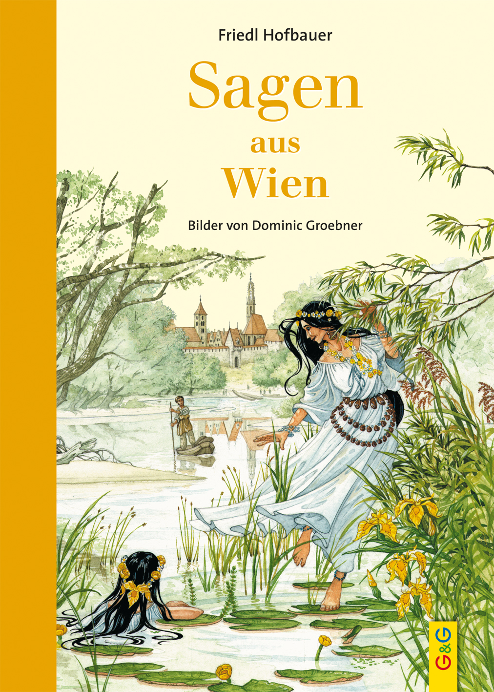

0
стр. з
0
сторінок

завантаження...

noname
Der liebe Augustin (Sagen aus Wien)
Перевод Екатерины Сакоян
Метод чтения Ильи Франка
Inhalt
Der liebe AugustinDer BärenhäuterDie BärenmühleDer BasiliskDer Teufel und die BognerinDas DonauweibchenMeister Martin EisenarmDoktor Faust in WienMeister Hans PuchsbaumDer HeidenschussDie Judith von WienDie »Gnad' Gottes« am KahlenbergDer Kegler vom StephansturmDer KlagbaumDie Linde bei St. StephanDie LöwenbrautDer Schlossherr von OttakringKüssdenpfennigDer Hahn auf der StephanskircheDas Wassermännchen in der WienDer wiederkehrende KlostermönchDas Loch in der Mauer der KreuzkircheDer Teufel in WienMauerkalk mit Wein gelöschtSchabdenrüsselDie Speckseite am Roten TurmеDie Spinnerin am KreuzDer Stock im EisenStoß in den HimmelDie Totenmesse im StephansdomDas VeilchenfestDie Teufelsmühle am Wienerberg
Der liebe Augustin
Милый Августин
Das Jahr 1679 mag den Wienern lange im Gedächtnis geblieben sein (пожалуй, 1679 год надолго останется в памяти венцев; mögen — любить, иметь склонность к кому-либо, чему-либо; выражает неуверенное предположение; der Wiener — венец; das Gedächtnis — память; bleiben — оставаться); denn es brachte wie kaum ein zweites Unheil und Tod über viele Familien (потому что он, как никакой другой, принес несчастье и смерть во многие семьи: «на многие семьи»; bringen — приносить, повлечь за собой, преподносить; das Unheil — беда, несчастье; der Tod — смерть). Von Ungarn kommend, war der grausame Würger Pest in die Stadt geschlichen (пришедшая: «приходя» из Венгрии, свирепая чума-убийца прокралась в город; der Würger — душитель, убийца; würgen — давить, душить; die Pest — чума, моровая язва; schleichen — ползти, красться, подкрадываться). Anfangs kaum bemerkt, hatte sich die Seuche in kurzer Zeit in fast allen Häusern breitgemacht (едва замеченная вначале, зараза за короткое время обосновалась почти во всех домах; bemerken — замечать, подмечать; die Seuche — заразная болезнь; sich breitmachen — расположиться, рассесться, вести себя развязно; das Haus pl. die Häuser — дом). Wer konnte, verließ die Stadt (кто мог, покидал город; können — мочь; verlassen — оставлять, покидать); denn die Zahl der Erkrankten stieg von Tag zu Tag (ибо число заболевших росло день ото дня; der/die Erkrankte — заболевший/-ая; erkranken — заболеть; krank — больной; steigen — подниматься; расти, увеличиваться; der Tag — день), die Todesfälle wuchsen an (смертные случаи множились; der Todesfall pl. die Todesfälle — смертный случай; anwachsen — нарастать, возрастать, увеличиваться), manche Leute wurden mitten in den Straßen vom Tod ereilt (некоторых людей смерть настигала: «некоторые люди были застигнуты смертью» посреди улицы: «посреди улиц»; die Leute — люди; die Straße pl. die Straßen — улица; ereilen — застигать, настигать), so dass zuletzt viele Tote in den Straßen umherlagen (так что в конце концов много мертвецов валялось на улицах; der/die Tote — покойник, умерший, мертвец; umherliegen — в беспорядке лежать вокруг, быть разбросанным, валяться, быть разбросанным в разных местах; umher — вокруг).
Das Jahr 1679 mag den Wienern lange im Gedächtnis geblieben sein; denn es brachte wie kaum ein zweites Unheil und Tod über viele Familien. Von Ungarn kommend, war der grausame Würger Pest in die Stadt geschlichen. Anfangs kaum bemerkt, hatte sich die Seuche in kurzer Zeit in fast allen Häusern breitgemacht. Wer konnte, verließ die Stadt; denn die Zahl der Erkrankten stieg von Tag zu Tag, die Todesfälle wuchsen an, manche Leute wurden mitten in den Straßen vom Tod ereilt, so dass zuletzt viele Tote in den Straßen umherlagen.
Reiche und Arme, Junge und Alte fielen der würgenden Krankheit zum Opfer (богатые и бедные, молодые и старые становились жертвой удушающей болезни; würgen — душить; jemandem zum Opfer fallen — становиться жертвой кого-либо, чего-либо; das Opfer — жертва; fallen — падать; пасть). Unaufhörlich fuhren die Leichenwagen (нескончаемым /потоком/: «непрерывно» ехали катафалки; fahren — ехать; der Leichenwagen pl. die Leichenwagen — катафалк; die Leiche — труп; der Wagen — повозка), hochbeladen mit Toten jedes Standes und Geschlechtes (набитые: «высоко нагруженные» мертвецами всякого состояния и пола; beladen — грузить, нагружать; der Stand — состояние, положение; das Geschlecht — пол; род). Die Stadtknechte lasen auf, was sie fanden (городовые: подбирали всех, кого: «/всё/, что» они находили; der Stadtknecht pl. die Stadtknechte — полицейский /нижний чин в средневековой полиции/; der Knecht — слуга, работник, батрак; auflesen — подбирать, собирать; finden — находить), beluden ihre Wagen und leerten sie in die Pestgruben (нагружали свои повозки и опорожняли их в чумные ямы; leeren — опорожнять, разгружать; die Grube — яма, котлован), die man vor der Stadt ausgehoben hatte (которые выкопали за границами города: «перед городом»; ausheben — выкапывать;). Waren die Gruben voll, wurden sie einfach zugeschüttet (когда ямы наполнялись, их просто засыпали; voll — полный, заполненный, наполненный; zuschütten — засыпать).
Reiche und Arme, Junge und Alte fielen der würgenden Krankheit zum Opfer. Unaufhörlich fuhren die Leichenwagen, hochbeladen mit Toten jedes Standes und Geschlechtes. Die Stadtknechte lasen auf, was sie fanden, beluden ihre Wagen und leerten sie in die Pestgruben, die man vor der Stadt ausgehoben hatte. Waren die Gruben voll, wurden sie einfach zugeschüttet.
In dieser schweren Zeit lebte in Wien ein lustiger Sänger und Dudelsackpfeifer (в это тяжелое время жил в Вене веселый певец и волынщик; der Dudelsackpfeifer — волынщик; der Dudelsack — волынка; pfeifen — свистеть; играть на свирели, на дудке), der immer fröhlich und guter Dinge war nach dem Grundsatz (который всегда был в радостном и добром расположении духа: «был жизнерадостным и в добром расположении духа» по принципу; fröhlich — радостный, жизнерадостный, guter Dinge sein — быть в добром расположении духа, быть веселым и бодрым; der Grundsatz — принцип):
»Lustig gelebt und lustig gestorben
ist dem Teufel die Rechnung verdorben (весело живешь, весело умрешь — черту нос утрешь: «весело жил и весело умер — черту испорчен счёт»; leben — жить; sterben — умирать; der Teufel — черт, дьявол; verderben — испортить).«
Seines unverwüstlichen Humors wegen war er den Wienern lieb und wert (за свой неистощимый юмор: «из-за своего неистощимого юмора» он был мил и дорог венцам; unverwüstlich — прочный, несокрушимый; verwüsten — опустошать, разорять /например, об урагане, войне/; der Humór — юмор; wert — стоящий, достойный), allgemein hieß er nur »der liebe Augustin« (и все называли его: «он назывался всеми» только «милый Августин»; allgemein — общий, всеобщий, поголовный; heißen — называться).
In dieser schweren Zeit lebte in Wien ein lustiger Sänger und Dudelsackpfeifer, der immer fröhlich und guter Dinge war nach dem Grundsatz:
»Lustig gelebt und lustig gestorben
ist dem Teufel die Rechnung verdorben.«
Seines unverwüstlichen Humors wegen war er den Wienern lieb und wert, allgemein hieß er nur »der liebe Augustin«.
Augustin hielt sich mit Vorliebe im Bierhaus »Zum roten Dachel« am Fleischmarkt auf (Августин с удовольствием проводил время в пивной «У маленькой красной крыши»; sich aufhalten — пребывать, находиться, тратить много времени на что-либо; die Vorliebe — пристрастие, предпочтение; das Bierhaus — пивная; das Bier — пиво; das Dach — крыша; das Dachel = das Dachl /австр./ = das Dachlein — «крышечка» /маленькая крыша/) und gab dort seine Possen und Lieder zum besten (и выступал там со своими злыми шутками и песнями; etwas zum besten geben — выступать /петь, рассказывать/, угощать, потчевать чем-либо, щеголять; die Posse — шутка /злая/, фарс; das Lied pl. die Lieder — песня). Obwohl in der Pestzeit die meisten Lokale aus Furcht vor Ansteckung von den Wienern gemieden wurden (хотя во время чумы большинство трактиров венцы избегали из страха заразиться: «большинство трактиров избегалось венцами из страха перед заражением»; das Lokál pl. die Lokale — ресторан, трактир, кабак, пивная; die Furcht — страх, боязнь, опасение; die Ansteckung — заражение; anstecken — заражать; meiden — избегать, сторониться), gab es im »Roten Dachel« stets vollbesetzte Tische (в «Маленькой красной крыше» все столы были всегда заняты; es gibt — имеется, есть, бывает; vollbesetzt — полный, полностью занят; der Tisch pl. die Tische — стол); denn Augustins Humor lockte manchen Waghalsigen dorthin (ибо юмор Августина привлекал туда иного отчаянного; locken — манить, заманивать, привлечь; manch — некоторый, иной, многие; waghalsig — отчаянный, рискованный; wagen — отваживаться; рисковать; der Hals — шея), der bei dem edlen Gerstensaft und den heiteren Klängen von Augustins Sackpfeife das tägliche Elend zu vergessen suchte (кто искал забвения от каждодневной тоски в благородном ячменном пиве и веселых звуках Августиновой волынки; edel — благородный; der Gerstensaft — /ячменное/ пиво; die Gerste — ячмень; der Saft — сок; heiter — веселый, радостный; der Klang pl. die Klänge — звон, звук; die Sackpfeife — волынка; der Sack — мешок; die Pfeife — дудка; das Elend — тоска, грусть; vergessen — забывать; suchen — искать, стремиться к чему-либо).
Augustin hielt sich mit Vorliebe im Bierhaus »Zum roten Dachel« am Fleischmarkt auf und gab dort seine Possen und Lieder zum besten. Obwohl in der Pestzeit die meisten Lokale aus Furcht vor Ansteckung von den Wienern gemieden wurden, gab es im »Roten Dachel« stets vollbesetzte Tische; denn Augustins Humor lockte manchen Waghalsigen dorthin, der bei dem edlen Gerstensaft und den heiteren Klängen von Augustins Sackpfeife das tägliche Elend zu vergessen suchte.
An einem klaren Septemberabend aber saß der liebe Augustin trüb und niedergeschlagen in der Schenke (и вот в один ясный сентябрьский вечер сидел милый Августин в кабаке, хмурый и унылый; der Abend — вечер; sitzen —сидеть; trüb — мрачный, хмурый; niedergeschlagen — удрученный, унылый; die Schenke — кабак, трактир), denn heute wollte sich kein Gast zeigen (потому как сегодня ни один гость не захотел показаться /здесь/; sich zeigen — показываться где-либо, появляться; der Gast — гость, посетитель). Wortlos und unwillig stierte er vor sich hin (он молча и недовольно уставился перед собой; wortlos — безмолвный, бессловесный, молча; das Wort — слово; unwillig — недовольный, с неохотой; der Wille — воля; stieren — уставиться на кого-либо, чего-либо; выпучить глаза; vor sich hin — прямо перед собой; себе под нос) und ließ sich Glas um Glas vorsetzen (и велел подавать себе стакан за стаканом; lassen — пускать, допускать; побуждать; заставлять; велеть; das Glas — стакан; vorsetzen — подавать /еду, вино/: «ставить перед»), um seinen Unmut zu dämpfen (чтобы приглушить свое дурное настроение; der Unmut — неудовольствие, негодование, дурное настроение; dämpfen — уменьшать, убавлять, притуплять). Wankend und höchst unsicher auf den Beinen (пошатываясь и в высшей степени неуверенно /держась/ на ногах; wanken — шататься, качаться, идти пошатываясь; unsicher — неуверенный, ненадежный; das Bein pl. die Beine — нога), verließ er spätabends den Schauplatz seiner früheren Triumphe (покинул он поздно вечером арену былых триумфов = своих былых триумфов; spätabends — поздно вечером, поздним вечером; der Schauplatz — место действия, арена /перен./; die Schau — выставка, показ; schauen — созерцать, смотреть; der Platz — площадь; früher — прежний, бывший, былой), um seine vor der Stadt gelegene Behausung aufzusuchen (чтобы посетить свое жилище, расположенное за городом; gelegen — расположенный, удобный; die Behausung — жилище, жилье, приют; aufsuchen — отыскивать, посещать, навещать).
An einem klaren Septemberabend aber saß der liebe Augustin trüb und niedergeschlagen in der Schenke, denn heute wollte sich kein Gast zeigen. Wortlos und unwillig stierte er vor sich hin und ließ sich Glas um Glas vorsetzen, um seinen Unmut zu dämpfen. Wankend und höchst unsicher auf den Beinen, verließ er spätabends den Schauplatz seiner früheren Triumphe, um seine vor der Stadt gelegene Behausung aufzusuchen.
Als er über den Kohlmarkt zum Burgtor hinausgetorkelt war (когда Августин «он» брёл: «шел шатаясь» через капустный рынок к городским: «крепостным» воротам; der Kohl — капуста; der Markt — рынок, базар; torkeln — шататься, нетвердо держаться на ногах; die Burg — крепость, замок; das Tor — ворота; hinaus —туда-наружу), stolperte er und fiel am Rande der Straße nieder (он споткнулся и упал на краю улицы; stolpern — спотыкаться; niederfallen — падать, упасть; der Rand — край), wo er, unfähig, sich wieder zu erheben, liegen blieb und gleich einschlief (где остался лежать, не в состоянии: «неспособный» подняться снова, и сразу же заснул; unfähig — неспособный к чему-либо; sich erheben — подниматься, вставать; liegen bleiben — оставаться лежать, быть не в состоянии встать; einschlafen — засыпать, уснуть). Als ein wenig später die Pestknechte mit einer Leichenfuhre an der Stelle vorüberkamen (когда немного позже мимо этого места проезжали на своей повозке: «труповозке» сборщики чумных трупов: «чумные работники»; die Fuhre — воз, повозка; die Stelle — место, пункт; vorüberkommen — идти, проходить, проезжать мимо), dachten sie, hier liege auch ein mausetoter Mann (они подумали, /что/ здесь тоже лежит мертвёхонький человек; denken — думать; полагать; liegen — лежать; mausetot /фам./ — совершенно мертвый, совершенно безжизненный; die Maus — мышь; tot — мертвый), packten ihn und warfen ihn zu den übrigen Toten auf den Wagen (схватили его и бросили к прочим мертвецам на повозку; packen — хватать, схватывать; werfen — бросать, кидать; übrig — остальной, прочий). Sie luden ihn dann mit den andern in der Pestgrube ab (затем они выгрузили его с остальными в чумную яму; abladen — выгружать; der, die, das andere — другой/ая/ое, остальной/ая/ое) und fuhren wieder davon (и снова уехали; davonfahren — уезжать; davon- — отделяемая приставка, указывает на удаление).
Als er über den Kohlmarkt zum Burgtor hinausgetorkelt war, stolperte er und fiel am Rande der Straße nieder, wo er, unfähig, sich wieder zu erheben, liegenblieb und gleich einschlief. Als ein wenig später die Pestknechte mit einer Leichenfuhre an der Stelle vorüberkamen, dachten sie, hier liege auch ein mausetoter Mann, packten ihn und warfen ihn zu den übrigen Toten auf den Wagen. Sie luden ihn dann mit den andern in der Pestgrube ab und fuhren wieder davon.
Augustin aber hatte weder das Aufladen noch das Abladen verspürt (Августин, однако, не почувствовал ни погрузки, ни выгрузки; weder ... noch — ни … ни; aufladen — нагружать, грузить; verspüren — чувствовать, ощутить), sondern mitten unter den Toten auf dem Wagen und in der Grube weitergeschlafen (но продолжал спать прямо: «посреди» под покойниками на повозке и в яме; schlafen — спать; weiter + глагол — продолжать делать что-либо), als ob er zu Hause in seinem Bett läge (как если бы он лежал дома в своей кровати; als ob — как будто, словно, как если бы; das Bett — кровать). Als ihn dann die Morgenluft ernüchterte (когда его потом протрезвил утренний воздух; der Morgen — утро; die Luft — воздух ernüchtern — протрезвлять, отрезвлять; nüchtern — трезвый) und er aus seinem Schlummer erwachte (и он очнулся от своего безмятежного сна: der Schlummer — дремота, спокойный сон, безмятежный сон; erwachen — очнуться, просыпаться; wach — бодрствующий), sah er mit Bestürzung, dass eine Pestgrube voll schauerlicher Leichen seine unheimliche Schlafstätte gewesen war (то: /он/ в смятении увидел, что чумная яма, полная ужасных трупов, была зловещим местом его сна; sehen — видеть; die Bestürzung — смущение, замешательство, потрясение, смятение; schauerlich — ужасный, жуткий; der Schauer — дрожь, содрогание; unheimlich — жуткий, зловещий; der Schlaf — сон; die Stätte — место /действия, происшествия/).
Augustin aber hatte weder das Aufladen noch das Abladen verspürt, sondern mitten unter den Toten auf dem Wagen und in der Grube weitergeschlafen, als ob er zu Hause in seinem Bett läge. Als ihn dann die Morgenluft ernüchterte und er aus seinem Schlummer erwachte, sah er mit Bestürzung, dass eine Pestgrube voll schauerlicher Leichen seine unheimliche Schlafstätte gewesen war.
Da kamen gerade die Pestknechte mit einer neuen Leichenfuhre zu der Grube (тут как раз подошли к яме сборщики чумных трупов с новой повозкой) und gewahrten entsetzt einen Mann zwischen den Toten herumstapfen (и, объятые ужасом, обнаружили человека, с трудом бродившего: «шагавшего» среди трупов; gewahren — заметить, увидеть, обнаружить; entsetzt — объятый ужасом, испуганный; entsetzen — ужасать, приводить в ужас; stapfen — тяжело шагать, тяжело ступать; herum- — указывает на круговое движение). Augustin aber rief ihnen laut schimpfend zu (а Августин закричал им, громко ругаясь; jemandem etwas zurufen — кричать что-либо кому-либо; schimpfen — ругать, ругаться): »So helft mir doch (да помогите же мне)! Seht ihr denn nicht (вы что же, не видите), dass ich den Grubenrand nicht erreichen und daher aus dieser verdammten Grube nicht hinausklettern kann (что я не могу дотянуться до края: «края ямы» и выкарабкаться: «потому выкарабкаться» из этой проклятой ямы; erreichen — достигать, добираться; daher — оттого, и поэтому, а потому; verdammt — проклятый; klettern — лезть, карабкаться; hinaus — «туда-наружу»)?«
Da kamen gerade die Pestknechte mit einer neuen Leichenfuhre zu der Grube und gewahrten entsetzt einen Mann zwischen den Toten herumstapfen. Augustin aber rief ihnen laut schimpfend zu: »So helft mir doch! Seht ihr denn nicht, dass ich den Grubenrand nicht erreichen und daher aus dieser verdammten Grube nicht hinausklettern kann?«
Einer von den Knechten aber sagte (один из работников сказал): »Den haben wir doch gestern für tot auf der Straße aufgelesen und in die Grube geworfen (ведь /именно/ этого мы подобрали вчера на улице, /приняв/ за мертвого: «как мертвого», и бросили в яму). Hat der Mensch Glück, dass die Grube gestern noch nicht voll war und daher nicht zugeschüttet wurde (повезло человеку, что яма вчера еще не была полной и потому не засыпана; das Glück — удача; счастье; Glück haben — посчастливиться, везти), sonst hätte es für ihn aus seinem Rausch kein Erwachen mehr gegeben (иначе бы не было для него больше никакого пробуждения из его опьянения; der Rausch — опьянение, хмель; das Erwachen — пробуждение; erwachen — очнуться, просыпаться; wach — бодрствующий)!«
Einer von den Knechten aber sagte: »Den haben wir doch gestern für tot auf der Straße aufgelesen und in die Grube geworfen. Hat der Mensch Glück, dass die Grube gestern noch nicht voll war und daher nicht zugeschüttet wurde, sonst hätte es für ihn aus seinem Rausch kein Erwachen mehr gegeben!«
Der liebe Augustin aber wurde ungeduldig (милый Августин, однако, терял терпение: «становился нетерпеливым»; die Ungeduld — нетерпение; die Geduld — терпение; dulden — терпеть). Die Helfer waren ihm zu langsam (помощники были слишком медлительными, на его взгляд: «для него»; langsam — медленный, медлительный, неторопливый). »Mit einer Nacht in der Pestgrube habe ich vollauf genug (я сыт по горло ночью в этой чумной яме: «с меня вполне хватит ночи в этой чумной яме»; genug — достаточно, довольно; genug haben — надоесть; ich habe genug — мне это надоело, с меня хватит; vollauf — вдоволь, достаточно, вполне) «, rief er unwillig (крикнул он недовольно), »ich will keine Minute länger hier drinnen bleiben (я не хочу ни минуты больше оставаться здесь: «внутри»; lange — долго). Rasch, helft mir hinauf (живо, помогите мне /выбраться/ наверх: hinauf — вверх, кверху, наверх)!«
Der liebe Augustin aber wurde ungeduldig. Die Helfer waren ihm zu langsam. »Mit einer Nacht in der Pestgrube habe ich vollauf genug«, rief er unwillig, »ich will keine Minute länger hier drinnen bleiben. Rasch, helft mir hinauf!«
Sie zogen ihn aus der Grube, und er ging schimpfend davon (они вытащили его из ямы, и он, ругаясь, ушел; ziehen — тянуть, тащить; вынимать). Das Nachtlager unter den Pestleichen hatte keine bösen Folgen für ihn (ночёвка под чумными трупами не имела для него плохих последствий; das Nachtlager — ночлег, ночёвка; böse — злой, плохой, вредный; die Folge — следствие, последствие; folgen — следовать); er blieb gesund, wie er es bisher gewesen war (Августин: «он» остался здоровым, каким был до того; gesund — здоровый; bisher — до сих пор, до сей поры), und bildete weiter den Anziehungspunkt für die Gäste des »Roten Dachel« (и дальше привлекал: «являлся пунктом притяжения» посетителей «Маленькой красной крыши»; bilden — составлять, являться, представлять собою; der Anziehungspunkt — притягательный центр; die Anziehung — притяжение, привлекательность; anziehen — привлекать, интересовать), denen er sein schauriges Abenteuer in zierlichen Versen noch oft zu Gehör brachte (до слуха которых: «которым до слуха» он еще не раз: «часто» в изящных стихах доносил свое жуткое приключение; schaurig — жуткий, ужасный; das Abenteuer — приключение; zierlich — изящный, изысканный; der Vers pl. die Verse — стих; das Gehör — слух; bringen — приносить, доводить до чего-либо), bis er im Jahre 1702 hochbetagt eines natürlichen Todes starb (пока в 1702 году не умер в преклонных годах естественной смертью; hochbetagt — престарелый, в годах, в преклонном возрасте; natürlich — естественный; sterben — умереть, скончаться).
Sie zogen ihn aus der Grube, und er ging schimpfend davon. Das Nachtlager unter den Pestleichen hatte keine bösen Folgen für ihn; er blieb gesund, wie er es bisher gewesen war, und bildete weiter den Anziehungspunkt für die Gäste des »Roten Dachel«, denen er sein schauriges Abenteuer in zierlichen Versen noch oft zu Gehör brachte, bis er im Jahre 1702 hochbetagt eines natürlichen Todes starb.
Der Bärenhäuter[1]
Медвежатник
In der unglücklichen Schlacht bei Varna im Jahre 1444 hatten die Türken fast das ganze christliche Heer aufgerieben (в /ходе/ неудачной битвы при Варне в 1444 году турки почти полностью истребили христианское войско; unglücklich — несчастливый, неудачный; das Unglück — несчастье, горе, беда; das Glück — счастье; удача; die Schlacht — битва, сражение, бой; christlich [k-] — христианский; das Heer — войско, армия; aufreiben — изнурять, уничтожать). Unter den wenigen, die dem blutigen Gemetzel entronnen waren (среди немногих, кто: «который» избежал кровавой бойни; wenig — мало; немногие; das Gemetzel — резня, бойня; entrinnen — убегать от кого-либо, чего-либо, избегать кого-либо, чего-либо), befand sich auch der Landsknecht Georg Thalhammer (был и наемный солдат Георг Тальхаммер; sich befinden — находиться, быть; der Landsknecht — ландскнехт, наемный солдат). Nur der Schnelligkeit seiner Beine hatte er es zu verdanken (только благодаря быстроте его ног: «только быстроте своих ног он должен был быть благодарен тому»; die Schnelligkeit — быстрота, скорость; schnell — быстрый, проворный; haben zu + inf. — выражает долженствование; jemandem etwas verdanken — быть обязанным чем-либо кому/чему-либо, благодарить), dass ihm die Flucht in einen dichten Wald gelang (ему удался: «что ему» побег в густой лес; die Flucht — бегство, побег; dicht — плотный, густой, дремучий; der Wald), wo er sich zunächst vor der Wut seiner Verfolger sicher glaubte (где он поначалу чувствовал: «считал» себя защищенным от ярости своих преследователей; zunächst — сначала, пока, поначалу; die Wut — ярость, бешенство; der Verfolger pl. die Verfolger — преследователь; verfolgen — преследовать; sicher — безопасный, надежный; glauben — полагать, думать; верить). Todmüde hatte er sich hinter ein dichtes Gebüsch geworfen (смертельно усталый, он бросился за густой кустарник = укрылся за густым кустарником; der Tod — смерть; müde — усталый, уставший; sich werfen — бросаться, кидаться; das Gebüsch — кустарник, кусты) und überdachte seine Lage (и стал обдумывать: «обдумывал» свое положение; überdenken — продумать, обдумать, осмыслить; die Lage).
In der unglücklichen Schlacht bei Varna im Jahre 1444 hatten die Türken fast das ganze christliche Heer aufgerieben. Unter den wenigen, die dem blutigen Gemetzel entronnen waren, befand sich auch der Landsknecht Georg Thalhammer. Nur der Schnelligkeit seiner Beine hatte er es zu verdanken, dass ihm die Flucht in einen dichten Wald gelang, wo er sich zunächst vor der Wut seiner Verfolger sicher glaubte. Todmüde hatte er sich hinter ein dichtes Gebüsch geworfen und überdachte seine Lage.
Sie war verzweifelt (оно было отчаянным; verzweifelt — отчаянный, полный отчаяния; verzweifeln — отчаиваться, терять надежду). Was sollte er in dieser furchtbaren Wildnis beginnen (что он должен был делать в этих страшных зарослях; furchtbar — страшный, ужасный; die Furcht — страх; die Wildnis — дикая местность, заросли, дебри; wild — дикий; beginnen — начинать; предпринимать)? Würde er von den blutgierigen Feinden aufgespürt werden (выследят ли его кровожадные враги: «будет ли он выслежен кровожадными врагами»; blutgierig — кровожадный, лютый; das Blut — кровь; gierig — жадный, алчный; der Feind pl. die Feinde; aufspüren — выслеживать, отыскивать), oder sollte es ihm vielleicht doch gelingen, die Heimat wiederzusehen (или ему все же, возможно, удастся: «должно бы удаться» снова увидеть родину; gelingen — удаваться, получаться; die Heimat — родина, отечество; wiedersehen — вновь увидеть, вновь встретить)? Wie aber sich Nahrung und Obdach verschaffen (но как добыть себе пропитание и крышу над головой; die Nahrung — питание, пища; das Obdach — кров, приют, пристанище; verschaffen — достать, добыть) ohne Kenntnis Landessprache, ohne Mittel, fremd und geächtet (без знания местного языка, без денег: «средств», чужому и презираемому; die Kenntnis — знание; die Landessprache — национальный язык, язык страны, государственный язык; das Land — страна, земля; das Mittel — средство, способ; die Mittel /pl./ — материальные средства; geächtet — отверженный, опальный, поставленный вне закона; ächten — объявлять кого-либо вне закона, изгонять)? Zwischen Hoffnung und Verzweiflung schwankten seine Gedanken hin und her (его мысли метались: «колебались туда и сюда» от надежды к отчаянию; die Hoffnung — надежда; hoffen — надеяться; die Verzweiflung — отчаяние; schwanken — качаться, колебаться; der Gedanke pl. die Gedanken — мысль; hin und her — туда и сюда, взад и вперед), aber immer aussichtsloser schien ihm schließlich sein Schicksal zu sein (но все безнадежнее казалась ему под конец его судьба; aussichtslos — безнадежный, безвыходный; die Aussicht — вид; перспектива, шансы; scheinen — казаться, представляться; schließlich — в конечном счете, наконец, в конце концов; das Schicksal — судьба, участь).
Sie war verzweifelt. Was sollte er in dieser furchtbaren Wildnis beginnen? Würde er von den blutgierigen Feinden aufgespürt werden, oder sollte es ihm vielleicht doch gelingen, die Heimat wiederzusehen? Wie aber sich Nahrung und Obdach verschaffen ohne Kenntnis der Landessprache, ohne Mittel, fremd und geächtet? Zwischen Hoffnung und Verzweiflung schwankten seine Gedanken hin und her, aber immer aussichtsloser schien ihm schließlich sein Schicksal zu sein.
Da stand plötzlich ein unheimlich aussehender hagerer Mann mit scharfer Hakennase und stechenden Augen vor ihm (и тут вдруг стоял = возник перед ним ужасного вида: «ужасно выглядящий» тощий человек с острым крючковатым носом и колючими глазами; stehen — стоять; aussehen — выглядеть; hager — худой, тощий; scharf — острый, резкий; die Hakennase — крючковатый нос, нос крючком; die Nase — нос; der Haken — крюк, крючок; stechen — колоть, прокалывать; das Auge pl. die Augen — глаз). Mit raschem Griff fasste der Landsknecht nach seiner Waffe (в один момент: «быстрым приемом» схватился солдат за свое оружие; rasch — быстрый, скорый, проворный; der Griff — хватание, схватывание; greifen — хватать, схватывать; mit einem Griff — сразу; fassen — хватать, схватить, хвататься; die Waffe — оружие), um sein Leben gegen den vermeintlichen Angreifer mit der Schärfe des Schwertes zu verteidigen (чтобы острым мечом: «остротою меча» защитить свою жизнь от мнимого противника: «нападающего»; vermeintlich — предполагаемый, мнимый; der Angreifer — нападающий, атакующий, агрессор; angreifen — нападать, наступать, атаковать; die Schärfe — острота, резкость; das Schwert — меч). Der Fremde aber rief ihm zu (но незнакомец закричал ему; fremd — чужой; der Fremde — чужой, незнакомец; jemandem etwas zurufen — кричать что-либо кому-либо):
Da stand plötzlich ein unheimlich aussehender hagerer Mann mit scharfer Hakennase und stechenden Augen vor ihm. Mit raschem Griff fasste der Landsknecht nach seiner Waffe, um sein Leben gegen den vermeintlichen Angreifer mit der Schärfe des Schwertes zu verteidigen Der Fremde aber rief ihm zu:
»Nur ruhig Blut, Geselle (только спокойно, парень; ruhig Blut! — спокойно!, не горячись!: «спокойной крови»; ruhig — спокойный; das Blut — кровь; der Geselle — подмастерье; парень)! Lass dein Schwert in der Scheide (оставь свой меч в ножнах; lassen — оставлять; die Scheide — ножны). Du hast vor mir nichts zu befürchten (тебе нечего бояться меня: «ты не должен меня бояться»; befürchten — опасаться, бояться; die Furcht — страх). Ich will dir im Gegenteil dazu verhelfen, ungefährdet in deine Heimat zu entkommen (напротив, я хочу помочь тебе убежать на родину, не подвергаясь опасности; im Gegenteil — наоборот, напротив; verhelfen — содействовать, способствовать кому-либо в чем-либо; ungefährdet — находящейся вне опасности, не подвергающийся опасности; die Heimat — родина; entkommen — убежать, ускользнуть), und dich dort so reich mit Geld und Gut bedenken (и там так щедро одарить тебя деньгами и имуществом; Geld und Gut — имущество; das Geld; das Gut; reich — богатый, богато; обильно, щедро; bedenken — одарить, наделить /кого-либо чем-либо/), dass du in Zukunft ein sorgloses, bequemes Leben führen kannst (чтобы в будущем ты смог вести беззаботную, приятную жизнь; die Zukunft — будущее; sorglos — беззаботный; die Sorge — забота, беспокойство; bequem — удобный, приятный, покойный). Dafür will ich nur einen geringen Gegendienst (за это я хочу /получить/ лишь незначительную ответную услугу; gering — малый, ничтожный, незначительный; der Gegendienst — взаимная услуга, ответная услуга; der Dienst — служба, работа, услуга; Gegen- — противо-): nach deinem Tod soll deine Seele mir gehören (после смерти твоя душа должна принадлежать мне; die Seele — душа; gehören — принадлежать кому-либо).«
»Nur ruhig Blut, Geselle! Lass dein Schwert in der Scheide. Du hast vor mir nichts zu befürchten. Ich will dir im Gegenteil dazu verhelfen, ungefährdet in deine Heimat zu entkommen, und dich dort so reich mit Geld und Gut bedenken, dass du in Zukunft ein sorgloses, bequemes Leben führen kannst. Dafür will ich nur einen geringen Gegendienst: nach deinem Tod soll deine Seele mir gehören.«
Neue Hoffnung regte sich im Herzen des biederen Landsknechts (новая надежда шевельнулась в сердце честного солдата; die Hoffnung — надежда; sich regen — двигаться, шевелиться, дрогнуть; das Herz — сердце; bieder — честный, порядочный, добрый, славный), als er die ersten Worte des Bösen vernahm (когда он услышал первые слова дьявола; das Wort pl. die Wörter /отдельные слова/, die Worte /слова в речи, связные слова/, das Böse — зло; der Böse — дьявол; die Worte — слова /фраза/; vernehmen — слышать, услышать); aber die letzte Bedingung seines unheimlichen Helfers erfüllte ihn mit so tiefem Schrecken (но последнее условие его жуткого помощника наполнило солдата: «его» таким глубоким ужасом; die Bedingung — условие; der Helfer — помощник; helfen — помогать; erfüllen — наполнять, преисполнять; tief — глубокий; der Schrecken — ужас, испуг, страх), dass er ausrief »Nein, nein, meine Seele verkaufe ich dir nicht (что он воскликнул: нет, нет мою душу я тебе не продам; ausrufen — выкрикивать, восклицать; verkaufen — продавать); lieber will ich alle Not ertragen, ja hier elend zugrunde gehen als einen solchen Pakt abschließen (лучше я буду терпеть всякие лишения, и даже погибну здесь в нужде: «нуждаясь», чем заключу такое соглашение; lieber — лучше, охотнее, скорее; die Not — нужда, беда, лишения; ertragen — переносить, терпеть; elend — жалкий, плачевный; zugrunde gehen — погибнуть; der Pakt — договор, соглашение; abschließen — запирать; заключать /договор/).«
Neue Hoffnung regte sich im Herzen des biederen Landsknechts, als er die ersten Worte des Bösen vernahm; aber die letzte Bedingung seines unheimlichen Helfers erfüllte ihn mit so tiefem Schrecken, dass er ausrief »Nein, nein, meine Seele verkaufe ich dir nicht; lieber will ich alle Not ertragen, ja hier elend zugrunde gehen als einen solchen Pakt abschließen. «
Vergebens suchte ihm der Teufel die Heimkehr ins Vaterland (напрасно старался дьявол /расписать в самых ярких красках/ возвращение домой, на родину; suchen — искать; стремиться /к чему-либо/; die Heimkehr — возвращение домой /на родину/; das Vaterland — отечество, родина) und das schöne Leben, das ihm dort winkte (и прекрасную жизнь, которая его там ожидала; winken — кивать; ожидать, сулить), in den lebhaftesten Farben auszumalen (lebhaft — живой, оживленный, яркий; die Farbe — краска; ausmalen — расписывать, представлять, изображать). Der Landsknecht blieb hartnäckig bei seiner Weigerung (солдат оставался непреклонным в своем отказе; hartnäckig — упрямый, несгибаемый, непреклонный: «жестоковыйный»; hart — жесткий; der Nacken — затылок, шея; die Weigerung — отказ; sich weigern — отказываться). Da beschloss der Teufel, gelindere Saiten aufzuziehen (тогда черт решил заговорить более мягким тоном; gelind — мягкий; die Saite — струна; aufziehen — подтягивать, натягивать; gelindere Saiten aufzuziehen — заговорить более мягким тоном). Du wirst mir aber trotzdem nicht entgehen, dachte er (ты все равно от меня не уйдешь, думал он; entgehen — уходить, ускользать; denken — думать; полагать) und sagte zu Thalhammer (и сказал Тальхаммеру): »Du sollst sehen, dass man mich zu Unrecht den Bösen nennt (ты увидишь: «должен увидеть», что меня несправедливо называют злодеем; das Unrecht — несправедливость; zu Unrecht — зря, напрасно, несправедливо; nennen — называть, давать имя, звать). Ich will dir einen andern Vorschlag machen, der dir besser gefallen wird (я тебе сделаю другое предложение, которое тебе больше понравится; der Vorschlag — предложение; vorschlagen — предлагать; gefallen — нравиться, быть по вкусу).«
Vergebens suchte ihm der Teufel die Heimkehr ins Vaterland und das schöne Leben, das ihm dort winkte, in den lebhaftesten Farben auszumahlen. Der Landsknecht blieb hartnäckig bei seiner Weigerung. Da beschloss der Teufel, gelindere Saiten aufzuziehen. Du wirst mir aber trotzdem nicht entgehen, dachte er und sagte zu Thalhammer: »Du sollst sehen, dass man mich zu Unrecht den Bösen nennt Ich will dir einen andern Vorschlag machen, der dir besser gefallen wird.«
— »Und das wäre?« fragte der andere (и что же это могло бы быть? — спросил солдат: «другой»). »Du darfst dich zum Dank für meine Hilfe durch drei Jahre weder waschen noch kämmen, noch vom Schmutz reinigen (в знак благодарности за мою помощь тебе три года нельзя будет: «ты не смеешь» ни мыться, ни причесываться, ни счищать грязь; dürfen — мочь, сметь, иметь право; zum Dank — в знак благодарности; jemandem für etwas danken — благодарить кого-либо за что-либо; die Hilfe — помощь; sich waschen — мыться, умываться; sich kämmen — причесываться; der Schmutz — грязь, мусор; reinigen — чистить, очищать; убирать), auch nicht Haare und Nägel beschneiden (а также стричь волосы и ногти; das Haar pl. die Haare — волос /волосы/; der Nagel pl. die Nägel — ноготь; beschneiden — обрезать, подстригать, стричь), darfst auch nie die Kleidung wechseln (также никогда нельзя будет менять одежду; die Kleidung — одежда, платье), sonst ist deine Seele mein (иначе твоя душа будет моей). Im übrigen aber kannst du essen und trinken, tun und lassen, was zu willst (а в остальном ты можешь есть и пить, делать и = или не делать: «оставлять», что захочешь; im übrigen = im Übrigen — впрочем, в прочих вопросах; в остальном), die Mittel dazu werde ich dir reichlich zur Verfügung stellen (средства для этого я тебе в избытке предоставлю; reichlich — обильно, с избытком, щедро; zur Verfügung stellen — предоставлять в чье-либо распоряжение; über etwas verfügen — иметь в своем распоряжении что-либо; распоряжаться, располагать чем-либо).«
— »Und das wäre?« fragte der andere. »Du darfst dich zum Dank für meine Hilfe durch drei Jahre weder waschen noch kämmen, noch vom Schmutz reinigen, auch nicht Haare und Nägel beschneiden, darfst auch nie die Kleidung wechseln, sonst ist deine Seele mein. Im übrigen aber kannst du essen und trinken, tun und lassen, was zu willst, die Mittel dazu werde ich dir reichlich zur Verfügung stellen.«
Dieser Vorschlag dünkte Georg weit annehmbarer (это предложение показалось Георгу намного более подходящим; dünken — казаться; annehmbar — приемлемый, подходящий; annehmen — принимать). Denn, dachte er, habe ich während des ganzen Krieges oftmals ungepflegt in Schmutz und Nässe viele Wochen und Monate verbracht (ведь я, думал он, во время всей войны, часто немытый-нечёсаный: «запущенный», проводил в грязи и сырости помногу недель и месяцев; der Krieg — война; ungepflegt — запущенный, неухоженный, неряшливый; pflegen — ухаживать, заботиться; die Nässe — сырость; nass — сырой, мокрый; die Woche; der Monat; verbringen — проводить /время/), so werde ich dieses Leben auch noch weitere drei Jahre zu führen imstande sein (так что я смогу вести такую жизнь и следующие три года; führen — вести; imstande sein — мочь, быть в состоянии).
Dieser Vorschlag dünkte Georg weit annehmbarer. Denn, dachte er, habe ich während des ganzen Krieges oftmals ungepflegt in Schmutz und Nässe viele Wochen und Monate verbracht, so werde ich dieses leben auch noch weitere drei Jahre zu führen imstande sein.
Mit Handschlag wurde der Pakt besiegelt (договор был скреплен рукопожатием; der Handschlag — рукопожатие, удар по рукам; die Hand — рука /кисть/; der Schlag — удар; besiegeln — скреплять, закреплять; das Siegel — печать), und im Augenblick sah sich Thalhammer nach Wien versetzt (и в мгновение ока Тальхаммер оказался: «увидел себя» перенесенным в Вену; der Augenblick — миг, мгновение; sehen — видеть; versetzen — переставлять, перемещать), nachdem der Teufel noch rasch einen Bären gefangen (после того как черт быстро поймал медведя; der Bär — медведь; fangen — ловить, поймать) und den Landsknecht in die abgezogene Haut des Tieres gesteckt hatte (и засунул солдата в содранную шкуру зверя; abziehen — стягивать, снимать, сдирать; die Haut — кожа, шкура; das Tier — зверь, животное; stecken — втыкать, всовывать, вставлять). Sodann übergab er ihm einen Beutel voll Gold mit dem Bedeuten (затем черт: «он» вручил ему кошелек полный золота с указанием; übergeben — передавать, вручать; der Beutel — кошелек; das Gold — золото; bedeuten — значить, означать; /уст./ объяснять, растолковывать), er könne davon so viel verbrauchen, als er wolle (/что/ он может расходовать оттуда столько, сколько хочет; verbrauchen — потреблять, расходовать), der Beutel werde niemals leer werden (/но/ кошелек никогда не опустеет: «не станет пустым»; leer — пустой; werden — становиться). Schließlich ermahnte er seinen Schützling noch (в заключение черт: «он» снова: «еще» предостерег своего подопечного; ermahnen — предостерегать, наставлять, напоминать; der Schützling — опекаемый, подопечный, протеже; schützen — защищать, оберегать; der Schutz — защита), den Vertrag in allen Punkten getreulich zu erfüllen, und verschwand (/чтобы тот/ верно исполнял договор по всем пунктам, и исчез; getreulich — точно, верно, надежно; der Vertrag — договор; der Punkt — точка, пункт; erfüllen — исполнять, выполнять; verschwinden — исчезать).
Mit Handschlag wurde der Pakt besiegelt, und im Augenblick sah sich Thalhammer nach Wien versetzt, nachdem der Teufel noch rasch einen Bären gefangen und den Landsknecht in die abgezogene Haut des Tieres gesteckt hatte. Sodann übergab er ihm einen Beutel voll Gold mit dem Bedeuten, er könne davon so viel verbrauchen, als er wolle, der Beutel werde niemals leer werden. Schließlich ermahnte er seinen Schützling noch, den Vertrag in allen Punkten getreulich zu erfüllen, und verschwand.
Thalhammer hielt das Abkommen mit dem Bösen genau ein (Тальхаммер точно соблюдал договор с дьяволом; einhalten — соблюдать, выдерживать; das Abkommen — соглашение, договор, сделка); er wusch und kämmte sich nicht, ließ Haar und Bart wachsen (он не мылся и не причесывался, отрастил волосы и бороду: «дал вырасти волосам и бороде»; wachsen — расти; der Bart — борода; борода и усы) und ging stets in seine Bärenhaut gehüllt umher (и всегда разгуливал закутанным в свою медвежью шкуру; umhergehen — ходить туда и сюда; расхаживать, разгуливать; die Bärenhaut — медвежья шкура; hüllen — закутывать, укутывать). Es war daher auch kein Wunder, dass er nach wenigen Wochen so schmutzig und verwildert aussah (потому неудивительно: «не было чудом», что через несколько недель он выглядел таким грязным и запущенным; das Wunder — чудо; verwildert — одичалый, запущенный, заросший; verwildern — одичать, опуститься; wild — дикий), dass fast nichts Menschliches mehr an dieser langhaarigen, schmutzstarrenden Gestalt zu erkennen war (что нельзя было разглядеть почти ничего человеческого в этой длинноволосой, полностью покрытой грязью фигуре; der Mensch — человек; menschlich — человеческий; starren — пристально смотреть; быть полностью покрытым /грязью, пылью/; die Gestalt — фигура, образ; личность; erkennen — узнавать, распознавать, увидеть).
Thalhammer hielt das Abkommen mit dem Bösen genau ein; er wusch und kämmte sich nicht, ließ Haar und Bart wachsen und ging stets in seine Bärenhaut gehüllt umher. Es war daher auch kein Wunder, dass er nach wenigen Wochen so schmutzig und verwildert aussah, dass fast nichts Menschliches mehr an dieser langhaarigen, schmutzstarrenden Gestalt zu erkennen war.
Die Erwachsenen machten einen weiten Bogen um diesen üblen, bärenhäutigen Gesellen (взрослые далеко обходили этого противного, покрытого медвежьей шкурой малого; der Erwachsene — взрослый; der Bogen — дуга; einen Bogen um jemanden, etwas machen — обходить кого-либо, что-либо; übel — плохой, противный, скверный), der jedermann mit Furcht und Grauen erfüllte (который каждого наполнял боязнью и страхом; das Grauen — страх, боязнь; erfüllen- наполнять, преисполнять), und die Kinder wurden durch den Ruf: »Der Bärenhäuter kommt« in Angst und Schrecken versetzt (а дети из-за крика «Медвежатник идет», впадали в /такой/ страх и ужас; das Kind pl. die Kinder — ребенок; der Ruf — крик, возглас; versetzen — приводить в какое-либо чувство; die Angst — страх), so dass sie schreiend flüchteten (что с воплем: «крича» спасались бегством; schreien — кричать, вопить; flüchten — бежать, спасаться бегством; die Flucht — бегство).
Die Erwachsenen machten einen weiten Bogen um diesen üblen, bärenhäutigen Gesellen, der jedermann mit Furcht und Grauen erfüllte, und die Kinder wurden durch den Ruf: »Der Bärenhäuter kommt« in Angst und Schrecken versetzt, so dass sie schreiend flüchteten.
Wiewohl Thalhammer von seinen Feldzügen her an vieles gewöhnt war (хотя Тальхаммер со времен своих военных походов привык ко многому; von ... her — с /какого-то времени/, от; der Feldzug pl. die Feldzüge — поход, военный поход; an etwas gewöhnt — приученный, привыкший к чему-либо; jemanden an etwas gewöhnen — приучать кого-либо к чему-либо), schien ihm sein Zustand anfangs unerträglich (его положение казалось ему поначалу невыносимым; der Zustand — состояние, положение; anfangs — сначала, вначале, поначалу; der Anfang — начало; unerträglich — невыносимый, нестерпимый; ertragen — переносить, терпеть, сносить). Doch mit der Zeit gewöhnte er sich an die Unreinlichkeit und an das Aufsehen (но со временем он привык к нечистоте и к всеобщему вниманию; sich gewöhnen an etwas — привыкать к чему-либо, свыкнуться с чем-либо; das Aufsehen — сенсация, всеобщее возбуждение, шумиха; Aufsehen erregen — будоражить умы, привлекать внимание), das er mit seiner Bärenhaut überall erregte (которое он на каждом шагу вызывал своей медвежьей шкурой; überall — повсюду, повсеместно, на каждом шагу; erregen — вызывать, возбуждать). Da er mit Geldmitteln zur Genüge versehen war (поскольку он был вдоволь обеспечен деньгами: «денежными средствами»; zur Genüge — вдоволь, достаточно; versehen — снабжать, обеспечивать), ließ er sich an Speise und Trank nichts abgehen (он не отказывал себе ни в чем, что касалось еды и питья; sich nichts abgehen lassen — не отказывать себе ни в чем; abgehen — отходить, отклоняться; Speise und Trank — еда и питьё; die Speise — пища, еда, кушанье; der Trank — напиток), nahm in einer alten Hütte in der Vorstadt Quartier (поселился в старой хижине в предместье; das Quartíer — жилое помещение, жильё; nehmen — брать; Quartier nehmen — поселиться, снять жильё; die Hütte — хижина, избушка; die Vorstadt — пригород, предместье, посад) und ließ auch seinen Quartiergeber an seinem guten Leben teilhaben (и позволил также своему хозяину: «квартирохозяину» разделить /с собой/ его хорошую жизнь; der Geber — дающий; податель; an etwas teilhaben — разделять /радость, горе/; приобщиться к чему-либо).
Wiewohl Thalhammer von seinen Feldzügen her an vieles gewöhnt war, schien ihm sein Zustand anfangs unerträglich. Doch mit der Zeit gewöhnte er sich an die Unreinlichkeit und an das Aufsehen, das er mit seiner Bärenhaut überall erregte. Da er mit Geldmitteln zur Genüge versehen war, ließ er sich an Speise und Trank nichts abgehen, nahm in einer alten Hütte in der Vorstadt Quartier und ließ auch seinen Quartiergeber an seinem guten Leben teilhaben.
Seine seltsame Lebensweise, deren Grund die Leute nicht kannten (его странный образ жизни, причину которого люди не знали; seltsam — странный, диковинный, причудливый; die Lebensweise — образ жизни; der Grund — причина; kennen — знать), brachte ihn bald in den Geruch eines Zauberers und Wahrsagers (скоро принес ему славу колдуна и предсказателя; bringen — приносить; der Geruch — /дурная/ слава, /дурная/ репутация; der Zauberer — волшебник, колдун, маг; der Zauber — колдовство, чары; der Wahrsager — предсказатель, вещун, чародей; wahr — истинный, правдивый); von allen Seiten strömten Menschen herbei (со всех сторон люди стекались сюда; die Seite — сторона; strömen — течь, устремляться; der Strom — поток; herbei — сюда), um sich von ihm über allerlei Dinge Rat zu holen (чтобы получить у него совет по разным делам: der Rat — совет; sich holen — получать; das Ding — дело, вещь). Da er sich bei seinen Ratschlägen auf seinen gesunden Menschenverstand verließ (/а/ так как он в своих советах полагался на собственный: «свой» здравый смысл; der Ratschlag pl. die Ratschläge — совет; sich verlassen auf etwas — полагаться на что-либо; der gesunde Menschenverstand — здравый смысл; gesund — здоровый, разумный; der Verstand — ум, разум), hatte er manche Erfolge aufzuweisen (он имел: «должен был показывать» некоторый успех: «успехи»; der Erfolg — успех; aufweisen — проявлять, показывать), was zur Hebung seines Rufes noch beitrug (что еще /больше/ способствовало росту его славы; die Hebung — подъём, увеличение, рост; heben — поднимать; der Ruf — слава; zu etwas /Dat./ beitragen — способствовать чему-либо).
Seine seltsame Lebensweise, deren Grund die Leute nicht kannten, brachte ihn bald in den Geruch eines Zauberers und Wahrsagers; von allen Seiten strömten Menschen herbei, um sich von ihm über allerlei Dinge Rat zu holen. Da er sich bei seinen Ratschlägen auf seinen gesunden Menschenverstand verließ, hatte er manche Erfolge aufzuweisen, was zur Hebung seines Rufes noch beitrug.
So lebte Georg Thalhammer getreu seiner Abmachung mit dem Satan (так жил Георг Тальхаммер, верный своему договору с сатаной; getreu — верный, преданный), und dieser musste erkennen, dass er ein schlechtes Geschäft mit dem Landsknecht abgeschlossen hatte (и тот должен был признать, что заключил скверную сделку с солдатом; das Geschäft — дело; сделка; abschließen — подписывать, заключать /договор/). Aber er hoffte, durch ihn auf andere Weise einen Profit zu machen (но черт: «он» надеялся через него извлечь выгоду другим способом; auf andere Weise — на другой лад, по-иному, другим образом; Profít machen — наживаться, извлекать выгоду). Als das dritte Jahr zur Hälfte vergangen war (когда третий год прошел до половины; vergehen — проходить /о времени/), erschien er eines Tages unvermutet bei dem Bärenhäuter und erklärte (в один прекрасный день он неожиданно появился у Медвежьей шкуры: «человека в медвежьей шкуре» и заявил; erscheinen — являться, появляться; eines Tages — однажды, в один прекрасный день; unvermutet — неожиданный, внезапный; erklären — объяснять, заявлять, объявлять), er wolle ihm den Rest der bedungenen Frist erlassen (/что/ он хочет освободить его от остатка договоренного срока; der Rest — остаток; die Frist — срок; bedungen — обусловленный; bedingen — обуславливать, уговариваться, договариваться; erlassen — освобождать /от наказания, прощать /долг/).
So lebte Georg Thalhammer getreu seiner Abmachung mit dem Satan, und dieser musste erkennen, dass er ein schlechtes Geschäft mit dem Landsknecht abgeschlossen hatte. Aber er hoffte, durch ihn auf andere Weise einen Profit zu machen. Als das dritte Jahr zur Hälfte vergangen war, erschien er eines Tages unvermutet bei dem Bärenhäuter und erklärte, er wolle ihm den Rest der bedungenen Frist erlassen.
»In kurzer Zeit«, sagte er (вскоре, сказал он), »wird ein reicher Wiener Bürger bei dir vorsprechen (один богатый житель Вены зайдет к тебе; der Bürger — гражданин, житель, горожанин; bei jemandem vorsprechen — навестить кого-либо, заходить к кому-либо), um sich deinen Rat in einer Hausstreitigkeit zu holen (чтобы получить твой совет по одному домашнему спору; die Streitigkeit — спор, ссора; streiten — спорить, ссориться). Du darfst ihm aber deine Hilfe nur unter der Bedingung zusagen (но ты можешь обещать ему твою помощь только при условии; die Bedingung — условие; unter der Bedingung — при условии, с уговором; zusagen — обещать, соглашаться), dass er dir eine seiner drei Töchter zur Frau gibt (что он отдаст тебе в жены одну из трех своих дочерей; die Tochter pl. die Töchter — дочь; zur Frau geben — выдать замуж).«
»In kurzer Zeit«, sagte er, »wird ein reicher Wiener Bürger bei dir vorsprechen. um sich deinen Rat in einer Hausstreitigkeit zu holen. Du darfst ihm aber deine Hilfe nur unter der Bedingung zusagen, dass er dir eine seiner drei Töchter zur Frau gibt.«
Der Böse unterrichtete ihn sodann über das (затем дьявол научил его: «обучил его тому»; unterrichten — преподавать, обучать), was er dem Bürger zu sagen habe (что он должен сказать горожанину), und gab ihm neuerlich viel Geld (и снова дал ему много денег; neuerlich — снова, повторно), damit er die Habgier des Bürgers reizen könne (чтобы он мог раздразнить жадность горожанина; die Habgier — жадность, алчность; reizen — раздражать, возбуждать, дразнить), wenn dieser vielleicht an dem wüsten Aussehen des Bewerbers Anstoß nehmen sollte (если тот, возможно, усмотрит затруднение в безобразной наружности жениха; wüst — уродливый, безобразный; das Aussehen — наружность, внешний вид; der Bewerber — претендент, жених; Anstoß nehmen an jemandem, etwas — считать недопустимым, усматривать затруднение в ком-либо, чем-либо). »Du kannst ihm getrost hunderttausend Dukaten zusichern«, meinte der Höllenfürst (ты можешь спокойно обещать ему сто тысяч дукатов; getrost — спокойный, уверенный; zusichern — гарантировать, обещать; sicher — надежный), »sie werden dir zur Verfügung stehen (они будут предоставлены в твое распоряжение).«
Der Böse unterrichtete ihn sodann über das, was er dem Bürger zu sagen habe, und gab ihm neuerlich viel Geld, damit er die Habgier des Bürgers reizen könne, wenn dieser vielleicht an dem wüsten Aussehen des Bewerbers Anstoß nehmen sollte. »Du kannst ihm getrost hunderttausend Dukaten zusichern«, meinte der Höllenfürst, »sie werden dir zur Verfügung stehen.«
Als nun am nächsten Tag der in Aussicht gestellte Besuch wirklich erschien (и вот, когда на следующий день обещанный гость действительно появился; in Aussicht stellen — предсказывать, обещать; die Aussicht — вид, перспектива; der Besuch — посещение, визит, гость; erscheinen — являться, появляться) und gegen Geld und gute Worte den Rat des Bärenhäuters erbat (и просил за деньги и добрые слова совет у Медвежатника; erbitten — упрашивать, выпрашивать; den Rat erbitten — просить совета), ging dieser ganz nach den Weisungen seines teuflischen Ratgebers vor und erklärte (тот последовал: «действовал согласно» указаниям своего дьявольского советчика и заявил; vorgehen — действовать, поступать; die Weisung — указание, предписание; der Ratgeber — советчик): »Ich kann dich wohl beraten (пожалуй, я могу помочь тебе советом; jemanden beraten — помогать кому-либо советом, советовать), doch tue ich dies nicht gegen Geld (однако сделаю это не за деньги; tun — делать, выполнять); denn davon habe ich selbst genug (ибо у меня самого их достаточно; etwas genug haben — иметь чего-либо в достаточном количестве). Wenn du willst, kann ich dir mit etlichen tausend Dukaten noch aushelfen (если хочешь, я могу еще помочь тебе несколькими тысячами дукатов; etlich — некоторый; aushelfen — помогать, выручать), mir kommt es nicht darauf an (мне это ничего не стоит: «для меня это неважно/не имеет значения»).
Als nun am nächsten Tag der in Aussicht gestellte Besuch wirklich erschien und gegen Geld und gute Worte den Rat des Bärenhäuters erbat, ging dieser ganz nach den Weisungen seines teuflischen Ratgebers vor und erklärte: »Ich kann dich wohl beraten, doch tue ich dies nicht gegen Geld; denn davon habe ich selbst genug. Wenn du willst, kann ich dir mit etlichen tausend Dukaten noch aushelfen, mir kommt es nicht darauf an.
Meinen Rat aber kann ich dir nur unter der Bedingung geben (но совет я могу дать тебе только при том условии), dass du mir eine deiner Töchter zur Frau gibst (что ты отдашь мне в жены одну из твоих дочерей). Wenn dich aber etwa mein übles Aussehen stören sollte (а если тебе, может быть, мешает: «должна бы мешать» моя безобразная наружность; jemanden stören — мешать кому-либо), so lass dir gesagt sein (то должен тебе сказать: «позволь быть тебе сказанным»; lassen — пускать; позволять), dass dies nur ein kleiner Nachteil ist (что это всего лишь маленькая неприятность; der Nachteil — ущерб, недостаток, неприятность), der reichlich dadurch aufgewogen wird (которая будет щедро возмещена тем; aufwiegen — возмещать, компенсировать; wiegen — весить; взвешивать), dass ich deine Tochter zur reichsten Frau im Lande machen kann (что я смогу сделать твою дочь самой богатой женщиной в стране).«
Meinen Rat aber kann ich dir nur unter der Bedingung geben, dass du mir eine deiner Töchter zur Frau gibst. Wenn dich aber etwa mein übles Aussehen stören sollte, so lass dir gesagt sein, dass dies nur ein kleiner Nachteil ist, der reichlich dadurch aufgewogen wird, dass ich deine Tochter zur reichsten Frau im Lande machen kann.«
Der Bürger war durch diesen Antrag aufs höchste überrascht (горожанин был весьма удивлен таким предложением; der Antrag — предложение /о браке/; требование, заявление; aufs höchste — весьма, чрезвычайно, до крайности; überraschen — заставать врасплох; поражать, удивлять; rasch — быстрый, стремительный, скорый), auch stieß ihn die Häßlichkeit des Bewerbers ab (его также отталкивало уродство жениха; abstoßen — отталкивать; die Häßlichkeit — безобразие, уродство; häßlich — некрасивый, безобразный, уродливый); aber sein Geiz trug schließlich über alle Bedenken den Sieg davon (но наконец его алчность одержала верх над всеми сомнениями; der Geiz — скупость, жадность, алчность; der Sieg — победа; davontragen — добиться, получить; den Sieg über jemanden, etwas davontragen — одержать победу, одержать верх над кем-либо, чем-либо; das Bedenken — обдумывание, сомнение, опасение; bedenken — обдумывать), und er sagte dem Bärenhäuter die Hand jener Tochter zu, die ihn freiwillig wählen würde (и он обещал Медвежатнику руку той дочери, которая по своей воле изберет его; zusagen — обещать, давать согласие; freiwillig — добровольный, по доброй воле, по собственной воле; wählen — выбирать, избирать).
Der Bürger war durch diesen Antrag aufs höchste überrascht, auch stieß ihn die Häßlichkeit des Bewerbers ab; aber sein Geiz trug schließlich über alle Bedenken den Sieg davon, und er sagte dem Bärenhäuter die Hand jener Tochter zu, die ihn freiwillig wählen würde.
Nachdem sie so handelseins geworden waren (после того, как они договорились; handelseins werden = einig werden — прийти к единой точке зрения, договориться, сговориться; einig — единый; der Handel — торговля; сделка), erhielt der Bürger die gewünschte Auskunft und entfernte sich wieder (горожанин получил нужную справку и снова удалился; erhalten — получать; gewünscht — желаемый, желанный, нужный; die Auskunft — справка, сведения; sich entfernen — удалиться; fern — далеко). Thalhammer aber erschien schon am nächsten Tag in der ganzen Scheußlichkeit seines Aufzuges im Haus des Bürgers (но Тальхаммер появился уже на следующий день во всей мерзости своего наряда в доме горожанина; die Scheußlichkeit — мерзость, чудовищность; scheußlich — отвратительный, противный; der Aufzug — наряд, костюм, облачение), um eines der Mädchen zu freien (чтобы посвататься к одной из девушек; das Mädchen — девочка, девушка).
Nachdem sie so handelseins geworden waren, erhielt der Bürger die gewünschte Auskunft und entfernte sich wieder. Thalhammer aber erschien schon am nächsten Tag in der ganzen Scheußlichkeit seines Aufzuges im Haus des Bürgers, um eines der Mädchen zu freien.
Seine schmutzstarrende Häßlichkeit erregte bei allen drei Töchtern des Hausherrn tiefe, ungeteilte Abscheu (его уродство, покрытое заскорузлой грязью, вызвало у всех трех дочерей хозяина глубокое, безраздельное отвращение; der Hausherr — хозяин, глава семьи; der Abscheu — отвращение; ungeteilt — нераздельный, безраздельный; teilen — делить); die beiden älteren weigerten sich entschieden (обе старшие решительно отказались; sich weigern — уклоняться, отказываться, сопротивляться; entschieden — решительный, определенный; entscheiden — решать), eine Verbindung mit diesem unflätigen Ungetüm einzugehen (вступить в брак с этим грязным страшилищем; eine /eheliche/ Verbindung eingehen — сочетаться браком, вступить в брак; eingehen — соглашаться с чем-либо, пойти на что-либо; die Verbindung — связь; unflätig — грязный, непотребный; das Ungetüm — чудовище, страшилище). Nur die jüngste Tochter gab endlich, durch vieles Zureden ihres Vaters bewogen, ihre Zustimmung zur Ehe mit dem Bärenhäuter (только самая младшая дочь, поддавшись многим уговорам отца: «побужденная многими уговорами отца», дала наконец согласие на брак с Медвежатником; seine Zustimmung zu etwas /Dat./ geben — дать свое согласие на что-либо; das Zureden — уговоры; zureden — уговаривать, убеждать; jemanden zu etwas /Dat./ bewegen — склонять к чему-либо, побуждать; die Ehe — брак, супружество). Die Hochzeit sollte innerhalb Monatsfrist stattfinden (свадьба должна была состояться в течение месяца; innerhalb — внутри, в пределах, в течение; die Monatsfrist — месячный срок; die Frist — срок, время; stattfinden — состоятся, иметь место).
Seine schmutzstarrende Häßlichkeit erregte bei allen drei Töchtern des Hausherrn tiefe, ungeteilte Abscheu; die beiden älteren weigerten sich entschieden, eine Verbindung mit diesem unflätigen Ungetüm einzugehen. Nur die jüngste Tochter gab endlich, durch vieles Zureden ihres Vaters bewogen, ihre Zustimmung zur Ehe mit dem Bärenhäuter. Die Hochzeit sollte innerhalb Monatsfrist stattfinden.
Während im Hause der nicht gerade glücklichen Braut alle Vorbereitungen zur Feier getroffen wurden (в то время как в доме не слишком счастливой невесты готовились к торжеству; nicht gerade — не слишком, не очень; die Braut — невеста; die Vorbereitung — подготовка, приготовления; Vorbereitungen treffen zu etwas — готовиться к чему-либо; vorbereiten auf/für /Akk./ — готовить, подготовлять к чему-либо; die Feier — веселье, празднество, торжество), änderte Thalhammer nichts an seinem Aussehen (Тальхаммер ничего не менял в своей наружности; ändern — менять, изменять, переделывать) und bot mit seinem schmierigen Äußeren, dem verfilzten Haar und Bart und dem schmutzigen Bärenfell alles eher als das Bild eines festlichen Bräutigams (и неопрятным внешним видом, свалявшимися волосами и бородой и грязной медвежьей шкурой являл /собой/ все что угодно, но не: «скорее все, чем» образ торжественного жениха; schmierig — грязный, неопрятный; das Äußere — внешний вид; verfilzen — сваливаться, свалять в войлок; das Bärenfell — медвежья шкура; das Fell — мех, шерсть, шкура; das Bild — картина; образ; festlich — праздничный, торжественный; das Fest — праздник, торжество; der Bräutigam).
Während im Hause der nicht gerade glücklichen Braut alle Vorbereitungen zur Feier getroffen wurden, änderte Thalhammer nichts an seinem Aussehen und bot mit seinem schmierigen Äußeren, dem verfilzten Haar und Bart und dem schmutzigen Bärenfell alles eher als das Bild eines festlichen Bräutigams.
Da stellte sich in der Morgenfrühe des Vermählungstages Meister Urian bei ihm ein und sagte (и тут ранним утром в день свадьбы появился у него: «прибыл к нему» черт и сказал; sich einstellen — прибывать; die Frühe — рань, раннее утро; die Vermählung — бракосочетание, свадьба; Meister Urian — черт, дьявол; незваный гость): »Nun ist es aber höchste Zeit (ну, а уже давно пора; höchste Zeit — уже давно пора), dass du dich deiner Braut in einem andern Aufzug als bisher präsentierst (чтобы ты предстал перед твоей невестой в другом наряде, чем до сих пор; sich präsentieren — предстать, показать себя).«
Da stellte sich in der Morgenfrühe des Vermählungstages Meister Urian bei ihm ein und sagte: »Nun ist es aber höchste Zeit, dass du dich deiner Braut in einem andern Aufzug als bisher präsentierst.«
Er führte ihn zu einem Bach (он привел его к ручью; führen — вести, отвести, привести; der Bach — ручей, источник), wusch ihn gründlich ab und rieb ihn mit wohlriechenden Essenzen ein (основательно отмыл его и натер благовонными эссенциями; abwaschen — обмывать, отмыть; einreiben — втирать, натирать; wohlriechend — благоухающий, душистый, благовонный; riechen — пахнуть; die Essénz). Dann befahl er ihm, in die Stadt zu eilen (затем он приказал солдату: «ему» поспешить в город; befehlen — приказывать; eilen — спешить, торопиться) und sich einen neuen Anzug sowie Wagen und Pferde zu kaufen (и купить себе новый костюм, а также карету и лошадей; der Wagen — экипаж, коляска, карета; das Pferd — лошадь; kaufen — покупать), Dienerschaft aufzunehmen und in höchstem Staat beim Haus der Braut vorzufahren (нанять слуг и при полном: «высшем» параде подъехать к дому невесты; die Dienerschaft — слуги, прислуга; aufzunehmen — зачислить, принимать /в состав/; in höchstem Staat = in vollem Staat — при полном параде; vorfahren — подъезжать, выезжать чуть раньше), um sie zur Hochzeit abzuholen (чтобы отвезти: «забрать» ее на свадьбу; abholen — заходить, заезжать за кем-либо, забирать, встречать).
Er führte ihn zu einem Bach, wusch ihn gründlich ab und rieb ihn mit wohlriechenden Essenzen ein. Dann befahl er ihm, in die Stadt zu eilen und sich einen neuen Anzug sowie Wagen und Pferde zu kaufen, Dienerschaft aufzunehmen und in höchstem Staat beim Haus der Braut vorzufahren, um sie zur Hochzeit abzuholen.
Thalhammer führte alles aus, was ihm der Teufel aufgetragen hatte (Тальхаммер выполнил все, что велел: «поручил» ему черт; ausführen — выполнять, исполнять; auftragen — поручать; der Auftrag — поручение, задание). Höchstes Aufsehen entstand (самая большая: «наивысшая» сенсация возникла; entstehen — возникать, происходить, образовываться), als plötzlich am Haus der Braut eine prächtige Karosse vorfuhr (когда к дому невесты вдруг подъехала роскошная карета; prächtig — великолепный, роскошный; die Karósse — коляска, карета), der ein feingekleideter vornehmer Herr entstieg (из нее: «из который» вышел изыскано одетый благородный господин; kleiden — одевать; fein — тонкий, изящный, изысканный; vornehm — благородный, знатный; entsteigen — выходить, появляться откуда-либо), in dem kein Mensch den Bärenhäuter erkannt hätte (в котором ни один человек не узнал бы Медвежью шкуру; erkennen — узнавать, опознавать).
Thalhammer führte alles aus, was ihm der Teufel aufgetragen hatte. Höchstes Aufsehen entstand, als plötzlich am Haus der Braut eine prächtige Karosse vorfuhr, der ein feingekleideter vornehmer Herr entstieg, in dem kein Mensch den Bärenhäuter erkannt hätte.
Je mehr sich die Braut über diese unvermutete Verwandlung ihres Bräutigams freute (чем больше невеста радовалась этому неожиданному превращению своего жениха; je...desto — чем… тем; sich freuen über etwas — радоваться чему-либо; unvermutet — неожиданный, непредвиденный; vermuten — предполагать, подозревать что-либо; die Verwandlung — превращение, перевоплощение), desto größer wurden der Ärger und die Betrübnis der beiden andern Schwestern (тем больше становились досада и огорчение обеих других сестер; der Ärger — гнев, раздражение, досада; die Betrübnis — уныние, огорчение). Sie verwünschten ihre Verblendung und verfielen schließlich in Trübsinn (они проклинали свою слепоту: «свое ослепление» и наконец они впали в уныние; verwünschen — проклинать; die Verblendung — ослепление, наваждение; blenden — слепить, ослеплять; очаровывать; der Trübsinn — уныние, хандра, меланхолия; trübe — тусклый; мутный; мрачный, печальный; der Sinn — чувство /восприятия/; нрав; verfallen — впадать, предаваться /меланхолии/), der unter den bösen Einflüsterungen des Teufels mit dem Selbstmord der beiden endete (которое при злом нашептывании: «нашептываниях» дьявола закончилось самоубийством обеих; die Einflüsterung — нашептывание; flüstern — шептать; der Selbstmord — самоубийство; enden — кончаться, заканчиваться). So hatte der Satan zuletzt doch noch ein gutes Geschäft gemacht (так сатана, в конце концов, все же еще совершил хорошую сделку; zuletzt — напоследок, под конец).
Je mehr sich die Braut über diese unvermutete Verwandlung ihres Bräutigams freute, desto größer wurden der Arger und die Betrübnis der beiden andern Schwestern. Sie verwünschten ihre Verblendung und verfielen schließlich in Trübsinn, der unter den bösen Einflüsterungen des Teufels mit dem Selbstmord der beiden endete. So hatte der Satan zuletzt doch noch ein gutes Geschäft gemacht.
Georg Thalhammer aber lebte mit seiner schönen Frau noch lange Jahre in Glück und Zufriedenheit in dem Haus am Lugeck (а Георг Тальхаммер жил со своей прекрасной женой еще долгие годы в счастье довольстве в доме на /площади/ Лугек; die Zufriedenheit — довольство; zufrieden — довольный), das seit dieser Zeit »Zum schwarzen Bären« genannt wurde, (который с этого времени стал называться «У черного медведя»; nennen — называть, давать имя).
Georg Thalhammer aber lebte mit seiner schönen Frau noch lange Jahre in Glück und Zufriedenheit in dem Haus am Lugeck, das seit dieser Zeit »Zum schwarzen Bären« genannt wurde.
Die Bärenmühle
Медвежья мельница
Zur Zeit, als der heutige Bezirk Wieden noch unverbaut war (во время, когда сегодняшний район Виден был еще не застроен; der Bezirk — округ, район; verbauen — застраивать; bauen — строить, сооружать) — nur einige Sommerhäuser lagen verstreut in den weitausgedehnten Weingärten (только несколько летних домов были: «лежали» разбросаны в широко простирающихся виноградниках; verstreut — разбросанный, рассеянный; weit — обширный, широкий; ausdehnen — расстилаться, распространяться; der Weingarten pl. die Weingärten — виноградник; der Wein — вино; виноград; der Garten — сад) — und dieses Gebiet bis nahe an den Stadtgraben beim Kärntner Tor heranreichte (и эта область доходила почти до обводного городского рва у Каринтийских ворот; das Gebiet — область, территория; der Stadtgraben — обводной городской ров; Graben — ров, канава; Kärnten — Каринтия / федеральная земля на юге Австрии/; das Tor — ворота; heranreichen — достигать, доходить), soll es nicht selten vorgekommen sein (говорят, нередко случалось; vorkommen — происходить, иметь место), dass zur Winterszeit hungrige Wölfe, ja selbst Bären in diesem Gelände gesichtet wurden (что в зимнее время в этих местах: «местности» видели голодных волков и даже медведей; hungrig — голодный; der Hunger — голод; der Wolf pl. die Wölfe — волк; das Gelände — местность; sichten — увидеть, заметить) und sich sogar bis an den Wall heranwagten (/которые рисковали подходить даже к /городскому/ валу; sich heranwagen an etwas/jemanden — рискнуть подойти к чему-либо/кому-либо, рискнуть приблизиться; der Wall — вал, насыпь), was unter den Bewohnern dieser Gegend nicht wenig Furcht und Entsetzen erregte (что вызывало среди жителей этого края немало страха и ужаса; der Bewohner — житель; die Gegend — местность, край; die Furcht — страх, боязнь; das Entsetzen — ужас; entsetzen — ужасать, приводить в ужас; erregen — возбуждать, волновать, вызывать).
Zur Zeit, als der heutige Bezirk Wieden noch unverbaut war — nur einige Sommerhäuser lagen verstreut in den weitausgedehnten Weingärten — und dieses Gebiet bis nahe an den Stadtgraben beim Kärntner Tor heranreichte, soll es nicht selten vorgekommen sein, dass zur Winterszeit hungrige Wölfe, ja selbst Bären in diesem Gelände gesichtet wurden und sich sogar bis an den Wall heranwagten, was unter den Bewohnern dieser Gegend nicht wenig Furcht und Entsetzen erregte.
Die Sage weiß zu berichten (предание гласит: «предание может рассказать»; die Sage — предание, легенда, сага; wissen — знать; wissen zu + Inf. — уметь, мочь; berichten — сообщать, рассказывать, докладывать) , dass an einem eisigkalten Winterabend ein mächtiger schwarzer Bär zur Heiliggeistmühle am Wienfluss kam (что в один морозный: «леденяще-холодный» зимний вечер огромный черный медведь подошел к мельнице Святого Духа на реке Вене; eisig — ледяной; kalt — холодный; mächtig — мощный, огромный; der Heiliggeist = der Heilige Geist — Святой Дух; die Mühle — мельница; kommen — приходить) und den Müllermeister, der eben beim Haustor herausgehen wollte, anfiel (и напал на мельника-хозяина, который как раз хотел выйти из ворот дома; der Müller — мельник; der Meister — мастер, хозяин; herausgehen — выходить; heraus — наружу). Der Müller war ein kräftiger Mann (мельник был сильный мужчина; kräftig — сильный, крепкий; die Kraft — сила) und setzte sich gegen seinen zottigen Angreifer aufs entschiedenste zur Wehr (и самым решительным образом оказал сопротивление своему косматому врагу: «нападающему»; sich zur Wehr setzen — защищаться, оказывать сопротивление; die Wehr — оружие, защита; zottig — мохнатый, лохматый, косматый; der Angreifer — нападающий, агрессор; angreifen — нападать, атаковать; entschieden — решительный; entscheiden — решать, разрешать /проблему/). Doch Meister Petz erwies sich als der stärkere (однако мастер Топтыгин оказался сильнее: «более сильным»; der Petz — Мишка, Медведь, Топтыгин /в сказках/; sich erweisen als — оказаться каким-либо; stark — сильный) und streckte seinen Widersacher mit einem Tatzenhieb zu Boden (и повалил своего противника на землю ударом лапы; jemanden zu Boden strecken — повалить кого-либо на землю, сбить с ног; der Boden — грунт, почва; strecken — распрямлять, растягивать; der Hieb — удар; die Tatze — лапа /животного/). In der Gefahr, von dem Ungetüm zerfleischt zu werden (опасаясь: «в опасности», быть растерзанным чудовищем; die Gefahr — опасность; das Ungetüm — чудовище; zerfleischen — терзать, растерзать; das Fleisch — мясо; плоть), stieß der Müller gellende Hilferufe aus (мельник испускал пронзительные крики о помощи; ausstoßen — выталкивать, испускать; der Stoß — толчок, удар; gellend — резкий, пронзительный; gellen — резко звучать; die Hilfe — помощь, содействие; der Ruf — крик, возглас; призыв; rufen — кричать; звать, призывать).
Die Sage weiß zu berichten, dass an einem eisigkalten Winterabend ein mächtiger schwarzer Bär zur Heiliggeistmühle am Wienfluss kam und den Müllermeister, der eben beim Haustor herausgehen wollte, anfiel. Der Müller war ein kräftiger Mann und setzte sich gegen seinen zottigen Angreifer aufs entschiedenste zur Wehr. Doch Meister Petz erwies sich als der stärkere und streckte seinen Widersacher mit einem Tatzenhieb zu Boden. In der Gefahr, von dem Ungetüm zerfleischt zu werden, stieß der Müller gellende Hilferufe aus.
Ein Müllerbursche, der sich im oberen Stockwerk der Mühle gerade über dem Kampfplatz aufhielt (ученик мельника, который находился на верхнем этаже мельницы как раз над полем битвы; der Bursche — парень, малый, слуга, ученик; ober — верхний; der Stockwerk — этаж; der Kampfplatz — поле битвы; арена борьбы; der Kampf — борьба, бой; der Platz — место, площадь; sich aufhalten — пребывать, оставаться) , hörte das Geschrei und öffnete das Fenster (услышал крики и открыл окно; das Geschrei — крик, крики; schreien — кричать, взывать; öffnen — открывать, раскрывать), um nach der Ursache des Lärms Ausschau zu halten (чтобы высмотреть причину шума; die Ursache — причина; der Lärm — шум, гам; lärmen — шуметь, поднимать шум; nach etwas Ausschau halten — высматривать что-либо, разыскивать глазами что-либо; die Ausschau — обозрение, обзор; ausschauen nach etwas — высматривать, выглядывать; halten — держать, сохранять). Da sah er unterhalb des Fensters das wütende Tier (тут он увидел под окном свирепого зверя; unterhalb — ниже чего-либо, под; wütend — яростный, свирепый; die Wut — ярость, бешенство), das seinen Herrn zu Boden gerissen hatte (который повалил его хозяина: «господина»; jemanden zu Boden reißen — повалить кого-либо; reißen — рвать), und erkannte augenblicklich (и мгновенно понял; erkennen — узнавать, познавать, понимать; der Augenblick — миг, мгновенье), dass schleunigst Hilfe not tat (что нужна срочная помощь; schleunig — скорый, немедленный, неотложный; es tut not — нужно, необходимо; die Not — нужда, беда) und keine Zeit mehr war, über die Stiege und durch das Haus zum Beistand herbeizueilen (и больше уже не было времени спешить туда на помощь по лестнице и по /всему/ дому; die Stiege — узкая крутая лестница, /деревянная/ лестница; der Beistand — помощь, содействие; beistehen — помогать, защищать кого-либо, заступаться за кого-либо; herbeieilen — спешить, прибегать; eilen — спешить, торопиться; herbei — сюда).
Ein Müllerbursche, der sich im oberen Stockwerk der Mühle gerade über dem Kampfplatz aufhielt, hörte das Geschrei und öffnete das Fenster, um nach der Ursache des Lärms Ausschau zu halten. Da sah er unterhalb des Fensters das wütende Tier, das seinen Herrn zu Boden gerissen hatte, und erkannte augenblicklich, dass schleunigst Hilfe not tat und keine Zeit mehr war, über die Stiege und durch das Haus zum Beistand herbeizueilen.
Ohne sich lange zu besinnen (не долго думая; ohne + zu + Inf. — не /делая/ чего-либо; sich besinnen — раздумывать, размышлять), sprang der tollkühne Bursche zum Fenster hinaus (отчаянный малый выпрыгнул из окна; springen — прыгать, скакать; tollkühn — безрассудно отважный, отчаянный, безрассудно смелый; toll — бешеный, сумасшедший; kühn — смелый, отважный; hinaus — наружу-из) und kam gerade auf dem Rücken des Bären (и угодил: «пришел» прямо на спину медведя; der Rücken) wie ein Reiter auf dem Pferd zu sitzen (как всадник сидит /верхом/ на лошади; der Reiter — всадник, наездник; reiten — ездить верхом; das Pferd — лошадь, конь). Mit aller Kraft umschlang er den Hals des Bären (со всей силой обхватил он шею медведя; umschlingen — обхватывать, обвивать; der Hals — шея, горло) und schnürte ihm so lange und so kräftig die Kehle zu (и так долго и сильно сжимал ему глотку; zuschnüren — затягивать, сдавливать, сжимать; die Kehle — горло, глотка), bis der Bär von seinem Opfer abließ (пока медведь не отпустил свою жертву; bis — до /о времени/, пока не; das Opfer — жертва, жертвоприношение; ablassen — отпускать, уступать), um sich seines neuen Bedrängers zu entledigen (чтобы разделаться со своим новым притеснителем; sich etwas /Gen./, jemandes entledigen — разделываться с чем-либо, избавляться от кого-либо; der Bedränger — угнетатель, притеснитель; bedrängen — притеснять; досаждать). Nun gelang es dem Müller, unter dem Bären hervorzukriechen (и вот мельнику удалось выползти из-под медведя; gelingen — удаваться, получаться; kriechen — ползти, ползать, лезть; hervor — наружу, вперед) und mit Hilfe anderer rasch herbeigeeilter Leute dem frechen Eindringling den Garaus zu machen (и с помощью других быстро подоспевших людей прикончить дерзкого непрошеного гостя; rasch — быстрый, скорый, расторопный; frech — дерзкий, нахальный; der Eindringling — захватчик; незваный гость, непрошенный гость; eindringen — проникать, вторгаться; jemandem den Garaus machen — прикончить кого-либо).
Ohne sich lange zu besinnen, sprang der tollkühne Bursche zum Fenster hinaus und kam gerade auf dem Rücken des Bären wie ein Reiter auf dem Pferd zu sitzen. Mit aller Kraft umschlang er den Hals des Bären und schnürte ihm so lange und so kräftig die Kehle zu, bis der Bär von seinem Opfer abließ, um sich seines neuen Bedrängers zu entledigen. Nun gelang es dem Müller, unter dem Bären hervorzukriechen und mit Hilfe anderer rasch herbeigeeilter Leute dem frechen Eindringling den Garaus zu machen.
Der Müller dankte seinem wackeren Knecht (мельник /растроганно: «взволнованными словами»/ поблагодарил своего бравого слугу; jemandem für etwas danken — благодарить кого-либо за что-либо; wacker — честный, порядочный, бравый, храбрый), der ihm durch sein rasches, mutiges Handeln das Leben gerettet hatte, mit bewegten Worten (который своими быстрыми, отважными действиями спас ему жизнь; mutig — мужественный, смелый, отважный; der Mut — мужество, смелость, отвага; das Handeln — деятельность, действие; handeln — действовать, поступать; bewegt — взволнованный, тронутый, растроганный; bewegen — двигать, волновать, трогать; das Wort pl. die Wörter /отдельные слова/, die Worte /слова в речи, связные слова/) und bot ihm eine ansehnliche Belohnung an (и предложил ему значительное вознаграждение; anbieten — предлагать что-либо; ansehnlich — видный, существенный, значительный, крупный; belohnen — награждать, вознаграждать). Der Bursche aber bat unter Verzicht auf jeden anderen Lohn nur um die Haut des Bären (парень же попросил, отказавшись от всякой другой награды, только шкуру медведя; um etwas bitten — просить чего-либо; der Verzicht — отказ; verzichten — отказываться; unter Verzicht — отказываясь; der Lohn — заработная плата, награда, вознаграждение), die ihm auch gewährt wurde (которая и была ему дарована; gewähren — предоставлять, давать, даровать).
Der Müller dankte seinem wackeren Knecht, der ihm durch sein rasches, mutiges Handeln das Leben gerettet hatte, mit bewegten Worten und bot ihm eine ansehnliche Belohnung an. Der Bursche aber bat unter Verzicht auf jeden anderen Lohn nur um die Haut des Bären, die ihm auch gewährt wurde.
Er ließ sich daraus einen Pelz machen (он отдал сделать из нее шубу; lassen — пускать, допускать; побуждать; заставлять; велеть; der Pelz — шкура, мех; шуба), den er zeitlebens trug (которую носил всю жизнь; zeitlebens — всю жизнь, в течение всей жизни; tragen — носить). Daher soll er den Namen »Bärenhäuter« erhalten haben (за это он, говорят, получил имя Медвежатник; der Name; erhalten — получать; der Bärenhäuter — имя сказочного персонажа; лежебока, бездельник; der Häuter — съемщик шкур; häuten — снимать, сдирать шкуру; die Haut — кожа; шкура). Der Müller aber ließ ein Bild des Bären anfertigen (а мельник велел изготовить изображение медведя; das Bild; anfertigen — изготовлять, делать) und das Gemälde über dem Eingang der Mühle aufhängen (и повесить картину над входом мельницы; das Gemälde — произведение живописи, полотно, картина; der Eingang — вход; eingehen — входить, вступать; aufhängen — вешать, подвешивать, развешивать; hängen — висеть, вешать), die davon den Namen »Bärenmühle« erhielt (которая получила поэтому название «Медвежья мельница»).
Er ließ sich daraus einen Pelz machen, den er zeitlebens trug. Daher soll er den Namen »Bärenhäuter« erhalten haben. Der Müller aber ließ ein Bild des Bären anfertigen und das Gemälde über dem Eingang der Mühle aufhängen, die davon den Namen »Bärenmühle« erhielt.
Der Basilisk
Василиск
Eine große Menschenmenge umstand an einem Junimorgen des Jahres 1212 das Bäckergeschäft des ebenso wohlhabenden wie habgierigen Meisters Garhibl in der Schönlaterngasse 7 (июньским утром 1212 года большая толпа людей обступила на улице Шёнлатернгассе 7 пекарню мастера Гархибля, столь же состоятельного, сколь и жадного: «как состоятельного, так и жадного»; die Menge — множество; толпа; umstehen — стоять вокруг чего-либо; окружать, обступать; der Bäcker — пекарь, булочник; das Geschäft — дело; торговая операция; магазин; ebenso… wie — как и, наравне, как… так и; wohlhabend — состоятельный, зажиточный; das Wohl — благо, добро, благополучие; habgierig — корыстолюбивый; die Habgier — корыстолюбие, алчность). Das Haustor war geschlossen (ворота дома были заперты; schließen — закрывать, запирать), gellende Rufe und durchdringendes Geschrei erschallten im Innern des Hauses (оглушительные крики и пронзительные вопли раздавались внутри дома; gellend — пронзительный, резкий; der Ruf pl. die Rufe — крик, вопль; durchdringen — проникать, пронизывать; das Geschrei — крики, вопли; schreien — кричать, орать, вопить; erschallen — раздаваться, звучать; inner — внутренний; im Innern = im Inneren — внутри).
Eine große Menschenmenge umstand an einem Junimorgen des Jahres 1212 das Bäckergeschäft des ebenso wohlhabenden wie habgierigen Meisters Garhibl in der Schönlaterngasse 7. Das Haustor war geschlossen, gellende Rufe und durchdringendes Geschrei erschallten im Innern des Hauses.
Die Menge der Neugierigen wuchs (толпа любопытных росла; wachsen — расти, увеличиваться), und einige beherzte Männer schickten sich an, das Tor einzuschlagen (и некоторые решительные мужчины собирались взломать ворота; beherzt — смелый, решительный, храбрый; sich anschicken — собираться, намереваться /сделать что-либо/), um die Ursache des Lärms zu erfahren (чтобы узнать причину шума; der Lärm — шум, гам; erfahren — узнавать, разузнавать), während andere zum Stadtrichter Jakob von der Hülben liefen, um ihm zu melden (в то время как другие побежали к городскому судье Якобу фон дер Хюльбену, чтобы сообщить ему; der Richter — судья; laufen — бегать, бежать; melden — сообщать, извещать кого-либо), dass im Hause des Bäckermeisters etwas ganz Schreckliches vorgehen müsse (что в доме булочника, должно быть, происходит что-то совершенно ужасное; schrecklich — ужасный, страшный; vorgehen — происходить) und die ganze Schönlaterngasse voll aufgeregter Menschen sei (и вся /улица/ Шёнлатернгассе полна взволнованных людей; voll — полный, заполненный; aufgeregt — взволнованный, возбужденный; aufregen — волновать, возбуждать).
Die Menge der Neugierigen wuchs, und einige beherzte Männer schickten sich an, das Tor einzuschlagen, um die Ursache des Lärms zu erfahren, während andere zum Stadtrichter Jakob von der Hülben liefen, um ihm zu melden, dass im Hause des Bäckermeisters etwas ganz Schreckliches vorgehen müsse und die ganze Schönlaterngasse voll aufgeregter Menschen sei.
Inzwischen hatte der Bäckermeister sein Haustor geöffnet (тем временем булочник открыл ворота своего дома: «свои ворота дома»; inzwischen — между тем, тем временем, за это время; öffnen — открывать, раскрывать) und stand nun totenblass und nach Fassung ringend vor der neugierig sich herandrängenden Menge (и стоял теперь, смертельно бледный и с трудом сдерживая себя, перед с любопытством теснящей его массой; stehen — стоять; tot — мертвый; blass — бледный; nach Fassung ringen — с трудом сдерживать себя; die Fassung — самообладание, хладнокровие; ringen — бороться, прилагать усилия; sich drängen — толпится, толкаться, тесниться; heran — вперед, поближе, сюда), die ihn mit Fragen bestürmte (которая осаждала его вопросами; bestürmen — штурмовать; осаждать /вопросами/; der Sturm — буря, ураган, шторм, натиск), was sich im Haus ereignet habe (что случилось в доме; sich ereignen — происходить, случаться; das Ereignis — событие, происшествие). Da kam auch schon der Stadtrichter an der Spitze der Scharwache herangeritten (тут уже подъехал верхом и городской судья во главе уличного патруля; kommen — приходить, приезжать; die Spitze — острие, кончик, голова /колонны/; die Scharwache — караульная служба, уличный патруль; reiten — ехать верхом), während das Volk ehrfurchtsvoll zurückwich (в то время как народ почтительно отступил назад; ehrfurchtsvoll — почтительно, благоговейно; die Ehrfurcht — глубокое уважение, почтение, благоговение; zurückweichen — отступать, пятиться; zurück — назад; weichen — уклоняться, отступать). Mit strenger Amtsmiene fragte er den noch immer vor Aufregung schlotternden Bäckermeister um den Grund dieser verbotswidrigen Ruhestörung (со строгим /и/ важным видом он спросил все еще дрожащего от волнения булочника о причине этого противозаконного: «нарушающего запрет» нарушения спокойствия; streng — строгий; das Amt — служба, учреждение, ведомство; die Miene — вид, выражение лица, мина; die Aufregung — волнение; schlottern — трястись, дрожать, болтаться; der Grund — причина, основание; дно, почва; das Verbot — запрет, запрещение; widrig — противоположный, враждебный, противный; wider — против; die Ruhe — спокойствие, покой; die Störung — нарушение, помеха, беспокойство /для кого-либо/; jemanden stören — беспокоить кого-либо, мешать кому-либо).
Inzwischen hatte der Bäckermeister sein Haustor geöffnet und stand nun totenblass und nach Fassung ringend vor der neugierig sich herandrängenden Menge, die ihn mit Fragen bestürmte, was sich im Haus ereignet habe. Da kam auch schon der Stadtrichter an der Spitze der Scharwache herangeritten, während das Volk ehrfurchtsvoll zurückwich. Mit strenger Amtsmiene fragte er den noch immer vor Aufregung schlotternden Bäckermeister um den Grund dieser verbotswidrigen Ruhestörung.
»Gestrenger Herr Stadtrichter«, erwiderte der Meister mit zitternder Stimme (суровый господин городской судья; gestreng — /уст./ грозный, строгий, суровый), »ein schreckliches Untier hält sich in meinem Haus auf (страшное чудовище скрывается в моем доме; das Untier — чудовище; das Tier — животное, зверь; sich aufhalten — пребывать, находиться, скрываться). Als eine meiner Mägde heute früh aus dem Ziehbrunnen Wasser schöpfen wollte (когда одна из моих служанок сегодня утром хотела начерпать воды из колодца; die Magd pl. die Mägde — прислуга, служанка; heute früh — сегодня утром, сегодня с утра; der Ziehbrunnen — колодец с журавлем; der Brunnen — колодец, источник, фонтан; ziehen — тянуть, тащить, вынимать; schöpfen — черпать /воду/) und dem Eimer nachblickte (и смотрела на /спускающееся/ ведро: «вслед ведру»; der Eimer — ведро; nachblicken — смотреть вслед), bemerkte sie tief unten ein Glitzern und Leuchten (она заметила глубоко внизу /какой-то/ блеск и свечение; bemerken — замечать, подмечать; das Glitzern — блеск, сверкание; glitzern — блестеть, сверкать; das Leuchten — свечение; leuchten — светить, светиться), zugleich aber drang ein so scheußlicher Gestank aus dem Brunnen herauf (и в то же время такое отвратительное зловоние поднялось: «пробилось наверх» из колодца; dringen — проникать, пробиваться; scheußlich — отвратительный, противный; der Gestank — вонь, смрад, зловоние; stinken — вонять, издавать зловоние; herauf — наверх), dass ihr vor Schrecken und Angst fast die Sinne vergingen (что она почти лишилась чувств от ужаса и страха; der Schrecken — ужас, страх; die Angst — страх, боязнь; der Sinn pl. die Sinne — чувство; vergehen — проходить, прекращаться, пропадать; jemandem vergehen die Sinne — кто-либо теряет сознание, лишается чувств).
»Gestrenger Herr Stadtrichter«, erwiderte der Meister mit zitternder Stimme, »ein schreckliches Untier hält sich in meinem Haus auf. Als eine meiner Mägde heute früh aus dem Ziehbrunnen Wasser schöpfen wollte und dem Eimer nachblickte, bemerkte sie tief unten ein Glitzern und Leuchten, zugleich aber drang ein so scheußlicher Gestank aus dem Brunnen herauf, dass ihr vor Schrecken und Angst fast die Sinne vergingen.
Laut schreiend lief sie ins Haus und berichtete uns ihre Wahrnehmung (с громким криком: «громко крича» она прибежала в дом и рассказала нам, что видела: «о своем наблюдении»: laufen — бегать, бежать; berichten — сообщать, докладывать, рассказывать; die Wahrnehmung — восприятие, наблюдение; wahrnehmen — воспринимать, ощущать, замечать). Der Lehrjunge erklärte sich gleich bereit, die Sache näher zu untersuchen (мальчик-ученик сейчас же выразил готовность исследовать это дело поближе; der Lehrjunge — ученик /на производстве/; sich erklären — объясняться, высказываться; sich bereit erklären — выразить готовность, заявить о своей готовности; die Sache — вещь, предмет; дело, обстоятельство). Er ließ sich an ein Seil binden (он дал обвязать себя канатом: «привязать себя к канату»; lassen — оставлять; пускать; позволять, разрешать; велеть; das Seil — канат, трос; binden — связывать, завязывать; an etwas binden — привязывать к чему-либо), nahm eine Pechfackel in die Hand und stieg in den Brunnen hinab (взял в руку смоляной факел и спустился в колодец; nehmen — брать, взять; das Pech — смола; hinabsteigen — спускаться, слезать; steigen — подниматься, взбираться; hinab — вниз). Er war aber noch gar nicht weit im Schacht unten (но он был еще совсем не глубоко внизу в колодце; der Schacht — шахта, глубокая выемка, колодец; unten — внизу), als er einen entsetzlichen Schrei ausstieß und die Fackel fallen ließ (когда издал ужасный вопль и уронил факел: «дал упасть факелу»; entsetzlich — ужасный, ужасающий; der Schrei — крик, вопль; schreien — кричать; ausstoßen — выталкивать, вышибать, испускать; fallen — падать). Wir zogen ihn rasch aus der Tiefe herauf (мы быстро вытащили его из глубины; ziehen — тянуть, тащить; die Tiefe; tief — глубокий); der arme Bursche war mehr tot als lebendig (бедный малый был скорее мертв, чем жив; lebendig — живой; leben — жить).
Laut schreiend lief sie ins Haus und berichtete uns ihre Wahrnehmung. Der Lehrjunge erklärte sich gleich bereit, die Sache näher zu untersuchen. Er ließ sich an ein Seil binden, nahm eine Pechfackel in die Hand und stieg in den Brunnen hinab. Er war aber noch gar nicht weit im Schacht unten, als er einen entsetzlichen Schrei ausstieß und die Fackel fallen ließ. Wir zogen ihn rasch aus der Tiefe herauf; der arme Bursche war mehr tot als lebendig.
Als er sich wieder ein wenig aufgerappelt hatte (когда он снова немного пришел в себя: «собрался с силами»; sich aufrappeln — подняться, встать на ноги, собраться с силами), erzählte er mit stockender Stimme (он рассказал прерывающимся: «запинающимся» голосом; stocken — останавливаться, запинаться; die Stimme — голос), auf dem Grund des Brunnens sitze ein scheußliches Ungeheuer (/что/ на дне колодца сидит отвратительное чудовище; das Ungeheuer — чудовище), das halb wie ein Hahn, halb wie eine Kröte aussehe (которое выглядит наполовину как петух, а наполовину как жаба; halb — наполовину, половинный, полу-; der Hahn; die Kröte; aussehen — выглядеть, иметь вид). Es habe einen zackigen Schuppenschweif, plumpe, warzige Füße (у него чешуйчатый хвост с зубцами: «зубчатый чешуйчатый хвост», толстые, бородавчатые лапы: «ноги»; zackig — зубчатый, с зубцами; die Zacke — зубец, зубчик; die Schuppe — чешуя; der Schweif — хвост; plump — массивный, бесформенный, толстый; warzig — бородавчатый, с бородавками; die Warze — бородавка; der Fuß pl. die Füße — нога /ступня/, лапа), trage ein feuriges Krönlein auf dem Kopf (на голове /у него/ маленькая огненная корона: «/оно/ носит огненную коронку на голове»; feurig — огненный, пылающий; das Feuer — огонь, пламя; das Krönlein — коронка; die Krone — корона, венец) und habe mit seinen eigenartig glühenden Augen giftige Blicke nach ihm geworfen (и своими странно горящими глазами оно бросало на меня ядовитые взгляды; eigenartig — своеобразный, особенный, странный; glühend — раскаленный, пламенный, горячий; glühen — накаляться, пылать, гореть; giftig — ядовитый; das Gift — яд, отрава; der Blick — взгляд; werfen — бросать, кидать) und die Krallen drohend emporgestreckt (и угрожающе тянуло вверх когти; die Kralle — коготь; drohen — грозить, угрожать; emporstrecken — поднимать кверху; strecken — распрямлять, протягивать; empór — вверх, ввысь), dass ihm fast das Blut im Leib erstarrt sei (так что у него кровь почти застыла в теле; der Leib — тело, туловище; erstarren — коченеть, застывать) und er geglaubt habe, sein letztes Stündlein sei gekommen (и он подумал, что пришел его последний час: «часик»; glauben — верить; полагать, считать; das Stündlein — часик, часок; die Stunde — час).
Als er sich wieder ein wenig aufgerappelt hatte, erzählte er mit stockender Stimme, auf dem Grund des Brunnens sitze ein scheußliches Ungeheuer, das halb wie ein Hahn, halb wie eine Kröte aussehe. Es habe einen zackigen Schuppenschweif, plumpe, warzige Füße, trage ein feuriges Krönlein auf dem Kopf und habe mit seinen eigenartig glühenden Augen giftige Blicke nach ihm geworfen und die Krallen drohend emporgestreckt, dass ihm fast das Blut im Leib erstarrt sei und er geglaubt habe, sein letztes Stündlein sei gekommen.
Er wäre sicher im Brunnen gestorben (он наверняка бы умер в колодце; sterben — умирать) «, schloss der Bäckermeister seinen Bericht (завершил булочник свой рассказ; schließen — закрывать, завершать; der Bericht), »wenn wir ihn nicht rasch in die Höhe gezogen hätten (если бы мы быстро не вытащили его наверх: «ввысь»; die Höhe — высота; in die Höhe — ввысь).«
Während der Stadtrichter ratlos überlegte (пока городской судья растерянно соображал; ratlos — растерянный, беспомощный; der Rat — совет; raten — советовать, отгадывать; überlegen — обдумывать, соображать), was in dieser absonderlichen Sache zu tun sei (как следует поступить: «что нужно делать» в таком странном деле; absonderlich — странный, своеобразный), die so ganz aus dem Rahmen der gewöhnlichen Fälle herausfiel (которое так явно = полностью выпадает за рамки обычных случаев; der Rahmen — рамка; der Fall pl. die Fälle — случай, происшествие; herausfallen — выпадать, выделяться; fallen — падать; heraus — наружу), über die er sonst zu entscheiden hatte (о котором он, кроме того, должен принять решение: «решать»; entscheiden — решать, разрешать /проблему/), trat ein Mann aus der umstehenden Menge hervor und wandte sich an den Vertreter der Obrigkeit (один человек выступил вперед из стоящей вокруг толпы и обратился к представителю власти; hervortreten — выступить, выйти вперед; hervor — вперед, наружу; treten — ступать, ступить; sich wenden an jemanden — обращаться к кому-либо; die Obrigkeit — начальство, власть).
Er wäre sicher im Brunnen gestorben«, schloss der Bäckermeister seinen Bericht, »wenn wir ihn nicht rasch in die Höhe gezogen hätten.«
Während der Stadtrichter ratlos überlegte, was in dieser absonderlichen Sache zu tun sei, die so ganz aus dem Rahmen der gewöhnlichen Fälle herausfiel, über die er sonst zu entscheiden hatte, trat ein Mann aus der umstehenden Menge hervor und wandte sich an den Vertreter der Obrigkeit.
Es war der Doktor Heinrich Pollitzer (это был доктор Генрих Политцер), ein gar gelehrter und in allen Naturerscheinungen bestens bewanderter Mann (весьма ученый и в высшей степени сведущий во всех явлениях природы человек; gelehrt — ученый, образованный; der Gelehrte — ученый; lehren — учить, обучать; die Natúr — природа; die Erscheinung — явление; erscheinen — являться, появляться; bestens — лучше всего, наилучшим образом; bewandert — сведущий, искушенный, опытный), der sich nun vom Stadtrichter die Erlaubnis erbat (который теперь испрашивал у городского судьи дозволения; etwas von jemandem erbitten — выпрашивать что-либо у кого-либо; erlauben — разрешать, позволять, дозволять), zum Volk zu sprechen und den merkwürdigen Vorfall zu erklären (поговорить с людьми: «к народу» и разъяснить это удивительное событие; das Volk; merkwürdig — странный, диковинный, удивительный: «достойный заметки»; merken — замечать; der Vorfall — случай, происшествие, событие).
Es war der Doktor Heinrich Pollitzer, ein gar gelehrter und in allen Naturerscheinungen bestens bewanderter Mann, der sich nun vom Stadtrichter die Erlaubnis erbat, zum Volk zu sprechen und den merkwürdigen Vorfall zu erklären.
»Hört, ihr Leute«, begann er (слушайте, вы, люди, начал он; beginnen — начинать), »das Tier, das man im Brunnen des Hauses gesehen hat, ist ein Basilisk, ein gar schreckliches Wesen (зверь, которого видели в колодце этого дома — Василиск, очень страшное существо; sehen — смотреть, видеть; das Wesen — существо), das aus einem Ei entstanden ist (которое произошло из яйца; das Ei — яйцо; entstehen — возникать, происходить, образоваться), das ein Hahn gelegt und eine Kröte ausgebrütet hat (которое отложил петух и высидела жаба; legen — класть, положить; ausbrüten — высиживать). Schon der alte römische Schriftsteller Plinius hat uns ein solches Tier beschrieben (уже древний римский писатель Плиний описал нам такого зверя; beschreiben — описывать). Es ist äußerst giftig, schon sein Hauch (он крайне ядовит, уже /только/ его дыхание; äußerst — крайне, весьма, в высшей степени; der Hauch — дыхание, дух, дуновение; hauchen — /тихо/ дышать), ja sein blosser Anblick ist todbringend (даже один его вид губителен; bloß — голый, обнаженный, один лишь, только лишь; der Anblick — вид, зрелище; anblicken — смотреть, взглянуть; todbringend — смертоносный, губительный; der Tod — смерть; bringen — приносить). Es muss schleunigst getötet werden (он должен быть немедленно убит; töten — убивать).
»Hört, ihr Leute«, begann er, »das Tier, das man im Brunnen des Hauses gesehen hat, ist ein Basilisk, ein gar schreckliches Wesen, das aus einem Ei entstanden ist, das ein Hahn gelegt und eine Kröte ausgebrütet hat. Schon der alte römische Schriftsteller Plinius hat uns ein solches Tier beschrieben. Es ist äußerst giftig, schon sein Hauch, ja sein blosser Anblick ist todbringend. Es muss schleunigst getötet werden.
Das kann aber nur auf folgende Weise geschehen (но это может произойти только следующим образом; die Weise — способ, образ, манера; auf folgende Weise — следующим образом; geschehen — происходить, случаться): Man muss dem Basilisken einen Spiegel vorhalten (нужно держать перед Василиском зеркало; der Spiegel; jemandem etwas vorhalten — держать что-либо перед кем-либо). Wenn er sein eigenes scheußliches Bild im Spiegel erblickt (когда он увидит собственный отвратительный образ в зеркале; das Bild — картина, образ; erblicken — увидеть, усматривать), gerät er darüber so in Grauen und Grauen, dass er zerplatzt (/то/ впадет из-за этого в такое отвращение и бешенство, что лопнет; geraten — оказаться, попасть /в какое-либо подложение/; прийти /в какое-либо состояние, чувство/; das Grauen — ужас, отвращение; die Wut — ярость, бешенство; zerplatzen — лопаться, взрываться). Wenn sich jemand findet, der dieses gefährliche Wagnis unternimmt (если найдется кто-нибудь, кто возьмется за это опасное дело; sich finden — находиться, оказываться; das Wagnis — риск, рискованное дело; wagen — отваживаться, осмеливаться на что-либо; gefährlich — опасный; die Gefahr — опасность; etwas unternehmen — предпринимать, браться за что-либо) «, meinte der Gelehrte zu Garhibl gewendet (сказал ученый, обратившись к Гархиблю; meinen — полагать, думать, высказывать свое мнение, сказать; sich wenden — поворачивать/ся, обращаться к кому-либо), »so könnte Euer Haus von dem schrecklichen Tier befreit werden (то ваш дом мог бы быть избавлен от этого страшного зверя; befreien — освобождать, избавлять; frei — свободный).«
Das kann aber nur auf folgende Weise geschehen: Man muss dem Basilisken einen Spiegel vorhalten. Wenn er sein eigenes scheußliches Bild im Spiegel erblickt, gerät er darüber so in Grauen und Wut, dass er zerplatzt. Wenn sich jemand findet, der dieses gefährliche Wagnis unternimmt«, meinte der Gelehrte zu Garhibl gewendet, »so könnte Euer Haus von dem schrecklichen Tier befreit werden.«
Lautlos hatte die Menge zugehört (беззвучно слушала толпа; lautlos — беззвучный, безмолвный; der Laut — звук; zuhören — слушать, прислушиваться); der Bäckermeister aber rief »Wer von euch, ihr Leute, getraut sich, die Tat ausführen (а булочник кричал: кто из вас, люди: «вы, люди», отважиться сделать это дело; rufen — кричать, призывать, выкрикивать; sich getrauen — отважиться, осмелиться, дерзнуть; ausführen — выполнять, исполнять)? Er soll es nicht bereuen, ich will ihn reichlich belohnen (тот: «он» об этом не пожалеет, я его щедро награжу; etwas bereuen — жалеть, сожалеть о чем-либо; belohnen — награждать; der Lohn — жалованье, награда).« Aber niemand sagte ein Wort (но никто не сказал ни слова), viele wandten sich um und liefen davon (многие повернулись и убежали прочь; sich umwenden — поворачиваться, оборачиваться; davon — от этого /места/); denn der Aufenthalt bei dem gefährlichen Haus dünkte ihnen nicht recht geheuer (ибо от пребывания рядом с опасным домом им было не по себе: «ибо пребывание рядом с опасным домом казалось им не совсем ладным»; dünken — казаться; nicht geheuer — нечистый, неладный).
Lautlos hatte die Menge zugehört; der Bäckermeister aber rief »Wer von euch, ihr Leute, getraut sich, die Tat ausführen? Er soll es nicht bereuen, ich will ihn reichlich belohnen.« Aber niemand sagte ein Wort, viele wandten sich um und liefen davon; denn der Aufenthalt bei dem gefährlichen Haus dünkte ihnen nicht recht geheuer.
Plötzlich ließ sich neben Garhibl die entschlossene Stimme seines Gesellen Hans Gelbhaar vernehmen (вдруг рядом с Гархиблем послышался: «дал себя услышать» решительный голос его подмастерья Ганса Гельбхаара; entschlossen — решительный; entschließen — решаться на что-либо; der Geselle — подмастерье, парень, малый; vernehmen — слышать, услышать) » : »Meister, Ihr wisst, ich habe Eure Tochter Apollonia schon lange ins Herz geschlossen (мастер, вы знаете, /что/ я уже давно люблю: «заключил в сердце» вашу дочь Аполлонию; jemanden ins Herz schließen — полюбить); dass Ihr mir deshalb wiederholt gram seid, ist mir nicht unbekannt (/и/ то, что вы на меня за это постоянно злитесь, мне не безызвестно; wiederholt — повторный, многократный; wiederholen — повторять; jemandem gram sein — питать злобу на кого-либо, злиться, невзлюбить; der Gram — скорбь, грусть; bekannt — знакомый, известный). Wenn Ihr nun einwilligt, mir Eure Tochter zur Frau zu geben (если вы только согласитесь отдать мне в жены вашу дочь; einwilligen — соглашаться, одобрять), so will ich für mein Glück selbst das Leben aufs Spiel setzen (то я за мое счастье поставлю на карту саму жизнь; etwas aufs Spiel setzen — подвергнуть риску что-либо, поставить на карту; das Spiel — игра; setzen — сажать; делать ставку) und dem greulichen Tier zu Leibe gehen (и возьму за горло мерзкую тварь: «животное»; gräulich — отвратительный, ужасный, мерзкий; jemandem zu Leibe gehen — покушаться на чью-либо жизнь, брать кого-либо за горло; der Leib — тело).«
Plötzlich ließ sich neben Garhibl die entschlossene Stimme seines Gesellen Hans Gelbhaar vernehmen: »Meister, Ihr wisst, ich habe Eure Tochter Apollonia schon lange ins Herz geschlossen; dass Ihr mir deshalb wiederholt gram seid, ist mir nicht unbekannt. Wenn Ihr nun einwilligt, mir Eure Tochter zur Frau zu geben, so will ich für mein Glück selbst das Leben aufs Spiel setzen und dem greulichen Tier zu Leibe gehen.«
Die Angst vor dem Untier war so gewaltig (страх перед чудовищем был настолько сильным; gewaltig — сильный, мощный; die Gewalt — власть, сила, могущество), dass dem Meister selbst dieser Preis nicht zu hoch erschien (что мастеру даже эта цена не показалась слишком высокой; der Preis — цена, награда; erscheinen — являться, казаться). Ohne Bedenken gab er seine Zusage (не раздумывая: «без размышления» он дал свое согласие; bedenken — обдумывать, размышлять; das Bedenken — раздумывание; geben — давать; die Zusage — согласие, обещание; zusagen — обещать, соглашаться).
Ein großer Spiegel wurde herbeigeschafft (было принесено большое зеркало; herbeischaffen — приносить, доставлять; herbei — сюда), dem kühnen Gesellen ein Seil um den Leib geschlungen (обвязали смелому малому канат вокруг тела; kühn — смелый, отважный; schlingen — обвивать, обвязывать, завязывать), und mutig ließ er sich dann langsam in den unheimlichen Brunnen hinab (а затем он мужественно медленно спустился в жуткий колодец; unheimlich — жуткий, зловещий; sich hinablassen — спускаться /по канату/; hinab — «туда-вниз»).
Die Angst vor dem Untier war so gewaltig, dass dem Meister selbst dieser Preis nicht zu hoch erschien. Ohne Bedenken gab er seine Zusage.
Ein großer Spiegel wurde herbeigeschafft, dem kühnen Gesellen ein Seil um den Leib geschlungen, und mutig ließ er sich dann langsam in den unheimlichen Brunnen hinab.
Es gelang ihm, den tödlichen Blick des Basilisken zu vermeiden (ему удалось избежать смертельного взгляда Василиска; gelingen — удаваться, получаться; tödlich — смертельный; der Tod — смерть; vermeiden — избегать, уклоняться) und dem scheußlichen Tier den Spiegel vorzuhalten (и держать зеркало перед отвратительным зверем = поднести зеркло к отвратительному зверю; jemandem etwas vorhalten — держать что-либо перед кем-либо), worauf es vor Wut und Ingrimm über den eigenen häßlichen Anblick mit lautem Knall zerbarst (из-за чего тот: «он» от ярости и досады на свой собственный безобразный вид лопнул с громким треском; der Ingrimm — досада, злоба, ярость; eigen — собственный; häßlich — безобразный, уродливый; der Knall — треск, звук выстрела, выстрел; knallen — трещать, щелкать; zerbersten — лопаться, трескаться, разорваться). Wohlbehalten kam der Geselle wieder aus dem Brunnen herauf (целый и невредимый поднялся: «вышел наверх» подмастерье обратно из колодца; wohlbehalten — неповрежденный, целый, невредимый; wieder — снова, опять, обратно). Der Bäckermeister aber hielt sein Wort, aus Hans und Apollonia wurde ein glückliches Paar (а булочник сдержал свое слово, /и/ из Ганса и Аполлонии получилась счастливая пара; Wort halten — сдержать слово).
Es gelang ihm, den tödlichen Blick des Basilisken zu vermeiden und dem scheußlichen Tier den Spiegel vorzuhalten, worauf es vor Wut und Ingrimm über den eigenen häßlichen Anblick mit lautem Knall zerbarst. Wohlbehalten kam der Geselle wieder aus dem Brunnen herauf. Der Bäckermeister aber hielt sein Wort, aus Hans und Apollonia wurde ein glückliches Paar.
Auf den Rat des Herrn Pollitzer füllte man hernach den Brunnenschacht mit Erde und Steinen aus (по совету господина Политцера шахту колодца заполнили затем землей и камнями; ausfüllen — заполнять; hernach — после того, потом; die Erde; Stein pl. die Steine — камень) und begrub das Ungeheuer in der Tiefe (и погребли чудовище в глубине; begraben — хоронить, погребать; die Tiefe — глубина, глубь, бездна). Aber noch im Tode übte es seine verderbliche Kraft aus (но даже мертвое: «в смерти» оно распространяло: «оказывало» свою губительную силу; ausüben — выполнять, осуществлять, оказывать; verderblich — пагубный, губительный; verderben — портиться, испортить, губить). Einige Leute, die bei der Arbeit mithalfen (некоторые люди, помогавшие: «которые помогали» в этой работе; mithelfen — помогать /вместе со всеми/, содействовать), wurden von dem giftigen Brodem, der aus der Tiefe drang, betäubt, erkrankten schwer und starben kurze Zeit darauf (были одурманены ядовитыми испарениями, которые проникали из глубины, тяжело заболели и умерли спустя короткое время /после этого/; der Brodem — чад, испарения; betäuben — оглушать, одурманивать; erkranken — заболеть; sterben — умирать). Auch der Bäckerjunge, den der Blick des Basilisken getroffen hatte (также и мальчик-ученик, которого коснулся взгляд Василиска; treffen — встретить, касаться, поражать), kam mit dem Leben nicht davon (не долго прожил/вскоре умер; mit dem Leben davonkommen — остаться в живых; спастись от большой опасности; davonkommen — спастись, отделаться).
Auf den Rat des Herrn Pollitzer füllte man hernach den Brunnenschacht mit Erde und Steinen aus und begrub das Ungeheuer in der Tiefe. Aber noch im Tode übte es seine verderbliche Kraft aus. Einige Leute, die bei der Arbeit mithalfen, wurden von dem giftigen Brodem, der aus der Tiefe drang, betäubt, erkrankten schwer und starben kurze Zeit darauf. Auch der Bäckerjunge, den der Blick des Basilisken getroffen hatte, kam mit dem Leben nicht davon.
Zur ewigen Erinnerung an dieses schreckliche Geschehnis wurde in einer Nische des Hauses Schönlaterngasse 7 ein getreues Abbild des Basilisken angebracht (для вечного напоминания об этом страшном событии в нише дома /по адресу/ Шёнлатерненгассе 7 было установлено точное изображение Василиска; die Erinnerung — воспоминание, память, напоминание; an etwas erinnern — напоминать о чем-либо; das Geschehnis — происшествие, случай, событие; geschehen — происходить, случаться; das Abbild — отображение, портрет, изображение; anbringen — устанавливать, приделывать) und eine Inschrift darunter gesetzt, die den Vorfall zum Gegenstand hat (и внизу сделана надпись, рассказывающая об этом случае: «тема которой этот случай»; die Inschrift — надпись, легенда /на памятниках/; der Gegenstand — предмет, тема). Das Haus hieß fortan das »Basiliskenhaus (дом с тех пор назывался «Дом Василиска»; heißen — называться, значить; fortan — отныне, впредь) «.
Längst ist der Glaube an das gefährliche Untier geschwunden (давно исчезла вера в опасное чудовище; schwinden — исчезать, убывать), nur die Redensart besteht noch vom unheilbringenden Basiliskenblick (/и/ только в речевом обороте сохраняется еще: «только оборот речи хранит еще» пагубный взгляд Василиска; bestehen — существовать, иметься, настаивать, преодолевать; unheilbringend — пагубный, роковой, злополучный; das Unheil — беда, несчастье).
Zur ewigen Erinnerung an dieses schreckliche Geschehnis wurde in einer Nische des Hauses Schönlaterngasse 7 ein getreues Abbild des Basilisken angebracht und eine Inschrift darunter gesetzt, die den Vorfall zum Gegenstand hat. Das Haus hieß fortan das »Basiliskenhaus«.
Längst ist der Glaube an das gefährliche Untier geschwunden, nur die Redensart besteht noch vom unheilbringenden Basiliskenblick.
Der Teufel und die Bognerin
Черт и жена мастера-лучника
Der Bognermeister Kaspar Pergauer, der zu Beginn des 16. Jahrhunderts in der Bognergasse, dem Sitz der Pfeil- und Bogenmacher, sein Handwerk ausübte (мастер-лучник Каспар Пергауэр, который в начале 16-го века занимался своим ремеслом в Богнергассе: «переулке лучников», месте обитания изготовителей стрел и луков; der Bogner — лучник, мастер по изготовлению луков; der Beginn — начало; beginnen — начинать; die Gasse — переулок, улочка; der Sitz — сидение, местонахождение, резиденция; das Handwerk — ремесло; ausüben — выполнять, заниматься /ремеслом/), hätte es gut im Leben haben können (мог бы иметь хорошую жизнь: «иметь это хорошо в жизни»; das Leben); sein Geschäft blühte, die Arbeit machte ihm Freude und sein Einkommen konnte sich sehen lassen (его дело процветало, работа доставляла ему радость, а доход был неплох «на его доход стоило посмотреть»; das Geschäft — дело, занятие; blühen — цвети, процветать; die Freude — радость; das Einkommen — доход; sich sehen lassen — «позволять себя видеть/на себя смотреть»; es kann sich sehen lassen — на это стоит посмотреть); kein Wunder, dass sich auch ein bescheidener Wohlstand einstellte (немудрено, что появился и скромный достаток; das Wunder — чудо; kein Wunder — неудивительно, немудрено; der Wohlstand — благосостояние, зажиточность, достаток; sich einstellen — являться, начинаться, наступать), der es dem fleißigen Meister erlaubte (который позволял прилежному мастеру; erlauben — разрешать, позволять), sich manchen Genuss zu vergönnen, der anderen versagt blieb (разрешать себе некоторые удовольствия: «удовольствие», которых: «которого» другие были: «оставались» лишены; der Genuss — наслаждение, удовольствие; genießen — наслаждаться, получать удовольствие; vergönnen — позволять, разрешать; versagen — отказывать; bleiben — оставаться, пребывать).
Der Bognermeister Kaspar Pergauer, der zu Beginn des 16. Jahrhunderts in der Bognergasse, dem Sitz der Pfeil- und Bogenmacher, sein Handwerk ausübte, hätte es gut im Leben haben können; sein Geschäft blühte, die Arbeit machte ihm Freude, und sein Einkommen konnte sich sehen lassen; kein Wunder, dass sich auch ein bescheidener Wohlstand einstellte, der es dem fleißigen Meister erlaubte, sich manchen Genuss zu vergönnen, der anderen versagt blieb.
Und da er auch sonst ein gutmütiger, wackerer Mann war (а так как в остальном он тоже был добродушным и честным малым; gutmütig — добродушный; wacker — честный, порядочный), der keinen Wurm zertreten konnte (который и мухи не обидит: «не мог раздавить червяка»; der Wurm — червь, червяк; zertreten — растоптать, раздавить) und sich allen Freunden und Nachbarn stets hilfreich erwies (и всегда был готов помочь всем друзьям и соседям; hilfreich — /охотно/ готовый помочь; die Hilfe — помощь; reich — богатый; sich erweisen — оказываться /каким-либо/: sich als nützlich erweisen — оказаться полезным), so dass ihm jedermann wohlgesinnt war то и каждый был расположен к нему; wohlgesinnt — благорасположенный, желающий добра), wäre alles in Ordnung gewesen (все было бы в порядке; die Ordnung — порядок), wenn — ja wenn eben nicht noch die andere Hälfte des Meisters (если бы — да, именно, если бы еще не вторая половина мастера; eben — именно, как раз; die Hälfte — половина), die bessere Ehehälfte, manches Wörtlein mitgeredet hätte (лучшая его половина, не вставляла бы то или иное словцо: die Ehe — брак, супружество; die Ehehälfte — супруга, дражайшая половина; der, die, das manche — не один, не одна, не одно; das Wörtlein — словечко, словцо; mitreden — участвовать в разговоре; reden — говорить).
Und da er auch sonst ein gutmütiger, wackerer Mann war, der keinen Wurm zertreten konnte und sich allen Freunden und Nachbarn stets hilfreich erwies, so dass ihm jedermann wohlgesinnt war, wäre alles in Ordnung gewesen, wenn — ja wenn eben nicht noch die andere Hälfte des Meisters, die bessere Ehehälfte, manches Wörtlein mitgeredet hätte.
Kaspars Braut, Ursula, war ein hübsches Mädchen gewesen, als er den Schritt in die Ehe tat (невеста Каспара, Урсула, была хорошенькой девушкой, когда он вступил в брак: «сделал шаг в брак»; die Braut — невеста; hübsch — красивый, миловидный, хорошенький; der Schritt — шаг; tun — делать, совершать), und dass sie sparsam und häuslich war, musste man ihr als Vorzug anrechnen (а то, что она была бережливой и домовитой, следовало вменить ей в достоинство; sparen — копить, беречь, экономить; häuslich — домашний, домовитый; der Vorzug — преимущество, достоинство; anrechnen — засчитывать, учитывать). Zwar war sie schon damals mit einem spitzen Zünglein und einem guten Mundwerk begabt (правда, она уже и тогда была одарена острым язычком и за словом в карман не лезла; die Zunge — язык; der Mund — рот; das Mundwerk /разг., унич./ — хорошо подвешенный язык: er hat ein gutes Mundwerk — он за словом в карман не лезет; jemanden mit etwas begaben — наделять кого-либо чем-либо; одарять), aber das hatte seiner Liebe keinen Abbruch tun können (но это не могло помешать его любви; der Abbruch — слом; прекращение; Abbruch tun — прекращать; причинять ущерб; вредить).
Kaspars Braut, Ursula, war ein hübsches Mädchen gewesen, als er den Schritt in die Ehe tat, und dass sie sparsam und häuslich war, musste man ihr als weiteren Vorzug anrechnen. Zwar war sie schon damals mit einem spitzen Zünglein und einem guten Mundwerk begabt, aber das hatte seiner Liebe keinen Abbruch tun können.
Es würde sich, meinte er, im Lauf der Zeit abschleifen (это, считал он, возможно, смягчится со временем; meinen — полагать, думать, считать; im Lauf = im Laufe — в течение, в ходе; abschleifen — стачивать, обтачивать; смягчаться, сглаживаться) oder doch nur am richtigen Platz zur Anwendung kommen (или же найдет применение только в нужном: «правильном» месте; richtig — правильный, верный; die Anwendung — применение, использование; zur Anwendung kommen — использоваться, находить применение; anwenden — применять, употреблять, использовать). Und so hatte er die Warnungen seiner Freunde vor einer Ehe mit Ursula in den Wind geschlagen (и так он не придавал значения предостережениям своих друзей по поводу свадьбы с Урсулой; die Warnung — предостережение; jemanden warnen vor jemandem, etwas /Dat./ — предостерегать от кого-либо, чего-либо; предупреждать кого-либо о чем-либо; etwas. in den Wind schlagen — оставлять без всякого внимания что-либо, пренебрегать чем-либо, пропускать что-либо мимо ушей: «бросать на ветер») und für Neid gehalten, was beste Absicht war (и считал завистью то, что было лучшим намерением; der Neid — зависть; jemanden beneiden — завидовать кому-либо; für etwas halten — считать, принимать за что-либо; die Absicht — намерение, умысел).
Es würde sich, meinte er, im Lauf der Zeit abschleifen oder doch nur am richtigen Platz zur Anwendung kommen. Und so hatte er die Warnungen seiner Freunde vor einer Ehe mit Ursula in den Wind geschlagen und für Neid gehalten, was beste Absicht war.
Nun hatte er zum Schaden, den er sich mit dieser Frau zugefügt (теперь /вдобавок/ ко вреду, который он нанес себе /связью/ с этой женщиной; der Schaden — вред, ущерб; zufügen — прибавлять; причинять /зло/), auch noch den Spott seiner Freunde zu ertragen (он должен был терпеть насмешки: «насмешку» своих друзей; der Spott — насмешка, издевательство; ertragen — выносить, переносить, терпеть). Das Weib schien es als Lebenszweck anzusehen (казалось, жена видела цель своей жизни /в том/; das Weib /разг./ — баба, женщина; жена; scheinen — казаться; der Zweck — цель, предназначение; ansehen — смотреть, рассматривать; принимать за что-либо), dem Gatten das Dasein zur Hölle zu machen (/чтобы/ превратить существование своего супруга в ад; der Gatte — супруг; die Gattin — супруга; das Dasein — бытие, существование; die Hölle — ад). Das begann am frühen Morgen, wenn sie die Augen auftat (это начиналось рано утром, когда она открывала глаза; das Auge pl. die Augen — глаз; auftun — открывать, раскрывать), und endete erst spät am Abend (и заканчивалось только поздно вечером; enden — кончаться, оканчиваться; das Ende — конец), wenn der Schlaf sich des Meisters erbarmte (когда сон миловал мастера; schlafen — спать; sich jemandes /Gen./ erbarmen — миловать кого-либо, сжалиться над кем-либо), indem er der keifenden Frau den Mund schloss (закрывая бранящейся женщине рот; keifen — огрызаться, браниться; schließen — закрывать, запирать) so dass auch der arme Mann endlich seine Ruhe finden konnte (так что и бедный муж мог наконец обрести свой покой; die Ruhe — спокойствие, покой, отдых; finden — находить, обретать).
Nun hatte er zum Schaden, den er sich mit dieser Frau zugefügt, auch noch den Spott seiner Freunde zu ertragen. Das Weib schien es als Lebenszweck anzusehen, dem Gatten das Dasein zur Hölle zu machen. Das begann am frühen Morgen, wenn sie die Augen auftat, und endete erst spät am Abend, wenn der Schlaf sich des Meisters erbarmte, indem er der keifenden Frau den Mund schloss, so dass auch der arme Mann endlich seine Ruhe finden konnte.
Es half auch nichts, dass Kaspar schwieg und wortlos alles über sich ergehen ließ (ничуть не помогало и то, что Каспар молчал и сносил без слов все; helfen — помогать; schweigen — молчать; etwas über sich ergehen lassen — терпеливо сносить, покоряться), was sein Eheweib ihm zu sagen wusste (что его супруга могла сказать ему; das Eheweib /уст./ — супруга, жена; wissen zu + Inf. — мочь, уметь что-либо делать). Sie konnte trotzdem kein Ende finden (но все равно она не могла остановится: «найти конец»; trotzdem — несмотря на то, хотя, все равно). Was Wunder, dass der Mann missmutig und verdrossen wurde (не удивительно: «что за чудо», что муж стал мрачным и недовольным; missmutig — недовольный, угрюмый, мрачный; verdrießen — сердить, огорчать, раздражать), die Gesellschaft seiner Freunde mied, um ihren Neckereien zu entgehen (сторонился общества своих друзей, чтобы избежать насмешек; meiden — избегать, сторониться; die Neckerei — поддразнивание, насмешка; necken — дразнить, поддразнивать, подтрунивать; entgehen — уходить, избежать), und auch in der Arbeit keine Freude mehr fand (и в работе он тоже больше не находил радости).
Es half auch nichts, dass Kaspar schwieg und wortlos alles über sich ergehen ließ, was sein Eheweib ihm zu sagen wusste. Sie konnte trotzdem kein Ende finden. Was Wunder, dass der Mann missmutig und verdrossen wurde, die Gesellschaft seiner Freunde mied, um ihren Neckereien zu entgehen, und auch in der Arbeit keine Freude mehr fand.
Wenn früher gar oft ein munteres Lied aus der Werkstatt erschallt war (если раньше очень часто из мастерской раздавалась бодрая песня; munter — бодрый, веселый; die Werkstatt — мастерская; das Werk — дело, труд, работа; erschallen — прозвучать, звенеть, раздаваться; der Schall — звук), so schlich der Meister jetzt schweigsam und mürrisch umher (то теперь мастер бродил вокруг молчаливый: «молчаливо» и угрюмый: «угрюмо»; schweigen — молчать; mürrisch — ворчливый, брюзгливый, мрачный; schleichen — красться; тащиться, брести; umher — вокруг, кругом) und hatte häufig keine Lust, richtig zuzupacken (и часто /у него/ не было желания всерьёз взяться за работу; Lust haben — иметь желание, хотеть чего-либо; die Lust — радость, удовольствие, желание, стремление; richtig — правильный, верный; настоящий, истинный; zupacken — хватать; активно действовать, энергично браться за работу). Bald war sein Haus so verrufen (скоро его дом имел такую дурную славу; verrufen — пользующийся дурной славой; der Verruf — дурная слава, дурная репутация), dass kein Geselle, keine Magd mehr bei ihm in Dienst treten wollte (что ни один подмастерье, ни одна служанка не хотели больше поступать туда на службу; in Dienst treten — поступать на службу; der Dienst — служба, работа; treten — ступать).
Wenn früher gar oft ein munteres Lied aus der Werkstatt erschallt war, so schlich der Meister jetzt schweigsam und mürrisch umher und hatte häufig keine Lust, richtig zuzupacken. Bald war sein Haus so verrufen, dass kein Geselle, keine Magd mehr bei ihm in Dienst treten wollte.
Als es die Bognerin eines Abends wieder besonders arg trieb (когда однажды вечером жена лучника снова зашла слишком далеко; es zu arg treiben — заходить слишком далеко, перегибать палку; arg — дурной, злой, плохой; treiben — гнать; заниматься чем-либо), schlug der Meister, ohne ein Wort zu sagen, die Tür hinter sich zu (мастер, не говоря ни слова, захлопнул за собой дверь; zuschlagen — захлопывать, закрывать) und rannte in heller Verzweiflung planlos durch die Gassen (и помчался в полном отчаянии, не разбирая дороги: «без плана» по переулкам: «сквозь переулки»; in heller Verzweiflung — в полном отчаянии; hell — светлый, ясный; очень большой, сильный; verzweifeln — отчаиваться, терять надежду), bis er sich plötzlich auf dem Petersfriedhof fand (пока он вдруг не очутился на кладбище Петерсфридхоф; der Friedhof — кладбище; sich finden — оказываться: «находить себя»), wo er sich erschöpft an einen Grabstein lehnte (где в изнеможении: «обессиленный» прислонился к надгробному камню; erschöpfen — исчерпать, изнурять, доводить до изнеможения; sich lehnen an etwas — прислоняться к чему-либо, опираться; der Grab — могила; der Stein — камень). »Ich kann dieses Leben nicht länger ertragen (я не могу больше выносить эту жизнь)«, klagte er vor sich hin (жаловался он про себя; klagen — жаловаться, сетовать; vor sich hin — про себя, тихонько, себе под нос), »die Qual nimmt kein Ende, und niemand kann mir helfen (мучению нет конца, и никто не может мне помочь; die Qual — мучение, мука; quälen — мучать, донимать), auch der Himmel erbarmt sich nicht meiner Not (даже небо не сжалится над моей бедой; die Not — нужда, беда, лишения). Da möchte man wirklich den Teufel um Hilfe anrufen (тут, действительно, хочется позвать черта на помощь; um Hilfe rufen — взывать о помощи; anrufen — окликать, вызывать, взывать)!«
Als es die Bognerin eines Abends wieder besonders arg trieb, schlug der Meister, ohne ein Wort zu sagen, die Tür hinter sich zu und rannte in heller Verzweiflung planlos durch die Gassen, bis er sich plötzlich auf dem Petersfriedhof fand, wo er sich erschöpft an einen Grabstein lehnte. »Ich kann dieses Leben nicht länger ertragen«, klagte er vor sich hin, »die Qual nimmt kein Ende, und niemand kann mir helfen, auch der Himmel erbarmt sich nicht meiner Not. Da möchte man wirklich den Teufel um Hilfe anrufen!«
Kaum hatte er diese Worte gesprochen (едва он произнес эти словаь), so schallte ein gellendes Lachen über die Stille des Friedhofes (как пронзительный хохот раздался в тишине: «над тишиной» кладбища; schallen — звучать, раздаваться; gellen — резко, пронзительно звучать; lachen — смеяться, хохотать), und im fahlen Licht des Mondes stand eine unheimliche, düstere Gestalt vor dem erschrockenen Bogner (и в бледном свете луны зловещая, мрачная фигура встала: «стояла» перед испуганным лучником; fahl — бледный, блеклый; das Licht — свет; stehen — стоять; unheimlich — жуткий, зловещий; die Gestalt — фигура, образ; erschrecken — пугать, испугать, пугаться), dem der Atem zu stocken drohte (у которого чуть не остановилось дыхание: «которму грозило остановиться дыхание»; stocken — останавливаться, застревать; drohen — грозить, угрожать).
Kaum hatte er diese Worte gesprochen, so schallte ein gellendes Lachen über die Stille des Friedhofes, und im fahlen Licht des Mondes stand eine unheimliche, düstere Gestalt vor dem erschrockenen Bogner, dem der Atem zu stocken drohte.
»Da bin ich, du hast mich gerufen (я здесь, ты меня звал)!« krächzte mit heiserer Stimme der Schwarze (прокаркал хриплым голосом Черный; krächzen — каркать, хрипеть; heiser — хриплый, сиплый; die Stimme — голос). »Was willst du von mir? Sprich (что ты хочешь от меня? говори)!« Während der Meister, unfähig, einen Laut hervorzubringen, nur abwehrend die Hände ausstreckte (пока мастер, неспособный издать ни звука, защищаясь, только вытянул вперёд руки; unfähig — неспособный; der Laut — звук; hervorbringen — вынуть, достать, произносить; abwehren — отражать, отбивать, защищаться; die Hand pl. die Hände — рука; ausstrecken — растягивать, протягивать), fügte der Teufel hinzu (черт добавил; hinzufügen — добавлять, дополнять): »Du möchtest wohl, dass ich deiner Frau andere Umgangsformen beibringe (ты, должно быть, хотел, чтобы я научил твою жену другим манерам; jemandem etwas beibringen — прививать кому-либо /навыки/, обучать, научить; die Umgangsform — манера, обращение, форма общения; der Umgang — обхождение, обращение), dass aus dem reißenden Wolf ein zahmes Lämmchen wird (чтобы из хищного волка получился ручной ягненок: «ягненочек»; reißend — быстрый; хищный; reißen — рвать, разрывать; zahm — ручной, кроткий; das Lamm — ягненок, козленок)? Ist es nicht so (не так ли)?«
»Da bin ich, du hast mich gerufen!« krächzte mit heiserer Stimme der Schwarze. »Was willst du von mir? Sprich!« Während der Meister, unfähig, einen Laut hervorzubringen, nur abwehrend die Hände ausstreckte, fügte der Teufel hinzu: »Du möchtest wohl, dass ich deiner Frau andere Umgangsformen beibringe, dass aus dem reißenden Wolf ein zahmes Lämmchen wird? Ist es nicht so?«
»Ja, wenn du das zustande brächtest (да, если бы ты /мог/ сделать это; zustande bringen — осуществлять, выполнять, совершать)!« seufzte Pergauer, der sich inzwischen ein wenig gefasst hatte (вздохнул Пергауэр, который тем временем немного успокоился; sich fassen — успокоиться, собраться с мыслями, взять себя в руки; fassen — хватать, схватывать).
»Es wäre traurig, wenn ich das nicht imstande wäre (было бы достойно сожаления, если бы я не мог: «не был в состоянии»; traurig — печальный, грустный, достойный сожаления; imstande sein — мочь, быть в состоянии) «, sagte der Teufel und warf sich überlegen in die Brust (сказал черт и принял гордый вид; sich in die Brust werfen — стать в позу, принять гордый вид, хорохориться; die Brust — грудь; sich werfen — бросаться, кидаться)» Ich mache dir einen Vorschlag (я делаю тебе предложение; der Vorschlag — предложение; vorschlagen — предлагать): ich zähme dir deine Gattin binnen drei Tagen (я укрощаю твою супругу в течение трех дней; zähmen — приручать, укрощать, обуздать; binnen — в течение, в пределах, внутри), und du magst dann mit ihr glücklich sein (и ты можешь быть с ней счастлив; das Glück — счастье; удача); aber in deiner Todesstunde komme ich und hole mir deine Seele (но в твой смертный час я приду и возьму себе твою душу; der Tod — смерть; die Stunde — час; holen — приносить, взять; die Seele — душа).
»Ja, wenn du das zustande brächtest!« seufzte Pergauer, der sich inzwischen ein wenig gefasst hatte.
»Es wäre traurig, wenn ich das nicht imstande wäre«, sagte der Teufel und warf sich überlegen in die Brust »Ich mache dir einen Vorschlag: ich zähme dir deine Gattin binnen drei Tagen, und du magst dann mit ihr glücklich sein; aber in deiner Todesstunde komme ich und hole mir deine Seele.
Sollte es mir aber, was nicht anzunehmen ist, nicht gelingen (если же мне не удастся, чего нельзя допустить; annehmen — принимать, предполагать, допускать; sein zu + inf. — долженствование; gelingen — удаваться, поучаться), sie innerhalb dieser Frist fromm und sanftmütig wie eine Taube zu machen (сделать ее в течение этого срока тихой и кроткой, как голубь; die Frist — срок; fromm — благочестивый; кроткий, тихий; sanftmütig — кроткий, незлобивый; sanft — мягкий, нежный; die Taube — голубь), so kannst du mich den dümmsten Teufel heißen (то ты можешь назвать меня самым глупым чертом; dumm — глупый), der je den Erdboden betreten hat (который когда-либо ступал по земле; der Erdboden — земля, земная поверхность; die Erde — земля; der Boden — грунт, почва; дно; betreten — ступать, вступать). Der Vertrag wird dann natürlich hinfällig (договор тогда, разумеется, становится недействительным; hinfällig — дряхлый, ветхий; недействительный), und ich habe jedes Anrecht auf deine Seele verloren (и я теряю: «потерял» всякое право на твою душу; das Anrecht — право, притязание; verlieren — терять, лишаться). Deine Sünden wirst du zur Genüge abbüßen (свои грехи ты достаточно искупишь; die Sünde — грех; zur Genüge — вдоволь, достаточно; genug — довольно, достаточно; abbüßen — искупать /вину, грех/; büßen — поплатиться, каяться), wenn du weiter an der Seite einer solchen Frau hausen musst (если ты и дальше должен будешь обитать бок о бок: «на стороне» с такой женщиной; die Seite — сторона; hausen — проживать, обитать, ютиться) «
Sollte es mir aber, was nicht anzunehmen ist, nicht gelingen, sie innerhalb dieser Frist fromm und sanftmütig wie eine Taube zu machen, so kannst du mich den dümmsten Teufel heißen, der je den Erdboden betreten hat. Der Vertrag wird dann natürlich hinfällig, und ich habe jedes Anrecht auf deine Seele verloren. Deine Sünden wirst du zur Genüge abbüßen, wenn du weiter an der Seite einer solchen Frau hausen musst«
Der Bogner war damit einverstanden (лучник с этим согласился: «был согласен»; einverstanden — согласный), und der Böse verschwand, wie vom Erdboden verschlungen (и нечистый пропал, как сквозь землю провалился: «будто проглоченный землей»; der Böse — черт, дьявол; böse — злой; verschwinden — исчезать; verschlingen — проглатывать, жадно глотать).
Am nächsten Morgen erschien der Teufel in Gestalt Pergauers im Haus in dir Bognergasse (на следующее утро черт появился в образе Пергауэра в доме на Богнергассе; erscheinen — являться, появляться), um mit der Zähmung der widerspenstigen Bognerin zu beginnen (чтобы начать укрощение строптивой жены лучника; zähmen — приручать; укрощать; zahm — ручной; домашний; смирный /о животном/; кроткий; widerspenstig — упрямый, строптивый). Zunächst wollte er in Güte versuchen, sein Ziel zu erreichen (сначала он хотел достичь своей цели по-хорошему; in Güte — по-хорошему, добром; die Güte — доброта, добро; das Ziel — цель; erreichen — достигать, добиваться).
Der Bogner war damit einverstanden, und der Böse verschwand, wie vom Erdboden verschlungen.
Am nächsten Morgen erschien der Teufel in Gestalt Pergauers im Haus in dir Bognergasse, um mit der Zähmung der widerspenstigen Bognerin zu beginnen. Zunächst wollte er in Güte versuchen, sein Ziel zu erreichen.
Er trat zum Bett der schlafenden Frau (он шагнул к кровати спящей женщины; treten — ступать, шагать; das Bett; schlafen — спать), um sie mit einem Kuss zu wecken (чтобы разбудить ее поцелуем; der Kuß — поцелуй; küssen — целовать). Als Ursula die Augen aufschlug und ihren vermeintlichen Gatten erblickte (когда Урсула открыла глаза и увидела своего мнимого супруга; aufschlagen — раскрывать, распахивать; vermeintlichen — предполагаемый, мнимый; vermeinen — ошибочно полагать; erblicken — узреть, увидеть), fuhr sie wie von einer Natter gestochen in die Höhe (она подскочила «в высоту», как ужаленная змеей; fahren — ехать, быстрое движение; die Höhe — высота; die Natter — змея, гадюка, уж; stechen — колоть, кусать, жалить) und ließ ein kräftiges Donnerwetter auf den verdutzten Teufel niedergehen (и обрушила мощное «Проклятье!» на озадаченного черта; kräftig — сильный, крепкий, мощный; die Kraft — сила, мощь; das Donnerwetter — гром и молния, черт возьми; verdutzt — озадаченный, смущенный; niedergehen — опускаться, разразиться, обрушиться), den sie einen boshaften Störenfried nannte (которого она назвала злодейским нарушителем покоя; boshaft — злобный, коварный, пакостный; der Störenfried — нарушитель спокойствия, нарушитель покоя; jemanden stören — беспокоить кого-либо, мешать кому-либо; der Frieden — мир, покой; nennen — называть), der ihr schon bei Tagesanbruch das Leben vergälle (/и/ который уже в начале дня отравляет ей жизнь; der Anbruch — начало, наступление; jemandem etwas vergällen — отравлять кому-либо что-либо; die Galle — желчь). Und in dieser Tonart ging es den ganzen Tag fort (и в таком тоне прошел: «шло» весь день; der Ton — тон; die Art — вид, способ, манера).
Er trat zum Bett der schlafenden Frau, um sie mit einem Kuss zu wecken. Als Ursula die Augen aufschlug und ihren vermeintlichen Gatten erblickte, fuhr sie wie von einer Natter gestochen in die Höhe und ließ ein kräftiges Donnerwetter auf den verdutzten Teufel niedergehen, den sie einen boshaften Störenfried nannte, der ihr schon bei Tagesanbruch das Leben vergälle. Und in dieser Tonart ging es den ganzen Tag fort.
Wie ein Mühlrad arbeitete das Mundwerk der barschen Frau (как мельничное колесо работал рот/язык грубой женщины; die Mühle — мельница; das Rad — колесо; barsch — грубый, резкий), die den Teufel überhaupt nicht zu Wort kommen ließ (которая вообще не давала черту слово вставить: «сказать»; zu Wort kommen — высказаться). Wenn ihr Ärger aber eine besondere Höhe erreichte (когда же ее раздражение достигало высшей точки: «особой высоты»; der Ärger — гнев, раздражение), unterstrich sie ihn noch durch ein paar saftige Knüffe und Püffe (она дополняла: «подчеркивала» его еще и парой сочных тычков и тумаков; unterstreichen — подчеркивать; der Knuff pl. die Knüffe — тычок, удар; knuffen — ткнуть, толкнуть; der Puff pl. die Püffe — толчок, тумак; puffen — давать тумака, толкать), und ein heiles Klatschen, das einige Male aus dem Haus drang, verkündete (а здоровый шлепок, который несколько раз донесся из дома, возвестил; heil — целый, невредимый, здоровый; klatschen — хлопать, шлепать; dringen — проникать, пробиваться откуда-либо; verkünden — возвещать, провозглашать, обнародовать), dass auch die Wange des ganz verdatterten Höllenfürsten herhalten musste (что и щека совсем ошарашенного князя тьмы: «ада» расплатилась за другого; verdattert — обалделый, ошарашенный, сбитый с толку; herhalten — расплачиваться за других, быть козлом отпущения).
Wie ein Mühlrad arbeitete das Mundwerk der barschen Frau, die den Teufel überhaupt nicht zu Wort kommen ließ. Wenn ihr Ärger aber eine besondere Höhe erreichte, unterstrich sie ihn noch durch ein paar saftige Knüffe und Püffe, und ein heiles Klatschen, das einige Male aus dem Haus drang, verkündete, dass auch die Wange des ganz verdatterten Höllenfürsten herhalten musste.
Als der Tag vorüber war, konnte der arme Teufel zwar auf keinen Erfolg (вообще-то, когда день миновал, бедный черт не мог /похвастаться/ успехом: «/сослаться/ на успех»; vorüber sein — миновать, пройти; zwar — правда, хотя; der Erfolg — успех), dafür aber auf desto mehr Beulen und ein blaues Auge, das er eingeheimst hatte, hinweisen (но зато больше шишками и подбитым: «синим» глазом, который он схлопотал; desto mehr — тем больше; die Beule — шишка, желвак; einheimsen — обильно пожинать, загребать; hinweisen — указывать, ссылаться, намекать; обращать чье-либо внимание на что-либо).
Als der Tag vorüber war, konnte der arme Teufel zwar auf keinen Erfolg, dafür aber auf desto mehr Beulen und ein blaues Auge, das er eingeheimst hatte, hinweisen.
»Mit Liebe ist also in diesem Fall nichts zu machen (итак, любовью в этом случае ничего нельзя сделать; der Fall — случайl) «, meinte der Teufel zu sich selbst und beschloss (сам себе сказал черт и решил; beschließen — решать, постановлять; meinen — полагать, думать, сказать), der Bognerin am nächsten Tag vernünftig zuzureden (на следующий день убеждать жену лучника разумными /доводами/: «разумно»; vernünftig — разумный, благоразумный; die Vernunft — разум; zureden — уговаривать, убеждать). Wirklich schien es am Vormittag, als ob er mit dieser Methode Erfolg haben sollte (/и/ действительно, до обеда казалось, будто бы этот метод имел успех; der Vormittag — первая половина дня, предобеденное время, утро). Die Frau hörte ihn ruhig an (женщина спокойно его слушала; jemanden anhören — слушать, выслушивать кого-либо), und der Teufel glaubte schon, sie sehe ihr Unrecht ein (и черт уже подумал, /что/ она видит свою неправоту; glauben — полагать, думать; верить; das Unrecht — неправота, несправедливость; das Recht — право, закон). Aber als es Mittag wurde, schlug ihre Stimmung plötzlich um (но когда настал полдень, ее настроение внезапно резко изменилось; der Mittag — полдень; umschlagen — опрокидываться; резко меняться; die Stimmung — настроение, расположение духа).
»Mit Liebe ist also in diesem Fall nichts zu machen«, meinte der Teufel zu sich selbst und beschloss, der Bognerin am nächsten Tag vernünftig zuzureden. Wirklich schien es am Vormittag, als ob er mit dieser Methode Erfolg haben sollte. Die Frau hörte ihn ruhig an, und der Teufel glaubte schon, sie sehe ihr Unrecht ein. Aber als es Mittag wurde, schlug ihre Stimmung plötzlich um.
Eben suchte ihr der höllische Zuchtmeister zu erklären (едва лишь попытался строгий воспитатель из ада: «адский строгий воспитатель» объяснить; suchen — искать, стараться, пытаться /сделать что-либо/; höllisch — адский, дьявольский, бесовский; der Zuchtmeister — строгий воспитатель; тот, кто строго обращается с кем-либо; die Zucht — дисциплина, повиновение; пристойность), wie menschenunwürdig und ungerecht die Behandlung sei (каким унижающим человеческое достоинство и несправедливом было обхождение; menschenunwürdig — недостойный человека, унижающий достоинство; unwürdig — недостойный, нечестивый; die Würde — достоинство; die Behandlung — обращение, обхождение; jemanden behandeln — обходиться, обращаться с кем-либо), die er täglich und stündlich mitmachen müsse (которое он должен был переносить ежедневно и ежечасно; mitmachen — участвовать; переносить трудности, переживать, испытывать), als Frau Ursula plötzlich aufbrauste und ihn zornig anschrie (как вдруг фрау Урсула разбушевалась и гневно закричала на него; aufbrausen — забушевать, вспылить, вскипеть; der Zorn — гнев, ярость; jemandem anschreien — кричать, прикрикивать на кого-либо): »Ja, bin ich denn ein Kind, dass du mich hofmeistern und Zucht und Sitte lehren willst (ну да, я тебе разве ребенок, что ты хочешь воспитывать меня и обучать дисциплине и манерам; der Hofmeister — домашний учитель, гувернер; die Sitte — обычай, поведение, манеры)?«
Eben suchte ihr der höllische Zuchtmeister zu erklären, wie menschenunwürdig und ungerecht die Behandlung sei, die er täglich und stündlich mitmachen müsse, als Frau Ursula plötzlich aufbrauste und ihn zornig anschrie: »Ja, bin ich denn ein Kind, dass du mich hofmeistern und Zucht und Sitte lehren willst?«
Und mit wüsten Schmähungen goss sie dem verblüfften Teufel einen Topf mit heißer Suppe (и с беспорядочной бранью она вылила на /голову/ озадаченного черта горшок с горячим супом; wüst — пустынный; беспорядочный, беспутный; die Schmähung — поношение, ругань, брань; schmähen — поносить, хулить; gießen — лить, наливать, поливать; verblüffen — озадачивать, ошеломлять, поражать; der Topf — горшок, кастрюля; heiß — жаркий, горячий), den sie gerade in Händen hielt, über den Kopf (который она как раз держала в руках; halten — держать; der Kopf — голова), dass er mit verbrühtem Gesicht schleunigst bei der Tür hinausfuhr (так что он, с ошпаренным лицом, немедленно выскочил за дверь; verbrühen — обваривать, ошпаривать; das Gesicht — лицо; schleunigst — как можно скорее, немедленно; hinausfahren — выезжать, выскакивать, выпрыгивать), um dem nächsten Geschoss zu entgehen (чтобы избежать следующего снаряда; das Geschoss — снаряд, пуля; schießen — стрелять).
Und mit wüsten Schmähungen goss sie dem verblüfften Teufel einen Topf mit heißer Suppe, den sie gerade in Händen hielt, über den Kopf, dass er mit verbrühtem Gesicht schleunigst bei der Tür hinausfuhr, um dem nächsten Geschoss zu entgehen.
Als er nach einiger Zeit kleinlaut wieder in die Stube guckte (когда он через некоторое время снова робко заглянул в комнату; kleinlaut — робкий, неуверенный, смущенный; die Stube — жилое помещение, комната, спальня; gucken — глядеть), hatte sich die wütende Frau noch immer nicht beruhigt (свирепая женщина все еще не унялась; wüten — бушевать, буйствовать, свирепствовать; die Wut — бешенство; sich beruhigen — успокаиваться, униматься; die Ruhe — спокойствие, покой), und seine Absicht, ihr nochmals mit Vernunftgründen zu kommen, erlitt Schiffbruch (и его намерение еще раз подойти с разумными доводами потерпело крушение: «кораблекрушение»; der Grund pl. die Gründe — основа, причина, довод; die Vernunft — разум, здравый смысл, рассудок; erleiden — терпеть, переносить, претерпевать; der Schiffbruch — кораблекрушение; das Schiff — корабль; der Bruch — ломка, разрушение; brechen — ломать). Zu guter Letzt versetzte sie ihm noch einen Fusstritt und warf ihn zur Tür hinaus (напоследок она еще пнула его ногой: «дала ему пинок ногой» и выбросила вон: «наружу» за дверь; zu guter Letzt — под конец, напоследок, в заключение; versetzen — переставлять, перемещать; einen Schlag versetzen — наносить удар; der Fusstritt — пинок, удар ногой; werfen — бросать, выбрасывать).
Als er nach einiger Zeit kleinlaut wieder in die Stube guckte, hatte sich die wütende Frau noch immer nicht beruhigt, und seine Absicht, ihr nochmals mit Vernunftgründen zu kommen, erlitt Schiffbruch. Zu guter Letzt versetzte sie ihm noch einen Fusstritt und warf ihn zur Tür hinaus.
»Hölle, Pech und Schwefel (ад, смола и сера; das Pech; der Schwefel)!« fluchte der also misshandelte Satan ärgerlich vor sich hin (с негодованием ругался про себя сатана, подвергшийся такому жестокому обращению; fluchen — ругаться, сквернословить; misshandeln — жестоко обращаться, истязать, издеваться; ärgerlich — сердитый, раздражённый, с негодованием; vor sich hin — про себя, себе под нос). »Soll bei diesem jähzornigen Weib selbst der Teufel den kürzeren ziehen (/разве/ должен сам дьявол терпеть ущерб от этой вспыльчивой бабы; jähzornig — вспыльчивый, запальчивый; der Jähzorn — /внезапный/ приступ гнева; jäh — внезапный, неожиданный; den kürzeren ziehen — оказаться в убытке, потерпеть убыток)? Das wäre noch schöner (этого еще не хватало: «вот еще!, еще чего!»)! Morgen will ich es mit Gewalt probieren (завтра я попробую /действовать/ силой; die Gewalt — власть, сила, могущество; насилие; probieren — пробовать, пытаться) und möchte doch sehen, ob es mir nicht gelingen sollte (и хотел бы посмотреть, как мне может: «должно бы» не удаться; gelingen — удаваться, получаться), dieses kratzbürstige Scheusal zu zähmen (укротить это сварливое чудище; kratzbürstig — ершистый, сварливый; kratzen — царапать, скрести; die Bürste — щетка, ёршик; das Scheusal — страшилище, чудище). Sie wird schon klein beigeben, wenn sie sieht (уж она струсит, когда увидит; klein beigeben — уступать, подчиниться, пасовать, трусить), dass sie es mit dem Teufel selber zu tun hat (что имеет дело с самим дьяволом; es mit jemandem zu tun haben — иметь дело с кем-либо)!«
»Hölle, Pech und Schwefel!« fluchte der also mißhandelte Satan ärgerlich vor sich hin. »Soll bei diesem jähzornigen Weib selbst der Teufel den kürzeren ziehen? Das wäre noch schöner! Morgen will ich es mit Gewalt probieren und möchte doch sehen, ob es mir nicht gelingen sollte, dieses kratzbürstige Scheusal zu zähmen. Sie wird schon klein beigeben, wenn sie sieht, dass sie es mit dem Teufel selber zu tun hat!«
Am dritten Tag trat er vor Frau Ursula hin und sprach mit harter Stimme (на третий день он подошел к фрау Урсуле и заговорил суровым голосом; vor jemanden hintreten — подойти, приблизиться к кому-либо; hart — твердый, жесткий; суровый):
»Höre Weib (слушай, женщина)! Alle Versuche, in Güte und Liebe und mit vernünftigen Worten dich umzustimmen, sind bisher vergeblich gewesen (все попытки настроить тебя на другой лад, добром и любовью, а также разумными словами, до сих пор были напрасными; der Versuch — попытка, опыт; versuchen — пробовать, пытаться; umstimmen — переубеждать, настраивать на другой лад; vergeblich — напрасный, тщетный, бесполезный). Du hast deine Zanksucht und Bosheit nicht abgelegt (ты не оставила свою сварливость и злобу; die Zanksucht — задиристость, сварливость; zanken — бранить; die Sucht — мания, неудержимая страсть; etwas ablegen — отказываться от чего-либо, оставлять что-либо: «снимать что-либо /с себя/»). Nun ist meine Geduld zu Ende (теперь мое терпение кончилось; die Geduld — терпение; dulden — терпеть; zu Ende sein — кончиться, закончиться). So befehle ich dir denn, dich von jetzt ab gründlich zu ändern (итак, я приказываю тебе с этой минуты основательно измениться; befehlen — приказывать; von jetzt ab — отныне, с этого времени; sich ändern — меняться, изменяться). Tust du es nicht, so kannst du dich auf das Schlimmste gefasst machen (если ты этого не сделаешь, то можешь готовиться к самому худшему; auf das Schlimmste gefasst sein — ожидать самого худшего) und wirst deine Verstocktheit bitter bereuen (ты горько пожалеешь о своем упорстве; die Verstocktheit — закостенелость, ожесточенность, упорство; sich verstocken — упираться, отгораживаться; bereuen — каяться, раскаяться, жалеть; die Reue — сожаление, раскаяние).
Am dritten Tag trat er vor Frau Ursula hin und sprach mit harter Stimme:
»Höre Weib! Alle Versuche, in Güte und Liebe und mit vernünftigen Worten dich umzustimmen, sind bisher vergeblich gewesen. Du hast deine Zanksucht und Bosheit nicht abgelegt. Nun ist meine Geduld zu Ende. So befehle ich dir denn, dich von jetzt ab gründlich zu ändern. Tust du es nicht, so kannst du dich auf das Schlimmste gefasst machen und wirst deine Verstocktheit bitter bereuen.
Hatte der Teufel gemeint, durch diese ernsten Worte der Bognerin heilsamen Schrecken einzujagen und damit sein Ziel zu erreichen (если черт думал этими серьезными словами внушить жене лучника целительный страх и тем достичь своей цели; ernst — серьезный, строгий; einjagen — вгонять, внушать, вселять; heilsam — полезный, целительный, спасительный; heilen — исцелять; der Schrecken — ужас, страх; das Ziel — цель; erreichen — доставать, достигать), so sollte er sich gründlich getäuscht haben (то он, конечно, сильно заблуждался; sich täuschen — обманываться, заблуждаться). Denn nun ging der Tanz erst recht los (ибо теперь только скандал разыгпался по-настоящему; der Tanz geht los — начинается скандал, катавасия: «танец»; losgehen — начинаться). »Was«, schrie sie mit blitzenden Augen (что, завопила она, сверкая глазами «со сверкающими глазами»; schreien — кричать, орать, вопить; blitzen — сверкать, блестеть), »du hilflose Kreatur willst mir drohen (ты, беспомощная тварь, угрожаешь мне: «хочешь мне угрожать»; die Kreatúr — создание, творение, тварь; drohen — грозить, угрожать) und wagst es, von deiner Geduld zu sprechen (и смеешь говорить мне о твоем терпении; wagen — отважиться, осмелиться, сметь). Du sollst sehen, dass meine Geduld jetzt zu Ende ist (ты увидишь: «должен увидеть», что сейчас мое терпение кончилось)!«
Hatte der Teufel gemeint, durch diese ernsten Worte der Bognerin heilsamen Schrecken einzujagen und damit sein Ziel zu erreichen, so sollte er sich gründlich getäuscht haben. Denn nun ging der Tanz erst recht los. »Was«, schrie sie mit blitzenden Augen, »du hilflose Kreatur willst mir drohen und wagst es, von deiner Geduld zu sprechen. Du sollst sehen, dass meine Geduld jetzt zu Ende ist!«
Und sie ging mit einer Heftigkeit auf den Teufel los (и она с остервенением набросилась на черта; die Heftigkeit — стремительность, запальчивость, остервенение; heftig — сильный, резкий, запальчивый; auf jemanden losgehen — набрасываться на кого-либо), dass ihm Hören und Sehen verging (так что у него искры из глаз посыпались; ihm verging Hören und Sehen — он опешил, у него пошла голова кругом, у него потемнело в глазах; das Hören — слух; das Sehen — зрение; vergehen — проходить, пропадать) und er sich nicht mehr anders zu helfen wusste (и он уже не знал, как иначе помочь себе = выбраться из затруднения), als seine wahre Teufelsgestalt anzunehmen (как только принять свой истинный дьявольский облик; wahr — истинный, настоящий; annehmen — принимать), um das rasende Weib von sich abzuhalten (чтобы не подпускать к себе лютую: «свирепую» бабу; rasen — неистовствовать, буйствовать, свирепствовать; abhalten — удерживать, не подпускать). Aber nur einen Augenblick stutzte Frau Ursula (только на мгновенье оторопела фрау Урсула; der Augenblick — миг, мгновение; stutzen — оторопеть, остолбенеть, насторожиться), dann sprang sie den Teufel neuerlich an (затем она опять бросилась на черта; jemanden anspringen — бросаться, наскакивать, кидаться на кого-либо; neuerlich — вновь, опять), ergriff ihn bei den Hörnern (ухватила его за рога; ergreifen — поймать, схватывать, ухватить; das Horn pl. die Hörner — рог) und riss ihn daran so kräftig hin und her, dass ein Horn abbrach und ihr in der Hand blieb (и дергала их так сильно в разные стороны: «туда и сюда», что один рог обломился и остался у нее в руке; reißen — рвать, дергать, тянуть; hin und her — туда и сюда, взад и вперед; abbrechen — обламывать, ломать).
Und sie ging mit einer Heftigkeit auf den Teufel los, dass ihm Hören und Sehen verging und er sich nicht mehr anders zu helfen wusste, als seine wahre Teufelsgestalt anzunehmen, um das rasende Weib von sich abzuhalten. Aber nur einen Augenblick stutzte Frau Ursula, dann sprang sie den Teufel neuerlich an, ergriff ihn bei den Hörnern und riss ihn daran so kräftig hin und her, dass ein Horn abbrach und ihr in der Hand blieb.
Der Satan geriet nun ganz außer sich und gab den Kampf auf (тут сатана совсем потерял самообладание и прекратил борьбу; außer sich geraten — выходить из себя, потерять самообладание: «папасть/оказаться вне себя»; den Kampf aufgeben — отказаться от борьбы, сдаться; der Kampf — борьба; aufgeben — сдавать, капитулировать). Unter höllischem Schwefelgestank und schauerlichem Geheul fuhr er bei der Tür hinaus (с адским запахом серы и жутким воем он выскочил за дверь; der Schwefel — сера; der Gestank — вонь, смрад, зловоние; stinken — вонять, издавать зловоние; das Geheul — вой, плач, рев; heulen — выть, рыдать), während die Bognerin triumphierend das zurückgelassene Teufelshorn schwenkte (в то время как жена лучника торжествующе размахивала оставшимся у нее: «брошенным» рогом черта; schwenken — махать, размахивать; zurückgelassen — брошенный) und ihm grimmige Verwünschungen nachschrie (и кричала ему вслед яростные проклятья; grimmig — яростный, свирепый, лютый; die Verwünschung — проклятье; verwünschen — проклинать; jemandem etwas nachschreien — кричать вслед кому-либо).
Der Satan geriet nun ganz außer sich und gab den Kampf auf. Unter höllischem Schwefelgestank und schauerlichem Geheul fuhr er bei der Tür hinaus, während die Bognerin triumphierend das zurückgelassene Teufelshorn schwenkte und ihm grimmige Verwünschungen nachschrie.
So hatte zwar Kaspar Pergauer seine Wette mit dem Teufel gewonnen (так Каспар Пергауэр, и правда, выиграл свой спор у черта: «с чертом»; die Wette — заклад, пари, спор; gewinnen — выигрывать) und seine unsterbliche Seele gerettet (и спас свою бессмертную душу; retten — спасать; sterben — умирать), aber seine Ruhe auf Erden endgültig verloren (но безвозвратно потерял свой покой на земле; endgültig — окончательный, безвозвратно; verlieren — терять, лишаться чего-либо). Denn wenn nicht einmal der Teufel imstande war, die widersetzliche Bognerin zu bekehren (ибо если уж черт не смог: «был не в состоянии», наставить на путь истинный строптивую жену лучника; widersetzlich — строптивый, непокорный; widersetzen — противиться, сопротивляться, возражать; bekehren — обращать /в другую веру/, наставлять на путь истинный), wie hätte es da ein Erdenmensch oder gar erst der arme Kaspar vermocht (как бы сумел /сделать/ это земной человек, а уж тем более, бедный Каспар; vermögen — суметь, справляться, быть в состоянии, мочь)! Also büßte er viele Jahre lang alle seine Sünden schon auf Erden an der Seite des Weibes (так что он много лет искупал все свои грехи уже на земле, рядом со своей женой; büßen — искупать вину/грехи, каяться), das ärger als der Teufel war (которая была хуже черта; arg — дурной, злой, плохой), und kam nach dem Tod gewiss geradewegs in den Himmel (и после смерти отправился, конечно же, прямиком на небеса; gewiß — конечно, несомненно; geradewegs — прямо, прямым путем; der Himmel — небо, небеса).
So hatte zwar Kaspar Pergauer seine Wette mit dem Teufel gewonnen und seine unsterbliche Seele gerettet, aber seine Ruhe auf Erden endgültig verloren. Denn wenn nicht einmal der Teufel imstande war, die widersetzliche Bognerin zu bekehren, wie hätte es da ein Erdenmensch oder gar erst der arme Kaspar vermocht! Also büßte er viele Jahre lang alle seine Sünden schon auf Erden an der Seite des Weibes, das ärger als der Teufel war, und kam nach dem Tod gewiss geradewegs in den Himmel.
Wie es der Bognerin nach dem Tod erging (/о том/, что случилось с женой лучника после смерти; jemandem ergehen — случаться, приключаться с кем-либо), darüber schweigt die Geschichte (история умалчивает; darüber — об этом, о том; schweigen — молчать, умалчивать). Der Himmel war ihr sicher verwehrt (небо для нее: «ей» было, конечно, закрыто; jemandem etwas verwehren — запрещать, препятствовать, не допускать кого-либо куда-либо); zu sehr hatte sie bei Lebzeiten ihrem Mann die Hölle auf Erden bereitet (/уж/ слишком часто: «очень» она во время жизни создавала: «готовила» своему мужу ад на земле; die Lebzeit — время жизни; bereiten — готовить, доставлять, причинять /огорчения кому-либо/). In die Hölle aber war ihr der Eintritt verboten (но и в ад вход ей был заказан: «запрещен»; der Eintritt — вход; eintreten — входить; verbieten — запрещать), da der Teufel, durch den Schaden gewitzigt (так как черт, умудренный /полученным/ опытом; gewitzigt — умудренный, наученный опытом; der Witz — разум, остроумие), nichts mehr mit ihr zu tun haben wollte (не хотел больше иметь с ней никакого дела). So wandelt sie wohl bis zum heutigen Tag in dieser oder jener Gestalt noch auf Erden umher (так бродит она еще, пожалуй, до сегодняшнего дня в том или ином образе по земле там и сям; wandeln — ходить, бродить; umher — кругом, вокруг, там и сям), und so mancher soll ihr im Leben auch schon begegnet sein (и вот, кое-кто, должно быть, тоже встречался с ней в своей жизни; jemandem begegnen — сталкиваться, встречаться с кем-либо).
Wie es der Bognerin nach dem Tod erging, darüber schweigt die Geschichte. Der Himmel war ihr sicher verwehrt; zu sehr hatte sie bei Lebzeiten ihrem Mann die Hölle auf Erden bereitet. In die Hölle aber war ihr der Eintritt verboten, da der Teufel, durch den Schaden gewitzigt, nichts mehr mit ihr zu tun haben wollte. So wandelt sie wohl bis zum heutigen Tag in dieser oder jener Gestalt noch auf Erden umher, und so mancher soll ihr im Leben auch schon begegnet sein.
Zum ewigen Gedächtnis an die Auseinandersetzung, die die Bognerin mit dem Teufel gehabt (для увековечивания памяти: «для вечной памяти» о стычке, которая была у жены лучника с чертом; die Auseinandersetzung — спор, столкновение, стычка, борьба; auseinandersetzen — разъяснять, разбирать), wurde an der Wohn- und Leidensstätte Kaspar Pergauers in der Bognergasse 3 in späterer Zeit ein Bild angebracht (на месте жизни и страданий Каспара Пергауэра на Богнергассе 3 впоследствии: «в позднее время» было установлено изображение; die Stätte — место, жилище; wohnen — жить, проживать; das Leiden — горе, страдание, боль; anbringen — устанавливать, приделывать), das jenen Streit zum Gegenstand hatte (тема которого — тот спор; der Streit — спор, ссора; der Gegenstand — предмет, вещь, тема). Darunter standen die bedeutungsvollen Verse (под ним были написаны: «стояли» многозначительные стихи; stehen — стоять, находиться, иметься; bedeutungsvoll — важный, многозначительный; die Bedeutung — значение; der Vers — стих):
Zum ewigen Gedächtnis an die Auseinandersetzung, die die Bognerin mit dem Teufel gehabt, wurde an der Wohn- und Leidensstätte Kaspar Pergauers in der Bognergasse 3 in späterer Zeit ein Bild angebracht, das jenen Streit zum Gegenstand hatte. Darunter standen die bedeutungsvollen Verse:
Pestilenz und Not ein Übel ist (чума и нужда — это беда; die Pestilénz — чума; das Übel — зло, беда),
Krieg ein arger Zeitvertreib (война — плохое занятье: «времяпровождение»; der Krieg — война; sich die Zeit mit etwas vertreiben — коротать, проводить время за чем-либо).
Doch schlimmer als Teufels Tück' und List (но хуже, чем коварство и хитрость черта; schlimm — плохой, скверный; die Tücke — коварство; die List — хитрость, лукавство).
Ist, Gott behüt uns! ein böses Weib (злая жена, избави нас, Бог; behüten — хранить, оберегать, уберечь; die Hut — защита, охрана).
Pestilenz und Not ein Übel ist,
Krieg ein arger Zeitvertreib.
Doch schlimmer als Teufels Tück' und List
Ist, Gott behüt uns! ein böses Weib.
Das Donauweibchen
Дунайская русалочка
Wenn friedlich der Abend verdämmert und der silberne Mond blank am Himmel steht (когда мирно угасает вечер и серебряная луна, сверкая, стоит в небе; verdämmern — затухать, угасать; das Silber — серебро; der Mond — луна; blank — блестящий, сверкающий; der Himmel — небо) und sein flimmerndes Licht über die Erde ergießt (и льет свой мерцающий свет на землю; flimmern — мерцать, мигать; das Licht — свет; ergießen — лить, изливать), dann taucht zuweilen eine anmutige Gestalt aus den rastlos hinwogenden Fluten der Donau empor (тогда грациозная дева: «грациозный образ» поднимается порой из непрестанно качающихся струй: «потоков» Дуная; tauchen — нырять; погружаться; anmutig — грациозный, изящный; die Gestalt — фигура; образ; empor — вверх, ввысь; rastlos — неутомимо, без отдыха, непрестанно; rasten — отдыхать; wiegen — качать, раскачивать, покачивать; die Woge — волна; hin — туда-сюда; die Flut — прилив; поток). Ein Blumenkranz schmückt die goldig glänzenden Locken (венок из цветов украшает золотисто блестящие кудри; der Kranz — венок; goldig — прелестный, милый; золотистый; das Gold — золото; glänzen — блестеть, сиять; der Glanz — блеск, сияние), die sich um ihr liebreizendes Gesicht ringeln (которые вьются кольцами вокруг ее чарующего лица; ringeln — завивать кольцами; der Ring — кольцо; liebreizend — прелестный, чарующий; die Liebe — любовь; reizen — возбуждать вызывать), und auch um die weißen Hüften schlingt sich ein zierliches Blumengewinde (а вокруг белых бедер тоже вьется изящная цветочная гирлянда; die Hüfte — бедро; sich schlingen — виться, обвиваться; zierlich — изящный, изысканный; das Gewinde — венок, гирлянда; winden — свивать, вить). Bald lässt sich die wunderliebliche Erscheinung von den silbrig glänzenden Wogen tragen (чудесное: «чудо-прелестное» видение то позволяет нести себя серебристо сверкающим волнам; bald..., bald... — то… то…; lassen — позволять, велеть, допускать делать что-либо; das Wunder — чудо; die Erscheinung — явление, появление, видение; erscheinen — являться, появляться, казаться), bald taucht sie unter, um sich anderwärts wieder zu zeigen (то ныряет в глубину: «вниз», чтобы снова показаться где-нибудь в другом месте; sich zeigen — показываться, обнаруживаться где-либо; anderwärts — где-либо в другом месте).
Wenn friedlich der Abend verdämmert und der silberne Mond blank am Himmel steht und sein flimmerndes Licht über die Erde ergießt, dann taucht zuweilen eine anmutige Gestalt aus den rastlos hinwogenden Fluten der Donau empor. Ein Blumenkranz schmückt die goldig glänzenden Locken, die sich um ihr liebreizendes Gesicht ringeln, und auch um die weißen Hüften schlingt sich ein zierliches Blumengewinde. Bald lässt sich die wunderliebliche Erscheinung von den silbrig glänzenden Wogen tragen, bald taucht sie unter, um sich anderwärts wieder zu zeigen.
Manchmal entsteigt die Nixe ihrer kühlen Behausung (иногда русалка выходит из своего прохладного жилища; die Nixe — русалка, нимфа; entsteigen — выходить появляться; kühl — прохладный, свежий; die Behausung — жилище, жилье) und wandelt im Mondlicht über die taufrischen Wiesen das Ufer entlang (и бродит в лунном свете по влажным от росы лугам вдоль берега; wandeln — ходить, бродить; der Tau — роса; frisch — свежий; die Wiese — луг; das Ufer — берег; entlang — вдоль), ja, sie scheut sich auch nicht, dem Kreis der Menschen zu nahen oder an einsamen Fischerhütten zu lauschen (и она даже не боится приближаться к компании людей или подсушивать у одиноких рыбацких хижин; sich scheuen — бояться, страшиться чего-либо; der Kreis — круг; компания; nahen — приближаться; der Fischer — рыбак; die Hütte — хижина, избушка; lauschen — прислушиваться, подслушивать) und sich am friedlichen Dasein der armen Bewohner zu erfreuen (и любоваться мирной жизнью /их/ бедных обитателей; der Frieden — мир, покой; das Dasein — существование, бытие; der Bewohner pl. die Bewohner — житель, обитатель; sich an etwas /Dat./ erfreuen — радоваться чему-либо, наслаждаться, любоваться чем-либо). Nicht selten hat es sich zugetragen (нередко случалось; sich zutragen — случаться, происходить), dass sie die fleißigen Fischer vor Eisstoß und Hochwasser warnte oder grimmige Stürme vorhersagte (что она предостерегала неутомимых рыбаков от ледяного затора и паводка или предсказывала свирепые штормы; fleißig — прилежный, работящий, неутомимый; das Eis — лед; der Stoß — удар, толчок, куча; stoßen — толкать, пихать; das Hochwasser — половодье, паводок, наводнение; warnen — предостерегать, предупреждать; grimmig — яростный, свирепый; der Sturm pl. die Stürme — буря, шторм; vorhersagen — предсказывать; vorher — прежде, заранее), die dem Schiffer auf dem breiten Strom zum Verderben werden können (которые на широкой реке могли погубить гребца: «моряка»; der Schiffer — моряк, шкипер, капитан; das Schiff — корабль, судно; der Strom — поток, большая река; das Verderben — гибель, погибель; verderben — портить, губить; zum Verderben werden — погубить: «стать пагубой/превратиться в пагубу»).
Manchmal entsteigt die Nixe ihrer kühlen Behausung und wandelt im Mondlicht über die taufrischen Wiesen das Ufer entlang, ja, sie scheut sich auch nicht, dem Kreis der Menschen zu nahen oder an einsamen Fischerhütten zu lauschen und sich am friedlichen Dasein der armen Bewohner zu erfreuen. Nicht selten hat es sich zugetragen, dass sie die fleißigen Fischer vor Eisstoß und Hochwasser warnte oder grimmige Stürme vorhersagte, die dem Schiffer auf dem breiten Strom zum Verderben werden können.
So hilft sie dem einen (так она помогает одному), den anderen aber zieht sie durch ihren verführerischen Anblick und mit lockendem Gesang selbst in das Verderben (но другого губит сама своим обольстительным видом и манящим пением; verführen — соблазнять, обольщать; der Anblick — взгляд, вид, зрелище; locken — манить, заманивать; der Gesang — пение; singen — петь; ziehen — тянуть, тащить); sie gießt ihm brennende Sehnsucht ins Herz (она льет ему страстное томление в сердце; brennend — горящий; пылкий, страстный; brennen — гореть, пылать; жечь; die Sehnsucht — страстное желание, тоска, томление), dass er auf alles vergisst und ihr in das kühle Nass folgt, das ihm zum Grab wird (так что он забывает обо всем и следует за ней в прохладную влагу, которая становится ему могилой; vergessen — забывать; das Nass — влага, жидкость; nass — мокрый, влажный, сырой; jemandem folgen — следовать за кем-либо; der Grab — могила).
So hilft sie dem einen, den anderen aber zieht sie durch ihren verführerischen Anblick und mit lockendem Gesang selbst in das Verderben; sie gießt ihm brennende Sehnsucht ins Herz, dass er auf alles vergisst und ihr in das kühle Nass folgt, das ihm zum Grab wird.
Vor vielen Jahrhunderten geschah es (это случилось много сотен лет назад; das Jahrhúndert — столетие, век; das Hundert — сотня, сто; geschehen — происходить, случаться), als Wien noch ein kleines Städtlein war und niedrige Fischerhütten sich den Donaustrand entlangzogen (когда Вена была еще маленьким городком и приземистые: «низкие» рыбачьи хижины тянулись вдоль песчаного берега Дуная; die Stadt — город; das Städtlein — городок; der Strand — пологий, песчаный берег, пляж; sich ziehen — тянуться, простираться; entlang — вдоль); wo heute prunkende Paläste stehen (/там/, где сейчас стоят роскошные дворцы; der Prunk — роскошь, великолепие; der Palást pl. die Paläste — дворец), da saß an einem frostklirrenden Winterabend ein alter Fischer mit seinem Sohn in einer ärmlichen Stube am lodernden Feuer (сидел зимним вечером в трескучий мороз старый рыбак со своим сыном в бедной комнате у пылающего огня; sitzen — сидеть; der Frost — мороз, стужа; klirren — звенеть, дребезжать; der klirrende Frost — трескучий мороз; der Winter — зима; lodern — пылать, полыхать; das Feuer — огонь, пламя). Beide Männer waren eifrig an der Arbeit, ihre Netze zu flicken (оба мужчины усердно трудились: «были усердны за работой», чтобы починить свои сети; eifrig — ревностный, усердный, старательный; der Eifer — усердие; das Netz — сеть, невод; flicken — чинить, штопать), da Kälte und Frost jede Tätigkeit im Freien unmöglich machten (ибо холод и мороз делали невозможной любую работу под открытом небом; die Tätigkeit — деятельность, работа; frei — свободный; im Freien — на воле, вне помещения; unmöglich — невозможный, невыполнимый).
Vor vielen Jahrhunderten geschah es, als Wien noch ein kleines Städtlein war und niedrige Fischerhütten sich den Donaustrand entlangzogen; wo heute prunkende Paläste stehen, da saß an einem frostklirrenden Winterabend ein alter Fischer mit seinem Sohn in einer ärmlichen Stube am lodernden Feuer. Beide Männer waren eifrig an der Arbeit, ihre Netze zu flicken, da Kälte und Frost jede Tätigkeit im Freien unmöglich machten.
Sie sprachen von den Gefahren ihres Berufes (они говорили об опытностях своего промысла; die Gefahr — опасность, риск; der Beruf — профессия, занятие, промысел), und der Alte wusste viel von Wassergeistern und Nixen zu erzählen (а старик умел многое рассказать о водяных духах и русалках; wissen zu + inf. — уметь что-либо делать; der Geist pl. die Geister — дух, призрак). »Am Grunde des Donaustromes«, sagte er (на дне реки Дунай, говорил он; der Grund — почва, грунт, дно), »liegt ein großer kristallener Palast (есть: «лежит» большой хрустальный дворец; kristallen — хрустальный; das Kristáll — хрусталь), den der Donaufürst mit seiner Frau und seinen Kindern bewohnt (в котором живет князь Дуная со своей женой и детьми; der Fürst — князь, властелин, правитель; etwas bewohnen — жить, обитать где-либо). Auf großen Tischen stehen umgestürzt gläserne Töpfe (на больших столах стоят перевёрнутые: «опрокинутые» стеклянные горшки; umgestürzt — опрокинутый; umstürzen — опрокидывать; gläsern — стеленный; das Glas — стекло; der Topf pl. die Töpfe — горшок), unter denen die Seelen der Ertrunkenen gefangengehalten werden (под которыми держат в плену души утопленников; die Seele — душа; der/ die Ertrunkene — утопленник/ца; ertrinken — тонуть, утонуть; gefangen — пойманный, взятый в плен; halten — держать, содержать).
Sie sprachen von den Gefahren ihres Berufes, und der Alte wusste viel von Wassergeistern und Nixen zu erzählen. »Am Grunde des Donaustromes«, sagte er, »liegt ein großer kristallener Palast, den der Donaufürst mit seiner Frau und seinen Kindern bewohnt. Auf großen Tischen stehen umgestürzt gläserne Töpfe, unter denen die Seelen der Ertrunkenen gefangengehalten werden.
Der Alte lustwandelt oft am Ufer des Stromes (старик часто прогуливается по берегу реки; lustwandeln — прогуливаться, гулять; die Lust — желание, охота; удовольствие; wandeln — ходить, бродить; гулять, прогуливаться), aber wehe dem Menschen, der es wagt, ihn anzusprechen (но горе тому человеку, который отважится с ним заговорить; das Weh — горе, печаль; wehe dem... — горе тому…; wagen — отважиться, осмелиться; jemanden ansprechen — заговаривать с кем-либо, обращаться к кому-либо). Sogleich ergreift er das freche Menschenkind und zieht es in den brausenden Strom hinab (тотчас схватит он дерзкое человеческое дитя и утащит его в бурлящий поток; ergreifen — поймать, схватывать; frech — дерзкий, наглый; brausen — шуметь, бурлить, с шумом проноситься; hinab — вниз). Seine Töchter, die Nixen, sind gar liebliche Wesen (его дочери, русалки, уж и хорошенькие же существа; das Wesen — существо), die es besonders auf hübsche junge en abgesehen haben (они: «которые» особенно зарятся на красивых молодых парней; es auf jemandem/etwas abgesehen/absehen haben — зарится на кого-либо, что-либо; der Bursche — парень), die dann, von ihren Lockungen betört, ihr Grab in den Wellen finden (которые затем, очарованные их прелестями: «соблазнами», находят свою могилу в волнах; die Lockung — приманка, соблазн; locken — заманивать, завлекать; betören — очаровывать, пленять, обольщать; der Tor — глупец; die Welle — волна).
Der Alte lustwandelt oft am Ufer des Stromes, aber wehe dem Menschen, der es wagt, ihn anzusprechen. Sogleich ergreift er das freche Menschenkind und zieht es in den brausenden Strom hinab. Seine Töchter, die Nixen, sind gar liebliche Wesen, die es besonders auf hübsche junge Burschen abgesehen haben, die dann, von ihren Lockungen betört, ihr Grab in den Wellen finden.
Darum hüte dich, mein Sohn, vor den Nixen (потому остерегайся, сын мой, русалок; sich hüten vor jemandem — остерегаться кого-либо), sonst bist du rettungslos verloren (иначе ты безнадежно погиб; rettungslos — безнадежный, безвыходный; retten — спасать, избавлять; die Rettung — спасение; verloren — потерянный, обреченный, погибший; verlieren — терять, утратить). Diese bezaubernden Mädchen nehmen auch oft am nächtlichen Tanz der Jugend teil (эти обворожительные девушки часто принимают участие в ночных танцах молодежи; bezaubern — очаровывать, обвораживать; der Zauber — колдовство, чары, очарование, прелесть; teilnehmen an /Dat./ — принимать участие в чем-либо; die Jugend — молодежь) und tanzen, bis der erste Hahnenschrei sie wieder in ihr nasses Heim zurückruft (и танцуют /до тех пор/, пока первый крик петуха снова не возвратит их обратно в их водяной: «влажный» дом; der Hahn — петух; der Schrei — крик, вопль; schreien — кричать; das Heim — дом, домашний очаг; zurückrufen — отзывать, возвращать; nass — мокрый, влажный; rufen — кричать, звать; der Ruf — крик, зов; zurück — назад) «
Darum hüte dich, mein Sohn, vor den Nixen, sonst bist du rettungslos verloren. Diese bezaubernden Mädchen nehmen auch oft am nächtlichen Tanz der Jugend teil und tanzen, bis der erste Hahnenschrei sie wieder in ihr nasses Heim zurückruft«
So wusste der Alte dem Sohn gar manches zu erzählen (так умел старик рассказать сыну много чего: «некоторое = многое»), was dieser zweifelnd mit anhörte (что тот выслушивал с сомнением: «сомневаясь»; zweifeln — сомневаться, усомниться; der Zweifel — сомнение; anhören — внимательно слушать, выслушивать; etwas mit anhören — быть невольным свидетелем/слушателем чему-либо); denn ihm war noch nie eine Nixe begegnet (потому что ему еще никогда не встречалась ни одна русалка; jemandem begegnen — встречать кого-либо, попадаться навстречу куму-либо). Kaum aber hatte der alte Fischer seine Worte beendet (но едва старый рыбак закончил свою речь: «свои слова»; das Wort pl. die Wörter — /отдельные слова/, die Worte /слова в речи, связные слова/; beenden — оканчивать, кончать, завершать; das Ende — конец), da öffnete sich plötzlich die Tür der Hütte (как дверь хижины вдруг отворилась; sich öffnen — открываться), und auf der Schwelle stand in zauberhaftem Licht eine holde Frauengestalt in schimmernd weißem Gewand (и на пороге в волшебном свете появилась «стояла» грациозная женская фигура в сверкающем белом: «сверкающе-белом» одеянии; die Schwelle — порог; hold — милый, благосклонный; грациозный; schimmern — сверкать, блестеть, мерцать; das Gewand — одеяние, одежда), weiße Wasserlilien in den golden funkelnden Locken (/с/ белыми водяными лилиями в искрящихся золотом локонах; funkeln — сверкать, искриться).
So wusste der Alte dem Sohn gar manches zu erzählen, was dieser zweifelnd mit anhörte; denn ihm war noch nie eine Nixe begegnet. Kaum aber hatte der alte Fischer seine Worte beendet, da öffnete sich plötzlich die Tür der Hütte, und auf der Schwelle stand in zauberhaftem Licht eine holde Frauengestalt in schimmernd weißem Gewand, weiße Wasserlilien in den golden funkelnden Locken.
»Erschreckt nicht!« sagte die erhabene Erscheinung (не пугайтесь, произнесло дивное: «благородное» видение; erhaben — выдающийся, благородный), den Blick ihrer feucht schimmernden blauen Augen fest auf den jungen Fischer gerichtet (обратив взгляд своих влажно блестящих голубых глаз прямо: «твердо» на молодого рыбака; der Blick — взгляд; fest — твердый, крепкий; сильный; постоянный; richten — направлять, обращать), »ich bin eine Wassernixe und habe nichts Böses gegen euch im Sinn (я водяная нимфа и не замышляю ничего плохого против вас; im Sinn haben — задумывать, замышлять что-либо; das Böse — зло; der Sinn — чувство; ум, мысли). Ich komme, um euch zu warnen (я пришла, чтобы предостеречь вас). Bald wird Tauwetter eintreten, das Eis des Stromes wird krachend bersten (скоро наступит оттепель, лед на реке будет с грохотом: «громыхая» ломаться; das Tauwetter — оттепель; tauen — таять; das Wetter — погода; krachen — трещать, грохотать; bersten — трескаться лопаться), und die ungebändigten Wogen werden sich über die Auen und eure Hütten ergießen (и неукротимые волны хлынут на заливные луга и ваши хижины; ungebändigt — неукрощенный, необузданный; bändigen — усмирять, укрощать; das Band — лента; бант; обруч /бочки/; sich ergießen — хлынуть, затоплять; die Aue — заливной луг, пойма). Drum seid auf eurer Hut, flieht rechtzeitig weit ins Land hinein (поэтому будьте начеку, бегите своевременно далеко на сушу: «вглубь материка»; drum = darum — потому, поэтому; auf der Hut sein — быть настороже, быть начеку, держать ухо востро; fliehen — бежать, спасаться бегством; das Land — земля, территория; берег; ins Land — с моря по направлению к берегу; hinein — внутрь, вглубь), sonst seid ihr verloren (иначе вы все погибнете: «пропавшие»)!«
»Erschreckt nicht!« sagte die erhabene Erscheinung, den Blick ihrer feucht schimmernden blauen Augen fest auf den jungen Fischer gerichtet, »ich bin eine Wassernixe und habe nichts Böses gegen euch im Sinn. Ich komme, um euch zu warnen. Bald wird Tauwetter eintreten, das Eis des Stromes wird krachend bersten, und die ungebändigten Wogen werden sich über die Auen und eure Hütten ergießen. Drum seid auf eurer Hut, flieht rechtzeitig weit ins Land hinein, sonst seid ihr verloren!«
Wie gebannt starrten die beiden Männer nach der Tür (как очарованные, оба мужчины не сводили глаз с двери; bannen — приковывать, очаровывать, пленять; der Bann — чары: unter dem Bann von etwas /Dat./ stehen — находиться под чьими-либо чарами; starren — пристально смотреть, смотреть не сводя глаз, уставиться на что-либо), die sich hinter der wunderschönen Erscheinung wieder geschlossen hatte (которая вновь закрылась за прекрасным видением; sich schließen — закрываться). Sie wussten nicht, ob sie wachten oder träumten (они не знали, бодрствовали ли они или грезили; wachen — бодрствовать; träumen — мечтать, грезить, видеть во сне; der Traum — сон, мечта, грёза). Aber sie hatten doch beide die Nixe gesehen und ihre Worte gehört (но они же оба видели русалку и слышали ее слова)! Es konnte keine Täuschung sein (это не могло быть обманом /чувств/; die Täuschung — обман, заблуждение, иллюзия; täuschen — обманывать, вводить в заблуждение). Sie glaubten der Warnung des lieblichen Mädchens (они поверили предостережению прелестной девушки; glauben — верить), erhoben sich rasch und eilten trotz Kälte und Schnee in die Hütten der umwohnenden Fischer (быстро поднялись и поспешили, несмотря на холод и снег, в хижины живущих рядом рыбаков; sich erheben — подниматься, вставать; eilen — спешить, торопиться; wohnen — жить, проживать; um — вокруг, рядом), um zu erzählen, was ihnen die Erscheinung gesagt hatte (чтобы рассказать, что сказало им видение).
Wie gebannt starrten die beiden Männer nach der Tür, die sich hinter der wunderschönen Erscheinung wieder geschlossen hatte. Sie wussten nicht, ob sie wachten oder träumten. Aber sie hatten doch beide die Nixe gesehen und ihre Worte gehört! Es konnte keine Täuschung sein. Sie glaubten der Warnung des lieblichen Mädchens, erhoben sich rasch und eilten trotz Kälte und Schnee in die Hütten der umwohnenden Fischer, um zu erzählen, was ihnen die Erscheinung gesagt hatte.
Und alle folgten dem Rat der ihnen wohlgesinnten Nixe (и все последовали совету русалки, желающей им добра; folgen — следовать; der Rat — совет; wohlgesinnt — благорасположенный, хорошо относящейся к кому-либо, настроенный дружелюбно) und verließen mit Hab und Gut binnen weniger Stunden ihre einfachen Behausungen (и со всем своим добром покинули за несколько часов свои скромные жилища; verlassen — оставлять, покидать; Hab und Gut — все имущество, все добро; binnen — в течение, на протяжении, в пределах; einfach — простой; скромный); denn sie kannten die Gefahr, die ihnen drohte (ибо они знали опасность, которая угрожала им; drohen — грозить, угрожать), wenn die nun durch den Frost gebändigten Wassermassen plötzlich ihre Fesseln sprengten (когда скованные: «усмиренные» морозом массы воды вдруг разрывали свои оковы; bändigen — усмирять, укрощать, обуздывать; die Fessel — оковы, узы /обычно pl: die Fesseln/; fesseln — заковывать в кандалы, сковывать; sprengen — взрывать, взламывать, разрывать).
Und alle folgten dem Rat der ihnen wohlgesinnten Nixe und verließen mit Hab und Gut binnen weniger Stunden ihre einfachen Behausungen; denn sie kannten die Gefahr, die ihnen drohte, wenn die nun durch den Frost gebändigten Wassermassen plötzlich ihre Fesseln sprengten.
Wie recht sie getan hatten, zeigt sich bald (насколько правильно они поступили, скоро подтвердилось «проявилось»; tun — делать, совершать; sich zeigen — показываться, обнаруживаться, проявляться). Schon nach wenigen Tagen bedeckte ein quirlender, schäumender See die Auen und Felder (уже через несколько дней бурлящее, пенящееся море покрыло луга и поля; bedecken — покрывать, накрывать; quirlen — кружиться, бурлить; schäumen — пениться; der Schaum — пена; der See — озеро; das Feld pl. die Felder — поле), und nur die Giebel der Fischerhütten ragten aus der noch immer steigenden Flut (и только торцы крыш рыбачьих хижин возвышались из все еще прибывающей воды: «паводка»; der Giebel — торец крыши; ragen — возвышаться, выситься, торчать; steigen — подниматься, прибывать; die Flut — прилив, паводок, потоп). Aber keiner der Hüttenbewohner war ums Leben gekommen (но никто из обитателей хижин не погиб; ums Leben kommen — лишиться жизни, погибнуть); denn alle waren ins Land hinein geflüchtet (потому что все убежали далеко на сушу).
Wie recht sie getan hatten, zeigt sich bald. Schon nach wenigen Tagen bedeckte ein quirlender, schäumender See die Auen und Felder, und nur die Giebel der Fischerhütten ragten aus der noch immer steigenden Flut. Aber keiner der Hüttenbewohner war ums Leben gekommen; denn alle waren ins Land hinein geflüchtet.
Die Wasser verliefen sich, der Strom kehrte in sein Bett zurück (воды спали, река вернулась в свое русло; sich verlaufen — кончаться, спадать /о половодье/; zurückkehren — возвращаться; das Bett — кровать, ложе; русло реки), und alles war wieder wie früher (и все снова было, как прежде). Alles (все)? Nein, einer war da, der seine frühere Ruhe und Gelassenheit nicht wieder finden konnte (нет, был один, кто не смог вновь обрести свой прежний покой и невозмутимость; die Ruhe — спокойствие, покой; die Gelassenheit — спокойствие, невозмутимость; gelassen — хладнокровный, спокойный). Es war der junge Fischer (это был молодой рыбак), dem die liebreizende Nixe mit dem Blick ihrer sanften blauen Augen unstillbare Sehnsucht in das Herz gesenkt hatte (в сердце которого обворожительная русалка взором своих нежных голубых глаз заронила: «погрузила» неутолимую тоску; sanft — мягкий, нежный, кроткий; unstillbar — неутолимый, ненасытный; stillen — утолять, унимать; senken — опускать, погружать). Unentwegt stand ihr Bild vor seiner Seele (неотступно стоял ее образ перед его внутренним взором: «перед его душой»; unentwegt — неуклонный, непрерывный), begleitete ihn auf allen Wegen, folgte ihm in den Traum (сопровождал его на всех путях, следовал за ним во сне; begleiten — провожать, сопровождать; der Weg — путь, дорога).
Die Wasser verliefen sich, der Strom kehrte in sein Bett zurück, und alles war wieder wie früher. Alles? Nein, einer war da, der seine frühere Ruhe und Gelassenheit nicht wieder finden konnte. Es war der junge Fischer, dem die liebreizende Nixe mit dem Blick ihrer sanften blauen Augen unstillbare Sehnsucht in das Herz gesenkt hatte. Unentwegt stand ihr Bild vor seiner Seele, begleitete ihn auf allen Wegen, folgte ihm in den Traum.
Wenn er am Ufer des Stromes weilte und in die rauschenden Wellen blickte (когда он проводил время на берегу реки и вглядывался: «смотрел» в рокочущие волны; weilen — находиться, пребывать, проводить время; rauschen — шуметь, журчать, рокотать; blicken — смотреть, глядеть), war ihm, als hörte er lockende Rufe (ему казалось: «ему было», будто он слышит манящие крики; der Ruf — зов). Am liebsten stieg er in seinen Kahn, fuhr auf dem Donaustrom umher und sah träumerisch dem Spiel der Wellen zu (охотнее всего он садился в свой челн, плавал взад и вперед по Дунаю: «реке Дунаю» и наблюдал мечтательно за игрой волн; steigen — подниматься, влезать; садиться куда-либо; der Kahn — челн, лодка; umherfahren — курсировать туда и сюда, нарезать круги; jemandem/etwas /Dat./ zusehen — смотреть, наблюдать, следить /глазами/ за кем-либо, чем-либо), die ihm gar oft den Leib der geliebten Nixe vorgaukelten (в которых часто, казалось, скрывалось тело любимой русалки: «которые очень часто обманчиво сулили ему тело любимой русалки»; vorgaukeln — вводить в заблуждение, ложно обещать; der Leib — тело, туловище). Doch nie ging sein Traum in Erfüllung (но ни разу его мечта не сбылась; die Erfüllung — выполнение, исполнение; in Erfüllung gehen — исполняться, сбываться, осуществляться; erfüllen — выполнять), und so traurig und beklommen er morgens seine Hütte verließ (и каким печальным и угнетенным он покидал свою хижину утром; so… so — как… так и; beklommen — измученный, подавленный, угнетенный), so bedrückt kehrte er am Abend in sein Heim zurück (таким же подавленным возвращался он вечером в свой дом; bedrücken — притеснять, тяготить, огорчать, печалить).
Wenn er am Ufer des Stromes weilte und in die rauschenden Wellen blickte, war ihm, als hörte er lockende Rufe. Am liebsten stieg er in seinen Kahn, fuhr auf dem Donaustrom umher und sah träumerisch dem Spiel der Wellen zu, die ihm gar oft den Leib der geliebten Nixe vorgaukelten. Doch nie ging sein Traum in Erfüllung, und so traurig und beklommen er morgens seine Hütte verließ, so bedrückt kehrte er am Abend in sein Heim zurück.
Aber eines Abends kam er nicht mehr (но однажды вечером он больше не пришел). Ein leeres Boot wiegte sich schaukelnd auf der breiten Wasserfläche (его пустая лодка двигалась: «качалась», покачиваясь, по широкой поверхности воды; das Boot — лодка; sich wiegen — качаться, раскачиваться; schaukeln — качаться, колебаться; die Fläche — плоскость, поверхность), und niemand sah den jungen Fischer je wieder (и никто больше не видел молодого рыбака когда-либо снова). Schmerzgebeugt saß der greise Vater vor der Tür seiner Hütte und beweinte das Los seines Sohnes (сломленный горем, седой отец сидел перед дверью хижины и оплакивал судьбу своего сына; beugen — сгибать; сломить; der Schmerz — боль, страдание, горе; greis — седой; дряхлый, древний; jemanden beweinen — оплакивать кого-либо; weinen — плакать; das Los — жребий, судьба, участь), den das Donauweibchen betört (которого обольстила дунайская русалка) und zu sich hinabgezogen hatte in den kristallenen Palast auf dem Grunde des ewigen Stromes (и утащила к себе в хрустальный дворец на дне вечной реки; ewig — вечный, непреходящий).
Aber eines Abends kam er nicht mehr. Ein leeres Boot wiegte sich schaukelnd auf der breiten Wasserfläche, und niemand sah den jungen Fischer je wieder. Schmerzgebeugt saß der greise Vater vor der Tür seiner Hütte und beweinte das Los seines Sohnes, den das Donauweibchen betört und zu sich hinabgezogen hatte in den kristallenen Palast auf dem Grunde des ewigen Stromes.
Meister Martin Eisenarm
Мастер Мартин Железная Рука
Einst lebte in Wien ein Schmied, Meister Martin (однажды жил в Вене кузнец, мастер Мартин; der Schmied — кузнец; schmieden — ковать), der wegen seiner gewaltigen Stärke in der ganzen Stadt bekannt und berühmt war (который благодаря своей огромной силе был известен и знаменит во всем городе; gewaltig — сильный, огромный, мощный; die Gewalt — сила, власть; die Stärke — сила, прочность, крепость; stark — сильный); man hieß ihn deshalb den »Eisenarm« (поэтому его называли «Железная Рука»; heißen — называться, называть; das Eisen — железо; der Arm — рука /от кисти до плеча/). Der Schmied hatte noch eine andere Eigenart, die dazu beitrug (у кузнеца была еще одна особенность, из-за которой: «которая способствовала тому»; die Eigenart — особенность, своеобразие; beitragen zu etwas — способствовать, содействовать чему-либо, вносить вклад во что-либо), dass ihn seine Mitmenschen mit besonderen Augen ansahen (все: «что» окружающие его люди: «собратья» смотрели на него по-особому: «особыми глазами»; der Mitmensch — ближний, соплеменник, сородич; besonder — особенный, особый; jemanden, etwas ansehen — смотреть на кого-либо, что-либо). Er arbeitete nämlich in seiner Werkstatt tagtäglich, auch an Sonn- und Feiertagen (а именно, он работал в своей мастерской каждый день, даже по воскресным и праздничным дням; nämlich — а именно, то есть, так как; die Werkstatt — мастерская; tagtäglich — ежедневно, день изо дня; täglich — ежедневный, повседневный, каждый день; der Feiertag — праздник), wiewohl dies gegen jeden Brauch und gegen das Kirchengebot verstieß (хотя это нарушало всякий обычай и установление церкви; der Brauch — обычай; die Kirche — церковь; das Gebot — предложение, предписание, требование, приказ; verstoßen gegen etwas — нарушать что-либо, грешить против чего-либо), aber nur so viel und so lange (но только так много и так долго), bis er vier Groschen verdient hatte (пока не заработает четырех грошей; der Groschen pl. die Groschen — грош /австрийская монета 1/100 шиллинга/; verdienen — заслуживать, зарабатывать).
Einst lebte in Wien ein Schmied, Meister Martin, der wegen seiner gewaltigen Stärke in der ganzen Stadt bekannt und berühmt war; man hieß ihn deshalb den »Eisenarm«. Der Schmied hatte noch eine andere Eigenart, die dazu beitrug, dass ihn seine Mitmenschen mit besonderen Augen ansahen. Er arbeitete nämlich in seiner Werkstatt tagtäglich, auch an Sonn- und Feiertagen, wiewohl dies gegen jeden Brauch und gegen das Kirchengebot verstieß, aber nur so viel und so lange, bis er vier Groschen verdient hatte.
Dann legte er sein Schurzfell ab und sperrte seine Werkstatt zu (тогда он снимал свой кожаный фартук и запирал мастерскую; ablegen — снимать; das Schurzfell — кожаный фартук /кузнеца/; die Schürze — передник, фартук; das Fell — мех, шкура, кожа; zusperren = sperren — запирать). Mochte man ihm auch goldene Berge versprechen (пусть ему обещали золотые горы; der Berg — гора; versprechen — обещать), nichts konnte ihn dazu bewegen (ничто не могло его заставить; zu etwas bewegen — побуждать к чему-либо), einen Hammer oder eine Zange in die Hand zu nehmen (взять в руки: «в руку» молот или щипцы; der Hammer — молот, молоток; die Zange — щипцы, клещи). Die Wiener hatten sich mit dieser Gewohnheit des wackeren Meisters längst abgefunden (венцы давно уже примирились с этой привычкой честного мастера; sich abfinden mit etwas — мириться, примириться, смириться с чем-либо; die Gewohnheit — привычка; sich gewöhnen an etwas — привыкать к чему-либо; wacker — честный, порядочный, бравый), aber sie versäumten es nicht (но они не упускали /случая/; versäumen — пропускать, упускать), jeden Fremden, der in der Stadt eintraf, auf das seltsame Benehmen ihres Mitbürgers aufmerksam zu machen (привлечь внимание каждого чужеземца, который прибывал в город, к странному поведению их земляка: «согражданина»; der/die Fremde — чужеземец/ка; eintreffen in /Dat./ — прибывать, приезжать куда-либо; das Benehmen — поведение; sich benehmen — вести себя; der Mitbürger — согражданин, соотечественник; aufmerksam — внимательный, любопытный; jemanden auf jemanden, etwas aufmerksam machen — обращать чье-либо внимание на кого-либо, что-либо).
Dann legte er sein Schurzfell ab und sperrte seine Werkstatt zu. Mochte man ihm auch goldene Berge versprechen, nichts konnte ihn dazu bewegen, einen Hammer oder eine Zange in die Hand zu nehmen. Die Wiener hatten sich mit dieser Gewohnheit des wackeren Meisters längst abgefunden, aber sie versäumten es nicht, jeden Fremden, der in der Stadt eintraf, auf das seltsame Benehmen ihres Mitbürgers aufmerksam zu machen.
Als im Jahre 1237 Kaiser Friedrich II. nach Wien kam (когда в 1237 году император Фридрих II прибыл в Вену; der Kaiser — кайзер, император; kommen — приходить, приезжать, прибывать) und sich nach Erledigung der Staatsgeschäfte auch um die Merkwürdigkeiten der Stadt erkundigte (и после завершения государственных дел осведомился также о достопримечательностях города; die Erledigung — выполнение, окончание; erledigen — заканчивать, выполнять; der Staat — государство; das Geschäft — дело, задание; die Merkwürdigkeit — достопримечательность; sich erkundigen um jemanden, etwas — осведомляться, наводить справки о ком-либо, чем-либо), erzählte man ihm unter anderem auch von Meister Martin und seiner seltsamen Gepflogenheit (ему рассказали, среди прочего, также о мастере Мартине и его необычной привычке; erzählen — рассказывать, сообщать; die Gepflogenheit — обычай, привычка, обыкновение; pflegen — ухаживать, заботиться; /etwas zu tun/ — иметь обыкновение /что-либо делать/). Kopfschüttelnd vernahm der Kaiser die sonderbare Geschichte (качая головой, слушал кайзер странную историю; der Kopf — голова; schütteln — трясти, встряхивать; vernehmen — слышать, слушать) und wollte den Mann mit eigenen Augen sehen (и захотел увидеть этого человека собственными глазами; eigen — собственный, личный). So wurde denn Martin an den Hof berufen (вот тогда Мартин был позван ко двору; der Hof — двор; berufen — вызывать, приглашать), wo ihn der Kaiser nicht allzu gnädig empfing (где кайзер принял его не слишком благосклонно; gnädig — милостивый, благосклонный; die Gnade — милость; empfangen — встречать); denn er fand es als ganz ungehörig (ибо он находил совершенно неприличным; finden — находить; ungehörig — неуместный, неподобающий, неприличный), dass der Schmied auch an den höchsten Feiertagen arbeitete (что кузнец работал даже в самые большие: «высочайшие» праздники).
Als im Jahre 1237 Kaiser Friedrich II. nach Wien kam und sich nach Erledigung der Staatsgeschäfte auch um die Merkwürdigkeiten der Stadt erkundigte, erzählte man ihm unter anderem auch von Meister Martin und seiner seltsamen Gepflogenheit. Kopfschüttelnd vernahm der Kaiser die sonderbare Geschichte und wollte den Mann mit eigenen Augen sehen. So wurde denn Martin an den Hof berufen, wo ihn der Kaiser nicht allzu gnädig empfing; denn er fand es als ganz ungehörig, dass der Schmied auch an den höchsten Feiertagen arbeitete.
»Ist alles wahr, was man von dir erzählt (всё ли правда, что о тебе рассказывают)?« fragte er unwillig (спросил он недовольно; unwillig — недовольный, негодующий). Der Meister blickte dem Herrscher offen in die Augen (мастер открыто посмотрел государю в глаза; blicken — смотреть, взглянуть; der Herrscher — властитель, повелитель, государь; herrschen — господствовать, властвовать) und gestand freimütig, dass es damit seine Richtigkeit habe (и искренне признал, что это так; gestehen — признать, признаваться; freimütig — откровенный, искренний, прямодушный; die Richtigkeit — правильность, точность, правота; richtig — правильный, верный; damit hat es seine Richtigkeit — это соответствует действительности, это так).
»Warum müssen es gerade vier Groschen sein (почему это должны быть именно четыре гроша), die du täglich verdienen willst (которые ты хочешь заработать ежедневно)?« forschte der Kaiser weiter (расспрашивал кайзер дальше; forschen — исследовать, изучать; расспрашивать).
»Ist alles wahr, was man von dir erzählt?« fragte er unwillig. Der Meister blickte dem Herrscher offen in die Augen und gestand freimütig, dass es damit seine Richtigkeit habe.
»Warum müssen es gerade vier Groschen sein, die du täglich verdienen willst?« forschte der Kaiser weiter.
»Herr«, erwiderte der Schmied (господин, отвечал на это кузнец; erwidern — отвечать на что-либо, возражать), »ich habe mir zum Vorsatz gemacht, jeden Tag so viel zu verdienen, als ich benötige (я дал себе зарок, каждый день зарабатывать столько: «так много», сколько мне нужно; der Vorsatz — намерение, зарок, обещание; etwas /Akk./ benötigen — испытывать необходимость в чем-либо, нуждаться в чем-либо; die Not — нужда), und mehr als vier Groschen brauche ich nicht (а больше, чем четыре гроша, мне не нужно; etwas /Akk./ brauchen — нуждаться в чем-либо) «
»Und was machst du mit den vier Groschen (и что ты делаешь с этими четырьмя грошами)?« erkundigte sich Friedrich neugierig (осведомился Фридрих с любопытством; sich erkundigen — осведомляться, разузнавать; neugierig — любопытный, с любопытством; die Neugier — любопытство).
»Einen verschenke ich«, meinte Meister Martin (один я дарю, сказал мастер Мартин; verschenken — дарить, раздаривать; schenken — дарить; meinen — думать, считать; высказывать свое мнение, сказать), »einen erstatte ich, einen werfe ich weg und einen verwende ich für mich (один я возмещаю = отдаю в возмещение убытков; erstatten — возвращать; возмещать убытки, издержки; wegwerfen — выбрасывать; werfen — бросать; weg — прочь; verwenden — применять использовать, тратить; die Verwendung — применение, употребление).«
Verwundert hörte der Kaiser diese Auskunft und meinte (с удивлением: «удивленно» выслушал кайзер это объяснение и сказал; verwundern — изумлять, удивлять; die Auskunft — справка, информация): »Das ist mir unverständlich; erkläre es mir näher (мне это непонятно; объясни подробнее; unverständlich — непонятный, неясный; verstehen — понимать; erklären — объяснять, разъяснять; näher — более близкий; более подробный, детальный; nah — близкий)!«
»Herr«, erwiderte der Schmied, »ich habe mir zum Vorsatz gemacht, jeden Tag so viel zu verdienen, als ich benötige, und mehr als vier Groschen brauche ich nicht«
»Und was machst du mit den vier Groschen?« erkundigte sich Friedrich neugierig.
»Einen verschenke ich«, meinte Meister Martin, »einen erstatte ich, einen werfe ich weg und einen verwende ich für mich.«
Verwundert hörte der Kaiser diese Auskunft und meinte: »Das ist mir unverständlich; erkläre es mir näher!«
»So hört, mein Herr und Kaiser!« gab der Schmied zur Antwort (так слушай, мой господин и император, сказал в ответ кузнец; geben — давать); »einen Groschen verschenke ich an die Armen (один грош я дарю бедным); den zweiten gebe ich meinem Vater zum Lebensunterhalt (второй я даю моему отцу на жизнь: «поддержание жизни»; der Lebensunterhalt — пропитание, жизненные потребности; der Unterhalt — поддержание, содержание) und erstatte ihm damit das zurück, was er in meiner Jugend, als ich noch nichts verdienen konnte, für mich ausgelegt hat (и таким образом возвращаю ему то, что он потратил: «выложил за» на меня во /время/ моей юности, когда я еще не мог ничего зарабатывать; zurück — назад, обратно; auslegen — раскладывать, выкладывать);
»So hört, mein Herr und Kaiser!« gab der Schmied zur Antwort; »einen Groschen verschenke ich an die Armen; den zweiten gebe ich meinem Vater zum Lebensunterhalt und erstatte ihm damit das zurück, was er in meiner Jugend, als ich noch nichts verdienen konnte, für mich ausgelegt hat;
den dritten Groschen überlasse ich meiner Frau zur beliebigen Verwendung (третий грош я отдаю моей жене для какого угодно: «любого» употребления; überlassen — уступать, предоставлять, отдавать; beliebig — любой), der ist wahrlich weggeworfen (этот действительно выброшен); denn sie braucht ihn zu nichts anderem als zu Tand und Vergnügen (ибо она использует его ни на что другое, как на безделушки и удовольствия; der Tand — безделушки, мишура, пустяки; das Vergnügen pl. die Vergnügen — удовольствие, развлечение); den letzten endlich verwende ich selbst für meine eigenen Bedürfnisse (наконец последний я трачу сам на свои собственные нужды; das Bedürfnis — потребность, нужда; etwas bedürfen — нуждаться в чем-либо, требоваться). Ihr seht also, gnädigster Herr (итак, вы видите, милостивейший господин; gnädig — милостивый, благосклонный), ich finde mit vier Groschen reichlich mein Auslangen, wie ich Euch schon gesagt habe (я с избытком обхожусь четырьмя грошами, как я вам уже говорил; reichlich — более чем достаточно, с избытком, вдоволь; das Auslangen finden — обходиться, сводить концы с концами /австр./; auslangen — хватать, быть достаточным).«
den dritten Groschen überlasse ich meiner Frau zur beliebigen Verwendung, der ist wahrlich weggeworfen; denn sie braucht ihn zu nichts anderem als zu Tand und Vergnügen; den letzten endlich verwende ich selbst für meine eigenen Bedürfnisse. Ihr seht also, gnädigster Herr, ich finde mit vier Groschen reichlich mein Auslangen, wie ich Euch schon gesagt habe.«
»Nicht übel!« meinte der Kaiser (недурно, сказал кайзер; übel — плохой, дурной), dessen Miene bei den Worten des Schmiedes immer wohlwollender geworden war (выражение лица которого при этих словах кузнеца становилось все благосклоннее; die Miene — выражение лица, мина; wohlwollen — быть благосклонным, благоволить). »Eisenarm, du kannst gehen und weiterarbeiten wie bisher (Железная рука, ты можешь идти и работать дальше, как до сих пор; weiter — дальше, по-прежнему, как раньше; bisher — до сих пор). Aber sage keinem Menschen ein Sterbenswörtchen von unserer Unterhaltung (и не говори ни одному человеку ни слова о нашем разговоре; kein/nicht ein Sterbenswort/Sterbenswörtchen — ни единого слова, вообще ничего; die Unterhaltung — беседа, разговор; sich unterhalten — общаться, беседовать)! Erst wenn du hundertmal das Angesicht deines Kaisers gesehen hast, darfst du darüber sprechen (только когда ты сто раз увидишь лицо твоего императора, ты сможешь об этом говорить; das Angesicht /высок./ — лицо).«
»Nicht übel!« meinte der Kaiser, dessen Miene bei den Worten des Schmiedes immer wohlwollender geworden war. »Eisenarm, du kannst gehen und weiterarbeiten wie bisher. Aber sage keinem Menschen ein Sterbenswörtchen von unserer Unterhaltung! Erst wenn du hundertmal das Angesicht deines Kaisers gesehen hast, darfst du darüber sprechen.«
Der Schmied versprach, den Willen des Herrschers zu erfüllen (кузнец обещал выполнить волю своего государя; versprechen — обещать; der Wille — воля), verneigte sich ehrerbietig und ging seiner Wege (поклонился почтительно и пошел своей дорогой; sich verneigen — склоняться, поклониться; ehrerbietig — почтительный; die Ehre — честь, почет; seines Weges/seiner Wege gehen /высок./ — продолжать идти, не заботясь о том, что происходит вокруг; der Weg pl. die Wege — путь, дорога). Der Kaiser aber ließ seine Räte zusammenberufen (а кайзер приказал созвать /к себе/ советников; lassen — велеть, приказать; der Rat pl. die Räte — совет; советник; berufen — вызывать, призывать; zusammen — вместе) und legte ihnen, um ihre Weisheit zu prüfen, folgende Frage vor (и, чтобы испытать их мудрость, предложил им следующий вопрос; vorlegen — класть перед кем-либо; предъявлять, предлагать; weise — мудрый; prüfen — испытывать, проверять; folgen — следовать):
»Sagt mir, wie würdet ihr vier Groschen verwenden (скажите мне, как бы вы потратили четыре гроша), von denen der erste verschenkt, der zweite erstattet, der dritte weggeworfen und der vierte verbraucht wird (из которых первый дарят, второй отдают в счет издержек, третий выбрасывают, а четвёртый тратят)?«
Der Schmied versprach, den Willen des Herrschers zu erfüllen, verneigte sich ehrerbietig und ging seiner Wege. Der Kaiser aber ließ seine Räte zusammenberufen und legte ihnen, um ihre Weisheit zu prüfen, folgende Frage vor:
»Sagt mir, wie würdet ihr vier Groschen verwenden, von denen der erste verschenkt, der zweite erstattet, der dritte weggeworfen und der vierte verbraucht wird?«
Verlegenes Schweigen entstand in der Runde (задумчивое молчание воцарилось: «возникло» в кругу /советников/; verlegen — смущенный, в затруднении; schweigen — молчать; entstehen — возникать, образоваться, возникнуть; die Runde — круг /людей/, компания). Keiner der Räte wusste auf diese Frage eine Antwort zu geben (ни один из них: «советников» не мог дать ответ на этот вопрос; wissen zu + inf. — уметь делать что-либо, знать толк в чем-либо). Da sagte der Kaiser (тогда кайзер сказал): »Ich gebe euch acht Tage Frist, die Sache wohl zu überlegen (я даю вам срок восемь дней, чтобы хорошо обдумать это дело; die Frist — срок; überlegen — обдумывать, соображать); dann aber möchte ich eure Antwort hören (но потом я бы хотел услышать ваш ответ).«
Verlegenes Schweigen entstand in der Runde. Keiner der Räte wusste auf diese Frage eine Antwort zu geben. Da sagte der Kaiser: »Ich gebe euch acht Tage Frist, die Sache wohl zu überlegen; dann aber möchte ich eure Antwort hören.«
Doch vergebens bemühten sich die weisen Herren um die Lösung des Rätsels (однако тщетно трудились мудрые господа над решением загадки; vergebens напрасно, тщетно; sich bemühten um etwas — стараться, добиваться чего-либо, хлопотать о чем-либо; die Mühe — труд, хлопоты; lösen — освобождать; решать; das Rätsel — загадка). Keinem gelang es, eine befriedigende Antwort zu finden (ни одному не удалось найти правильный: «удовлетворительный» ответ; gelingen — удаваться, получаться; befriedigen — удовлетворять). Endlich kam einer von ihnen auf die Vermutung (наконец, один из них высказал предположение; die Vermutung — предположение, догадка; vermuten — предполагать, догадываться; auf eine Idée kommen — напасть на мысль; auf den Gedanken kommen — приходить на ум), die Frage könnte mit dem Erscheinen des Schmieds vor dem Kaiser in Zusammenhang stehen (/что/ вопрос может быть связан с появлением кузнеца у кайзера: «перед кайзером»; erscheinen — являться, появляться; der Zusammenhang — связь, контекст; zusammenhängen — иметь связь, находиться в связи). Sie suchten also den Meister auf und begannen ihm heftig zuzusetzen (так что они отыскали мастера и начали сильно докучать ему /вопросами/; aufsuchen — отыскивать, навещать, посещать; jemandem zusetzen — донимать, докучать, приставать). Lange wollte Eisenarm nicht mit der Farbe herausrücken (долго не решался Железная Рука раскрыть свои карты; mit der Sprache herausrücken — решаться сказать что-либо после долгого колебания; herausrücken — выступать, начинать движение; die Farbe bekennen — раскрыть свои планы, свои карты; die Farbe — цвет, краска; масть). Als sie ihm aber alles versprachen, was er sich etwa als Belohnung wünschen wollte, sagte er (но когда они пообещали ему в награду все, что он пожелает, он сказал; jemandem etwas versprechen — обещать кому-либо что-либо; die Belohnung — награда, вознаграждение; wünschen — желать, пожелать; der Wunsch — желание):
Doch vergebens bemühten sich die weisen Herren um die Lösung des Rätsels.
Keinem gelang es, eine befriedigende Antwort zu finden. Endlich kam einer von ihnen auf die Vermutung, die Frage könnte mit dem Erscheinen des Schmieds vor dem Kaiser in Zusammenhang stehen. Sie suchten also den Meister auf und begannen ihm heftig zuzusetzen. Lange wollte Eisenarm nicht mit der Farbe herausrücken. Als sie ihm aber alles versprachen, was er sich etwa als Belohnung wünschen wollte, sagte er:
»Ich will euch die Deutung der Frage geben (я дам вам ответ на этот вопрос: «толкование этого вопроса»; deuten — толковать, объяснять), wenn ihr mir hundert Goldgulden bringt (если вы принесете мне сто золотых гульденов; der Gulden; bringen — приносить) «
Das Geld wurde herbeigeschafft und dem Schmied vorgezählt (деньги были доставлены и пересчитаны в присутствии кузнеца; herbeischaffen — приносить, доставлять; vorzählen — считать пересчитывать /в присутствие кого-либо/). Dieser nahm jede einzelne Münze, besah sie genau, eine nach der andern (тот: «этот» брал отдельно каждую монету, тщательно разглядывал ее одну за другой; jede einzelne — каждый в отдельности, каждый; besehen — осматривать, рассматривать; genau — точно, подробно, тщательно), und erzählte sodann, was es mit den vier Groschen für eine Bewandtnis habe (а затем рассказал, в чем суть дела с четырьмя грошами; die Bewandtnis — свойство, суть). Zufrieden entfernten sich die Herren (господа удалились, довольные; zufrieden — довольный, удовлетворенный).
»Ich will euch die Deutung der Frage geben, wenn ihr mir hundert Goldgulden bringt«
Das Geld wurde herbeigeschafft und dem Schmied vorgezählt. Dieser nahm jede einzelne Münze, besah sie genau, eine nach der andern, und erzählte sodann, was es mit den vier Groschen für eine Bewandtnis habe. Zufrieden entfernten sich die Herren.
Als die festgesetzte Frist verstrichen war (когда назначенный срок закончился; festsetzen — назначать, устанавливать; verstreichen — замазывать, проходить, протекать), erschienen die Räte vor dem Kaiser und gaben auf seine Frage die richtige Antwort (советники явились перед кайзером и дали на его вопрос правильный ответ). Mißmutig erkannte Friedrich, dass die hochweisen Herren aus der rechten Quelle geschöpft haben mussten (с неудовольствием: «недовольно» понял Фридрих, что высокомудрые господа наверняка черпали из правильного источника; erkennen — узнавать, признавать, понимать; die Quelle — источник, родник; schöpfen — черпать); denn nur der Schmied war in der Lage, ihnen so genaue Auskunft zu geben (ибо только кузнец был в состоянии дать им такой точный ответ: «такую точную справку»; die Lage — расположение; состояние; in der Lage sein zu + inf. — быть в состоянии).
Als die festgesetzte Frist verstrichen war, erschienen die Räte vor dem Kaiser und gaben auf seine Frage die richtige Antwort. Mißmutig erkannte Friedrich, dass die hochweisen Herren aus der rechten Quelle geschöpft haben mussten; denn nur der Schmied war in der Lage, ihnen so genaue Auskunft zu geben.
Er ließ daher den Meister zu sich berufen (потому он приказал позвать к себе мастера) und warf ihm mit zornigen Worten seinen Ungehorsam vor (и гневными словами упрекал его в непослушании; jemandem etwas vorwerfen — упрекать кого-либо в чем-либо, ставить в вину; zornig — гневный; der Zorn — гнев, ярость; der Ungehorsam — непослушание, неповиновение; gehorsam — послушный). »Habe ich dir nicht ausdrücklich untersagt«, schloss er mit finsterer Miene (разве я не запретил тебе настоятельно, заключил он с мрачной миной; untersagen — запрещать; ausdrücklich — ясно, категорически, настоятельно; schließen — запирать; заключать; finster — мрачный, угрюмый) »auch nur ein Wort von unserem Gespräch verlauten zu lassen (не разглашать ни единого слова: «не дать стать известным даже одному слову» из нашего разговора; verlauten — становиться известным, сообщать; das Gespräch — разговор, беседа)? Warum hast du mein Verbot übertreten (почему ты нарушил мой запрет; das Verbot — запрещение, запрет, verbieten — запрещать; übertreten — переходить, нарушать, преступать)?«
Er ließ daher den Meister zu sich berufen und warf ihm mit zornigen Worten seinen Ungehorsam vor. »Habe ich dir nicht ausdrücklich untersagt«, schloss er mit finsterer Miene, »auch nur ein Wort von unserem Gespräch verlauten zu lassen? Warum hast du mein Verbot übertreten?«
»Das habe ich nicht getan«, erwiderte mit fester Stimme der Schmied (этого я не делал, возразил кузнец твердым голосом; die Stimme — голос); »die Herren brachten mir hundert Goldgulden (господа принесли мне сто золотых гульденов), und ich habe mir hundertmal das Antlitz meines gnädigen Kaisers besehen (и я сто раз посмотрел на лик моего милостивого императора; das Hundert — сотня, сто; das Antlitz — лицо, лик, облик), bevor ich Auskunft gegeben habe (прежде чем дал /им/ подсказку: «справку»). Unter dieser Voraussetzung aber durfte ich nach Euren eigenen Worten, erhabener Herrscher, reden (но при таком условии, согласно вашим собственным словам, благородный господин, я мог говорить; die Voraussetzung — предпосылка, условие; erhaben — благородный, великий).«
»Das habe ich nicht getan«, erwiderte mit fester Stimme der Schmied; »die Herren brachten mir hundert Goldgulden, und ich habe mir hundertmal das Antlitz meines gnädigen Kaisers besehen, bevor ich Auskunft gegeben habe. Unter dieser Voraussetzung aber durfte ich nach Euren eigenen Worten, erhabener Herrscher, reden.«
Lachend vernahm der Kaiser diese Auslegung seines Gebotes (со смехом выслушал кайзер такое: «это» толкование своего приказа; lachen — смеяться; vernehmen — слушать, услышать; die Auslegung — толкование, интерпретация; auslegen — раскладывать, толковать, истолковывать; das Gebot — заповедь; приказ, требование; gebieten — приказывать, требовать: Schweigen gebieten — призывать к тишине) und verabschiedete den schlauen Schmied mit einem ansehnlichen Geschenk (и проводил находчивого кузнеца с внушительным подарком; jemanden verabschieden — провожать; schlau — хитрый, находчивый; ansehnlich — видный крупный, значительный). So hatte Meister Martin doppelten Gewinn davongetragen (так мастер Мартин получил двойную прибыль; doppelt — двойной, вдвойне; der Gewinn — доход, прибыль, выгода; davontragen — уносить, добиться, получить) und kehrte schmunzelnd in seine Werkstatt zurück (и посмеиваясь: «ухмыляясь» вернулся в свою мастерскую; schmunzeln — ухмыляться, посмеиваться, улыбаться; zurückkehren — возвращаться). Die Geschichte vom Meister Martin Eisenarm bildete noch lange, wenn die Leute zusammentrafen, das Stadtgespräch (история мастера Мартина Железная Рука еще долго была темой городских толков: «разговора» при встречах: «когда люди встречались»; bilden — образовывать, составлять; zusammentreffen — встречаться, сходиться).
Lachend vernahm der Kaiser diese Auslegung seines Gebotes und verabschiedete den schlauen Schmied mit einem ansehnlichen Geschenk. So hatte Meister Martin doppelten Gewinn davongetragen und kehrte schmunzelnd in seine Werkstatt zurück. Die Geschichte vom Meister Martin Eisenarm bildete noch lange, wenn die Leute zusammentrafen, das Stadtgespräch.
Doktor Faust in Wien
Доктор Фауст в Вене
Um die Mitte des 16. Jahrhunderts stand auf der Freyung gegen den Tiefen Graben zu ein kleines Häuschen (около середины 16-го века стоял на /площади/ Фрайунг напротив /улицы/ Тифер Грабен маленький домик; das Jahrhundert — столетие, век; stehen — стоять, находиться; Tiefer Graben — название венской улицы, проходящей вдоль бывшего русла ручья: «глубокий ров»), in dem eine Kellerschenke untergebracht war (в /подвале/ которого: «в котором» размещался кабачок: «подвальный кабачок»; der Keller — подвал; die Schenke — кабак, трактир, кабачок; unterbringen — размещать, устраивать). Hier verzapfte ein fröhlicher Wirt manch guten Tropfen an seine Gäste (здесь веселый трактирщик не единожды наливал из бочки хорошее вино: «не одну хорошую каплю» своим гостям; verzapfen — наливать из бочки; der Zapfen — шишка /хвойная/; затычка /бочки/; der Wirt — хозяин, трактирщик; manch = der/die/das manche — не один/одна/одно; немалый, многий; der Tropfen — капля; ein guter/edler Tropfen — хорошее вино, водка; der Gast pl. die Gäste — гость, посетитель), die sich vor allem aus Künstlern und fahrenden Schülern zusammensetzten (которые состояли в основном из художников и странствующих учеников; der Künstler — художник, артист, деятель искусства; fahrend — странствующий, бродячий; fahren — ездить, ехать, странствовать; der Schüler; sich zusammensetzen aus jemandem, etwas — состоять из кого-либо, чего-либо).
Um die Mitte des 16. Jahrhunderts stand auf der Freyung gegen den Tiefen Graben zu ein kleines Häuschen, in dem eine Kellerschenke untergebracht war. Hier verzapfte ein fröhlicher Wirt manch guten Tropfen an seine Gäste, die sich vor allem aus Künstlern und fahrenden Schülern zusammensetzten.
Oft mag es wohl nicht bei einem Gläschen geblieben sein (пожалуй, часто дело не ограничивалось одним стаканчиком; das Glas — стекло; стакан, рюмка; bleiben — оставаться где-либо; bleiben bei /Dat./, an /Dat./ etwas — оставаться при чем-либо), und dann verkündeten lauter Lärm und fröhliches Gelächter, das aus der Schenke auf die Gasse schallte (и тогда громкий шум и веселый смех, которые разносились: «который раздавался» из кабачка по переулку, возвещали; verkünden — провозглашать, возвещать, объявлять; das Gelächter — смех, хохот; lachen — смеяться, хохотать; schallen — раздаваться, разноситься /о звуке/), dass der gute Trunk seine Wirkung nicht verfehlt (что хороший глоток не пропал зря: «не промахнулся своим воздействием»; der Trunk — пьянство; глоток; напиток; trinken — пить, выпивать, пьянствовать; die Wirkung — действие, воздействие; wirken — действовать, воздействовать, влиять; verfehlen — промахнуться, не достигнуть, потерпеть неудачу) und die Laune der übermütigen Zecher aufs höchste gestiegen war (и настроение задорных гуляк достигло: «поднялось до» высшего предела; übermütig — задорный, шаловливый, заносчивый; der Zecher — кутила, гуляка, выпивоха; zechen — кутить, выпивать; aufs höchste — до крайности, до предела; hoch — высокий; steigen — подниматься, увеличиваться).
Oft mag es wohl nicht bei einem Gläschen geblieben sein, und dann verkündeten lauter Lärm und fröhliches Gelächter, das aus der Schenke auf die Gasse schallte, dass der gute Trunk seine Wirkung nicht verfehlt und die Laune der übermütigen Zecher aufs höchste gestiegen war.
Wieder einmal war eine lustige Gesellschaft in der Schenke versammelt (однажды в кабачке снова собралась: «была собрана» веселая компания; die Gesellschaft — общество, компания; versammeln — собирать, созывать). Fahrende Schüler, leichtlebige Studenten, humorvolle Künstler und wandernde Komödianten saßen einträchtig am Tisch in einer Ecke des düsteren Raumes (странствующие школяры, беззаботные студенты, остроумные художники и бродячие комедианты сидели дружно за столом в углу мрачной комнаты; leichtlebig — беззаботный, легкомысленный; humorvoll — остроумный, забавный, с чувством юмора; der Humor — юмор; wandern — путешествовать, странствовать, бродить; einträchtig — единодушный, дружный; die Eintracht — единодушие, согласие; der Raum — пространство; помещение, комната) und sprachen fleißig dem immervollen Humpen zu (и прилежно вкушали из постоянно наполненных: «полных» кубков; etwas /Dat./ zusprechen /высок./ — вкушать что-либо, наслаждаться чем-либо; immer — всегда, постоянно; der Humpen — кубок, бокал, чаша). Da trat ein Mann in den gemütlichen Kreis (и тут в веселый круг вступил человек; treten — ступать; gemütlich — приятный, непринужденный, веселый, уютный; das Gemüt — нрав, душа /душевное состояние/: heiteres Gemüt — весёлый нрав; der Kreis — круг, кружок, компания), dessen Name im ganzen Land berühmt und allen Anwesenden wohlbekannt war (чье имя было известно по всей стране и хорошо знакомо всем присутствующим; berühmt — знаменитый, известный; der Ruhm — слава; anwesend sein — присутствовать; der/die Anwesende — присутствующий/ая; wohlbekannt — хорошо известный).
Wieder einmal war eine lustige Gesellschaft in der Schenke versammelt. Fahrende Schüler, leichtlebige Studenten, humorvolle Künstler und wandernde Komödianten saßen einträchtig am Tisch in einer Ecke des düsteren Raumes und sprachen fleißig dem immervollen Humpen zu. Da trat ein Mann in den gemütlichen Kreis, dessen Name im ganzen Land berühmt und allen Anwesenden wohlbekannt war.
Es war der hochweise, gelehrte Doktor Johann Faust (это был высокомудрый, ученый доктор Иоганн Фауст; weise — мудрый; der Weise — мудрец; gelehrt — ученый, образованный; der Gelehrte — ученый; lehren — учить, обучать), dessen seltsame Zauberkunststücke und tolle Streiche dem Doktor der Magie, wie er sich hochtrabend nannte, einen einzigartigen Ruf verschafft hatte (чьи необычные волшебные фокусы и сумасбродные выходки принесли доктору магии, как он сам себя высокопарно называл, неповторимую славу; der Zauber — колдовство, чары, волшебство; zaubern — колдовать, показывать фокусы; das Kunststück — фокус, трюк; der Streich — выходка, проделка, розыгрыш; hochtrabend — высокопарный, напыщенный; nennen — называть; einzigartig — единственный в своем роде; уникальный, неповторимый; der Ruf — зов; слава, репутация; verschaffen — доставать, добывать, приносить, стяжать). Gewaltiger Jubel erhob sich (сильное ликование поднялось; gewaltig — сильный, мощный; die Gewalt — мощь, власть, сила; der Jubel — ликование, бурное веселье; sich erheben — подниматься, возникать), als die fröhlichen Zecher den berühmten Mann an ihren Tisch treten sahen (когда веселые гуляки увидели знаменитого мужа, подходящего к их столу). Man rückte zusammen und tat dem neuen Gast alle Ehre an (/все/ потеснились и оказали новому гостю всяческое: «все» уважение; zusammenrücken — придвигаться друг к другу, потесниться; rücken — двигать, передвигать; antun — оказывать, причинять, доставлять; die Ehre — честь, почести, уважение). Es dauerte auch gar nicht lange (прошло немного времени: «это длилось совсем недолго»; dauern — длиться, продолжаться), da bat man ihn stürmisch, er möge doch einige Zaubereien zum besten geben (как его бурно стали просить: «попросили», /чтобы/ он все-таки показал несколько фокусов; bitten — просить; stürmisch — бурный; der Sturm — буря, шторм; die Zauberei — волшебство, колдовство, фокус; zum besten geben — угощать, потчевать чем-либо; выступать с чем-либо, исполнять).
Es war der hochweise, gelehrte Doktor Johann Faust, dessen seltsame Zauberkunststücke und tolle Streiche dem Doktor der Magie, wie er sich hochtrabend nannte, einen einzigartigen Ruf verschafft hatte. Gewaltiger Jubel erhob sich, als die fröhlichen Zecher den berühmten Mann an ihren Tisch treten sahen. Man rückte zusammen und tat dem neuen Gast alle Ehre an. Es dauerte auch gar nicht lange, da bat man ihn stürmisch, er möge doch einige Zaubereien zum besten geben.
Lächelnd wehrte Doktor die ungestüm drängenden Tischgenossen ab (улыбаясь, доктор отбивался от буйно наседающих на /него/ сотрапезников: «товарищей по столу»; abwehren — отражать, отбивать /атаку/, защищаться; ungestüm — стремительный, бурный, буйный; drängen — напирать, теснить, настаивать; der Genosse — товарищ, сотоварищ) und griff nach seinem Becher, den der Schankbursche vor ihnen hingestellt hatte, bis zum Rand gefüllt (и взялся за свой бокал, который поставил перед ним трактирный слуга: «парень»; greifen nach etwas — хватать, брать, взять что-либо; der Becher — бокал, кубок; der Schankwirt — кабатчик, шинкарь; der Schankbursche — трактирный парень, слуга; der Bursche — парень, малый; hinstellen — ставить, поставить /туда/), so dass einige Tropfen überflossen (так, что несколько капель перелились /через край/; der Tropfen — капля; überfließen — переливаться /через край/). »Halt, halt, guter Freund«, rief Faust, »nicht so voll (стоп, стоп: «стой» дружок: «хороший друг», закричал Фауст, не так полно; halten — держать, останавливаться); es ist schade um jeden Tropfen, der daneben geht (жаль каждой капли, которая падает мимо; es ist schade um etwas — жаль чего-либо; daneben — рядом, мимо). Wenn der Becher noch einmal überfließt, werde ich dich zur Strafe mit Haut und Haar verschlingen (если бокал будет еще раз переполнен; «переполнится», в наказанье я проглочу тебя со всеми потрохами: «с кожей и волосами»; die Strafe — наказание; штраф; verschlingen — проглатывать, жадно глотать).«
Lächelnd wehrte der Doktor die ungestüm drängenden Tischgenossen ab und griff nach seinem Becher, den der Schankbursche vor ihnen hingestellt hatte, bis zum Rand gefüllt, so dass einige Tropfen überflossen. »Halt, halt, guter Freund«, rief Faust, »nicht so voll; es ist schade um jeden Tropfen, der daneben geht. Wenn der Becher noch einmal überfließt, werde ich dich zur Strafe mit Haut und Haar verschlingen.«
Über diesen tadelnden Zuruf ärgerte sich der Bursche (на этот порицающий возглас парень обозлился; tadeln — бранить, порицать, упрекать; der Zuruf — возглас, окрик; jemandem zurufen — кричать кому-либо, окликать кого-либо; sich ärgern über jemanden, etwas /Akk./ — сердиться, злиться досадовать на кого-либо, что-либо) und schenkte den nächsten Becher so voll (и следующий бокал налил так полно; schenken — дарить, наливать), dass sich der Wein über den Tisch ergoss (что вино полилось на стол; ergießen — литься, хлынуть). Da schaute ihn der Doktor groß an (тогда доктор значительно посмотрел на него; jemanden anschauen — смотреть, посмотреть на кого-либо; groß — большой, крупный, значительный), sperrte den Mund weit auf — und der Schankbursche war verschwunden (широко открыл рот — и трактирный слуга исчез; aufsperren — отворять, широко раскрывать, разинуть; verschwinden — исчезать).
»Auf einen festen Bissen gehört ein fester Schluck«, meinte Doktor Faust dann seelenruhig (доброму: «крепкому» куску подобает добрый: «крепкий» глоток, сказал затем доктор безмятежно; fest — твердый, крепкий; der Bissen — кусок /пищи/; beißen — кусать, откусывать; der Schluck — глоток; schlucken — глотать, проглатывать; seelenruhig — абсолютно спокойный, невозмутимый, безмятежный; die Seele — душа; ruhig — спокойный), ergriff den daneben stehenden Wasserkübel und leerte ihn auf einen Zug (схватил стоящий рядом чан с водой и опорожнил его одним глотком; ergreifen — брать, схватывать; der Kübel — чан, кадка, лохань; leeren — опустошать, опорожнять; auf einen Zug — залпом, одним глотком).
Über diesen tadelnden Zuruf ärgerte sich der Bursche und schenkte den nächsten Becher so voll, dass sich der Wein über den Tisch ergoss. Da schaute ihn der Doktor groß an, sperrte den Mund weit auf — und der Schankbursche war verschwunden.
»Auf einen festen Bissen gehört ein fester Schluck«, meinte Doktor Faust dann seelenruhig, ergriff den daneben stehenden Wasserkübel und leerte ihn auf einen Zug.
Verblüfft hatten die Anwesenden zugesehen (ошеломленно смотрели на это все присутствующие; verblüffen — озадачивать, ошеломлять, удивлять; zusehen — смотреть, наблюдать, следить), der Wirt aber bat flehentlich (но трактирщик просил с мольбой; flehentlich — с мольбой, умоляюще; flehen — умолять), der Doktor möge ihm doch seinen Knecht zurückgeben, er könne nicht ohne ihn sein (пусть бы доктор все же вернул ему его слугу, он не может без него /обходиться/; der Knecht — слуга, работник; zurückgeben — возвращать).
»Was jammert Ihr denn?« erwiderte ruhig der Zauberer (что это вы причитаете, спокойно откликнулся волшебник; jammern — вопить, причитать, голосить; erwidern — отвечать на что-либо, возражать, отзываться). »Schaut einmal zur Tür hinaus, draußen auf der Stiege hockt er doch (выгляньте-ка за дверь, он же торчит: «сидит на корточках» снаружи на лестнице; schauen — смотреть, глядеть; hinaus — наружу, за, из; draußen — снаружи, вне помещения; die Stiege — узкая крутая лестница; hocken — сидеть на корточках; долго находиться где-либо /без дела/, торчать)!«
Verblüfft hatten die Anwesenden zugesehen, der Wirt aber bat flehentlich, der Doktor möge ihm doch seinen Knecht zurückgeben, er könne nicht ohne ihn sein.
»Was jammert Ihr denn?« erwiderte ruhig der Zauberer. »Schaut einmal zur Tür hinaus, draußen auf der Stiege hockt er doch!«
Wirklich saß der arme Teufel auf den Stufen, pudelnass und zitternd vor Kälte (действительно, бедняга сидел на ступенях, промокший до костей и трясясь от холода; der Teufel — черт, дьявол; der arme Teufel — бедняга; die Stufe — ступень, ступенька; nass — мокрый, влажный; pudelnass — промокший до костей/до нитки; der Pudel — пудель; zittern — дрожать, трястись). Als er dann zähneklappernd wieder in die Schankstube hereinkam (когда он, стуча зубами, снова вошел в трактир: «комнату трактира»; der Zahn pl. die Zähne — зуб; klappern — греметь, стучать /зубами от холода/; herein — «сюда-внутрь»), flüsterte er ängstlich (/то/ прошептал боязливо; flüstern — шептать; ängstlich — боязливый, трусливый, робкий; die Angst — страх, боязнь): »Ach, Herr Doktor, ich möchte das nicht nochmals erleben (ах, господин доктор, я бы не хотел пережить это еще раз; erleben — переживать, испытывать). Ihr seid gewiss mit dem Teufel im Bund (вы точно в союзе с дьяволом; gewiss — определенно; der Bund — связка, союз; mit jemandem im Bunde sein — быть с кем-либо в союзе, быть заодно)!«
»Teufel hin, Teufel her«, rief Faust (дьявол или не дьявол: «дьявол туда, дьявол сюда», воскликнул Фауст; rufen — кричать, восклицать), »laß dir's zur Warnung dienen (пусть это послужит тебе предостережением; lassen — велеть заставлять, пусть; die Warnung — предостережение; warnen — предостерегать, предупреждать) und schenke nicht mehr so voll, dass der Wein überfließt (и не наливай больше так полно, что вино переливается через край)!«
Wirklich saß der arme Teufel auf den Stufen, pudelnass und zitternd vor Kälte. Als er dann zähneklappernd wieder in die Schankstube hereinkam, flüsterte er ängstlich: »Ach, Herr Doktor, ich möchte das nicht nochmals erleben. Ihr seid gewiss mit dem Teufel im Bund!«
»Teufel hin, Teufel her«, rief Faust, »laß dir's zur Warnung dienen und schenke nicht mehr so voll, dass der Wein überfließt!«
Inzwischen hatten sich auch die wackeren Zecher von ihrem Schrecken erholt (между тем бравые гуляки оправились от своего испуга; der Schrecken — ужас, испуг, страх; sich erholen — отдыхать, приходить в себя, оправляться), und die fröhliche Unterhaltung nahm ihren Fortgang (и веселая беседа продолжилась: «получила свое продолжение»; die Unterhaltung –беседа, разговор; sich unterhalten — общаться, беседовать; nehmen — брать, взять, получать; der Fortgang — уход, дальнейший ход /событий/ продолжение; fortgehen — уходить, продолжаться). Das Gespräch drehte sich um den Satan (разговор вращался вокруг сатаны; sich drehen — крутиться, вертеться, вращаться), und wie man sich ihn vorstellen solle (и /о том/, как следует его себе представлять; sich etwas vorstellen — представлять себе что-либо). Schließlich erbot sich der Maler Hirschvogel, den Teufel an die Wand zu malen (наконец художник Хиршфогель вызвался изобразить дьявола на стене; sich erbieten — предлагать свои услуги, вызваться; der Maler — художник-живописец; malen — писать красками; изображать). Übermütig stimmten die anderen zu (все весело согласились; zustimmen — соглашаться, одобрять);
Inzwischen hatten sich auch die wackeren Zecher von ihrem Schrecken erholt, und die fröhliche Unterhaltung nahm ihren Fortgang. Das Gespräch drehte sich um den Satan, und wie man sich ihn vorstellen solle. Schließlich erbot sich der Maler Hirschvogel, den Teufel an die Wand zu malen. Übermütig stimmten die anderen zu;
der Maler nahm ein Stück Kohle vom Herd und begann, das Bild eines Junkers zu zeichnen in Kleidern von üblichem edelmännischem Zuschnitt (художник взял кусочек: «кусок» угля из очага и начал рисовать изображение молодого дворянина в платье покроя, обычного для одежды аристократов: «обычного аристократического покроя»; die Kohle — уголь; der Herd — плита, очаг; beginnen — начинать; der Junker — молодой аристократ, барин; das Kleid pl. die Kleider — платье, одежда; üblich — обычный, принятый; der Edelmann — аристократ, дворянин; der Zuschnitt — покрой, фасон); ein kurzes Mäntelchen, zackig wie ein Drachenflügel, flatterte um die Schultern der Gestalt (короткий плащик, зубчатый, как крыло дракона, развивался вокруг плеч фигуры; der Mantel — пальто, плащ, шинель; zackig — зубчатый, с зубцами; die Zacke — зубец, зубчик; der Drachen — змей, дракон; der Flügel — крыло; flattern — развиваться, колыхаться; die Schulter — плечо); auf dem Kopf saß ein spitzer Hut mit einer Hahnenfeder (на голове была: «сидела» остроконечная шляпа с петушиным пером; sitzen — сидеть, находиться, быть; spitz — острый, заостренный, остроконечный; der Hut — шляпа; der Hahn — петух; das Feder — перо), darunter aber grinste eine höhnische Fratze hervor (но из-под нее ухмылялась язвительная рожа; grinsen — ухмыляться, скалить зубы; höhnisch — насмешливый, язвительный; der Hohn — насмешка, издевка; die Fratze — гримаса, рожа; hervor — наружу, вперед). So wohlgelungen war das Bild und so unheimlich der Anblick (таким удачным было изображение и таким зловещим /его/ вид; wohl — хорошо; gelingen — удаваться, получаться; unheimlich — жуткий, зловещий; der Anblick — взгляд, вид, зрелище), dass die Gäste verstummten und sich ängstlich hinter ihre Becher duckten (что гости затихли и боязливо спрятались: «склонились» за своими бокалами; verstummen — онеметь, умолкнуть, стихать; stumm — немой; sich ducken — нагибаться, втягивать голову в плечи).
der Maler nahm ein Stück Kohle vom Herd und begann, das Bild eines Junkers zu zeichnen in Kleidern von üblichem edelmännischem Zuschnitt; ein kurzes Mäntelchen, zackig wie ein Drachenflügel, flatterte um die Schultern der Gestalt; auf dem Kopf saß ein spitzer Hut mit einer Hahnenfeder, darunter aber grinste eine höhnische Fratze hervor. So wohlgelungen war das Bild und so unheimlich der Anblick, dass die Gäste verstummten und sich ängstlich hinter ihre Becher duckten.
Da erhob sich Doktor Faust und sprach wohlgelaunt (тут поднялся доктор Фауст и сказал благодушно; sprechen — говорить; gelaunt — настроенный, расположенный; die Laune — настроение, расположение духа)» Hier seht ihr den Teufel an der Wand (здесь вы видите черта на стене); ich will ihn euch nun einmal lebendig zeigen (теперь же я покажу: «хочу показать» вам его живьем; lebendig — живой, полный жизни).« Plötzlich wurde es im Raum finster, und das Bild an der Wand begann sich zu regen (внезапно в комнате стало темно, и изображение на стене начало шевелиться; finster — темный, мрачный; sich regen — двигаться, шевелиться). Die Kleider nahmen eine feuerrote Farbe an (одежда приобрела огненно-красный цвет; annehmen — принимать, воспринимать; das Feuer — огонь, пламя; die Farbe — цвет, краска), die Puffen am Wams färbten sich kohlschwarz (буфы на камзоле окрасились в угольно-черный; das Wams — камзол; sich färben — окрашиваться, краситься; die Farbe — цвет; краска), Hut und Mäntelchen leuchteten grün (шляпа и плащик светились зеленым; leuchten — светить, светиться), die Feder auf dem Hut schien brennend rot (перо на шляпе казалось жгуче-красным; scheinen — казаться, производить впечатление; brennend — горящий, пылающий, жгучий; brennen — гореть, пылать, жечь), die Augen aber in dem mauerblassen Gesicht lohten wie feurige Blitze (глаза же на бледном, как стена, лице полыхали словно огненные молнии; die Mauer — стена; blass — бледный; lohen — пылать, полыхать; feurig — огненный, пылающий; das Feuer — огонь, пламя; der Blitz — молния, вспышка).
Da erhob sich Doktor Faust und sprach wohlgelaunt »Hier seht ihr den Teufel an der Wand; ich will ihn euch nun einmal lebendig zeigen.« Plötzlich wurde es im Raum finster, und das Bild an der Wand begann sich zu regen. Die Kleider nahmen eine feuerrote Farbe an, die Puffen am Wams färbten sich kohlschwarz, Hut und Mäntelchen leuchteten grün, die Feder auf dem Hut schien brennend rot, die Augen aber in dem mauerblassen Gesicht lohten wie feurige Blitze.
Und mit einemmal sprang eine grausige Gestalt mit donnerähnlichem Krachen durch die Wand mitten unter die entsetzten Gäste (и сразу/вдруг жуткая фигура с громоподобным грохотом: «грохотанием» спрыгнула со стены: «через стену» посреди объятых ужасом гостей; mit einemmal = mit einem Mal — сразу, в одночасье; springen — прыгать, скакать; der Donner — гром, грохот; ähnlich — похожий, подобный; krachen — трещать, грохотать; mitten — посреди; entsetzen — ужасать, приводить в ужас), die laut schreiend die Flucht ergriffen (которые, с громкими воплями: «громко вопя», обратились в бегство; schreien — кричать, орать, вопить; die Flucht ergreifen — обращаться в бегство; die Flucht — бегство, побег; ergreifen — хватать, схватывать; /зд./ прибегать /к чему-либо/) und Hals über Kopf die Stiege hinauf und aus dem Keller drängten (и сломя голову заспешили вверх по лестнице /прочь/ из кабачка; Hals über Kopf — сломя голову, опрометью; der Hals — шея; der Kopf — голова; drängen — напирать, теснить, торопить).
Und mit einemmal sprang eine grausige Gestalt mit donnerähnlichem Krachen durch die Wand mitten unter die entsetzten Gäste, die laut schreiend die Flucht ergriffen und Hals über Kopf die Stiege hinauf und aus dem Keller drängten.
»Man soll den Teufel nicht an die Wand malen (нельзя рисовать дьявола на стене)!« schmetterte Doktor Faust mit donnernder Stimme den Flüchtenden nach und ging sodann seiner Wege (бросил доктор Фауст громовым голосом вслед убегающим и затем пошел своей дорогой; schmettern — бросать, кидать, греметь; die Stimme — голос; seines Weges/seiner Wege gehen — продолжать идти, уходить; der Weg — путь, дорога).
Nach diesem merkwürdigen Ereignis erhielt die Schenke auf der Freyung den Namen »Zum roten Mandl« der später auf das Haus überging (после этого удивительного происшествия кабачок на Фрайунге получил название «У красного человечка», которое позже перешло на /весь/ дом; merkwürdig — /досто/примечательный, странный, удивительный; das Ereignis — событие, происшествие; ereignen — происходить, случаться; erhalten — получать; das Mandl = das Männlein — человечек; übergehen — переходить).
»Man soll den Teufel nicht an die Wand malen!« schmetterte Doktor Faust mit donnernder Stimme den Flüchtenden nach und ging sodann seiner Wege.
Nach diesem merkwürdigen Ereignis erhielt die Schenke auf der Freyung den Namen »Zum roten Mandl« der später auf das Haus überging.
Meister Hans Puchsbaum
Мастер Ганс Пуксбаум
Durch mehr als ein Jahrhundert hatte sich bereits Arbeit am Bau der Stephanskirche hingezogen (уже более ста лет длилась работа по строительству собора Св. Стефана; das Jahrhundert — век, столетие; der Bau — постройка, здание; стройка; bauen — строить, воздвигать; die Kirche — церковь; sich hinziehen — тянуться, длиться). Nun aber war das stolze Werk fast vollendet (и вот величественный труд был почти завершен; das Werk — труд, работа; произведение; stolz — гордый, величественный; vollenden — завершать, закачивать). Der schlanke Südturm ragte in seiner ganzen Schönheit himmelwärts (стройная Южная башня во всей своей красе высилась к небесам; schlank — стройный, тонкий; der Turm — башня; ragen — возвышаться, выситься; himmelwärts — к небу, к небесам, ввысь; der Himmel — небо, небосвод), sogar das Langhaus war fertiggestellt (даже продольный неф был уже готов; das Langhaus — продольный неф; fertigstellen — заканчивать, завершать; fertig — готовый). Es fehlte nur mehr der Nordturm (не хватало еще только Северной башни; fehlen — не хватать, отсутствовать; der Nord). Der Stadtmagistrat hatte ein großes Ausschreiben erlassen (городской магистрат объявил: «издал» большой конкурс; ausschreiben — объявлять конкурс, объявлять торги; erlassen — издавать, обнародовать, опубликовать), um dem tüchtigsten Baumeister die Arbeit zu übertragen (чтобы поручить работу самому умелому зодчему; tüchtig — дельный, умелый, прилежный; der Baumeister — строитель, зодчий; jemandem etwas übertragen — поручать что-либо кому-либо, возлагать на кого-либо), der den Turm in kürzester Zeit und unter den billigsten Kosten vollenden würde (который бы закончил башню за самое короткое время и с наименьшими: «самыми дешевыми» затратами; kurz — короткий, непродолжительный; die Zeit; billig — дешевый, недорогой; die Kosten pl. — затраты, расходы, издержки).
Durch mehr als ein Jahrhundert hatte sich bereits die Arbeit am Bau der Stephanskirche hingezogen. Nun aber war das stolze Werk fast vollendet. Der schlanke Südturm ragte in seiner ganzen Schönheit himmelwärts, sogar das Langhaus war fertiggestellt. Es fehlte nur mehr der Nordturm. Der Stadtmagistrat hatte ein großes Ausschreiben erlassen, um dem tüchtigsten Baumeister die Arbeit zu übertragen, der den Turm in kürzester Zeit und unter den billigsten Kosten vollenden würde.
Da meldete sich unter vielen anderen Bewerbern auch der Baumeister Hans Puchsbaum (тут объявился среди многих других соискателей еще и мастер-строитель Ганс Пуксбаум; sich melden — являться, вызываться /делать что-либо/, заявлять о своей готовности; der Bewerber — претендент, соискатель) und erklärte kurz und bündig (и заявил коротко и ясно; erklären — объяснять, заявлять; kurz und bündig — коротко и ясно, в двух словах, вкратце; bündig — сжато, лаконично): »Ich mache die Arbeit in der Hälfte der Zeit, die andere dazu brauchen (я сделаю работу за половину времени, которое нужно для этого другим; die Hälfte — половина; brauchen — нуждаться в чем-либо).« So wurde ihm der Bau übertragen (так строительство было поручено ему).
Da meldete sich unter vielen anderen Bewerbern auch der Baumeister Hans Puchsbaum und erklärte kurz und bündig: »Ich mache die Arbeit in der Hälfte der Zeit, die andere dazu brauchen.« So wurde ihm der Bau übertragen.
Puchsbaum, ein bisher ziemlich unbekannter Meister, hoffte, durch rasche Vollendung eines so gewaltigen Werkes Ehre und Ansehen zu erringen (Пуксбаум, до сих пор малоизвестный: «довольно неизвестный» мастер, надеялся быстрым завершением такого огромного труда достичь почёта и уважения; unbekannt — неизвестный, незнакомый; hoffen — надеяться; rasch — быстрый, скорый; gewaltig — сильный; огромный; die Gewalt — власть, сила, могущество; die Ehre — почёт; честь; das Ansehen — уважение, почет; erringen — добиваться, достигать) und sich dadurch die Hand seiner geliebten Maria zu erwerben (и, таким образом, добиться руки своей возлюбленной Марии; der/die Geliebte — любимый/ая, возлюбленный/ая; lieben — любить; erwerben — получать, добывать), deren geldstolzen Eltern der einfache und unberühmte Bewerber nicht allzusehr gefallen hatte (спесивым: «гордящимся своими деньгами» родителям которой не слишком нравился простой и безвестный: «незнаменитый» жених; das Geld — деньги; stolz — гордый, надменный; berühmt — знаменитый, известный; der Ruhm — слава; jemandem gefallen — нравиться кому-либо).
Rasch wurde der Bau in Angriff genommen (быстро приступили к строительству; etwas in Angriff nehmen — браться, взяться за что-либо, приступать к чему-либо), rüstig schritt das Werk anfangs vorwärts (/и/ дело поначалу бодро продвигалось вперед; rüstig — бодрый, крепкий; schreiten — шагать, шествовать; anfangs — сначала, поначалу, в начале; vorwärts — вперед; der Anfang — начало; anfangen — начинать, приступать). Doch schon nach kurzer Zeit gab es Schwierigkeiten und Hindernisse (однако, уже через короткое время начались: «имелись» трудности и помехи; die Schwierigkeit — трудность, затруднение; das Hindernis — препятствие, помеха; hindern — препятствовать, мешать: jemanden an der Arbeit hindern — мешать кому-либо в работе).
Puchsbaum, ein bisher ziemlich unbekannter Meister, hoffte, durch rasche Vollendung eines so gewaltigen Werkes Ehre und Ansehen zu erringen und sich dadurch die Hand seiner geliebten Maria zu erwerben, deren geldstolzen Eltern der einfache und unberühmte Bewerber nicht allzusehr gefallen hatte.
Rasch wurde der Bau in Angriff genommen, rüstig schritt das Werk anfangs vorwärts. Doch schon nach kurzer Zeit gab es Schwierigkeiten und Hindernisse.
Die Bauberechnungen wollte nicht stimmen (строительные расчеты не желали сходиться; die Berechnung — вычисление, расчет; berechnen — вычислять, производить расчет; stimmen — соответствовать, сходиться, быть верным), die Zufuhr des Baumaterials verzögerte sich (подвоз строительных материалов: «строительного материала» запаздывал; zufahren — подъезжать, подвозить; das Material — материал, вещество; материалы; sich verzögern — замедляться, запаздывать; die Verzögerungen — замедление, волокита), und bald erkannte Meister Puchsbaum (и скоро мастер Пуксбаум понял; erkennen — узнавать; понимать, обнаруживать), dass er mit dem Bau zum angegebenen Termin nicht fertig werden würde (что он не успеет со строительством: «не будет готов» к назначенному сроку; angegeben — указанный, заявленный; angeben — указывать, давать сведения; der Termín — срок, назначенное время). Sorgenvoll stand er oft vor dem angefangenen Werk (исполненный тревоги, он часто стоял перед начатым делом; sorgenvoll — озабоченный, полный забот/тревог; die Sorge — забота, беспокойство, тревога; stehen — стоять) und suchte einen Ausweg aus seiner schwierigen Lage zu finden (и пытался найти выход из своего тяжелого положения; suchen — искать, стремиться, жаждать чего-либо; der Ausweg — выход; finden — находить, отыскивать). Doch guter Rat war teuer (однако, хороший совет дорого стоил: «был дорогим»).
Die Bauberechnungen wollte nicht stimmen, die Zufuhr des Baumaterials verzögerte sich, und bald erkannte Meister Puchsbaum, dass er mit dem Bau zum angegebenen Termin nicht fertig werden würde. Sorgenvoll stand er oft vor dem angefangenen Werk und suchte einen Ausweg aus seiner schwierigen Lage zu finden. Doch guter Rat war teuer.
Als er eines Abends wieder am Füße des Turmes stand (когда однажды вечером он снова стоял у подножия башни; der Fuß — нога /ступня/; подножие /горы, башни/) und verzweifelt darüber nachdachte, wie er die Arbeit beschleunigen und sein Versprechen einhalten könne (и в отчаянии размышлял о том, как бы ему ускорить работу и выполнить свое обещание; verzweifeln — отчаиваться, впадать в отчаяние; nachdenken — размышлять, думать; beschleunigen — ускорять; versprechen — обещать; einhalten — соблюдать, выдерживать), stand mit einem Male ein sonderbar aussehender Mann in grünem Wams neben ihm (вдруг оказался: «стоял» рядом с ним странного вида человек: «стронно выглядевший человек» в зеленом камзоле; mit einem Male — сразу, в одночасье; das Mal — раз; aussehen — выглядеть, иметь вид; das Wams — камзол) und blickte ihn lachend an (и, смеясь, смотрел на него; jemanden anblicken — смотреть, взглянуть на кого-либо; lachend — смеющийся, со смехом; lachen — смеяться, хохотать).
Als er eines Abends wieder am Füße des Turmes stand und verzweifelt darüber nachdachte, wie er die Arbeit beschleunigen und sein Versprechen einhalten könne, stand mit einem Male ein sonderbar aussehender Mann in grünem Wams neben ihm und blickte ihn lachend an.
»Du erbarmst mir«, begann der Fremde (мне жаль тебя, начал незнакомец; jemandem erbarmen — вызывать жалость у кого-либо; beginnen — начинать der/die Fremde — чужеземец/ка, незнакомец/ка); »denn ich weiß, welcher Kummer dich bedrückt (ибо я знаю, какая печаль тяготит тебя; der Kummer — горе, печаль; bedrücken — угнетать, тяготить) «
»Wer bist du und was willst du?« fragte der Meister erschrocken (кто ты и чего ты хочешь, спросил мастер испуганно; erschrecken — пугаться).
»Wer ich bin«, entgegnete der Fremde, »ist rasch gesagt (кто я, ответил чужак, сказать недолго: «быстро сказано»; entgegnen — возражать, отвечать). Man nennt mich den Höllenfürsten, andere nennen mich Teufel (/одни/ называют меня князем тьмы: «князем ада», другие называют меня чертом; der Fürst — князь, властелин; die Hölle — ад, преисподняя), und was ich will, soll dir von Nutzen sein; ich will dir helfen (а /то/, что я хочу, должно принести выгоду тебе; я хочу тебе помочь; der Nutzen — польза, выгода; von Nutzen sein — принести выгоду).«
»Du erbarmst mir«, begann der Fremde; »denn ich weiß, welcher Kummer dich bedrückt«
»Wer bist du und was willst du?« fragte der Meister erschrocken.
»Wer ich bin«, entgegnete der Fremde, »ist rasch gesagt. Man nennt mich den Höllenfürsten, andere nennen mich Teufel, und was ich will, soll dir von Nutzen sein; ich will dir helfen.«
Abwehrend streckte der Meister seine Hände aus und rief (защищаясь, мастер выставил руки и воскликнул; abwehren — отражать, отбивать, защищаться; die Abwehr — отражение, сопротивление; ausstrecken — растягивать, протягивать; rufen — кричать, восклицать): »Du Schrecklicher, heb dich hinweg von mir; ich will mit dir nichts zu schaffen haben (ты, ужасный, отойди от меня; я не хочу иметь с тобой никаких дел: «не хочу быть обязанным делать что-либо с тобой /вместе/»; schrecklich — ужасный, страшный; sich heben — подниматься, проходить, миновать; hinweg — прочь; schaffen — делать; сделать, справиться)!«
Der Satan aber setzte grinsend fort (но сатана, ухмыляясь, продолжал; fortsetzen — продолжать; grinsen — скалить зубы, ухмыляться): »Wenn ich imstande bin, dir zu helfen, den Turm in weit kürzerer Zeit fertigzustellen, als du versprochen hast (если я в силах помочь тебе закончить башню в более короткое время, чем ты обещал; imstande sein — быть в состоянии, иметь способность, мочь; fertigstellen — закончить, завершить; versprechen — обещать), und wenn du dadurch die Hand deiner Geliebten erringst (и если ты благодаря этому получишь руку своей возлюбленной), willst du auch dann auf meine Hilfe verzichten (ты и тогда откажешься: «хочешь отказаться» от моей помощи; auf etwas verzichten — /вынужденно/ отказываться от чего-либо)?«
Abwehrend streckte der Meister seine Hände aus und rief: »Du Schrecklicher, heb dich hinweg von mir; ich will mit dir nichts zu schaffen haben!«
Der Satan aber setzte grinsend fort: »Wenn ich imstande bin, dir zu helfen, den Turm in weit kürzerer Zeit fertigzustellen, als du versprochen hast, und wenn du dadurch die Hand deiner Geliebten erringst, willst du auch dann auf meine Hilfe verzichten?«
Der Meister begann zu schwanken (мастер начал колебаться; schwanken — качаться, колебаться); die Versuchung war zu groß (искушение было велико; versuchen — пробовать; испытывать, искушать; der Versucher — искуситель). »Und was verlangst du für deine Hilfe?« fragte er schließlich den Versucher (а что ты потребуешь за свою помощь, спросил он, наконец. искусителя; verlangen — просить, требовать).
»Nicht viel«, entgegnete dieser (не много, ответил тот: «этот»). »Du darfst nur während der ganzen Zeit des Baues weder den Namen Gottes noch der Jungfrau Maria, noch sonst eines Heilgen aussprechen (тебе нельзя во все время строительства произносить ни имя Бога, ни Девы Марии, ни еще какого-либо святого; weder noch — ни…ни; der/die Heilige — святой, святая; aussprechen — произносить, высказывать).« Die Bedingungen einzuhalten schien unserem Meister weder schwer noch gefährlich (выполнить эти условия показалось нашему мастеру ни тяжелым, ни опасным; die Bedingung — условие, требование; einhalten — задерживать, удерживать, соблюдать; scheinen — казаться, представляться; gefährlich — опасный; die Gefahr — опасность), und er zögerte nicht länger; der Pakt wurde geschlossen (и он больше не колебался; договор был заключен; zögern — медлить, колебаться; schließen — закрывать, заключать /договор/).
Der Meister begann zu schwanken; die Versuchung war zu groß. »Und was verlangst du für deine Hilfe?« fragte er schließlich den Versucher.
»Nicht viel«, entgegnete dieser. »Du darfst nur während der ganzen Zeit des Baues weder den Namen Gottes noch der Jungfrau Maria, noch sonst eines Heilgen aussprechen.« Die Bedingungen einzuhalten schien unserem Meister weder schwer noch gefährlich, und er zögerte nicht länger; der Pakt wurde geschlossen.
Von diesem Tag an wuchs der Bau zusehends (с этого дня стройка росла на глазах; wachsen — расти, возрастать; zusehends — заметно, видимо, на глазах). Es gab keine Hindernisse und Verzögerungen mehr (не было больше никаких препятствий и задержек); alles ging wie am Schnürchen (все шло, как по маслу: «как по веревочке»; die Schnur — веревка). Nicht nur der Magistrat und alle Zuschauer wunderten sich (не только магистрат и вся публика были удивлены: «удивлялись»; der Zuschauer pl. die Zuschauer — зритель, мн.ч. — публика; sich wundern — удивляться), auch der Meister selbst war aufs höchste erstaunt, mit welcher Schnelligkeit die Arbeit nun vorwärtsging (но и: «также» сам мастер был до крайности изумлен, с какой скоростью продвигалась работа; aufs höchste — весьма, чрезвычайно; erstaunen — удивлять/ся, изумлять/ся; die Schnelligkeit — быстрота, скорость; vorwärtsgehen — продвигаться вперед, успешно выполняться). Fröhlich dachte Hans Puchsbaum, dass es nun sicher gelingen werde, den Bau weit vor der gesetzten Frist zu vollenden (весело думал Ганс Пуксбаум, что теперь точно удастся закончить строительство намного раньше установленного срока; fröhlich — веселый, радостный; denken — думать, полагать; gelingen — удаваться, получаться; setzen — посадить; устанавливать; die Frist — срок), und freudigen Herzens dachte er an seine Maria (и с радостным сердцем думал он о своей Марии; das Herz — сердце; an jemandem, etwas denken — думать о ком-либо, чем-либо), deren Hand ihm nun gewiss schien (чья рука, казалось, /была/ ему обеспечена; gewiss — определенный; верный, неминуемый, безусловно, конечно).
Von diesem Tag an wuchs der Bau zusehends. Es gab keine Hindernisse und Verzögerungen mehr; alles ging wie am Schnürchen. Nicht nur der Magistrat und alle Zuschauer wunderten sich, auch der Meister selbst war aufs höchste erstaunt, mit welcher Schnelligkeit die Arbeit nun vorwärtsging. Fröhlich dachte Hans Puchsbaum, dass es nun sicher gelingen werde, den Bau weit vor der gesetzten Frist zu vollenden, und freudigen Herzens dachte er an seine Maria, deren Hand ihm nun gewiss schien.
Er hatte im Drang der Arbeit in den letzten Tagen gar nicht mehr an sie gedacht (под напором работы он в последние дни уже совсем не думал о ней; der Drang — натиск, напор) und war um so freudiger überrascht (и тем более был радостно удивлен; um so — тем /более/; überraschen — поражать, удивлять), als er sie heute von der Höhe des Turmes aus, wo er den Fortschritt der Arbeit überwachte, unten am Fuße des Domes über den Platz gehen sah (когда увидел ее сегодня с высоты башни, где наблюдал за продвижением работы, идущую внизу через площадь у подножия собора; von... aus — из, от, с; die Höhe — высота; der Fortschritt — успех, прогресс, продвижение; überwachen — следить, наблюдать; sehen — видеть). Sie war es, ganz sicher, es war seine Maria (это была она, совершенно точно, это была она, его Мария). Aber sie wandte den Blick nicht zu ihm empor (но она не обращала взор к нему наверх; wenden — поворачивать, обращать; der Blick — взгляд, взор; empor — вверх, ввысь). Da rief er aus übervollem Herzen hinunter, sich vorbeugend, dass sie ihn sehen musste: »Maria (тогда он крикнул: «крикнул вниз» от переполненного сердца, нагнувшись вперед, чтобы она могла его увидеть: Мария; übervoll — переполненный; hinunter — вниз от себя; sich vorbeugen — наклоняться/ нагибаться вперед)!«
Er hatte im Drang der Arbeit in den letzten Tagen gar nicht mehr an sie gedacht und war um so freudiger überrascht, als er sie heute von der Höhe des Turmes aus, wo er den Fortschritt der Arbeit überwachte, unten am Fuße des Domes über den Platz gehen sah. Sie war es, ganz sicher, es war seine Maria. Aber sie wandte den Blick nicht zu ihm empor. Da rief er aus übervollem Herzen hinunter, sich vorbeugend, dass sie ihn sehen musste: »Maria!«
Noch hatte er das Wort nicht zu Ende gesprochen (не успел он еще произнести это слово до конца; das Ende — конец; sprechen — говорить, произносить), da schwankte plötzlich das Gerüst, auf dem er stand, ein donnerähnliches Krachen erscholl (как вдруг закачался помост, на котором он стоял, раздался громоподобный треск; das Gerüst — помост, подмостки; der Donner — гром; ähnlich — похожий, подобный; das Krachen — треск, хруст, громыхание; krachen — трещать, грохотать), und die Balken des fallenden Gerüstes, Schutt und Mauertrümmer des einstürzenden Turmes rissen Hans Puchsbaum in die Tiefe (и балки падающего помоста, строительный мусор и обломки стены рушащейся башни сорвали Ганса Пуксбаума в бездну; fallen — падать; der Schutt — строительный мусор; die Mauer — стена; die Trümmer pl. die Trümmer — обломки, развалины, руины; einstürzen — обрушиваться, обваливаться; reißen — рвать, срывать, тащить, рвануть; die Tiefe — глубина, пропасть, бездна).
Noch hatte er das Wort nicht zu Ende gesprochen, da schwankte plötzlich das Gerüst, auf dem er stand, ein donnerähnliches Krachen erscholl, und die Balken des fallenden Gerüstes, Schutt und Mauertrümmer des einstürzenden Turmes rissen Hans Puchsbaum in die Tiefe.
Ein hohles Hohngelächter gellte über den Platz (глухой издевательский хохот резко прозвучал над площадью; hohl — пустой, полый; der Hohn — насмешка, издевка; das Gelächter — смех, хохот; lachen — смеяться, хохотать; gellen — резко, пронзительно звучать), und für einen Moment soll die riesenhafte Gestalt eines grüngekleideten Mannes mit grinsender Fratze über den Trümmern des zusammengestürzten Bauwerkes geschwebt haben (и на один миг показалось, /что/ гигантская фигура одетого в зеленое человека с ухмыляющейся физиономией повисла в воздухе над развалинами обрушившегося строения; riesenhaft — огромный, громадный; der Riese — великан, гигант; kleiden — одевать; die Fratze — гримаса, рожа; zusammenstürzen — рушиться, разваливаться; stürzen — опрокидывать; schweben — парить, висеть в воздухе). Der Leichnam des Meisters aber blieb verschwunden (тело же мастера исчезло: «осталось исчезнувшим»; der Leichnam — труп, тело; bleiben — оставаться; verschwinden — исчезать).
Der Bau des zweiten Turmes wurde eingestellt und niemals weiter fortgeführt (строительство второй башни было остановлено и никогда больше не продолжалось; einstellen — останавливать, прекращать действие; fortführen — уводить, продолжать; führen — вести; fort — дальше).
Ein hohles Hohngelächter gellte über den Platz, und für einen Moment soll die riesenhafte Gestalt eines grüngekleideten Mannes mit grinsender Fratze über den Trümmern des zusammengestürzten Bauwerkes geschwebt haben. Der Leichnam des Meisters aber blieb verschwunden.
Der Bau des zweiten Turmes wurde eingestellt und niemals weiter fortgeführt.
Der Heidenschuss
Чертов выстрел
Der furchtbare Ansturm der Türken gegen Wien, die Hauptstadt des Reiches, im Jahre 1529 dauerte nun schon wochenlang (страшный штурм Вены, столицы империи, турками в 1529 году длился уже недели; furchtbar — страшный, ужасный; die Furcht — страх; der Ansturm — напор, штурм, атака; der Türke — турок; dauern — длиться, продолжаться; die Woche — неделя). Aber noch war es dem erbitterten Feinde nicht gelungen (но ожесточенному врагу еще не удалось; erbittern — ожесточать, озлоблять; der Feind — враг; gelingen — удаваться, получаться), eine Bresche in die Mauern zu schlagen und in die Stadt einzudringen (пробить брешь в стенах и прорваться в город; die Mauer — стена; schlagen — бить, ударять, разбивать; eindringen — проникать /внутрь/, вторгаться, врываться; dringen — настаивать, проникать), sosehr er auch danach strebte, den Halbmond auf der Spitze des Stephansturms aufzupflanzen (как бы он ни стремился к тому, чтобы водрузить полумесяц на шпиле башни /собора/ Св. Стефана; sosehr — как бы ни; nach etwas streben — стремится к чему-либо; halb- — пол, полу-; das Halbe — половина; der Mond — луна, месяц; die Spitze — острие, кончик, шпиль; der Turm — башня; aufpflanzen — водружать, насаживать). Alle Bewohner der Stadt hatten sich zusammengetan (все жители города объединили свои усилия; sich zusammentun — объединять свои усилия, объединяться) und verteidigten mit allen Mitteln ihre Vaterstadt gegen den hartnäckigen Angreifer (и защищали всеми средствами свой родной город от упорного супостата; verteidigen — защищать, оборонять; das Mittel — средство, способ; hartnäckigen — упорный, упрямый, непреклонный; der Angreifer — нападающий, атакующий, агрессор; angreifen — нападать).
Der furchtbare Ansturm der Türken gegen Wien, die Hauptstadt des Reiches, im Jahre 1529 dauerte nun schon wochenlang. Aber noch war es dem erbitterten Feinde nicht gelungen, eine Bresche in die Mauern zu schlagen und in die Stadt einzudringen, sosehr er auch danach strebte, den Halbmond auf der Spitze des Stephansturms aufzupflanzen. Alle Bewohner der Stadt hatten sich zusammengetan und verteidigten mit allen Mitteln ihre Vaterstadt gegen den hartnäckigen Angreifer.
Eines Tages meldete sich ein Überläufer beim Stadtkommandanten und gab an (однажды у коменданта города появился перебежчик и сообщил; sich melden bei jemandem — представляться кому-либо, являться к кому-либо; der Überläufer — перебежчик; überlaufen — перебегать, переходить /на сторону врага/; angeben — указывать, сообщать, давать сведения), dass die Türken, da sie ober der Erde keinen Erfolg aufzuweisen hätten (что турки из-за того, что они не добились успеха на поверхности земли: «над землей»; ober — над, верхний, высший; die Erde — земля; der Erfolg — успех; aufweisen — показывать, предъявлять), es nun versuchen wollten, durch unterirdische Gänge, die sie mit Pulverladungen sprengen wollten, in die Stadt einzudringen (хотели теперь попытаться ворваться в город через подземные ходы, которые они собирались: «хотели» взорвать пороховыми зарядами; versuchen — пробовать, пытаться; unterirdisch — подземный; irdisch — земной, житейский; Gang pl. die Gänge — ход, проход; das Pulver — порошок, порох; die Ladung — заряд; laden — грузить, заряжать; sprengen — взрывать). Er selbst habe mehrere solcher Stolleneingänge vor den Stadtmauern gesehen (он сам видел несколько таких входов в минные галереи перед городскими стенами; die Stolle — подземный ход, штольня, минная галерея; der Eingang — вход).
Eines Tages meldete sich ein Überläufer beim Stadtkommandanten und gab an, dass die Türken, da sie ober der Erde keinen Erfolg aufzuweisen hätten, es nun versuchen wollten, durch unterirdische Gänge, die sie mit Pulverladungen sprengen wollten, in die Stadt einzudringen. Er selbst habe mehrere solcher Stolleneingänge vor den Stadtmauern gesehen.
Die Gefahr, welche der Stadt drohte (опасность, которая угрожала городу; drohen — грозить, угрожать), wenn sich diese Nachricht bewahrheiten sollte, war riesengroß (если бы это известие подтвердилось, была огромной; die Nachricht — весть, известие, сообщение; sich bewahrheiten — оправдываться /на деле/, оказаться правильным; riesengroß — огромный, громадный; der Riese — великан, гигант). Daher ging man sogleich daran, Gegenmaßnahmen zu treffen (поэтому сразу начали принимать встречные меры; an etwas gehen — приступать к чему-либо; die Gegenmaßnahme — контрмера, ответная мера; противодействие; die Maßnahme — мера, мероприятие; gegen — против, контр-). Alle Hausbesitzer, die in der Nähe der Stadtmauer ansässig waren, wurden angewiesen (все владельцы домов, которые жили вблизи от городской стены, получили указание; der Besitzer — владелец; besitzen — владеть, обладать чем-либо; die Nähe — близость; ansässig — проживающий, оседлый; anweisen — поручать, давать распоряжение, указание), mit Wasser gefüllte Bottiche in den Kellern aufzustellen und ständig beobachten zu lassen (установить в подвалах наполненные водой бочки и распорядиться постоянно наблюдать за ними; füllen — наполнять; der Bottich — чан, бочка; der Keller — погреб, подвал; aufzustellen — ставить, устанавливать; lassen — велеть делать что-либо, приказывать), da man am Zittern der Wasserfläche eine durch die Minierarbeit hervorgerufene Erschütterung des Bodens zu erkennen vermeinte (чтобы по дрожанию поверхности воды /можно было/ распознать сотрясение почвы, вызванное минными работами: «минною работой»; zittern — дрожать, трястись; die Fläche — плоскость, утповерхность; hervorrufen — вызывать, порождать; die Erschütterung — сотрясение, потрясение; erschüttern — сотрясать; der Boden — грунт, почва, пол; vermeinen — думать, полагать).
Die Gefahr, welche der Stadt drohte, wenn sich diese Nachricht bewahrheiten sollte, war riesengroß. Daher ging man sogleich daran, Gegenmaßnahmen zu treffen. Alle Hausbesitzer, die in der Nähe der Stadtmauer ansässig waren, wurden angewiesen, mit Wasser gefüllte Bottiche in den Kellern aufzustellen und ständig beobachten zu lassen, da man am Zittern der Wasserfläche eine durch die Minierarbeit hervorgerufene Erschütterung des Bodens zu erkennen vermeinte.
Außerdem wurden Trommeln in die Keller geschafft (кроме того, в подвалы были доставлены барабаны; die Trommel — барабан; schaffen — создавать, доставлять) und kleine Würfel auf das gespannte Kalbfell gelegt (и маленькие игральные кости были положены на натянутую телячью кожу; der Würfel — кубик, игральная кость; spannen — натягивать; das Kalb — теленок; das Fell — шкура, кожа, мех), um aus der leisen Bewegung der Würfel auf eine unterirdische Grabarbeit in der Nähe zu schließen (чтобы по легкому движению костей сделать заключение о подземных земляных работах поблизости; die Bewegung — движение; bewegen — двигать; die Grabarbeit — земляные работы; graben — копать, рыть; schließen — закрывать, сделать заключение, сделать вывод).
Außerdem wurden Trommeln in die Keller geschafft und kleine Würfel auf das gespannte Kalbfell gelegt, um aus der leisen Bewegung der Würfel auf eine unterirdische Grabarbeit in der Nähe zu schließen.
In einer stürmischen Nacht war der Bäckergeselle Josef Schulz im Kellerraum eines Bäckerhauses (в одну ненастную ночь пекарь-подмастерье Йозеф Шульц был в погребе: «помещении погреба» дома пекаря; stürmisch — бурный; der Sturm — буря, ураган; der Bäcker — пекарь, булочник; der Geselle — подмастерье, парень; der Raum — пространство, помещение, комната), das auf der Freyung an der Ecke der heutigen Strauchgasse stand (который находился: «стоял» на /площади/ Фрайунг на углу с нынешней /улицей/ Штраухгассе; die Ecke — угол; heutig — сегодняшний, теперешний; heute — сегодня; stehen — стоять, находиться), vor dem Backofen beschäftigt (/и/ работал у: «перед» хлебопекарной печи; backen — печь, выпекать; der Ofen — печка, печь; beschäftigt — занятый, работающий). Denn in der traurigen Zeit der Türkennot waren auch viele Leute aus den Vororten in die Stadt geflüchtet (ведь в это прискорбное время турецкой беды много людей из предместий также бежали в город; traurig — печальный, грустный, скорбный; die Trauer — печаль, скорбь; die Not — нужда, беда; der Vorort — предместье, пригород; flüchten — бежать, убегать, спасаться бегством), so dass es emsiger Arbeit bedurfte, um das tägliche Brot bereitzustellen (так что нужно было усердно работать: «требовалась прилежная работа», чтобы заготовить хлеб на каждый день; bedürfen etwas /Gen./– нуждаться в чем-либо, требоваться; emsig — прилежный; täglich — ежедневный, повседневный; bereitstellen — подготовлять заранее, заготовлять), und der Backofen fast gar nicht erkaltete (и печь для выпечки хлеба почти никогда не остывала; erkalten — охлаждаться, остывать).
In einer stürmischen Nacht war der Bäckergeselle Josef Schulz im Kellerraum eines Bäckerhauses, das auf der Freyung an der Ecke der heutigen Strauchgasse stand, vor dem Backofen beschäftigt. Denn in der traurigen Zeit der Türkennot waren auch viele Leute aus den Vororten in die Stadt geflüchtet, so dass es emsiger Arbeit bedurfte, um das tägliche Brot bereitzustellen, und der Backofen fast gar nicht erkaltete.
Plötzlich sah der Geselle, wie die auf der Trommel liegenden Würfel in zitternde Bewegung gerieten (вдруг подмастерье увидел, что лежащие на барабане кости задрожали: «пришли в дрожащее движение»; geraten — оказаться в каком-либо положении, приходить в какое-либо состояние). Mit angespannten Sinnen lauschte er (он напряженно: «с напряженными чувствами» прислушался; angespannt — напряженный; anspannen — напрягать, натягивать; der Sinn pl. die Sinne — чувство /восприятия/; lauschen — внимательно слушать; подслушивать, прислушиваться). Als er sein Ohr an den Erdboden presste, um deutlicher zu hören (когда подмастерье: «он» прижал ухо к земляному полу, чтобы лучше: «отчетливее» слышать; der Erdboden — почва, грунт, земля; pressen — прижимать; deutlich — ясно, отчетливо), vermeinte er, dumpfes Stimmengewirr zu vernehmen und das leise Pochen ferner Werkzeuge zu hören (ему показалось, что он слышит глухой гул голосов и различает: «слышит» тихое постукивание далеких инструментов; vermeinen — ошибочно полагать, мнить, воображать; das Stimmengewirr — гул голосов; die Stimme — голос; das Gewirr — путаница, хаос /звуков/; vernehmen /высок./ — слышать, услышать; pochen — ритмично стучать; das Werkzeug — инструмент; hören — слышать, слушать).
Plötzlich sah der Geselle, wie die auf der Trommel liegenden Würfel in zitternde Bewegung gerieten. Mit angespannten Sinnen lauschte er. Als er sein Ohr an den Erdboden presste, um deutlicher zu hören, vermeinte er, dumpfes Stimmengewirr zu vernehmen und das leise Pochen ferner Werkzeuge zu hören.
»Hilf, Himmel«, rief er, »die Türken sind unter der Erde schon nahe bis an unser Haus herangekommen (Господи, помоги: «помоги, Небо», закричал он, турки подошли под землей уже близко к нашему дому; helfen — помогать; rufen — кричать, выкрикивать; herankommen — подходить, приближаться к кому-либо, чему-либо) «, und lief, so schnell ihn seine Beine trugen, um die Wachen und den Kommandanten zu alarmieren (и побежал со всех ног: «так быстро, как несли его ноги», чтобы поднять по тревоге часовых и коменданта; das Bein; tragen — носить, нести; die Wache — стража, охрана, часовой, караульный; alarmieren — поднимать по тревоге; der Alárm — тревога), dem es fast nicht glaublich schien (которому показалось почти невероятным; glaublich — достоверный, вероятный; die Glaube — вера; scheinen — казаться, показаться), dass sich die Türken schon so weit vorgearbeitet haben sollten (что турки продвинулись уже так далеко; sich vorarbeiten — продвигаться вперед /работая = роя/).
»Hilf, Himmel«, rief er, »die Türken sind unter der Erde schon nahe bis an unser Haus herangekommen«, und lief, so schnell ihn seine Beine trugen, um die Wachen und den Kommandanten zu alarmieren, dem es fast nicht glaublich schien, dass sich die Türken schon so weit vorgearbeitet haben sollten.
Sogleich begann man, vom Keller des Bäckerhauses aus einen Gegenstollen zu graben (сейчас же начали рыть встречный ход от подвала дома пекаря; beginnen — начинать), und traf wirklich nach kurzer Zeit auf den türkischen Minengang (и действительно, через короткое время натолкнулись на турецкий минный подкоп; treffen — встречать, наталкиваться на что-либо; der Minengang — минная галерея, подкоп). Die Türken wurden im Dunkeln überraschend angegriffen (турки были внезапно атакованы в темноте; das Dunkel — темнота, тьма; überraschen — поражать, удивлять; заставать врасплох) und bis auf einige wenige, die in Gefangenschaft gerieten, niedergemacht (и повержены, за исключением немногих: «нескольких немногих», попавших в плен: «которые попали в плен»; bis auf — кроме, за исключением; die Gefangenschaft — плен; geraten — оказаться, попасть, угодить куда-либо). Der türkische Minenstollen aber, in dem schon eine große Ladung Pulver zum Sprengen bereitlag, wurde wieder zugeschüttet (а турецкий минный подкоп, в котором уже лежал наготове для взрыва: «взрывания» большой заряд пороха, был снова засыпан; bereitliegen — лежать наготове, быть заготовленным; zuschütten — засыпать).
Sogleich begann man, vom Keller des Bäckerhauses aus einen Gegenstollen zu graben, und traf wirklich nach kurzer Zeit auf den türkischen Minengang. Die Türken wurden im Dunkeln überraschend angegriffen und bis auf einige wenige, die in Gefangenschaft gerieten, niedergemacht. Der türkische Minenstollen aber, in dem schon eine große Ladung Pulver zum Sprengen bereitlag, wurde wieder zugeschüttet.
So war die Stadt durch die Aufmerksamkeit des Bäckergesellen Josef Schulz vor namenlosem Unheil bewahrt geblieben (так город был избавлен: «остался избавленным» от неописуемой беды благодаря внимательности пекаря-подмастерья Йозефа Шульца; aufmerksam — внимательный; namenlos — безымянный; невыразимый, чрезвычайный; das Unheil — беда, несчастье; bewahren — охранять, защищать, избавлять). Das Haus, wo der Heide die Absicht hatte, sein Pulver zu verschießen (дом, где язычник намеривался: «имел намерение» взорвать свой порох; die Absicht — намерение, план; verschießen — производить выстрел, израсходовать боеприпасы), hieß von dieser Zeit an »Zum Heidenschuss (с этого времени стал называться: «назывался» «языческий = чертов выстрел»; heißen — называться; der Heide — язычник; der Schuss — выстрел; взрыв /в горном деле/, взорванная порода) «. Die Bäckerzunft aber, deren Mitglied durch seine Wachsamkeit zur Rettung der Stadt beigetragen hatte (а цех пекарей, член которого своей бдительностью послужил: «способствовал» спасению города; die Zunft — цех, гильдия; das Mitglied — член /организации/; die Wachsamkeit — бдительность; wachsam — бдительный, чуткий; wachen — бодрствовать; die Rettung — спасение, избавление; retten — спасать, избавлять; beitragen zu /Dat./ — способствовать чему-либо, содействовать чему-либо), erhielt vom Kaiser verschiedene Freiheiten (получил от императора различные свободы; erhalten — получать; die Freiheit — свобода) und durfte alljährlich mit klingendem Spiel und fliegenden Fahnen ihren Bäckeraufzug feiern (и мог каждый год проводить: «праздновать» свое шествие пекарей под громкую музыку: «со звонкой игрой» и с развевающимися знаменами; klingen — звонить, звучать; mit klingendem Spiel — с помпой, под музыку; fliegen — летать, развеваться; der Aufzug — шествие; feiern — праздновать, чествовать, прославлять).
So war die Stadt durch die Aufmerksamkeit des Bäckergesellen Josef Schulz vor namenlosem Unheil bewahrt geblieben. Das Haus, wo der Heide die Absicht hatte, sein Pulver zu verschießen, hieß von dieser Zeit an »Zum Heidenschuß«. Die Bäckerzunft aber, deren Mitglied durch seine Wachsamkeit zur Rettung der Stadt beigetragen hatte, erhielt vom Kaiser verschiedene Freiheiten und durfte alljährlich mit klingendem Spiel und fliegenden Fahnen ihren Bäckeraufzug feiern.
Die Judith von Wien
Венская Юдифь
An einem sonnigen Herbstmorgen des Jahres 1370 betrat Elsbeth, das achtzehnjährige, liebreizende Töchterlein eines biederen Wiener Küfermeisters, der in dem Vorort Wieden sein einträgliches Handwerk betrieb (одним солнечным осенним утром 1370 года Эльзбет, очаровательная восемнадцатилетняя дочка: «доченька» честного венского мастера-бочара, который занимался своим прибыльным ремеслом в предместье Виден, вошла; der Herbst — осень; etwas betreten — входить, вступать куда-либо; liebreizend — прелестный, очаровательный; die Tochter; bieder — честный, порядочный; der Küfer — бочар, бондарь; der Vorort — предместье, пригород; einträglich — доходный, прибыльный; eintragen — вносить /в список/, приносить прибыль; betreiben — заниматься чем-либо), die Gastwirtschaft des Sebastian Gundtl in der Kärntner Straße, der mit ihrem Vater befreundet war (на постоялый двор Себастьяна Гундтля на Кэртнер-штрассе, который был дружен с ее отцом; die Gastwirtschaft — небольшая гостиница и трактир; der Gastwirt — хозяин ресторана, кафе; sich befreunden — подружиться, сблизиться).
An einem sonnigen Herbstmorgen des Jahres 1370 betrag Elsbeth, das achtzehnjährige, liebreizende Töchterlein eines biederen Wiener Küfermeisters, der in dem Vorort Wieden sein einträgliches Handwerk betrieb, die Gastwirtschaft des Sebastian Gundtl in der Kärntner Straße, der mit ihrem Vater befreundet war.
Hans, der Sohn des Wirts, der schon längst ein Auge auf das hübsche Mädchen geworfen hatte (Ганс, сын хозяина, который уже давно положил: «бросил» глаз на симпатичную девушку; hübsch — красивый, симпатичный; das Auge — глаз; werfen — бросать, кидать), war über den unerwarteten Besuch aufs höchste erfreut (был крайне обрадован этим неожиданным визитом; unerwartet — неожиданный, нежданный; jemanden, etwas erwarten — ждать кого-либо, чего-либо; der Besuch — визит, посещение; besuchen — навещать, посещать; aufs höchste — весьма, чрезвычайной, до крайности; erfreuen — радовать, обрадовать), meinte er doch, nun ergebe sich einmal die Gelegenheit zu einem ruhigen Plauderstündchen mit der Jungfer (однако подумал, /что/ вот теперь появился подходящий случай, чтобы спокойно поболтать часок: «для спокойного часика болтовни» с девицей; meinen — полагать, думать; высказывать свое мнение; sich ergeben — оказываться, получаться; die Gelegenheit — подходящий случай, возможность; plaudern — болтать, беседовать; die Stunde — час; die Jungfer — молодая незамужняя женщина, девица); denn darauf hatte er es schon geraume Zeit abgesehen (ибо этого он уже давно /страстно/ желал; geraum — длительный, продолжительный; absehen — перенимать, предвидеть; es auf jemanden, etwas abgesehen haben — желать кого-либо чего-либо для себя). Aber das Mädchen schien nicht geneigt, sich in ein langes Gespräch einzulassen (но девушка, казалось, не была склонна пускаться в длинный разговор; scheinen — казаться, создавать впечатление; neigen — склонять, нагибать; иметь предрасположенность к чему-либо; sich einlassen in/auf etwas — пускаться на что-либо, принимать участие в чем-либо), sondern tat mit kurzen Worten ihren Wunsch kund (но кратко: «короткими словами» высказала свое желание; der Wunsch — желание, пожелание; wünschen — желать, хотеть; kundgeben — объявлять, сообщать):
Hans, der Sohn des Wirts, der schon längst ein Auge auf das hübsche Mädchen geworfen hatte, war über den unerwarteten Besuch aufs höchste erfreut, meinte er doch, nun ergebe sich einmal die Gelegenheit zu einem ruhigen Plauderstündchen mit der Jungfer; denn darauf hatte er es schon geraume Zeit abgesehen. Aber das Mädchen schien nicht geneigt, sich in ein langes Gespräch einzulassen, sondern tat mit kurzen Worten ihren Wunsch kund:
»Einen Wagen nach Wiener Neustadt brauche ich und zwei handfeste Knechte dazu (мне нужна повозка до /города/ Винер-Нойштадт и двое крепких слуг к ней; der Wagen — экипаж, коляска, повозка; handfest — сильный, крепкий; der Knecht — слуга, работник); aber der Vater darf nichts davon wissen (но отец не должен ничего знать об этом); es soll eine Überraschung für ihn werden (это должно стать для него сюрпризом; die Überraschung — неожиданность, сюрприз; überraschen — удивлять, поражать).«
Lächelnd nahm der Wirtssohn ihre Bestellung entgegen (улыбаясь, хозяйский сын принял ее заказ; lächeln — улыбаться; entgegennehmen — принимать; die Bestellung — заказ, поручение; bestellen — заказывать) und erkundigte sich nach der Art der Überraschung (и осведомился о роде сюрприза; sich erkundigen — осведомляться, наводить справки; die Art — вид, род). Aber kurz angebunden erwiderte das Mädchen (но, уходя от ответа, девушка сказала; kurz angebunden /разг./ — отрицательный /об ответе/; недружелюбный; erwidern — отвечать на что-либо, возражать): »Das wird man zeitig genug erfahren (об этом достаточно скоро узнают; zeitig — ранний; erfahren — узнавать). In einer Stunde möchte ich fahren (я хотела бы выехать через час).«
»Einen Wagen nach Wiener Neustadt brauche ich und zwei handfeste Knechte dazu; aber der Vater darf nichts davon wissen; es soll eine Überraschung für ihn werden.«
Lächelnd nahm der Wirtssohn ihre Bestellung entgegen und erkundigte sich nach der Art der Überraschung. Aber kurz angebunden erwiderte das Mädchen: »Das wird man zeitig genug erfahren. In einer Stunde möchte ich fahren.«
Es dauerte auch nicht länger (и вот, прошло немного времени: «это длилось даже не дольше»; dauern — длиться, продолжаться), so stand der Reisewagen bereit (и дорожная повозка была готова; die Reise — поездка, путешествие; reisen — путешествовать; bereitstehen — стоять наготове, быть готовым), ein bärenstarker Kutscher saß auf dem Bock, an seiner Seite zwei Knechte des Wirtes (сильный, как медведь, кучер сидел на козлах, рядом с ним двое слуг хозяина; der Bär — медведь; stark — сильный; sitzen — сидеть; der Bock — козел; козлы; die Seite — сторона; an jemander Seite — рядом с кем-либо). Elsbeth bestieg den Wagen (Эльзбет села в повозку; etwas besteigen — подниматься, садиться /в транспорт/). »Aber seid nur vorsichtig!« meinte Hans zum Abschied (но только будьте осторожны, сказал Ганс на прощанье; die Vorsicht — осторожность, осмотрительность; der Abschied — прощание, расставание). »Ihr wisst, die Straße über den Wienerberg ist verrufen (вы знаете, дорога через Винерберг имеет дурную славу; wissen — знать; verrufen — сомнительный, имеющий дурную репутацию, печально известный).
Es dauerte auch nicht länger, so stand der Reisewagen bereit, ein bärenstarker Kutscher saß auf dem Bock, an seiner Seite zwei Knechte des Wirtes. Elsbeth bestieg den Wagen. »Aber seid nur vorsichtig!« meinte Hans zum Abschied. »Ihr wisst, die Straße über den Wienerberg ist verrufen.
Dort steht die Teufelsmühle (там стоит Чертова мельница; der Teufel — черт, дьявол; die Mühle — мельница), in deren Nähe Hans Ausschring, den man den Waldteufel nennt, mit seiner Räuberbande sein Unwesen treibt (вблизи от нее Ганс Аузшринг, которого называют Лесным Дьяволом, творит бесчинства: «свое бесчинство» со своей бандой разбойников; die Nähe — близость; der Räuber — грабитель, разбойник; das Unwesen — бесчинство, безобразие; treiben — гнать, приводить в движение, заниматься чем-либо). Lasst Euch nicht etwa einfallen (пусть вам даже в голову не придет; einfallen — приходить на ум/в голову), in der Schankwirtschaft der Mühle abzusteigen oder gar dort zu übernachten (остановиться в питейном заведении при мельнице а тем более: «или даже» ночевать там; die Schankwirtschaft — трактир, где подают только напитки; absteigen — слезать, останавливаться /на ночлег в гостинице/; übernachten — ночевать). Der Schankwirt soll mit dem Räuber im Bunde stehen (трактирщик, должно быть, состоит в связи с разбойником; der Schankwirt — хозяин пивной, трактирщик; der Bund — союз; mit jemandem im Bunde sein — быть в союзе с кем-либо, быть связанным с кем-либо), und dieser ist zu allem fähig (а этот на все способен; fähig — способный).« Es war auch so, wie Hans sagte (и все именно было так, как говорил Ганс).
Dort steht die Teufelsmühle, in deren Nähe Hans Ausschring, den man den Waldteufel nennt, mit seiner Räuberbande sein Unwesen treibt. Lasst Euch nicht etwa einfallen, in der Schankwirtschaft der Mühle abzusteigen oder gar dort zu übernachten. Der Schankwirt soll mit dem Räuber im Bunde stehen, und dieser ist zu allem fähig.« Es war auch so, wie Hans sagte.
Ganz Wien zitterte damals vor dem schändlichen Mordgesellen (вся Вена дрожала тогда перед мерзким убийцей; zittern — дрожать, трястись; schändlich — позорный, постыдный, мерзкий; die Schande — стыд, позор; der Mord — убийство; der Geselle — подмастерье, парень). Alle Bemühungen der Behörden, des schlauen Burschen habhaft zu werden, waren bisher vergeblich gewesen (все усилия властей схватить этого изворотливого типа до сих пор были тщетны; die Bemühung — усилие; sich bemühen — стараться, добиваться чего-либо; die Behörde — власть, орган власти; schlau — хитрый; ловкий, изворотливый; der Bursche — юноша, парень, тип; jemandes habhaft werden — схватить, задержать, арестовать; vergeblich — напрасный, тщетный, бесполезный). Untat häufte sich auf Untat (злодеяние громоздилось на злодеяние; die Untat — злодеяние, преступление; sich häufen — накапливаться, скапливаться; der Haufen — куча, груда), und zuletzt fand sich niemand mehr, der auch nur den Versuch wagte (и, наконец, не было больше никого: «никто больше не находился», кто отважился хотя бы только /сделать/ попытку; sich finden — находиться, оказываться; der Versuch — попытка, опыт; versuchen — пытаться, пробовать; wagen — отважиться, осмеливаться), dem Waldteufel endlich sein schändliches Handwerk zu legen (положить конец гнусному ремеслу Лесного Дьявола; jemandem das Handwerk legen — положить конец чьим-либо дурным поступкам: первоначально касалось ремесленника, который нарушил предписания цеха и был за это наказан запрещением дальше заниматься своим ремеслом).
Ganz Wien zitterte damals vor dem schändlichen Mordgesellen. Alle Bemühungen der Behörden, des schlauen Burschen habhaft zu werden, waren bisher vergeblich gewesen. Untat häufte sich auf Untat, und zuletzt fand sich niemand mehr, der auch nur den Versuch wagte, dem Waldteufel endlich sein schändliches Handwerk zu legen.
Elsbeth aber ließ sich durch die Worte des Wirtssohnes nicht abschrecken (но Эльзбет не дала запугать себя словами хозяйского сына; abschrecken — отпугивать). Sie wies auch lächelnd sein Angebot, zu ihrem Schutz die Fahrt mitzumachen, ab (она также отклонила, улыбаясь, его предложение поехать вместе для ее защиты; abweisen — отклонять /предложение, просьбу/; das Angebot — предложение; anbieten — предлагать; die Fahrt — поездка; der Schutz — защита; mitmachen — соучаствовать, присоединяться, принимать участие) und meinte, zwei Knechte und der Kutscher genügten vollauf, ihren Schutz zu übernehmen (и сказала, /что/ двух слуг и кучера вполне достаточно, чтобы взять на себя ее защиту; genügen — хватать, быть достаточным; übernehmen — брать на себя). »Außerdem«, sagte sie schließlich (кроме того, сказала она в заключение), »erzählt man von dem Waldteufel, Frauen hätten von ihm nichts zu befürchten (о Лесном Дьяволе рассказывают, что женщинам нечего: «женщины не должны» его опасаться; haben zu + inf. — долженствование; befürchten — бояться, опасаться); im übrigen aber werde ich mich schon in acht nehmen (впрочем, я все же буду остерегаться; sich in acht nehmen — остерегаться, беречься).«
Elsbeth aber ließ sich durch die Worte des Wirtssohnes nicht abschrecken. Sie wies auch lächelnd sein Angebot, zu ihrem Schutz die Fahrt mitzumachen, ab und meinte, zwei Knechte und der Kutscher genügten vollauf, ihren Schutz zu übernehmen. »Außerdem«, sagte sie schließlich, »erzählt man von dem Waldteufel, Frauen hätten von ihm nichts zu befürchten; im übrigen aber werde ich mich schon in acht nehmen.«
Sie ließ Hans gar nicht weiter zu Wort kommen (она не дала Гансу сказать больше ни слова; jemanden nicht zu Worte kommen lassen — не дать кому-либо высказаться, не выслушать чьего-либо ответа; zu Wort kommen — высказываться), winkte ihm freundlich zu, und die Fahrt begann (приветливо помахала ему /рукой/, и поездка началась; zuwinken — помахать кому-либо /в знак приветствия/; winken — кивать, махать; beginnen — начинать, начинаться). Ohne Zwischenfälle kamen sie an der Teufelsmühle vorbei (без происшествий они миновали Чертову мельницу; der Zwischenfall — происшествие, случай, помеха; an jemandem, etwas /Dat./ vorbeikommen — проходить мимо чего-либо) und langten bei Einbruch der Dämmerung wohlbehalten in Wiener Neustadt an (и с наступлением сумерек добрались благополучно до Винер-Нойштадт; anlangen — приезжать, прибывать, добираться; der Einbruch — обвал, наступление /времени суток/; einbrechen — взламывать, врываться; наступать; dämmern — смеркаться, рассветать), wo sie eine gute Herberge bezogen (где остановились в хорошей гостинице; die Herberge — ночлег, постоялый двор, кров; beziehen — въезжать /напр. в квартиру/). Am nächsten Morgen stand Elsbeth in der Werkstatt des bekannten Waffenschmieds Klingsporner (на следующее утро Эльзбет стояла в мастерской известного оружейника Клингспорнера; die Werkstatt — мастерская; die Waffe — оружие; der Schmied — кузнец) und bestellte einen kunstvollen Lehnstuhl für ihren Vater, der demnächst seinen Geburtstag feiere (и заказывала искусное кресло для своего отца, который вскоре праздновал свой день рождения; bestellen — заказывать; kunstvoll — искусный, художественный; der Lehnstuhl — кресло; lehnen — опираться, облокачиваться).
Sie ließ Hans gar nicht weiter zu Wort kommen, winkte ihm freundlich zu, und die Fahrt begann. Ohne Zwischenfälle kamen sie an der Teufelsmühle vorbei und langten bei Einbruch der Dämmerung wohlbehalten in Wiener Neustadt an, wo sie eine gute Herberge bezogen. Am nächsten Morgen stand Elsbeth in der Werkstatt des bekannten Waffenschmieds Klingsporner und bestellte einen kunstvollen Lehnstuhl für ihren Vater, der demnächst seinen Geburtstag feiere.
»Wisst«, erklärte sie, »der Stuhl soll einen doppelten Zweck erfüllen (знаете /ли/, объясняла она, кресло: «стул» должно выполнять двойное назначение; doppelt — двойной; der Zweck — цель; назначение; erfüllen — выполнять, исполнять); er soll meinem Vater durch seine Schönheit eine Freude machen (оно должно своей красотой доставлять отцу радость; die Freude — радость), er soll aber auch eine Überraschung bilden durch einen geheimen Mechanismus, der im Sessel einzubauen ist (но оно должно также оказаться сюрпризом благодаря секретному механизму, который следует встроить в кресло; die Überraschung — неожиданность, сюрприз; bilden — составлять, образовывать, являться чем-либо; geheim — тайный, секретный; der Sessel — кресло; sein zu + inf. — долженствование; einbauen — устанавливать, встраивать). Dieser soll so beschaffen sein, dass auf einen Federdruck zwei kräftige Arme vorschnellen und meinen Vater nicht mehr loslassen (он: «этот» должен быть устроен так, что при нажатии пружины выскочат две мощные руки и больше не выпустят моего отца; beschaffen — обладающий теми или иными свойствами; die Feder — перо, пружина; der Druck — нажатие; drücken — давить, жать; kräftig — сильный, мощный; die Kraft — сила, мощь; vorschnellen — рвануться вперед; loslassen — освобождать, отпускать), bis ich komme, ihn aus seinem Ruhesitz zu befreien (пока я не приду, чтобы освободить его из этого: «его» спокойного уголка; der Ruhesitz — прибежище, приют /в старости/, спокойный уголок; die Ruhe — спокойствие, покой; der Sitz — место, сиденье; befreien — освобождать; frei — свободный). Getraut Ihr Euch, Meister, ein solches Werk zu verfertigen (возьметесь ли вы, мастер, изготовить такое устройство; sich getrauen — осмеливаться, решиться, дерзнуть; verfertigen — изготовлять; fertig — готовый; das Werk — дело, труд; устройство, приспособление)?«
»Wisst«, erklärte sie, »der Stuhl soll einen doppelten Zweck erfüllen; er soll meinem Vater durch seine Schönheit eine Freude machen, er soll aber auch eine Überraschung bilden durch einen geheimen Mechanismus, der im Sessel einzubauen ist. Dieser soll so beschaffen sein, dass auf einen Federdruck zwei kräftige Arme vorschnellen und meinen Vater nicht mehr loslassen, bis ich komme, ihn aus seinem Ruhesitz zu befreien. Getraut Ihr Euch, Meister, ein solches Werk zu verfertigen?«
Klingsporner, aus dessen Waffenschmiede schon manches Zeugnis seiner Kunstfertigkeit ins Land hinausgegangen war, versprach (Клингспорнер, из оружейной мастерской которого уже разошлось по стране: «в страну» немало свидетельств: «некоторое свидетельство» его мастерства, обещал; die Schmiede — кузница; das Zeugnis — свидетельство; die Kunstfertigkeit — искусность, мастерство, сноровка; herausgehen — выходить; heraus — наружу; versprechen — обещать), in Kürze den gewünschten Lehnstuhl zu liefern (в ближайшее время изготовить требуемое кресло; in Kürze — вскоре, в ближайшем будущем; liefern — доставлять, поставлять, выпускать продукцию), und Elsbeth war damit zufrieden (и Эльзбет осталась: «была» довольна этим; zufrieden — довольный, удовлетворенный). Als sie sich nach etlichen Tagen um den Fortgang der Arbeit erkundigte, war der Sessel fertig (когда она через несколько дней справилась о ходе работы, кресло /уже/ было готово; etlich — некоторый; der Fortgang — ход, дальнейший ход; erkundigen — справляться, осведомляться) und wurde noch am gleichen Tag wohlverpackt auf den Wagen geladen (и еще в тот же день, хорошо упакованным, было погружено на повозку; wohl — хорошо, удобно; verpacken — упаковывать; laden — грузить).
Klingsporner, aus dessen Waffenschmiede schon manches Zeugnis seiner Kunstfertigkeit ins Land hinausgegangen war, versprach, in Kürze den gewünschten Lehnstuhl zu liefern, und Elsbeth war damit zufrieden. Als sie sich nach etlichen Tagen um den Fortgang der Arbeit erkundigte, war der Sessel fertig und wurde noch am gleichen Tag wohlverpackt auf den Wagen geladen.
Es war schon spät am Nachmittag (уже было далеко за полдень: «поздно во второй половине дня»; der Nachmittag — послеобеденное время; вторая половина дня), als die Rückfahrt nach Wien angetreten wurde (когда тронулись в обратный путь в Вену; die Rückfahrt — обратный путь, обратная поездка; antreten — начинать, приступать, отправляться, тронуться /в путь/). Bei der Teufelsmühle angelangt, ließ Elsbeth das Fuhrwerk halten (добравшись до Чертовой мельницы, Эльзбет приказала остановить повозку; anlangen — прибывать, добираться, достигать; halten — держать, останавливаться). »Es wird schon dunkel«, meinte sie, »wir wollen hier übernachten (скоро стемнеет: «скоро станет темно», сказала она, мы заночуем здесь).«
Es war schon spät am Nachmittag, als die Rückfahrt nach Wien angetreten wurde. Bei der Teufelsmühle angelangt, ließ Elsbeth das Fuhrwerk halten. »Es wird schon dunkel«, meinte sie, »wir wollen hier übernachten.«
Der Wagen fuhr in den geräumigen Hof der Mühle (повозка въехала на просторный двор мельницы; fahren — ездить, везти; geräumig — просторный, обширный), und das Mädchen verlangte vom Wirt (и девушка потребовала от хозяина; verlangen — требовать, просить), der mit zuckersüßer Freundlichkeit heranscharwenzelte (который, заискивая, приблизился к ней с приторной любезностью; zuckersüß — слащавый, приторный; der Zucker — сахар; süß — сладкий; scharwenzeln — увиваться, подлизываться, заискивать; heran — вперед, поближе), ein Zimmer für sich und eine Stube für ihre beiden Begleiter (одну комнату для себя и одно помещение для обоих ее сопровождающих; die Stube — комната, спальное помещение /напр., в казарме/; der Begleiter — сопровождающий, провожатый; begleiten — провожать, сопровождать). Dem Kutscher trug sie auf, den Wagen vor das Fenster ihrer Stube zu stellen (кучеру она поручила поставить повозку под: «перед» окном своей комнаты; jemandem etwas auftragen — поручать кому-либо что-либо; der Auftrag — поручение, задание) und die Pferde nicht auszuspannen (и не распрягать лошадей; das Pferd — лошадь; ausspannen — натягивать, выпрягать, распрягать). Den Lehnstuhl mussten die beiden Knechte in ihr Zimmer tragen (кресло оба слуги должны были принести в ее комнату).
Der Wagen fuhr in den geräumigen Hof der Mühle, und das Mädchen verlangte vom Wirt, der mit zuckersüßer Freundlichkeit heranscharwenzelte, ein Zimmer für sich und eine Stube für ihre beiden Begleiter. Dem Kutscher trug sie auf, den Wagen vor das Fenster ihrer Stube zu stellen und die Pferde nicht auszuspannen. Den Lehnstuhl mussten die beiden Knechte in ihr Zimmer tragen.
Während Elsbeth hierauf im Schankraum ihr Abendessen verzehrte (когда после этого Эльзбет поглощала в пивной свой ужин; während — в то время, как…, пока когда; das Abendessen — ужин; verzehren — съедать, поглощать, поедала), trat ein derber, kräftiger Mann herein (/туда/ вошел крепкий, сильный мужчина; treten — ступать, вступать; herein — сюда, внутрь; derb — твердый, крепкий, грубый), der sich, ohne weiter zu fragen, an ihrem Tisch niederließ (который, не говоря ни слова: «больше не спрашивая», опустился за ее стол; sich niederlassen — опускаться, садиться, располагаться). Das ist sicher der Waldteufel, dachte die unerschrockene Jungfrau (это наверняка Лесной Дьявол, подумала бесстрашная девица; denken — думать, полагать; unerschrocken — неустрашимый, бесстрашный; erschrecken — пугать, пугаться); nun wird sich bald erweisen, ob ein schwaches Mädchen zustande bringt, was vielen starken Männern bisher nicht gelang (теперь здесь скоро выяснится: «обнаружится», может ли слабая девушка совершить то, что до сих пор не удавалось многим сильным мужчинам; erweisen — доказывать; sich erweisen — обнаруживаться; zustande bringen — осуществлять, выполнять, совершать; gelingen — удаваться, получаться). Als der Fremde ein Gespräch begann, gab sie freundlich Antwort und stellte sich harmlos und unwissend (когда незнакомец начал с ней разговор, она ему приветливо отвечала и притворилась простодушной и /ничего/ не знающей; die Antwort — ответ, отклик; geben — давать, подавать; sich stellen — прикидываться, притворяться, разыгрывать из себя; harmlos — безобидный, бесхитростный, простодушной; unwissend — не знающий, неосведомленный).
Während Elsbeth hierauf im Schankraum ihr Abendessen verzehrte, trat ein derber, kräftiger Mann herein, der sich, ohne weiter zu fragen, an ihrem Tisch niederließ. Das ist sicher der Waldteufel, dachte die unerschrockene Jungfrau; nun wird sich bald erweisen, ob ein schwaches Mädchen zustande bringt, was vielen starken Männern bisher nicht gelang. Als der Fremde ein Gespräch begann, gab sie freundlich Antwort und stellte sich harmlos und unwissend.
Das frische, muntere Wesen des hübschen Mädchens verfehlte seinen Eindruck auf den Mann nicht (чистый, веселый нрав красивой девушки не /мог/ не произвести впечатления на мужчину; frisch — свежий, чистый, бодрый; munter — бодрый, живой, веселый; das Wesen — существо, нрав, характер, суть; verfehlen — промахнуться, не достигнуть /цели/, пропустить что-либо; der Eindruck — впечатление). Er rückte näher heran, versuchte mitunter auch eine plumpe, vertrauliche Geste (он придвинулся поближе к ней, позволял себе: «пробовал» порой пошлый, фамильярный жест; heranrücken — придвигать, придвигаться ближе; versuchen — пробовать, пытаться; plump — громоздкий, неловкий, грубый, бестактный; vertraulich — доверительный, интимный; die Geste — жест), welche in einer Art abgewehrt wurde, die eher noch einzuladen schien (который отвергался в такой манере, которая казалась скорее приглашением: «еще приглашала»; abwehren — отражать, отклонять, отвергать; einladen — приглашать), und war auf dem besten Weg, eine Liebeserklärung zu machen (и был недалек от того, чтобы сделать любовное признание; auf dem besten Weg/e /zu etwas/ sein — часто иронически: своим поведением достичь вскоре определенного /не желательного/ состояния; die Erklärung — объяснение, заявление, признание). Da brachte Elsbeth das Gespräch auf einen kunstvollen silbernen Becher (тут Эльзбет перевела разговор на изящный серебреный кубок; brechen — ломать, рвать, прерывать; das Gespräch auf etwas brechen = lenken — переводить разговор на что-либо; das Silber — серебро; der Becher — кубок, бокал, стакан), den sie in Wiener Neustadt erworben habe, um dem Vater ein Geschenk zu bringen (который она приобрела в Винер-Нойштадте, чтобы привезти в подарок отцу; erwerben — приобретать, получать).
Das frische, muntere Wesen des hübschen Mädchens verfehlte seinen Eindruck auf den Mann nicht. Er rückte näher heran, versuchte mitunter auch eine plumpe, vertrauliche Geste, welche in einer Art abgewehrt wurde, die eher noch einzuladen schien, und war auf dem besten Weg, eine Liebeserklärung zu machen. Da brachte Elsbeth das Gespräch auf einen kunstvollen silbernen Becher, den sie in Wiener Neustadt erworben habe, um dem Vater ein Geschenk zu bringen.
Nun drang der Räuber so lange in sie, ihm den Becher zu zeigen (тогда разбойник /стал/ так долго упрашивать ее показать ему кубок; dringen in jemanden — настаивать, приставать к кому-либо, упрашивать), bis sie ihm, scheinbar widerstrebend, die Erlaubnis gab, sie in ihr Zimmer zu begleiten (пока она, с мнимой неохотой, не дала разрешения проводить ее в комнату; scheinbar — мнимый, кажущейся; widerstrebend — неохотно, скрепя сердце; widerstreben — /внутренне/ сопротивляться, противиться; die Erlaubnis — разрешение; erlauben — разрешать, позволять), wo sie das Gepäck aufbewahrt habe (где она хранила багаж; aufbewahren — хранить, иметь на хранении). Dort lud sie den Waldteufel freundlich ein, auf dem Lehnstuhl Platz zu nehmen (там она любезно пригласила Лесного Дьявола сесть в кресло; Platz nehmen — занять место, сесть), der eben zu diesem Zweck im Zimmer aufgestellt war (которое именно для этой цели было установлено в комнате; der Zweck; aufstellen — ставить, устанавливать).
Nun drang der Räuber so lange in sie, ihm den Becher zu zeigen, bis sie ihm, scheinbar widerstrebend, die Erlaubnis gab, sie in ihr Zimmer zu begleiten, wo sie das Gepäck aufbewahrt habe. Dort lud sie den Waldteufel freundlich ein, auf dem Lehnstuhl Platz zu nehmen, der eben zu diesem Zweck im Zimmer aufgestellt war.
Kaum hatte sich der schwere Mann in den Stuhl gesetzt (едва тяжелый мужчина сел в кресло), als, von einem Federdruck ausgelöst, der geheime Mechanismus zu spielen begann (как, секретный механизм, приведенный в действие нажатием пружины, начал действовать; auslösen — пускать, запускать, приводить в действие; spielen — играть; функционировать, приходить в действие). Eiserne Bänder sprangen vor und umgitterten mit Blitzesschnelle den frechen Raubgesellen (железные обручи выдвинулись вперед и с молниеносной быстротой обнесли решеткой дерзкого разбойника; eisern — железный; das Eisen — железо; das Band pl. die Bänder — лента, обруч; vorspringen — выскакивать, выдвигаться; der Blitz — молния; die Schnelle — быстрота, скорость; umgittern — обносить решеткой; das Gitter — решетка, сетка), so dass er, an Händen und Füßen gefesselt, sich nicht mehr zu rühren vermochte (так что он, скованный по рукам и ногам, больше не мог пошевельнуться; die Hand pl. die Hände — рука /кисть/; der Fuß pl. die Füße — нога /ступня/; fesseln — заковывать в кандалы; связывать, сковывать; sich rühren — двигаться, шевелиться; vermögen — мочь, быть в состоянии). Vergebens versuchte er, rasend vor Wut, sich aus der eisernen Umklammerung zu lösen (тщетно пытался он, бешеный от злости, освободиться из железных тисков; rasen — неистовствовать, буйствовать, бушевать; die Wut — ярость, злоба, злость; sich lösen — освободиться, высвободиться; die Umklammerung — обхват; тиски; umklammern — обхватывать, вцепляться; die Klammer — скоба; зажим).
Kaum hatte sich der schwere Mann in den Stuhl gesetzt, als, von einem Federdruck ausgelöst, der geheime Mechanismus zu spielen begann. Eiserne Bänder sprangen vor und umgitterten mit Blitzesschnelle den frechen Raubgesellen, so dass er, an Händen und Füßen gefesselt, sich nicht mehr zu rühren vermochte. Vergebens versuchte er, rasend vor Wut, sich aus der eisernen Umklammerung zu lösen.
Es gelang ihm nicht, diesmal hatte er seinen Meister gefunden (это ему не удалось, на этот раз он встретил противника сильнее себя; seinen Meister finden — встретить в ком-либо противника сильнее себя; finden — находить). Das Mädchen aber eilte zum Fenster, riss es auf (девушка же поспешила к окну, распахнула его; eilen — спешить, торопиться; aufreißen — разрывать, открывать рывком, распахивать) und rief ihre Helfer herbei (и позвала своих помощников; herbeirufen — вызывать, призывать, подзывать; rufen — кричать, звать; herbei — сюда). Diese schleppten den Lehnstuhl mit seinem tobenden Insassen aus dem Haus hinaus (те вытащили кресло с его беснующимся седоком из дома; schleppen — тащить, волочить; hinaus — наружу; toben — бушевать, метаться, беситься; der Insasse — обитатель, пассажир, седок) und verluden ihn auf den Wagen (и погрузили его на повозку; verladen — грузить, нагружать). Auch der saubere Schankwirt wurde überwältigt und gebunden zu seinem Spießgesellen gelegt (также и подлый хозяин пивной, захваченный и связанный, был положен к своему дружку; sauber — чистый, /ирон./ — непорядочный неприличный, срамной; überwältigen — одолевать, захватывать; binden — связывать, завязывать; der Spießgeselle — сообщник, пособник, дружок /неодобр./).
Es gelang ihm nicht, diesmal hatte er seinen Meister gefunden. Das Mädchen aber eilte zum Fenster, riß es auf und rief ihre Helfer herbei. Diese schleppten den Lehnstuhl mit seinem tobenden Insassen aus dem Haus hinaus und verluden ihn auf den Wagen. Auch der saubere Schankwirt wurde überwältigt und gebunden zu seinem Spießgesellen gelegt.
Wenige Augenblicke später rollte der Wagen auf der nächtlichen Straße der Stadt zu (несколько мгновений спустя повозка катилась по ночной улице к городу; der Augenblick — миг, мгновенье; rollen zu etwas — катить, катиться, ехать к чему-либо; nächtlich — ночной; die Nacht) und hielt erst, als man beim Wirtshaus des Gundtl angekommen war (и остановилась только /тогда/, когда прибыли к гостинице Грундтля; ankommen — прибывать, приходить, приезжать). Als der Wirt den frühen Besuchern öffnete, meinte er, in dem Mann im Lehnstuhl einen reichen Viehhändler zu erkennen (когда хозяин отворил ранним посетителям, он подумал, что узнал в человеке в кресле богатого торговца скотом; der Besucher — посетитель, гость; besuchen — посещать; das Vieh — скот; der Händler — торговец; der Handel — торговля), der öfter in seiner Schankstube vorgesprochen hatte (который частенько заходил в его пивную; vorsprechen in/bei Dat. — заходить куда-либо, посещать, навещать).
Wenige Augenblicke später rollte der Wagen auf der nächtlichen Straße der Stadt zu und hielt erst, als man beim Wirtshaus des Gundtl angekommen war. Als der Wirt den frühen Besuchern öffnete, meinte er, in dem Mann im Lehnstuhl einen reichen Viehhändler zu erkennen, der öfter in seiner Schankstube vorgesprochen hatte.
»Nein«, erwiderte Elsbeth, »das ist kein Viehhändler, sondern Hans Aufschring, der Waldteufel (нет, возразила Эльзбет, это не торговец скотом, а Ганс Ауфшринг, Лесной Дьявол), den bisher niemand zu erwischen vermochte (которого до сих пор никто не мог поймать; erwischen — получить что-либо, поймать, схватить; vermögen — мочь).« Und sie erzählte dem erstaunt aufhorchenden Wirt, wie es ihr gelungen sei, den berüchtigten Raubgesellen zu fangen (и она рассказал удивленно слушающему трактирщику, как ей удалось поймать печально известного разбойника; erstaunen — удивлять, изумлять; aufhorchen — прислушиваться, настораживаться; berüchtigt — пресловутый, пользующийся дурной славой; fangen — ловить, поймать, задержать).
»Nein«, erwiderte Elsbeth, »das ist kein Viehhändler, sondern Hans Aufschring, der Waldteufel, den bisher niemand zu erwischen vermochte.« Und sie erzählte dem erstaunt aufhorchenden Wirt, wie es ihr gelungen sei, den berüchtigten Raubgesellen zu fangen.
Die Kunde von der klugen und mutigen Tat des unerschockenen Mädchens verbreitete sich schnell in der Stadt (весть об умном и смелом поступке бесстрашной девушки быстро распространилась в городе; die Kunde –известие, весть; klug — умный; mutig — мужественный, отважный; erschrecken — пугаться; erschocken — испуганный; sich verbreiten — распространяться; breit — широкий), und man konnte sich nicht genug wundern (и /люди/не переставали удивляться: «не могли достаточно удивляться»; sich wundern — удивляться; das Wunder — чудо; genug — довольно, достаточно), dass ein junges, zartes Mädchen diesen gewalttätigen Räuber unschädlich gemacht habe (что молодая хрупкая девушка обезвредила этого жестокого разбойника; zart — нежный, мягкий, хрупкий; gewalttätig — насильственный; die Gewalt — власть, сила; насилие; die Gewalttat — акт насилия, насильственное действие; unschädlich — безвредный, неопасный; schaden — вредить), der bisher allen Nachstellungen trotzte (который до сих пор сопротивлялся всем преследованиям; die Nachstellung — преследование; jemandem nachstellen — /высок./ подстерегать, преследовать /дичь, жертву/; trotzen — сопротивляться, противиться).
Die Kunde von der klugen und mutigen Tat des unerschockenen Mädchens verbreitete sich schnell in der Stadt, und man konnte sich nicht genug wundern, dass ein junges, zartes Mädchen diesen gewalttätigen Räuber unschädlich gemacht habe, der bisher allen Nachstellungen trotzte.
Hans Aufschring und sein Spießgeselle wurden dem Gericht übergeben (Ганс Ауфшринг и его сообщник были переданы суду; das Gericht — суд), sie verbüßten ihr Verbrechen mit dem Tode (они заплатили за свои злодеяния: «свое преступление» смертью; verbüßen — отбывать наказание; die Buße — покаяние: Buße tun — каяться; наказание /в католической церкви/; епитимья; das Verbrechen — преступление, злодеяние; der Tod — смерть, гибель). Am 24. Jänner 1371 wurden sie auf dem Hohen Markt hingerichtet (24 января 1371 года оба: «они» были казнены на /площади/ Хоэр Маркт; der Hohe Markt = Hoher Markt — одна из старейших площадей в Вене: «высокий рынок»; hinrichten — казнить).
Hans Aufschring und sein Spießgeselle wurden dem Gericht übergeben, sie verbüßten ihr Verbrechen mit dem Tode. Am 24. Jänner 1371 wurden sie auf dem Hohen Markt hingerichtet.
Elsbeth hieß von nun an im Volksmund, »die Judith von Wien (с этих пор Эльзбет называли: «Эльзбет звалась» в народе «Венская Юдифь»; der Volksmund — народная мудрость, народ, народная молва) «. Sie heiratete bald darauf den jungen Hans Gundtl (вскоре после этого она вышла замуж за молодого Ганса Грундтля; jemanden heiraten — жениться на ком-либо, выходить замуж за кого-либо), und ihre Nachkommen führten noch viele Jahre das Gasthaus »Zum Waldteufel« in der Kärntner Straße (их потомки еще много лет владели гостиницей «У Лесного Дьявола» на Кертнер Штрассе; der Nachkomme pl. die Nachkommen — потомок, отпрыск; führen — вести, водить, владеть чем-либо), das später nach Währing übersiedelte und »Zum wilden Mann« genannt wurde (которая позже переместилась в Веринг и стала называться «У дикого человека»; übersiedeln — переселяться).
Elsbeth hieß von nun an im Volksmund, »die Judith von Wien«. Sie heiratete bald darauf den jungen Hans Gundtl, und ihre Nachkommen führten noch viele Jahre das Gasthaus »Zum Waldteufel« in der Kärntner Straße, das später nach Währing übersiedelte und »Zum wilden Mann« genannt wurde.
Die »Gnad' Gottes« am Kahlenberg
«Милость Божия» на горе Каленберг
Vor vielen Jahrhunderten kam ein Mann aus fremden Landen in die Gegend von Wien (много столетий тому назад один человек из чужих земель пришел в окрестности Вены; das Jahrhundert — столетие, век; kommen — приходить, прибывать; das Land; die Gegend — местность, край; страна). Weil ihm das Kahlengebirge mit den Rebenhügeln zu seinen Füßen und dem rauschenden Strom davor so gut gefiel (ему: «так как ему» так сильно понравилась гора Каленберг с виноградниками у ее подножия и журчащая перед ней река; das Gebirge — горы, горная цепь, гористая местность; der Rebenhügel — виноградник на холме; die Rebe — виноградная лоза; der Hügel — холм, пригорок; der Fuß pl. die Füße — нога /ступня/; подножие /горы/; rauschen — шуметь, журчать; der Strom — поток, большая река; gefallen — нравиться), beschloss er, sich hier niederzulassen (/что/ он решил поселиться здесь; sich niederlassen — опускаться, селиться). Er hatte als Bergmann in verschiedenen Bergwerken gearbeitet und war fleißig und sparsam gewesen (он работал рудокопом на разных рудниках и был старательным и бережливым; der Bergmann pl. die Bergleute — рудокоп, горняк; das Bergwerk — рудник, шахта; der Berg — гора; fleißig — прилежный, старательный; der Fleiß — прилежание, усердие, старание; sparsam — бережливый, экономный; sparen — копить, беречь, экономить), so dass er auch einiges Geld besaß (так что у него было немного денег; das Geld — деньги; der/die/das einige — некоторый/ая/ое, немногий/ая/ое; besitzen — владеть, обладать). Damit erbaute er sich nun ein Häuschen am Hang des Berges (вот на них: «с ними» он /и/ построил себе домик на склоне горы; erbauen — строить, сооружать; der Hang — откос, склон) und lebte mit seiner jungen Frau, die er vor kurzem geheiratet hatte, glücklich und zufrieden (и жил /там/ со своей молодой женой, на которой он недавно женился, счастливо и согласно; leben — жить; jemanden heiraten — жениться на ком-либо, выходить замуж за кого-либо; zufrieden — довольный, удовлетворенный).
Vor vielen Jahrhunderten kam ein Mann aus fremden Landen in die Gegend von Wien. Weil ihm das Kahlengebirge mit den Rebenhügeln zu seinen Füßen und dem rauschenden Strom davor so gut gefiel, beschloss er, sich hier niederzulassen. Er hatte als Bergmann in verschiedenen Bergwerken gearbeitet und war fleißig und sparsam gewesen, so dass er auch einiges Geld besaß. Damit erbaute er sich nun ein Häuschen am Hang des Berges und lebte mit seiner jungen Frau, die er vor kurzem geheiratet hatte, glücklich und zufrieden.
Aber die Untätigkeit war nicht nach seinem Geschmack (но праздность была ему не по вкусу; die Tätigkeit — деятельность, работа; tätig — деятельный, активный; der Geschmack — вкус), auch steckte noch immer der alte Bergmann in ihm (да и сидел в нем все еще старый горняк; stecken — втыкать, находиться, быть). Stollen in die Erde graben, nach Erzen suchen, sein Glück probieren (рыть штольни в земле, искать руды, попытать свое счастье; der Stollen — подземный ход, штольня; graben — копать, рыть; das Erz — руда; suchen — искать, разыскивать; das Glück — удача; счастье; probieren — пробовать, пытаться), das waren die Gedanken, die ihn fortwährend beschäftigten (вот такие: «эти» мысли постоянно занимали его; der Gedanke — мысль; denken — думать, мыслить; fortwährend — беспрерывный, постоянный; fortwähren — продолжаться; jemanden beschäftigen — нанимать, давать работу; занимать, давать пищу /уму/). »Warum sollten in diesem Berg und seinem blitzenden Gestein keine edlen Erze stecken«, dachte er oft (почему бы не прятаться в этой горе и ее сверкающих камнях благородным рудам, думал он часто; blitzen — сверкать, блестеть; das Gestein — камни, горная порода; der Stein — камень; stecken — торчать; находиться) »wer nichts wagt, gewinnt nichts, nur dem Mutigen wird die Gnade Gottes zuteil (кто не рискует, тот ничего не выигрывает, только отважным даруется милость Божия; wagen — осмеливаться, рисковать; gewinnen — выигрывать, добывать; mutig — мужественный, смелый, отважный; die Gnade — милость, благоволение, благодать; zuteil werden — быть ниспосланным, дарованным).«
Aber die Untätigkeit war nicht nach seinem Geschmack, auch steckte noch immer der alte Bergmann in ihm. Stollen in die Erde graben, nach Erzen suchen, sein Glück probieren, das waren die Gedanken, die ihn fortwährend beschäftigten. »Warum sollten in diesem Berg und seinem blitzenden Gestein keine edlen Erze stecken«, dachte er oft; »wer nichts wagt, gewinnt nichts, nur dem Mutigen wird die Gnade Gottes zuteil.«
So machte er sich denn daran, den Kahlenberg zu begehen (итак, он принялся обходить гору Каленберг; sich machen an etwas — браться, приниматься за что-либо; begehen — обходить). Aber wo sollte er mit dem Graben anfangen (но где ему начать копать: «рытье»; anfangen — начинать, приступать), wo hielt sich das Glück verborgen (где скрывается: «хранится спрятанной» его удача; halten — держать; verbergen — скрывать, прятать)? Während er suchend über den Berg hinblickte, sah er einen Vogel (когда он в своих поисках: «ища» взглянул поверх горы, то увидел птицу; während — в то время, как, пока; blicken — смотреть, взглядывать; hin — туда, по направлению к), der immer wieder an die gleiche Stelle flog (которая постоянно: «всегда снова» летала на одно и то же место; gleich — равный, подобный, тот же; fliegen — летать, лететь). Neugierig ging er hin, blickte in das Gebüsch und gewahrte ein leeres Vogelnest (исполненный любопытства: «любопытный» он пошел туда, заглянул в кусты и обнаружил пустое птичье гнездо; neugierig — любопытный, с любопытством; die Neugier — любопытство; das Gebüsch — кустарник, кусты; gewahren — заметить, увидеть, обнаружить; das Nest — гнездо).
So machte er sich denn daran, den Kahlenberg zu begehen. Aber wo sollte er mit dem Graben anfangen, wo hielt sich das Glück verborgen? Während er suchend über den Berg hinblickte, sah er einen Vogel, der immer wieder an die gleiche Stelle flog. Neugierig ging er hin, blickte in das Gebüsch und gewahrte ein leeres Vogelnest.
»Sicher sind die Vöglein schon alle ausgeflogen«, rief er (наверняка все птенчики уже разлетелись, воскликнул он; ausfliegen — вылетать; rufen — звать; кричать, восклицать), »aber mir soll das ein Zeichen sein (но это, должно быть, знак для меня; das Zeichen — знак, сигнал, знамение); hier will ich mein Werk beginnen (здесь я начну свой труд). Den Ort aber werde ich die Gnade Gottes nennen, die mich hierher gewiesen hat (место же это я назову «Милость Божия», которая направила меня сюда; weisen — указывать, отсылать, направлять) und mir gewiss auch helfen wird, alle Schwierigkeiten zu überstehen und das ersehnte Glück zu finden (и, конечно, будет мне также помогать преодолеть все трудности и обрести желанную удачу; die Schwierigkeit — трудность, сложность; schwierig — трудный, сложный: schwierige Arbeit — трудная работа; überstehen — выдерживать, переносить, преодолевать; ersehnen — страстно желать чего-либо).«
»Sicher sind die Vöglein schon alle ausgeflogen«, rief er, »aber mir soll das ein Zeichen sein; hier will ich mein Werk beginnen. Den Ort aber werde ich die Gnade Gottes nennen, die mich hierher gewiesen hat und mir gewiss auch helfen wird, alle Schwierigkeiten zu überstehen und das ersehnte Glück zu finden.«
Er begann zu graben (и он начал копать; beginnen — начинать). Es war eine harte Arbeit, die ihn manchen Schweißtropfen kostete (это была тяжелая работа, которая стоила ему немалого пота: «немалых капель пота»; hart — твердый; тяжелый, трудный; der Schweiß — пот; der Tropfen pl. die Tropfen — капля; kosten — стоить, обходиться /в какую-либо сумму/). — Wochen vergingen, schwere Wochen, und er hatte bisher nichts zutage gefördert als Erde und taubes Gestein (прошли недели, тяжелые недели, а он до сих пор не извлек на свет ничего, кроме земли и пустой породы; vergehen — проходить, протекать; zutage fördern — обнаруживать, извлекать; fördern — добывать; taub — глухой; пустой; безрудный, бесплодный). Sein Weib wollte schon am Erfolg verzagen und meinte (его жена уже отчаялась в успехе и считала; das Weib — женщина, баба; жена; der Erfolg — успех; verzagen — отчаиваться, падать духом; an etwas /Dat./ verzagen — потерять веру во что-либо), er solle die vergebliche Arbeit einstellen (/что/ он должен оставить этот напрасный труд; vergeblich — напрасный, бесполезный; einstellen — прекращать /работу/); es sei nur unnütze Plage (это только бесполезное мученье; unnütz — бесполезный, ненужный; die Plage). Er aber hoffte auf die Gnade Gottes und ließ sich keine Mühe verdrießen (но он надеялся на милость Божию и не жалел никаких сил; sich /Dat./ keine Mühe verdrießen lassen — прилагать все усилия; lassen — велеть, разрешать, приказывать что-либо; verdrießen — сердить, огорчать, досадовать; die Mühe — усилия, труд, хлопоты).
Er begann zu graben. Es war eine harte Arbeit, die ihn manchen Schweißtropfen kostete. — Wochen vergingen, schwere Wochen, und er hatte bisher nichts zutage gefördert als Erde und taubes Gestein. Sein Weib wollte schon am Erfolg verzagen und meinte, er solle die vergebliche Arbeit einstellen; es sei nur unnütze Plage. Er aber hoffte auf die Gnade Gottes und ließ sich keine Mühe verdrießen.
Bald wurde in der Umgebung bekannt (скоро в округе стало известно; die Umgebung — среда, окружение, окрестности; umgeben — окружать), dass ein Bergmann auf dem Kahlenberg nach Gold grabe (что какой-то: «один» рудокоп ищет: «копает» золото на горе Каленберг; das Gold — золото), und etliche Männer boten sich an, mit ihm das Glück zu versuchen (и многие мужчины вызвались попытать счастья /вместе/ с ним; etliche — некоторые, несколько; anbieten — предлагать; sich anbieten — предлагать свои услуги, вызываться, напрашиваться; versuchen — пробовать, пытаться; sein Glück versuchen — попытать счастья). Dankend nahm er ihre Hilfe entgegen, mit erneutem Eifer gruben sie weiter (с благодарностью он принял их помощь, с новым рвением копали они дальше; entgegennehmen — принимать что-либо; die Hilfe — помощь; helfen — помогать; erneut — обновленный, новый; der Eifer — рвение, усердие, пыл). Obgleich die Arbeit nun schneller vonstatten ging (несмотря на то, что работа теперь продвигалась быстрее; vonstattengehen — происходить, совершаться), wollte sich noch immer keine Erzader zeigen (рудная жила все еще не показывалась; die Ader — кровеносный сосуд; /геол./ жила). Endlich gaben auch seine Helfer den Glauben an einen Erfolg auf (в конце концов уже и некоторые помощники потеряли веру в успех; etwas aufgeben — отказываться, отрекаться от чего-либо, сдаваться, терять надежду; der Glaube — вера; glauben — полагать, думать, верить; der Erfolg — успех), und einer nach dem anderen blieb aus (и один за другим перестали приходить; ausbleiben — не приходить, не являться, отсутствовать).
Bald wurde in der Umgebung bekannt, dass ein Bergmann auf dem Kahlenberg nach Gold grabe, und etliche Männer boten sich an, mit ihm das Glück zu versuchen. Dankend nahm er ihre Hilfe entgegen, mit erneutem Eifer gruben sie weiter. Obgleich die Arbeit nun schneller vonstatten ging, wollte sich noch immer keine Erzader zeigen. Endlich gaben auch seine Helfer den Glauben an einen Erfolg auf, und einer nach dem anderen blieb aus.
Nur er verlor seine Zuversicht nicht (только он не потерял своей уверенности; verlieren — терять что-либо; die Zuversicht — уверенность, упование, глубокое убеждение) und grub weiter im festen Vertrauen auf die Gnade des Herrn (и продолжал копать дальше с твердым доверием к милости Господа; das Vertrauen — доверие, уверенность, вера; vertrauen — доверять, доверяться, верить).
Nur er verlor seine Zuversicht nicht und grub weiter im festen Vertrauen auf die Gnade des Herrn.
Drei Monate waren vergangen (прошли три месяца), und noch immer arbeitete unser Bergmann in seinem Stollen (а наш рудокоп все еще работал в своей штольне; der Stollen). Da schien ihm eines Tages, als würde das Gestein immer härter und glänzender (/и/ вот в один прекрасный день ему показалось, как будто порода становится все тверже и больше блестит: «более блестящей»; eines Tages — однажды, когда-нибудь; glänzen — блестеть, сверкать; der Glanz — блеск, сияние), als sehe es ganz anders aus als sonst (как будто она выглядит совсем по-другому, чем обычно; aussehen — выглядеть, иметь вид; sonst — обычно, обыкновенно). Aufgeregt nahm er ein Stück zur Hand und betrachtete es im Schein seiner Lampe genauer (взволнованно взял он один кусок в руку и рассмотрел его подробнее в свете своей лампы; aufregen — волновать, возбуждать; betrachten — /внимательно/ смотреть, рассматривать; der Schein — свет; genau — точный; подробный, тщательный). Fast konnte er es nicht glauben (он почти не мог поверить): er hielt blankes Erz in der Hand, das im Widerschein des Lampenlichtes hell ausstrahlte (он держал в руке сверкающую руду, которая ярко лучилась отраженным светом лампы: «в отблеске света лампы»; blank — блестящий, сверкающий; der Widerschein — отблеск, отражение, отсвет; das Licht — свет; hell — светлый, яркий; ausstrahlen — излучать, изливать /свет/; der Strahl — луч).
Drei Monate waren vergangen, und noch immer arbeitete unser Bergmann in seinem Stollen. Da schien ihm eines Tages, als würde das Gestein immer härter und glänzender, als sehe es ganz anders aus als sonst. Aufgeregt nahm er ein Stück zur Hand und betrachtete es im Schein seiner Lampe genauer. Fast konnte er es nicht glauben: er hielt blankes Erz in der Hand, das im Widerschein des Lampenlichtes hell ausstrahlte.
Mit freudig pochendem Herzen eilte er ins Freie hinaus (с радостно бьющимся сердцем он поспешил наружу, на открытый воздух; pochen — стучать, биться; das Herz — сердце; eilen — спешить, торопиться; ins Freie — свежий воздух, наружу; frei — свободный; hinaus — наружу) und sah hier im Licht der Sonne bestätigt, was er in der Dämmerung des Schachtes noch angezweifelt hatte (и здесь, при: «в» свете солнца он увидел подтверждение /тому/: «увидел подтвержденным», в чем он еще сомневался в сумраке шахты; sehen — смотреть, видеть; bestätigen — подтверждать; die Dämmerung — сумерки, сумрак; etwas anzweifeln — сомневаться в чем-либо). Es war wirklich edles, kostbares Metall, was er aus der Tiefe gefördert hatte (это был, действительно, благородный, драгоценный металл, который он добыл из глубины; edel — благородный; kostbares — ценный, драгоценный; das Metáll; die Tiefe — глубина, глубь; tief — глубокий). Aufatmend sank er in die Knie und dankte der Gnade Gottes (вздохнув с облегчением, он опустился на колени и возблагодарил милость Божию; aufatmen — вздохнуть, вздохнуть с облегчением; atmen — дышать; sinken — падать, опускаться; das Knie pl. die Knie — колено; jemandem danken — благодарить кого-либо), die ihm seinen sehnlichsten Wunsch erfüllt hatte (которая исполнила: «исполнила ему» его самое заветное желание; sehnlich — заветный, страстный; sich sehnen nach etwas — тосковать по чему-либо; der Wunsch — желание; erfüllen — выполнять, исполнять).
Mit freudig pochendem Herzen eilte er ins Freie hinaus und sah hier im Licht der Sonne bestätigt, was er in der Dämmerung des Schachtes noch angezweifelt hatte. Es war wirklich edles, kostbares Metall, was er aus der Tiefe gefördert hatte. Aufatmend sank er in die Knie und dankte der Gnade Gottes, die ihm seinen sehnlichsten Wunsch erfüllt hatte.
So wurde aus dem armen Bergmann ein reicher Bergwerksbesitzer (так бедный рудокоп: «из бедного рудокопа» стал богатым владельцем: «богатый владелец» горного завода; reich — богатый; der Besitzer — владелец; besitzen — владеть, обладать), dem die Arbeiter von allen Seiten zuströmten (к которому со всех сторон стекались рабочие; die Seite — сторона; zuströmen — стекаться, притекать), fanden sie doch in dem neuen Bergwerk guten Verdienst (ведь они находили на новом заводе хороший заработок; finden — находить; der Verdienst — заработок; verdienen — заслуживать, зарабатывать). Bald erhoben sich am Fuß des Kahlenbergs viele nette Häuschen (скоро у подножия горы Каленберг поднялось много славных домиков; sich erheben — возникать, подниматься), die sich die Bergleute von ihrem ersparten Lohn erbauten (которые выстроили себе горняки на скопленное жалованье; ersparen — копить, сберегать, экономить; der Lohn — заработная плата, жалованье, награда; erbauten — воздвигать, строить). Es entstand die Siedlung Kahlenbergerdorf (так возникло поселение — деревня Каленбергердорф; entstehen — возникать, образовываться; die Siedlung — поселок, поселение).
So wurde aus dem armen Bergmann ein reicher Bergwerksbesitzer, dem die Arbeiter von allen Seiten zuströmten, fanden sie doch in dem neuen Bergwerk guten Verdienst. Bald erhoben sich am Fuß des Kahlenbergs viele nette Häuschen, die sich die Bergleute von ihrem ersparten Lohn erbauten. Es entstand die Siedlung Kahlenbergerdorf.
Das Glück machte aber den reichgewordenen Bergherrn nicht übermütig (но удача не сделала разбогатевшего: «ставшего богатым» хозяина рудника высокомерным; übermütig — заносчивый, высокомерным). Er blieb ein einfacher Mann wie bisher (он остался простым человеком, как раньше; bisher — до сих пор, доныне, до этого), ließ an seinem Reichtum auch andere teilnehmen (позволял и другим иметь долю: «участвовать» в своем богатстве; der Reichtum — богатство; teilnehmen an etwas /Dat./ — участвовать в чем-либо, принимать участие в чем-либо; der Teil — часть, доля), gab willig den Armen und behandelte seine Arbeiter gütig und gerecht (охотно подавал бедным и обращался со своими рабочими по-доброму и справедливо; willig — согласный на что-либо, готовый к чему-либо; behandeln — обращаться, обходиться с кем-либо; gütig — добрый, благосклонный), bis er, von allen geschätzt, sein Haupt zur ewigen Ruhe legte (до тех пор, пока он, всеми уважаемый, не сложил свою голову в вечном покое; schätzen — ценить, уважать; das Haupt — голова, глава; die Ruhe — спокойствие, покой; legen — положить, класть; ewig — вечный).
Das Glück machte aber den reichgewordenen Bergherrn nicht übermütig. Er blieb ein einfacher Mann wie bisher, ließ an seinem Reichtum auch andere teilnehmen, gab willig den Armen und behandelte seine Arbeiter gütig und gerecht, bis er, von allen geschätzt, sein Haupt zur ewigen Ruhe legte.
Das Bergwerk kam nun an einen anderen Besitzer (тогда рудник перешел к другому владельцу). Er hatte es um viel Geld erstanden (он приобрел его за большие деньги; erstehen — приобретать, покупать), nun sollte es reichlich Zinsen tragen (теперь рудник: «он» должен был приносить /ему/обильные доходы; reichlich — обильный, с избытком; der Zins pl. die Zinsen — /банковский/ процент; tragen — носить, нести). Von Milde und Wohltun war keine Rede mehr (о снисходительности и благотворительности больше не было и речи; die Milde — мягкость, кротость, снисходительность; das Wohltun — благотворительность, благодеяние; wohltun — приносить пользу; die Rede — речь); die Lohne der Arbeiter wurden herabgesetzt, dafür die Arbeit gesteigert (жалованье рабочим сократили, зато работы прибавилось; herabsetzen — снижать, сокращать; steigern — увеличивать, повышать), die Gaben an die Armen hörten auf (выдачи бедным остались в прошлом: «прекратились»; die Gabe — дар; дарование, выдача; aufhören — переставать, прекращаться), eine harte Hand machte sich überall fühlbar (везде начала чувствоваться жесткая = суровая рука; sich machen /an etwas/ — начало какой-либо деятельности, развиваться; fühlbar — ощутимый, заметный; fühlen — чувствовать, ощущать).
Das Bergwerk kam nun an einen anderen Besitzer. Er hatte es um viel Geld erstanden, nun sollte es reichlich Zinsen tragen. Von Milde und Wohltun war keine Rede mehr; die Lohne der Arbeiter wurden herabgesetzt, dafür die Arbeit gesteigert, die Gaben an die Armen hörten auf, eine harte Hand machte sich überall fühlbar.
Eines Abends saß der neue Bergherr im Kreis seiner Bekannten beim Wein (однажды вечером новый владелец рудника сидел в кругу свих знакомых за /бокалом/ вина; sitzen — сидеть; der Kreis — круг, компания; der/ die Bekannte — закомый/ая). Unter ihnen war auch ein alter Mann, der es noch miterlebt hatte (среди них был также старик: «старый мужчина», который был свидетелем еще /того/; miterleben — переживать, быть свидетелем), wie der fremde Bergmann durch rastlosen Fleiß und unermüdliche Ausdauer zu seinem Glück gekommen war (как чужеземный горняк беспрестанным старанием и неутомимым упорством пришел к своей удаче; rastlos — неутомимый, беспрестанный; rasten — отдыхать, делать передышку; unermüdlich — неутомимый, неустанный; müde — усталый, утомленный; die Ausdauer — выдержка, терпение, упорство). »Dein Vorgänger war ein fleißiger Mann«, sagte der Greis zu dem neuen Bergwerksbesitzer (твой предшественник был добросовестный человек, сказал старец новому хозяину рудника; der Vorgänger — предшественник; der Greis — старик, старец), »und vertraute fest auf die Gnade Gottes (и твердо полагался на милость Божию).«
Eines Abends saß der neue Bergherr im Kreis seiner Bekannten beim Wein. Unter ihnen war auch ein alter Mann, der es noch miterlebt hatte, wie der fremde Bergmann durch rastlosen Fleiß und unermüdliche Ausdauer zu seinem Glück gekommen war. »Dein Vorgänger war ein fleißiger Mann«, sagte der Greis zu dem neuen Bergwerksbesitzer, »und vertraute fest auf die Gnade Gottes.«
»Ach was«, polterte der Angeredete (ах, вот что, расшумелся = резко возразил тот, к кому обратились; poltern — громыхать, шуметь, веселиться; anreden — заговаривать с кем-либо, обращаться к кому-либо), »Gnad' Gottes her, Gnad' Gottes hin, wenn kein Gold im Berg gewesen wäre (милость Божия здесь, милость Божия там, если бы не было золота в горе), so hätte ihm die ganze Gnad' Gottes nichts geholfen (то ему бы ничем не могла помочь вся милость Божия).«
Das waren böse Worte (это были дурные слова; böse — злой; дурной, скверный). Erschrocken zuckten die Männer zusammen (мужчины со страхом вздрогнули; erschrecken — пугаться; zusammenzucken — вздрагивать), bald zog sich einer nach dem andern zurück (скоро они разошлись один за другим; sich zurückziehen — удаляться, уходить). Der Bergherr zechte allein weiter und suchte erst spät seine Behausung auf (хозяин рудника продолжал пить: «пил дальше» один и лишь поздно посетил свое жилище; zechen — кутить пить, выпивать; aufsuchen — отыскивать, посещать, навещать; die Behausung — жилище, жилье).
»Ach was«, polterte der Angeredete, »Gnad' Gottes her, Gnad' Gottes hin, wenn kein Gold im Berg gewesen wäre, so hätte ihm die ganze Gnad' Gottes nichts geholfen.«
Das waren böse Worte. Erschrocken zuckten die Männer zusammen, bald zog sich einer nach dem andern zurück. Der Bergherr zechte allein weiter und suchte erst spät seine Behausung auf.
Als die Bergleute am nächsten Tag längst in die Schächte eingefahren waren (когда на следующее утро горняки давно /уже/ спустились в шахты; einfahren — въезжать, спускать/ся/ в шахту/; der Schacht pl. die Schächte — шахта), schlief er noch immer (он все еще спал; schlafen — спать). Fleißig wie sonst verrichteten die Knappen ihre Arbeit (старательно, как обычно, исполняли рудокопы свою работу; der Knappe — рудокоп, горняк; verrichten — исполнять, совершать), schlugen das Gestein von den Wänden und schleppten es aus dem Berg hinaus (отбивали породу со стен и вытаскивали ее из горы наружу; schlagen — бить, ударять; die Wand pl. die Wände — стена; schleppen — тащить, волочить). Aber merkwürdig, heute war es nur taubes Gestein (но странное дело: «удивительно», сегодня это была только пустая порода; merkwürdig — странный, удивительный, необычный), keine Spur eines edlen Erzäderleins zeigte sich (не показалось ни следа /хотя бы маленькой/ жилки благородной руды; die Spur — след; die Ader — жила; das Äderlein — жилка), als ob nie ein solches vorhanden gewesen wäre (как будто никогда такой здесь и не было; vorhanden sein — иметься, быть а наличии).
Als die Bergleute am nächsten Tag längst in die Schächte eingefahren waren, schlief er noch immer. Fleißig wie sonst verrichteten die Knappen ihre Arbeit, schlugen das Gestein von den Wänden und schleppten es aus dem Berg hinaus. Aber merkwürdig, heute war es nur taubes Gestein, keine Spur eines edlen Erzäderleins zeigte sich, als ob nie ein solches vorhanden gewesen wäre.
Erschrocken rannte einer der Arbeiter zum Bergherrn (в испуге: «испуганно» побежал один из рабочих к хозяину рудника; rennen — бежать, мчаться), um ihm von ihrer fruchtlosen Arbeit zu erzählen (чтобы рассказать ему об их бесплодной работе; fruchtlos — бесплодный, тщетный, бесполезной; die Frucht — плод, фрукт). Ungläubig hörte dieser den Bericht (тот: «этот» недоверчиво выслушал доклад; ungläubig — недоверчивый, скептический»; der Bericht — сообщение, доклад, отчет; berichten — сообщать, докладывать), aber eine düstere Ahnung bemächtigte sich seiner (но мрачное предчувствие охватило его; düster — мрачный, угрюмый; die Ahnung — предчувствие, подозрение; ahnen — догадываться, предчувствовать; sich bemächtigen jemandes, etwas /Gen./ — овладевать кем-либо, чем-либо; захватывать что-либо, кого-либо). In aller Eile kleidete er sich an und begab sich zum Bergwerk (он поспешно оделся и отправился к руднику; die Eile — поспешность, спешка; sich ankleiden — одеваться; sich begeben — направляться куда-либо, отправляться), wo er wirklich alles so fand, wie es ihm der Knappe geschildert hatte (где он, действительно нашел все так, как ему описал горняк; finden — находить; schildern — описывать, изображать, обрисовывать). Da fiel im blitzartig das Gespräch ein (тут мгновенно пришел ему на память разговор; blitzartig — молниеносный, мгновенный; der Blitz — молния; einfallen — обрушиваться, приходить на ум), das er am Vorabend im Wirtshaus geführt hatte (который он вел накануне /вечером/ в трактире; der Vorabend — канун; führen — вести). Mit dem Ruf »Die Gnad' Gottes! An ihr habe ich gezweifelt!« stürzte er tot zu Boden (с криком «милость Божия!, я усомнился в ней! он мертвым упал на землю; zweifeln an jemandem, etwas /Dat./ — сомневаться, усомниться в ком-либо, чем-либо; der Zweifel — сомнение; stürzen — опрокидывать падать; tot — мертвый; der Boden — почва, земля; пол).
Erschrocken rannte einer der Arbeiter zum Bergherrn, um ihm von ihrer fruchtlosen Arbeit zu erzählen. Ungläubig hörte dieser den Bericht, aber eine düstere Ahnung bemächtigte sich seiner. In aller Eile kleidete er sich an und begab sich zum Bergwerk, wo er wirklich alles so fand, wie es ihm der Knappe geschildert hatte. Da fiel im blitzartig das Gespräch ein, das er am Vorabend im Wirtshaus geführt hatte. Mit dem Ruf »Die Gnad' Gottes! An ihr habe ich gezweifelt!« stürzte er tot zu Boden.
Von dieser Zeit an fand man kein edles Erz mehr im Berg (с этих пор больше не находили благородной руды в горе). Die Stollen verfielen, die Bergleute wanderten aus (штольни пришли в запустенье, рудокопы разбрелись; verfallen — разрушаться, приходить в упадок; auswandern — переселяться, выезжать; wandern — путешествовать, странствовать), und die wenigen, die im Kahlenbergerdorf zurückblieben (а немногие, кто остался в Каленбергердорфе; zurückbleiben — оставаться), mussten sich mühsam als Weinbauern fortbringen (должны были с трудом сводить концы с концами, работая виноградарями: «как виноградари»; mühsam — трудный, утомительный; sich fortbringen — пробиваться; der Weinbauer — виноградарь).
Von dieser Zeit an fand man kein edles Erz mehr im Berg. Die Stollen verfielen, die Bergleute wanderten aus, und die wenigen, die im Kahlenbergerdorf zurückblieben, mussten sich mühsam als Weinbauern fortbringen.
Der Kegler vom Stephansturm
Игрок в кегли из башни Св. Стефана
Neben der Stube des Türmers von St. Stephan befand sich einst eine Kegelbahn (рядом с комнатой башни Св. Стефана был когда-то кегельбан; der Turm — башня; sich befinden — находиться, быть; der Kegel — кегля), die sich wohl einmal ein Turmwächter eingerichtet haben mochte (который однажды, должно быть, устроил /какой-то/ башенный сторож; einrichten — устраивать, оборудовать; der Wächter — сторож, караульный, часовой), um sich mit ein paar munteren Gesellen gelegentlich die Langeweile zu vertreiben (чтобы с парой бойких парней разогнать, при случае, скуку; munter — бодрый, резвый; der Geselle — подмастерье, парень; gelegentlich — иногда, при случае; die Gelegenheit — удобный случай, возможность; vertreiben — прогонять, изгонять, разгонять). Da aber der Raum beschränkt und die Bahn daher nur kurz war (а так как помещение было небольшим: «было ограничено», и потому дорожка была короткой: «только короткой»; beschränken — ограничивать, стеснять; die Bahn — дорога, направляющая поверхность), pflegte man, mit dem Rücken gegen die Kegel gewendet, die Kugel zwischen den Beinen hinausrollen zu lassen (принято было, повернувшись спиной к кеглям, выкатывать шар: «давать катиться шару» между ногами; pflegen zu + inf. — иметь обыкновение, иметь привычку делать что-либо; der Rücken — спина; wenden –переворачивать, поворачивать; die Kugel — шар; das Bein — нога /от ступни до бедра/; lassen — пускать; побуждать сделать что-либо; hinausrollen — выкатывать; hinaus — наружу, туда; rollen — катить, катиться).
Neben der Stube des Türmers von St. Stephan befand sich einst eine Kegelbahn, die sich wohl einmal ein Turmwächter eingerichtet haben mochte, um sich mit ein paar munteren Gesellen gelegentlich die Langeweile zu vertreiben. Da aber der Raum beschränkt und die Bahn daher nur kurz war, pflegte man, mit dem Rücken gegen die Kegel gewendet, die Kugel zwischen den Beinen hinausrollen zu lassen.
Nun lebte einmal in Wien ein Schindelmacher, Meister Kunrat, ein Meisterkegler (так вот, жил когда-то в Вене изготовитель дранки, мастер Кунрат, мастер по /игре/ в кегли; die Schindel — кровельная дрань, дранка; der Macher — делатель, созидатель, изготовитель; der Kegler — игрок в кегли), dabei aber ein wüster Geselle und Saufbold, wegen seines unmäßigen Trinkens der »Ewigtrunk« genannt (при этом, однако, беспутный малый и горький пьяница, прозванный из-за своего неумеренного пьянства «Вечнопьян»; wüst — спутанный; беспорядочный; беспутный; der Saufbold — горький пьяница; saufen — пить, пьянствовать; -bold — в составе со словами разных частей речи обозначает человека, который охотно и часто делает что-либо или /реже/ кем-либо является, который выделяется/известен чем-либо; ewig — вечный, бесконечный; trinken — пить, выпивать; der Trunk — напиток, глоток, пьянство). Er war imstande, mit jedem Schub alle neun zu treffen (он умел каждым броском сбить все девять /кеглей/; imstande sein — мочь, быть в состоянии; der Schub — толчок, бросок /в кеглях/; schieben — толкать, пихать; treffen — попадать; настигать). Eines Abends hatte ihn der Wirt des Gasthauses (однажды вечером хозяин трактира), wo er bis tief in die Nacht hinein gezecht und gekegelt hatte (где Кунрат: «он» до глубокой ночи выпивал и играл в кегли; tief — глубокий, низкий; поздний; hinein — вглубь, вплоть до; zechen — кутить, выпивать), des ewigen Gegröles müde (устав от вечного шума; das Gegröl/Gegröle — крик, шум; grölen — орать, горланить /обычно о пьяном человеке/; jemandes, etwas /Gen./ müde sein/werden — устать/уставать от кого-либо, чего-либо), aus dem Hause gewiesen (выставил его из дома; weisen — указывать; отсылать, выгонять кого-либо).
Nun lebte einmal in Wien ein Schindelmacher, Meister Kunrat, ein Meisterkegler, dabei aber ein wüster Geselle und Saufbold, wegen seines unmäßigen Trinkens der »Ewigtrunk« genannt. Er war imstande, mit jedem Schub alle neun zu treffen. Eines Abends hatte ihn der Wirt des Gasthauses, wo er bis tief in die Nacht hinein gezecht und gekegelt hatte, des ewigen Gegröles müde, aus dem Hause gewiesen.
Schimpfend und fluchend torkelte der Hinausgewiesene die Straße entlang (бранясь и сквернословя, изгнанный /мастер/ брел, шатаясь, вдоль улицы; schimpfen — ругать, бранить; fluchen — проклинать; сквернословить; der Fluch — ругательство, сквернословие; torkeln — шататься, нетвердо держаться на ногах, идти шатаясь) und schwor bei Tod und Teufel, dass er trotzdem noch in dieser Nacht weiterkegeln (и клялся громом и молнией, что он, тем не менее, этой ночью еще продолжит играть в кегли; schwören bei etwas — клясться чем-либо; Tod und Teufel! — гром и молния!; der Tod — смерть; der Teufel — черт, дьявол) und alle neun treffen werde, auch wenn er allein spielen müsste (и собьет все девять, даже если ему придется играть одному). So kam er zur Stephanskirche (так он пришел к собору Св. Стефана) und stieg unter wüsten Verwünschungen die Wendeltreppe zur Kegelbahn des Türmers empor (и с жуткими проклятьями поднялся по винтовой лестнице к кегельбану смотрителя башни; steigen — подниматься, взбираться; die Verwünschung — проклятье; die Wendeltreppe — винтовая лестница; die Wendel — спираль, винтовая линия; empor — вверх, ввысь).
Schimpfend und fluchend torkelte der Hinausgewiesene die Straße entlang und schwor bei Tod und Teufel, dass er trotzdem noch in dieser Nacht weiterkegeln und alle neun treffen werde, auch wenn er allein spielen müsste. So kam er zur Stephanskirche und stieg unter wüsten Verwünschungen die Wendeltreppe zur Kegelbahn des Türmers empor.
Kaum hatte er mit einem greulichen Fluch die Kugel in die Hand genommen (едва он, с отвратительной бранью, взял в руку шар; greulich — отвратительный, мерзкий; nehmen — брать, взять), da fühlte er eine Hand auf seiner Schulter (как почувствовал руку на своем плече). Sich umwendend, erblickte er einen hageren Mann in langem grauem Mantel (оглянувшись, он увидел худого мужчину в длинном сером плаще; sich umwenden — поворачиваться, оглядываться; hager — худой, тощий; der Mantel — пальто, плащ), der ihn mit stechenden Blicken ansah (который смотрел на него колючим взглядом: «взглядами»; stechen — колоть; der Blick pl. die Blicke — взгляд, взор; jemanden ansehen — смотреть на кого-либо), sodass dem einsamen Kegler gar unheimlich zumute wurde (так что одинокому игроку в кегли стало весьма жутко на душе; gar — очень, совсем; unheimlich — страшный, пугающий, жуткий).
Kaum hatte er mit einem greulichen Fluch die Kugel in die Hand genommen, da fühlte er eine Hand auf seiner Schulter. Sich umwendend, erblickte er einen hageren Mann in langem grauem Mantel, der ihn mit stechenden Blicken ansah, sodass dem einsamen Kegler gar unheimlich zumute wurde.
Fluchend rief er dem Fremden zu: »Was wollt Ihr da? Lasst mich in Ruhe (с бранью он крикнул незнакомцу, что это вы хотите? оставьте меня в покое; jemandem etwas zurufen — кричать что-либо кому-либо; der/ die Fremde — незнакомец/ка; fremd — чужой; die Ruhe — спокойствие, покой)! Oder habt Ihr etwa Lust, mit mir ein Kegelspiel zu machen (или, разве что, у вас есть желание сыграть со мной в кегли; etwa — примерно; возможно, может быть, разве; die Lust — радость, желание)? Aber ich sage Euch gleich: Bei mir sind es auf jeden Wurf alle neun (но я сразу говорю вам: у меня на каждый бросок все девять; der Wurf — бросок; werfen — бросать, кидать)! Das bringt Ihr wohl kaum zustande (вы, пожалуй, вряд ли это сделаете; zustande bringen — осуществлять, выполнять, совершать).«
»Ich halte die Wette«, erwiderte der Graue (держу пари, ответил Серый; halten — держать; die Wette — пари, спор; wetten — держать пари, биться об заклад, спорить; erwidern — отвечать на что-либо, возражать).
Fluchend rief er dem Fremden zu: »Was wollt Ihr da? Lasst mich in Ruhe! Oder habt Ihr etwa Lust, mit mir ein Kegelspiel zu machen? Aber ich sage Euch gleich: Bei mir sind es auf jeden Wurf alle neun! Das bringt Ihr wohl kaum zustande.«
»Ich halte die Wette«, erwiderte der Graue.
Da nahm Meister Kunrat die Kugel (тут мастер Кунрат взял шар), stellte sich mit dem Rücken zur Bahn (встал спиной к дорожке) und warf die Kugel mit mächtigem Schwung durch seine Beine (и бросил шар мощным взмахом между своих ног; der Schwung взмах, размах; schwingen — махать, размахивать). »Alle neun«, rief er mit grölendem Lachen seinem Partner zu (все девять, крикнул он своему партнеру, хохоча во всю глотку; grölen — орать, горланить; das Lachen — смех, хохот; lachen — смеяться, хохотать); »nun macht es mir nach, wenn Ihr könnt (ну, теперь повторите это за мной, если сможете; jemandem etwas nachmachen — подражать кому-либо в чем-либо)!« Dabei nahm er anscheinend unbemerkt einen Kegel (при этом он, вроде бы незаметно, взял одну кеглю; anscheinend — кажущийся, мнимый; unbemerkt — незаметно; bemerken — замечать, подмечать) und warf ihn, um den Fremden zu überlisten, beim Turmfenster hinaus (и выбросил ее в окно башни, чтобы перехитрить незнакомца; überlisten — перехитрить, обвести).
Da nahm Meister Kunrat die Kugel, stellte sich mit dem Rücken zur Bahn und warf die Kugel mit mächtigem Schwung durch seine Beine. »Alle neun«, rief er mit grölendem Lachen seinem Partner zu; »nun macht es mir nach, wenn Ihr könnt!« Dabei nahm er anscheinend unbemerkt einen Kegel und warf ihn, um den Fremden zu überlisten, beim Turmfenster hinaus.
Sogleich richtete sich der Graurock auf (тут же Серый сюртук выпрямился; sich aufrichten — подниматься, выпрямляться; der Rock — китель, сюртук, мундир) und wuchs zu unheimlicher Größe (и вырос до чудовищной величины; wachsen — расти, увеличиваться; die Größe — величина, размер). »So haben wir nicht gewettet«, erklärte er mit dumpfer Stimme (так мы не договаривались, «не спорили», заявил он глухим голосом; erklären — объяснять, заявлять; dumpf — глухой, приглушенный), und schaudernd sah Kunrat das blanke Knochengerüst durch den Mantel des Fremden schimmern (и, содрогнувшись, увидел Кунрат, как обнаженные кости скелета поблескивают сквозь плащ незнакомца; schaudern — ужасаться, содрогаться; der Schauder — озноб, дрожь, ужас; blank — блестящий, обнаженный, голый; der Knochen — кость; das Gerüst — каркас, скелет; schimmern — сверкать, блестеть, мерцать), »ich bin der Tod und treffe alle neun, auch wo nur acht sind (я — Смерть, и сбиваю все девять, даже если их только восемь).«
Sogleich richtete sich der Graurock auf und wuchs zu unheimlicher Größe. »So haben wir nicht gewettet«, erklärte er mit dumpfer Stimme, und schaudernd sah Kunrat das blanke Knochengerüst durch den Mantel des Fremden schimmern, »ich bin der Tod und treffe alle neun, auch wo nur acht sind.«
Damit warf Freund Hein die Kugel in die Kegel (с этими словами: «с этим» Костлявый бросила шар в кегли /так/; Freund Hein — смерть, костлявая), dass alle acht mit unheimlichem Gerassel übereinanderstürzten (что все восемь повалились друг на друга с жутким грохотом; das Gerassel — грохот, бряцанье; rasseln — греметь, звенеть; stürzen — опрокидывать, валиться, падать; übereinander — один над другим, друг на друга), als neunter aber sank Meister Kunrat vom Tode getroffen zu Boden (а девятым на землю упал мастер Кунрат, пораженный смертью; sinken — падать, опускаться; der Boden — почва, земля, пол). Am andern Morgen fand ihn der Türmer entseelt mitten zwischen den Kegeln liegen (на следующее утро его, бездыханно лежащего посреди кеглей, нашел башенный сторож; entseelt — бездыханный, мертвый; die Seele — душа; finden — находить).
Damit warf Freund Hein die Kugel in die Kegel, dass alle acht mit unheimlichem Gerassel übereinanderstürzten, als neunter aber sank Meister Kunrat vom Tode getroffen zu Boden. Am andern Morgen fand ihn der Türmer entseelt mitten zwischen den Kegeln liegen.
Noch lange Zeit nach diesem Ereignis musste jeder Besucher der Kegelbahn auf dem Stephansturm einen Schub tun (еще долгое время после этого события каждый посетитель кегельбана в башне Св. Стефана должен был сделать один бросок; das Ereignis — событие, происшествие; ereignen — случаться, происходить; der Besucher — посетитель; besuchen — посещать) und ein Vaterunser für die arme Seele des unglücklichen Keglers beten (и сотворить молитву «Отче наш» за душу несчастного/незадачливого игрока в кегли; das Vaterunser — молитва «Отче наш»; beten — молиться).
Noch lange Zeit nach diesem Ereignis musste jeder Besucher der Kegelbahn auf dem Stephansturm einen Schub tun und ein Vaterunser für die arme Seele des unglücklichen Keglers beten.
Der Klagbaum
Дерево плача
Vor fast siebenhundert Jahren brach in Wien eine schreckliche Seuche aus (почти семьсот лет назад в Вене разразилась страшная эпидемия; ausbrechen — выламывать, вырываться; разражаться; die Seuche — заразная болезнь, эпидемия), die aus dem Morgenland eingeschleppt wurde und rasch um sich griff (которая была занесена из стран Востока и быстро распространилась; das Morgenland — Ближний и Средний Восток, страны Востока; einschleppen — заносить /болезнь/; schleppen — тащить, волочить; um sich greifen — распространяться; greifen — хватать, схватывать): der Aussatz, eine Krankheit, die den Menschen aufs höchste entstellte (проказа, болезнь, которая больше всего уродовала человека; krank — больной; der Mensch — человек; aufs höchste — чрезвычайно, до крайности; entstellen — обезобразить, уродовать). Man wusste kein Mittel, die gräßliche Seuche zu bannen (средство, чтобы изгнать эту ужасную болезнь, не было известно: «не знали»; wissen — знать; gräßlich — ужасный, страшный, отвратительный; bannen — объявлять вне закона, изгонять, прогонять).
Vor fast siebenhundert Jahren brach in Wien eine schreckliche Seuche aus, die aus dem Morgenland eingeschleppt wurde und rasch um sich griff: der Aussatz, eine Krankheit, die den Menschen aufs höchste entstellte. Man wusste kein Mittel, die gräßliche Seuche zu bannen.
Zur Versorgung der Menschen, die von der Krankheit befallen wurden (для оказания помощи людям, которых поразила эта болезнь; die Versorgung — снабжение, обеспечение; befallen — постигать, поражать), stiftete der Pfarrer Gerhard von St. Stephan im Jahre 1267 außerhalb der Stadt auf der heutigen Wieden ein Siechenhaus und eine Kapelle »Zum guten Sankt Hiob« (пастор Герхард из собора Св. Стефана основал в 1267 году за пределами города, там, где сейчас находится Виден: «на сегодняшнем Видене», богадельню и часовню «У доброго святого Иова»; stiften — учредить, основать; das Siechenhaus — больница для хронических больных, богадельня; siechen — хворать, хиреть, угасать; außerhalb — вне, снаружи за пределами), dem erhabenen Vorbild der Geduld (великого образца терпения; erhaben — возвышенный, благородный, великий; das Vorbild — пример, образец).
Zur Versorgung der Menschen, die von der Krankheit befallen wurden, stiftete der Pfarrer Gerhard von St. Stephan im Jahre 1267 außerhalb der Stadt auf der heutigen Wieden ein Siechenhaus und eine Kapelle »Zum guten Sankt Hiob«, dem erhabenen Vorbild der Geduld.
Vor der Kapelle stand ein schöner, großer Lindenbaum (перед часовней росла: «стояла» прекрасная большая липа; stehen — стоять; находиться; die Linde — липа; der Baum — дерево), von dem manchmal bei Nacht seltsame Klageweisen ertönten (перед которой иногда ночью раздавались жалобные напевы; die Klage — плач, стенания, жалоба; klagen — жаловаться, сетовать; die Weise — способ, вид; мелодия, напев; ertönen — раздаваться, звучать; der Ton — звук). Die Gegend kam dadurch so in Verruf (из-за этого местность приобрела такую дурную славу; kommen — приходить; der Verruf — дурная слава, дурная репутация), dass niemand mehr zur Nachtzeit dort vorbeizugehen wagte (что никто больше не отваживался проходить там мимо в ночное время; vorbeigehen — проходить мимо, миновать что-либо; wagen — отваживаться, осмеливаться). Einige Zeit setzten diese Weisen aus (на какое-то время эти напевы прекращались; einige Zeit — какое-то время, некоторое время; aussetzen — прерывать, приостанавливать, прекращать на какое-либо время), um sich später um so deutlicher zu wiederholen (чтобы позже возобновиться с новой силой: «тем отчетливее»; um so — тем; deutlich — ясный, отчетливый; wiederholen — повторять, возобновлять). Nun baten die Bewohner der umliegenden Häuser mit dem Richter an der Spitze den Seelsorger des Spitals (тогда жители окрестных домов, возглавляемые судьей: «с судьей во главе» попросили духовного попечителя больницы; bitten — просить; liegen — лежать, находиться, быть расположенным; um — вокруг, около; der Richter — судья; die Spitze — острие, вершина; der Seelsorger — душепопечитель, духовный пастырь; die Seele — душа; sorgen — заботиться, опекать; das Spitál — больница, госпиталь, богадельня), diese »Wehklage«, die ihnen so große Angst einflößte, durch Gebet und Beschwörung zu bannen (молитвой и заклинанием запретить этот «плач», который вселяет в них такой большой страх; die Wehklage — сетование, жалоба, вопль; wehklagen — сетовать, жаловаться, причитать; einflößen — вливать; внушать, вселять; das Gebet — молитва; die Beschwörung — заклинание, изгнание /бесов/, заговаривание; beschwören — заклинать; bannen — приковывать, налагать запрет, заклинать).
Vor der Kapelle stand ein schöner, großer Lindenbaum, von dem manchmal bei Nacht seltsame Klageweisen ertönten. Die Gegend kam dadurch so in Verruf, dass niemand mehr zur Nachtzeit dort vorbeizugehen wagte. Einige Zeit setzten diese Weisen aus, um sich später um so deutlicher zu wiederholen. Nun baten die Bewohner der umliegenden Häuser mit dem Richter an der Spitze den Seelsorger des Spitals, diese »Wehklage«, die ihnen so große Angst einflößte, durch Gebet und Beschwörung zu bannen.
Der würdige Mann versprach ihnen, gegen Abend zum Lindenbaum zu kommen und zu sehen (почтенный муж обещал им прийти под вечер к липе и посмотреть; würdig — достойный, почтенный, уважаемый; die Würde — достоинство; jemandem etwas versprechen — обещать что-либо кому-либо), welche Bewandtnis es mit der Klage habe (в чем дело с этим плачем; die Bewandtnis — обстоятельство; свойство; mit jemandem, etwas hat es eine eigene/besondere Bewandtnis — кто-либо, что-либо представляет собой особое обстоятельство). Bald nachdem die Dunkelheit hereingebrochen war (вскоре после наступления темноты: «после того, как наступила темнота»; dunkel — темный; hereinbrechen — вторгаться, обрушиваться, наступать, наставать), kam auch schon der Wächter, den man in der Nähe des Baums aufgestellt hatte (/в чрезвычайном волнении/ примчался «пришел стремительно» также сторож, поставленный: «которого поставили» вблизи от дерева; der Wächter — сторож; wachen — бодрствовать, стоять на вахте; aufstellen — ставить, устанавливать), damit er dem Geistlichen das Ertönen der Klage melde (чтобы оповестить: «чтобы он оповестил» священника о начале: «звучании» плача; der Geistliche — духовное лицо, священнослужитель, священник; der Geist — дух; melden — сообщать, извещать), in höchster Erregung angestürzt (die Erregung — волнение; anstürzen — стремительно подбегать, бросаться к кому-либо) und brachte die Botschaft (и принес весть; bringen — приносить; die Botschaft — весть, известие; der Bote — посланец; курьер), der Baum lasse wieder so seltsame Weisen erklingen (что дерево снова издает такие странные мелодии; lassen — пускать; позволять; побуждать /делать что-либо/; erklingen — зазвучать, раздаться; klingen — звучать), dass sich alle Leute zitternd in ihren Häusern verkröchen (что все люди, дрожа, прячутся по своим домам; zittern — дрожать, трястись; sich verkriechen — залезать, забиваться, прятаться).
Der würdige Mann versprach ihnen, gegen Abend zum Lindenbaum zu kommen und zu sehen, welche Bewandtnis es mit der Klage habe. Bald nachdem die Dunkelheit hereingebrochen war, kam auch schon der Wächter, den man in der Nähe des Baums aufgestellt hatte, damit er dem Geistlichen das Ertönen der Klage melde, in höchster Erregung angestürzt und brachte die Botschaft, der Baum lasse wieder so seltsame Weisen erklingen, dass sich alle Leute zitternd in ihren Häusern verkröchen.
Der Pfarrer erhob sich, nahm Kreuz und Weihwedel (пастор встал, взял крест и кропило; sich erheben — подниматься, вставать; das Kreuz — крест; der Weihwedel — кропило; weihen — освящать; der Wedel — метелка, опахало) und schritt mit Richtern und Räten zu der schaurigen Stätte (и зашагал с судьями и советниками к страшному месту; schreiten — шагать, шествовать; der Schritt — шаг; der Rat pl. die Räte — совет, советники; die Stätte — место /действия/). Fröstelnd und pochenden Herzens zog die kleine Schar durch die Nacht zu dem unheimlichen Baum (дрожа и с /сильно/ бьющимися сердцами маленькая кучка людей = толпа двигалась сквозь ночь к зловещему дереву; frösteln — зябнуть, мерзнуть; der Frost — мороз, холод, стужа; pochen — стучать, биться /о сердце/; das Herz — сердце; ziehen — тянуть; идти, двигаться /большой массой/; die Schar — толпа, стая). Als sie näher kamen, hörten sie es deutlich: wimmernde Töne erklangen (когда они подошли ближе, то: «они» отчетливо услышали: раздавались жалобные стонущие звуки; wimmern — жалобно стонать, скулить, хныкать); kein Zweifel, eine verwunschene Seele hielt hier ihre grausige Klage (без сомнения, прóклятая душа изливает здесь свою страшную жалобу; der Zweifel — сомнение; verwunschen — заколдованный, очарованный; verwünschen — проклинать, заколдовывать; halten — держать; совершать). Die Begleiter des Geistlichen stockten, allein schritt dieser zu dem spukhaften Baum (спутники священника остановились, и тот: «этот» один зашагал к призрачному дереву; der Begleiter — сопровождающий, провожатый, спутник; begleiten — провожать, сопровождать; stocken — останавливаться, застревать, запинаться; spukhaft — призрачный; der Spuk — привидение, призрак).
Der Pfarrer erhob sich, nahm Kreuz und Weihwedel und schritt mit Richtern und Räten zu der schaurigen Stätte. Fröstelnd und pochenden Herzens zog die kleine Schar durch die Nacht zu dem unheimlichen Baum. Als sie näher kamen, hörten sie es deutlich: wimmernde Töne erklangen; kein Zweifel, eine verwunschene Seele hielt hier ihre grausige Klage. Die Begleiter des Geistlichen stockten, allein schritt dieser zu dem spukhaften Baum.
Immer lauter schlug der Klageton an sein Ohr (все громче бил ему в уши: «ухо» жалобный звук; schlagen — бить, ударять; das Ohr — ухо), unheimlich fremd und doch wieder menschlich (до жути чуждый и все же опять-таки человеческий; der Mensch), dass er seine Schritte hemmte, um zu lauschen (так что он задержал свои шаги, чтобы прислушаться; hemmen — сдерживать, задерживать, тормозить; lauschen — подслушивать, прислушиваться). Da drang ein Mondstrahl durch das Gewölk (тут луч луны прорвался сквозь облака; dringen — проникать куда-либо, пробиваться откуда-либо; der Mond — луна, месяц; der Strahl — луч; das Gewölk — облака, облачность; die Wolke — облако) und warf sein unsicheres Licht auf eine schattengleiche Gestalt (и бросил свой неверный свет на фигуру, подобную тени; werfen — бросать, кидать; unsicher — неопределенный, неверный; sicher — безопасный, уверенный, достоверный; der Schatten — тень, призрак; gleich — равный, одинаковый, подобный; die Gestalt — фигура, образ, форма), die unter dem Baum hin und her zu wanken schien (которая, казалось, качалась взад и вперед; hin und her — туда и сюда, взад и вперед; wanken — шататься, качаться, колебаться; scheinen — казаться, мерещиться, представляться).
Immer lauter schlug der Klageton an sein Ohr, unheimlich fremd und doch wieder menschlich, dass er seine Schritte hemmte, um zu lauschen. Da drang ein Mondstrahl durch das Gewölk und warf sein unsicheres Licht auf eine schattengleiche Gestalt, die unter dem Baum hin und her zu wanken schien.
Sogleich erhob der Pfarrer sein Kreuz, sprengte geweihtes Wasser vor sich hin (тут же пастор поднял свой крест, покропил перед собой святой водой; sprengen — брызгать, кропить; hin — туда, прочь) und rief mit bebender Stimme seine Beschwörung (и прокричал дрожащим голосом свое заклинание; rufen — кричать, выкрикивать; beben — дрожать, трепетать): Da verstummte der Klageton (тут жалобный звук замолк; verstummen — умолкнуть, замолчать), die dunkle Gestalt tauchte neben dem Beschwörenden auf (темная фигура появилась рядом с заклинающим; auftauchen — всплывать, появляться, возникать), sie schien ihn zu fassen und verschwand mit ihm hinter dem Kirchlein (казалось, она схватила его и исчезла с ним за церквушкой; verschwinden — исчезать, скрываться; die Kirche — церковь).
Sogleich erhob der Pfarrer sein Kreuz, sprengte geweihtes Wasser vor sich hin und rief mit bebender Stimme seine Beschwörung: Da verstummte der Klageton, die dunkle Gestalt tauchte neben dem Beschwörenden auf, sie schien ihn zu fassen und verschwand mit ihm hinter dem Kirchlein.
Besorgt harrten die Bürger in sicherer Entfernung auf die Rückkehr des Priesters (с тревогой ожидали граждане возвращения своего священника в безопасном отдалении; harren auf jemanden, etwas — ждать, ожидать кого-либо, чего-либо; besorgt — озабоченный, обеспокоенный; besorgen — исполнять; беспокоится, опасаться; die Entfernung — расстояние, отдаление; fern — далекий; der Priester — священник, проповедник). Als aber geraume Zeit verstrich, ohne dass er wiederkam (но после продолжительного времени /ожидания/: «когда прошло много времени»; geraum — продолжительный; verstreichen — проходить, протекать /о времени/), gingen sie bedrückt wieder heim (они вновь уныло разошлись по домам; bedrücken — притеснять, угнетать, приводить в уныние; heimgehen — идти домой, возвращаться по домам), in der sicheren Überzeugung, das Gespenst habe den Pfarrer mit sich genommen (в твердой уверенности, что призрак забрал с собой пастора; die Überzeugung — убеждение, уверенность; überzeugen — убеждать; das Gespenst — призрак, приведение; nehmen — брать, взять).
Besorgt harrten die Bürger in sicherer Entfernung auf die Rückkehr des Priesters. Als aber geraume Zeit verstrich, ohne dass er wiederkam, gingen sie bedrückt wieder heim, in der sicheren Überzeugung, das Gespenst habe den Pfarrer mit sich genommen.
Am nächsten Morgen erschien der Geistliche lächelnd in ihrer Mitte und erzählte ihnen (на следующее утро священник явился, улыбаясь, посреди них и рассказал им; erscheinen — являться, появляться; lächeln — улыбаться; die Mitte — середина, центр; erzählen — рассказывать, повествовать), nicht ein Gespenst habe die klagenden Weisen von sich gegeben (/что/не призрак издавал эти жалобные напевы), sondern ein wackerer Ritter und Sänger, dessen Namen er nicht nennen dürfe (но честный рыцарь и певец, чье имя он не смеет называть; wacker — честный, бравый, храбрый; der Ritter — рыцарь; der Sänger — певец; singen — петь), habe unter dem Baum seine Klagelieder über die herrschende Krankheit ertönen lassen (под этим деревом давал выход: «давал звучать» своим скорбным песням о царящей болезни; das Klagelied — причитание, жалобная, скорбная песня; das Lied pl. die Lieder — песня; herrschen — господствовать, властвовать, царствовать). Der Baum sei ihm wegen seiner Einsamkeit als der richtige Ort erschienen (дерево, из-за своего уединенного положения: «своей уединенности», показалось ему подходящим местом; die Einsamkeit — одиночество, уединенность; richtig — правильный, верный, подходящий; der Ort — место, пункт), seinen Schmerz über die Leiden seiner Vaterstadt zum Ausdruck zu bringen (чтобы изливать: «выражать» свою боль о страданиях родного города; der Schmerz — боль, страдание, скорбь; leiden — страдать, терпеть; das Leid — горе, страдание, боль; der Ausdruck — выражение; zum Ausdruck zu bringen — выразить что-либо, продемонстрировать).
Am nächsten Morgen erschien der Geistliche lächelnd in ihrer Mitte und erzählte ihnen, nicht ein Gespenst habe die klagenden Weisen von sich gegeben, sondern ein wackerer Ritter und Sänger, dessen Namen er nicht nennen dürfe, habe unter dem Baum seine Klagelieder über die herrschende Krankheit ertönen lassen. Der Baum sei ihm wegen seiner Einsamkeit als der richtige Ort erschienen, seinen Schmerz über die Leiden seiner Vaterstadt zum Ausdruck zu bringen.
Doch die abergläubischen Leute glaubten den Worten des würdigen Pfarrherrn nicht (однако суеверные люди не поверили словам достойного пастыря; abergläubisch — суеверный; der Aberglaube — суеверие; glauben — верить, думать; das Wort pl. die Worte — слово, мн. ч. слова-фраза; ср. pl. die Wörter — мн. ч. отдельные слова). Sie meinten, dieser sei mit dem Gespenst im Bund (они полагали, что тот заодно призраком; mit jemandem im Bunde sein — быть заодно с кем-либо, быть в союзе с кем-либо; der Bund — союз, объединение; das Bund — связка, охапка), und nannten das Spital nach wie vor »Zum Klagbaum« (и называли больницу по-прежнему «У дерева плача»» nennen — называть; nach wie vor — по-прежнему), und dieser Name blieb, bis es später aufgelassen wurde (и это имя оставалось /до тех пор/, пока она позже не прекратила свое существование; bleiben — оставаться; auflassen — прекратить эксплуатацию, ликвидировать). Noch heute erinnert die Klagbaumgasse auf der Wieden an die unheimlichen Weisen des klagenden Baumes (еще сегодня улица Клагбаумгассе в Видене напоминает о жутких напевах скорбящего дерева; erinnern an etwas — напоминать о чем-либо).
Doch die abergläubischen Leute glaubten den Worten des würdigen Pfarrherrn nicht. Sie meinten, dieser sei mit dem Gespenst im Bund, und nannten das Spital nach wie vor »Zum Klagbaum«, und dieser Name blieb, bis es später aufgelassen wurde. Noch heute erinnert die Klagbaumgasse auf der Wieden an die unheimlichen Weisen des klagenden Baumes.
Die Linde bei St. Stephan
Липа у собора Св. Стефана
Als der prächtige Stephansdom in Wien noch ein bescheidenes Kirchlein war (когда великолепный собор Св. Стефана в Вене был еще скромной церквушкой; prächtig — великолепный, роскошный; die Pracht — великолепие, роскошь; bescheiden — скромный, небольшой; die Kirche — церковь), das vor den Mauern der Stadt stand (которая находилась под городскими стенами: «перед стеной города»; die Mauer — стена; stehen — стоять), ließ der damalige Pfarrer Eberhard vor seinem Pfarrhaus eine Linde pflanzen (тогдашний пастор Эберхард распорядился посадить перед своим пасторским домом липу; lassen — велеть, приказать сделать что-либо; der Pfarrer — пастор, священник; pflanzen — сажать /растения/), die herrlich austrieb und gedieh, so dass der Pfarrer seine helle Freude an dem Baum hatte (которая прекрасно принялась: «дала ростки» и хорошо выросла, так что пастор радовался на это дерево светлой радостью; austreiben — выгонять, пускать побеги, давать ростки; gedeihen — /хорошо/ расти, процветать; hell — светлый, ясный; полный, безусловный; die Freude — радость; an etwas Freude haben — радоваться чему-либо, услаждаться чем-либо).
Als der prächtige Stephansdom in Wien noch ein bescheidenes Kirchlein war, das vor den Mauern der Stadt stand, ließ der damalige Pfarrer Eberhard vor seinem Pfarrhaus eine Linde pflanzen, die herrlich austrieb und gedieh, so dass der Pfarrer seine helle Freude an dem Baum hatte.
Die Stadt vergrößerte sich (город разросся; sich vergrößern — увеличиваться, разрастаться), und der Friedhof, der sich rings um die Kirche erstreckte, wurde bald zu klein und sollte erweitert werden (и кладбище, которое располагалось вокруг церкви, скоро стало мало: «слишком маленьким», и его надо было расширить; sich erstrecken — простираться, тянуться, пролегать; rings — вокруг, кругом; erweitern — расширять, увеличивать). Mit anderen Bäumen wollte man auch die Linde aushauen (вместе с другими деревьями хотели срубить и эту липу; der Baum pl. die Bäume — дерево; aushauen — вырубать), um Platz für den Friedhof zu schaffen (чтобы освободить: «создать» место для кладбища; der Platz — место, площадь; schaffen — создавать, творить). Nur mit Mühe gelang es dem Pfarrer, seinen geliebten Baum vor diesem Schicksal zu bewahren (лишь с трудом удалось пастору защитить любимое дерево от этой судьбы; die Mühe — труд, хлопоты, усилия; gelingen — удаваться, получаться; das Schicksal — судьба, участь; bewahren — охранять, беречь, защищать). Die Linde aber wurde im Laufe der Zeit ein mächtiger Baum (липа же со временем стала мощным деревом; im Laufe — в течение, на протяжении; laufen — бегать; der Lauf — бег, ход; mächtig — могучий, мощный), der in die Studierstube des alten Pfarrherrn hineinblickte (которое заглядывало в кабинет: «комнату для занятий» старого пастора; studieren — изучать что-либо; die Stube — комната, жилое помещение; hineinblicken — заглядывать; blicken — смотреть, глядеть; hinein — в, внутрь, вглубь) und alljährlich zur Sommerzeit den betäubenden Duft seiner Blüten dankbar über seinen Beschützer ausströmen ließ (и каждый год летом: «в летнее время» благодарно изливало чарующий аромат своих цветов над своим защитником; alljährlich — ежегодно, каждый год; der Sommer — лето; betäubend — оглушительный, дурманящий, пьянящий; betäuben — оглушать, обезболивать, дурманить; der Duft — запах, аромат; die Blüte — цветок, цветение; blühen — цвести; der Beschützer — защитник, заступник, покровитель; beschützen — защищать, оберегать; ausströmen — изливать, источать, испускать).
Die Stadt vergrößerte sich, und der Friedhof, der sich rings um die Kirche erstreckte, wurde bald zu klein und sollte erweitert werden. Mit anderen Bäumen wollte man auch die Linde aushauen, um Platz für den Friedhof zu schaffen. Nur mit Mühe gelang es dem Pfarrer, seinen geliebten Baum vor diesem Schicksal zu bewahren. Die Linde aber wurde im Laufe der Zeit ein mächtiger Baum, der in die Studierstube des alten Pfarrherrn hineinblickte und alljährlich zur Sommerzeit den betäubenden Duft seiner Blüten dankbar über seinen Beschützer ausströmen ließ.
Als der Pfarrer hochbetagt auf dem Sterbebett lag (когда пастор, в глубоко преклонном возрасте, лежал на смертном одре; hochbetagt — престарелый, в годах, в преклонных годах; das Sterbebett — смертное ложе, смертный одр; sterben — умирать; das Bett — кровать; liegen — лежать), fühlte er tiefe Sehnsucht in sich, noch einmal seinen geliebten Baum blühen zu sehen (он ощутил в себе страстное желание еще раз увидеть,/как/ цветет его любимое дерево; fühlen — чувствовать, ощущать; die Sehnsucht — страстное желание, стремление) und den herrlichen Duft seiner wohlriechenden Blüten zu verspüren (и ощутить дивный аромат благоухающих цветов; wohlriechend — благоухающий, душистый; riechen — нюхать, обонять; verspüren — чувствовать, ощущать, испытывать). Doch es war mitten im Winter (но это было посреди зимы; im Winter — зимой); tiefer Schnee lag in den Gassen, und Eisröslein blühten auf den Fensterscheiben (глубокий снег лежал в переулках, и на оконных стеклах цвели ледяные розочки; die Gasse — переулок, /узкая/ улица; das Eis — лед; die Rose — роза; die Fensterscheibe — оконное стекло; die Scheibe — диск, круг, /оконное/ стекло); die Linde aber reckte ihre kahlen Äste frosterstarrt zum grauen winterlichen Himmel empor (а липа протягивала свои голые, застывшие от мороза ветви к серому зимнему небу; recken — вытягивать, протягивать; kahl — голый, лысый; der Ast pl. die Äste — ветка, сук; der Frost — мороз, стужа; erstarren — коченеть, застывать; empor — вверх, ввысь).
Als der Pfarrer hochbetagt auf dem Sterbebett lag, fühlte er tiefe Sehnsucht in sich, noch einmal seinen geliebten Baum blühen zu sehen und den herrlichen Duft seiner wohlriechenden Blüten zu verspüren. Doch es war mitten im Winter; tiefer Schnee lag in den Gassen, und Eisröslein blühten auf den Fensterscheiben; die Linde aber reckte ihre kahlen Äste frosterstarrt zum grauen winterlichen Himmel empor.
Vor tiefer Ergriffenheit über das heiße Begehren des Todkranken schluchzten die Anwesenden laut (от глубокого сочувствия: «волнения» к горячему желанию смертельно больного все присутствующие громко всхлипывали; die Ergriffenheit — волнение, взволнованность; ergreifen — хватать; тронуть, охватывать /о чувстве/, растрогать; das Begehren — страстное желание, вожделение; der Tod — смерть; der/die Kranke — больной/ая; schluchzen — рыдать, всхлипывать; anwesend — присутствующий; der/die Anwesende — присутствующий/ая). Da bat der Sterbende mit erlöschender Stimme (тут умирающий попросил слабеющим голосом; bitten — просить; erlöschen — гаснуть, затухать, угасать), man möge doch wenigstens die Fenster öffnen (пусть хотя бы/по крайней мере, откроют окна), damit er seine liebe Linde noch einmal sehen könne (чтобы он еще раз смог бы увидеть свою любимую липу).
Vor tiefer Ergriffenheit über das heiße Begehren des Todkranken schluchzten die Anwesenden laut. Da bat der Sterbende mit erlöschender Stimme, man möge doch wenigstens die Fenster öffnen, damit er seine liebe Linde noch einmal sehen könne.
Mitleidig öffneten sie ein Fenster (из сострадания они открыли окно; mitleidig — сострадательный, жалостливый; das Mitleid — сострадание, сочувствие; mitleiden — сочувствовать, соболезновать). Da ging ein Ruf des Staunens durch den Raum (и тут же возглас удивления пронесся по комнате; der Ruf — крик, возглас; das Staunen — удивление; staunen — удивляться, изумляться). Die Augen des Sterbenden aber leuchteten zum letztenmal in freudigem Glanz auf (а глаза умирающего засветились в последний раз радостным блеском: «в радостном блеске»; das Auge pl. die Augen — глаз; aufleuchten — вспыхивать, засветиться; zum letztenmal = zum letzten Mal — в последний раз; der Glanz — блеск, сияние): draußen inmitten von Schnee und Eis stand die alte Linde (снаружи, посреди снега и льда стояла старая липа; inmitten — в окружении, посреди), über und über bedeckt mit duftenden Blüten (сплошь покрытая душистыми цветами; über und über — сплошь, сверху донизу; bedecken — покрывать, накрывать; duften — пахнуть, благоухать), und ein Stück blauer Himmel lachte in das Krankenzimmer herein (и кусок голубого неба /заглядывал/, смеясь: «смеялся внутрь», в комнату больного; das Stück — кусок, часть; herein — сюда, внутрь). Überwältigt von diesem Wunder, sanken alle, die am Bette des Kranken standen, in die Knie (потрясенные этим чудом, все, стоявшие у кровати больного, опустились на колени; überwältigen — одолевать, охватывать, овладевать /о чувствах/; das Wunder — чудо; sinken — падать, опускаться; das Knie pl. die Knie — колено).
Mitleidig öffneten sie ein Fenster. Da ging ein Ruf des Staunens durch den Raum. Die Augen des Sterbenden aber leuchteten zum letztenmal in freudigem Glanz auf: draußen inmitten von Schnee und Eis stand die alte Linde, über und über bedeckt mit duftenden Blüten, und ein Stück blauer Himmel lachte in das Krankenzimmer herein. Überwältigt von diesem Wunder, sanken alle, die am Bette des Kranken standen, in die Knie.
Der Pfarrer aber nahm mit dankbarem Lächeln diesen letzten Liebesgruss seiner Linde an (но пастор принял с благодарной улыбкой этот последний привет любви своей липы; annehmen — принимать; dankbar — благодарный, признательный; der Gruss — привет, приветствие; grüßen — приветствовать, здороваться) und schloss dann seine Augen zum ewigen Schlummer (а затем закрыл свои глаза в вечном сне; schließen — закрывать; der Schlummer — дремота, спокойный, безмятежный сон). Als sich die Knienden erhoben, sahen sie (когда все, опустившиеся на колени поднялись, они увидели; sich erheben — подниматься, вставать; knien — становиться на колени, стоять на коленях; sehen — видеть, смотреть), dass der Wind die Blätter und Blüten des Baumes zum Fenster hereintrieb (что ветер занес листья и цветы дерева в окно; das Blatt pl. die Blätter — лист, листок; treiben — гнать) und ein Blütenmeer das Lager des Toten bedeckte (и море цветов покрыло ложе умершего: «мертвого»; das Meer — море; der/die Tote — мертвый/ая; das Lager — лагерь; ложе, постель; bedecken — покрывать, настилать, устилать).
Die alte Linde aber stand wieder kahl, wie in Trauer versunken, vor dem Fenster des Pfarrhauses (а старая липа снова стояла голая, как будто погруженная в траур, под окном дома священника; versinken — погружаться).
Der Pfarrer aber nahm mit dankbarem Lächeln diesen letzten Liebesgruss seiner Linde an und schloss dann seine Augen zum ewigen Schlummer. Als sich die Knienden erhoben, sahen sie, dass der Wind die Blätter und Blüten des Baumes zum Fenster hereintrieb und ein Blütenmeer das Lager des Toten bedeckte.
Die alte Linde aber stand wieder kahl, wie in Trauer versunken, vor dem Fenster des Pfarrhauses.
Die Löwenbraut
Невеста льва
Im Jahre 1590 feierte die Familie Kaiser Maximilians II. im »Schloss Neugebäude« bei Wien-Schwechat das Geburtsfest einer kleinen Prinzessin (в 1590 году семья императора Максимилиана II праздновала в замке Нойгебойде недалеко от: «у» Вена-Швехата день рождения маленькой принцессы; das Schloss — замок; die Geburt — роды, рождение; das Fest — праздник, торжество). Eine große Zahl von Edelleuten sowie prächtig geputzten Edelfrauen hatte sich im Schloss eingefunden (множество: «большое количество» благородных господ, а также пышно разодетых благородных дам явились во дворец; die Zahl — число; количество; edel — благородный, дворянского происхождения; der Edelmann — аристократ, дворянин; die Leute — люди; geputzt — разряженый, разодетый; putzen — чистить, наряжать, украшать; sich einfinden — появляться, объявляться, собираться), um dem Geburtstagskind die ergebensten Glückwünsche darzubringen (чтобы принести имениннице: «новорожденной» наипреданнейшие пожелания счастья; der Geburtstag — день рождения; das Kind — ребенок, дитя; ergeben — преданный, верный; der Glückwunsch pl. die Glückwünsche — поздравление; darbringen — проносить в дар; das Glück — счастье, удача; der Wunsch — желание, пожелание). Kanonendonner leitete die Feier ein (грохот пушек открыл праздник; die Kanóne — пушка; der Donner — гром, грохотание; einleiten — начинать, открывать), die rauschenden Klänge der Musikkapellen erfüllten den Park und die prunkvollen Räume (шумные звуки небольших оркестров наполнили парк и великолепные залы; rauschen — шуметь, журчать; die Kapélle — часовня; капелла, небольшой оркестр; der Klang pl. die Klänge — звук, звучание; klingen — звучать; erfüllen — наполнять, заполнять; prunkvoll — роскошный, великолпный; der Prunk — роскошь, пышность; der Raum pl. die Räume — пространство; помещение, комната).
Im Jahre 1590 feierte die Familie Kaiser Maximilians II. im »Schloss Neugebäude« bei Wien-Schwechat das Geburtsfest einer kleinen Prinzessin. Eine große Zahl von Edelleuten sowie prächtig geputzten Edelfrauen hatte sich im Schloss eingefunden, um dem Geburtstagskind die ergebensten Glückwünsche darzubringen. Kanonendonner leitete die Feier ein, die rauschenden Klänge der Musikkapellen erfüllten den Park und die prunkvollen Räume.
Das erst vierjährige liebliche Töchterchen des Schlossverwalters, Berta (прелестная дочурка управляющего замком, которой едва исполнилось четыре года: «едва четырехлетняя», Берта; die Tochter; der Verwalter — управляющий, администратор; verwalten — управлять, распоряжаться), trat, als Schutzgeist Österreichs gekleidet, vor die kleine Prinzessin (выступила, одетая /в костюм/ Ангела-хранителя Австрии, перед маленькой принцессой; treten — ступать, выступать, шагать; der Schutz — защита; der Geist — дух; kleiden — одевать) und überreichte ihr mit den untertänigsten Wünschen einen herrlichen Blumenstrauß (и преподнесла ей с покорнейшими пожеланиями прекрасный букет цветов; überreichen — передавать, преподносить, вручать; untertänig — верноподданнический, покорный; der Untertan — подданный, верноподданный; der Strauß — букет). Da jubelten die Gäste, Festesfreude lag auf allen Gesichtern (тут гости возликовали, радость торжества сияла: «лежала» на всех лицах; jubeln — ликовать, веселиться; der Jubel — ликование, восторг; der Gast pl. die Gäste; die Freude — радость, веселье; das Gesicht pl. die Gesichter — лицо).
Das erst vierjährige liebliche Töchterchen des Schlossverwalters, Berta, trat, als Schutzgeist Österreichs gekleidet, vor die kleine Prinzessin und überreichte ihr mit den untertänigsten Wünschen einen herrlichen Blumenstrauß. Da jubelten die Gäste, Festesfreude lag auf allen Gesichtern.
Plötzlich erscholl ein grimmiges Gebrüll (вдруг раздался свирепый рев; erschallen — раздаваться, прозвучать, прогреметь; der Schall — звук; grimmig — яростный, гневный, свирепый; der Grimm — /высок./ гнев; das Gebrüll — рев, рычание; brüllen — мычать; рычать, реветь), und zum Entsetzen der Festgäste betrat ein majestätischer Löwe den Saal (и к ужасу все гостей праздника в зал вошел величавый лев; das Entsetzen — ужас; etwas betreten — входить, заходить куда-либо; majestätisch — величавый, величественный; die Majestät — величие, слава; величество). Er war, durch den Lärm und das Getöse wild geworden (он разъярился: «стал буйным» от шума и гула; wild — дикий, буйный, яростный; der Lärm — шум, гам; das Getöse — гул, шум, бушевание; tosen — бушевать, реветь, шуметь: der Sturm tost — шторм бушует), aus seinem Käfig ausgebrochen (/и/ вырвался из своей клетки; der Käfig — клетка; ausbrechen — выламывать, пробивать; вырываться, совершать побег), hatte den Garten durchquert und war so in das Schloss gelangt (пересек сад и так добрался до замка; durchqueren — пересекать; gelangen — попадать куда-либо; добираться, достигать), wo er nun, geblendet von all dem Glanz und Gewoge, verdutzt stehenblieb und das Menschengewimmel anstarrte (где теперь он, ослепленный всем этим блеском и суматохой: «волнением», озадачено остановился и воззрился на человеческий муравейник: «человеческую толкотню»; blenden — слепить, ослеплять; das Gewoge — колыхание, волнение /толпы/; verdutzt — озадаченный, смущенный; stehen bleiben — останавливаться, оставаться; das Gewimmel — толкотня; wimmeln — кишеть, толпиться; anstarren — уставиться, вылупить глаза, пристально смотреть).
Plötzlich erscholl ein grimmiges Gebrüll, und zum Entsetzen der Festgäste betrat ein majestätischer Löwe den Saal. Er war, durch den Lärm und das Getöse wild geworden, aus seinem Käfig ausgebrochen, hatte den Garten durchquert und war so in das Schloss gelangt, wo er nun, geblendet von all dem Glanz und Gewoge, verdutzt stehenblieb und das Menschengewimmel anstarrte.
Die kleine Prinzessin und mit ihr alle Gäste schwebten in höchster Gefahr (маленькая принцесса, а с ней и все гости, находились в величайшей опасности; schweben — парить; находиться /в каком-либо состоянии/; die Gefahr — опасность). Aber schon waren die Wachen herbeigeeilt, um die gefährliche Bestie niederzuschießen (но уже спешили стражники, чтобы пристрелить опасного зверя; die Wache — охрана, охранник, стражник; herbei — сюда; eilen — спешить, торопиться; die Bestie — зверь, хищное животное; niederschießen — пристрелить, застрелить; schießen — стрелять). Da warf sich die kleine Berta schützend vor den Löwen (тут маленькая Берта бросилась перед львом, защищая /его/; sich werfen — бросаться, кидаться; schützen — защищать), umschlang mit ihren Ärmchen das gewaltige Haupt des wilden Tieres (обняла своими ручонками мощную голову дикого зверя; umschlingen — обнимать, о/б/хватывать /кого-либо руками/; der Arm — рука /от кисти до плеча/; gewaltig — сильный, мощный; die Gewalt — власть, сила; das Haupt — голова, глава) und rief mit bittender Stimme in den Saal (и крикнула в зал с мольбой в голосе: «просящим голосом»; rufen — звать; кричать, выкрикивать; bitten — просить, умолять): »Nichts meinem Löwen zuleide tun, nichts tun! Er wird mir brav folgen (не обижайте моего льва, не обижайте! он послушно пойдет за мной; jemandem etwas zuleide tun — обидеть кого-либо чем-либо; das Leid — горе, печаль, боль, страдание; brav — послушный, честный; бравый; jemandem folgen — следовать, идти за кем-либо)!«
Die kleine Prinzessin und mit ihr alle Gäste schwebten in höchster Gefahr. Aber schon waren die Wachen herbeigeeilt, um die gefährliche Bestie niederzuschießen. Da warf sich die kleine Berta schützend vor den Löwen, umschlang mit ihren Ärmchen das gewaltige Haupt des wilden Tieres und rief mit bittender Stimme in den Saal: »Nichts meinem Löwen zuleide tun, nichts tun! Er wird mir brav folgen!«
Und zum größten Staunen aller Anwesenden ließ sich der mächtige Löwe von dem kleinen Mädchen aus dem Saal führen (и к великому удивлению всех присутствующих могучий лев дал маленькой девочке увести себя из зала; das Staunen — удивление; staunen — удивляться, изумляться; der/die Anwesende присутствующий/ая; anwesend sein — присутствовать; lassen + Inf. — позволять /делать что-либо/; mächtig — мощный, сильный, крупный; die Macht — сила, мощь, всласть), folgte ihm ruhig zu dem Käfig und betrat freiwillig das enge Gelass (спокойно последовал за ней к клетке и добровольно вошел в тесную конуру: «тесный чулан»; freiwillig — добровольный; frei — свободный; der Wille — воля; eng — узкий, тесный; das Gelass /уст./ — маленькое помещение, чулан). Alles erschien wie ein Wunder (все, казалось, было чудом: «как чудо»; erscheinen — являться, казаться; das Wunder).
Und zum größten Staunen aller Anwesenden ließ sich der mächtige Löwe von dem kleinen Mädchen aus dem Saal führen, folgte ihm ruhig zu dem Käfig und betrat freiwillig das enge Gelass. Alles erschien wie ein Wunder.
Der Vater des Mädchens klärte die sprachlosen Festgäste auf (отец девочки разъяснил онемевшим гостям: «гостям торжества»; aufklären — объяснять, просвещать, разъяснять; sprachlos — онемевший, лишившийся дара речи; die Sprache — язык, речь): »Berta ist seit zwei Jahren mit dem Löwen vertraut (Берта /уже/ два года хорошо знакома со львом; vertraut — близкий, хорошо знакомый; vertraut sein — быть знакомым; vertrauen — доверять, верить кому-либо); er kennt sie und gehorcht ihr immer, zahm wie ein Lämmlein (он знает ее и всегда ее слушается, кроткий, как ягненочек: «ягненочек»; gehorchen — слушаться, повиноваться; zahm — ручной, кроткий; das Lamm — ягненок, барашек, агнец).« Dankbar für die wunderbare Rettung der Prinzessin, gebot der Kaiser (благодарный за чудесное спасение принцессы, кайзер повелел; das Wunder — чудо; die Rettung — спасение; retten — спасать, избавлять; gebieten — повелевать, требовать), die kleine Berta möge den Löwen als ihr Eigentum betrachten, und sagte (/чтобы/ маленькая Берта считала: «пусть маленькая Берта считает» льва своей собственностью, и сказал; das Eigentum — собственность; betrachten — рассматривать, считать что-либо чем-либо, расценивать): »Du sollst von nun an den Namen „Löwenbraut“ führen (отныне ты должна носить имя «Невеста льва»; von nun an — впредь, отныне; führen — вести, водить; den Namen führen — носить имя).«
Der Vater des Mädchens klärte die sprachlosen Festgäste auf: »Berta ist seit zwei Jahren mit dem Löwen vertraut; er kennt sie und gehorcht ihr immer, zahm wie ein Lämmlein.« Dankbar für die wunderbare Rettung der Prinzessin, gebot der Kaiser, die kleine Berta möge den Löwen als ihr Eigentum betrachten, und sagte: »Du sollst von nun an den Namen „Löwenbraut“ führen.«
Jahre waren seitdem verflossen (с тех пор прошли годы; verfließen — протекать, проходить /о времени/; fließen — течь). Aus dem kleinen Mädchen war eine schöne, sittsame Jungfrau geworden (маленькая девочка превратилась в красивую, скромную девицу: «из маленькой девочки стала красивая, скромная девица»; sittsam — благовоспитанный, скромный, приличный; die Sitte — обычай; die Sitten — нравы, манеры, поведение; die Jungfrau — молодая женщина, дева, девица), die Freude und der Trost ihrer Eltern (радость и утешение своих родителей; der Trost — утешение). Die Freundschaft des wilden Tiers und des zarten Mädchens war immer inniger geworden (дружба дикого зверя и хрупкой девушки становилась все теснее; zart — нежный, мягкий, хрупкий; innig — искренний, сердечный, близкий, тесный). Oft saß die Jungfrau im Tiergarten und streichelte das zottige Haupt des gewaltigen Löwen (часто девушка сидела в зверинце и ласкала косматую голову могучего льва; sitzen — сидеть; der Tiergarten — зоопарк, зверинец; der Garten — сад; streicheln — гладить, ласкать; zottig — мохнатый, косматый; die Zotte — клок /шерсти/), der alle Zeichen des Wohlbehagens zu erkennen gab (который выказывал: «давал увидеть» все признаки удовольствия; das Zeichen — знак, сигнал, признак; das Wohlbehagen — хорошее настроение/самочувсвие, удовольствие; erkennen — узнавать, распознавать, увидеть). Sobald sie aber einen Tag ausblieb (но как только она не приходила один день; ausbleiben — не приходить, не являться, отсутствовать), konnte man deutlich seine Trauer merken ebenso wie seine Freude (можно было явно заметить его печаль, также как и его радость; die Trauer — печаль, скорбь; merken — замечать, ощущать, понимать; ebenso — точно так же, в такой же степени), wenn sie am anderen Morgen wieder zum Käfig kam (когда она на другое утро снова приходила к клетке).
Jahre waren seitdem verflossen. Aus dem kleinen Mädchen war eine schöne, sittsame Jungfrau geworden, die Freude und der Trost ihrer Eltern. Die Freundschaft des wilden Tiers und des zarten Mädchens war immer inniger geworden. Oft saß die Jungfrau im Tiergarten und streichelte das zottige Haupt des gewaltigen Löwen, der alle Zeichen des Wohlbehagens zu erkennen gab. Sobald sie aber einen Tag ausblieb, konnte man deutlich seine Trauer merken ebenso wie seine Freude, wenn sie am anderen Morgen wieder zum Käfig kam.
Nun hatte ein stattlicher junger Mann, ein Hauptmann der kaiserlichen Reiterei, um die Hand der lieblichen Jungfrau geworben (и вот статный молодой человек, капитан императорской кавалерии, попросил руки прелестной девы; stattlich — видный, статный; die Reiterei — кавалерия, конница; reiten — ездить верхом, скакать; werben — вербовать, зазывать; um etwas werben — добиваться, домогаться чего-либо /напр. внимания/), und die Löwenbraut sollte seine Frau werden (и Невеста льва должна была стать его женой). Die Eltern waren damit einverstanden, der Tag der Hochzeit wurde festgesetzt (родители дали согласие: «были с этим согласны», день свадьбы был назначен; mit jemandem, etwas einverstanden sein — быть с кем-либо, чем-либо согласным; die Hochzeit — свадьба; festsetzen — назначать, устанавливать). Da gab es denn so viel vorzubereiten, dass Berta oft keine Zeit fand (теперь нужно было так много /всего/ подготовить, что Берта часто не находила времени; es gibt — есть, имеется; vorbereiten — готовить, приготовлять, подготовлять; finden — находить), sich um ihren Löwenfreund zu kümmern (позаботиться о своем друге-льве; sich kümmern um jemandem, etwas — заботиться о ком-либо, чем-либо). Das Tier aber schien sichtlich traurig darüber (зверь же, казалось, был явно опечален тем: «казался явно опечаленным тем»; sichtlich — явный, заметный; traurig sein über etwas — печалиться, скорбеть о чем-либо; traurig — печальный, грустный; die Trauer — печаль, скорбь), dass es die gewohnten Liebkosungen seiner Freundin entbehren musste (что он должен был лишиться привычных ласк своей подруги; gewohnt — привычный; gewöhnen — приучать; sich gewöhnen — привыкать; die Liebkosung — ласка; liebkosen — ласкать; entbehren — нуждаться, не иметь чего-либо; быть лишенным чего-либо).
Nun hatte ein stattlicher junger Mann, ein Hauptmann der kaiserlichen Reiterei, um die Hand der lieblichen Jungfrau geworben, und die Löwenbraut sollte seine Frau werden. Die Eltern waren damit einverstanden, der Tag der Hochzeit wurde festgesetzt. Da gab es denn so viel vorzubereiten, dass Berta oft keine Zeit fand, sich um ihren Löwenfreund zu kümmern. Das Tier aber schien sichtlich traurig darüber, dass es die gewohnten Liebkosungen seiner Freundin entbehren musste.
Endlich kam der Hochzeitstag (наконец наступил: «пришел» день свадьбы). Noch einmal wollte die schöne junge Braut den Gespielen ihrer Jugend aufsuchen (прекрасная юная невеста захотела еще раз навестить товарища игр своей юности; der Gespiele — друг детва, товарищ по играм; близкий друг; aufsuchen — отыскивать, навещать, посещать), um sich für immer von ihm zu verabschieden (чтобы навсегда расстаться с ним; sich verabschieden von jemandem — прощаться с кем-либо; der Abschied — прощание, расставание). Im Brautgewand betrat sie den Käfig (в свадебном платье: «платье невесты» зашла она в клетку; das Gewand — одеяние, одежда, платье), liebkoste das Tier mit Tränen in den Augen und drückte ihre Wangen an seinen grimmigen Rachen (ласкала зверя со слезами на глазах и прижималась щеками к свирепой пасти; die Träne — слеза; drücken — давить, жать; an etwas drücken — прижимать к чему-либо; die Wange — щека; der Rachen — пасть, зев). Doch der Löwe blieb traurig, als hätte er geahnt (но лев оставался печальным, как будто он предчувствовал; ahnen — предчувствовать, догадываться), dass es ihr letzter Besuch sein sollte (что это, должно быть, ее последний приход; der Besuch — посещение, визит).
Endlich kam der Hochzeitstag. Noch einmal wollte die schöne junge Braut den Gespielen ihrer Jugend aufsuchen, um sich für immer von ihm zu verabschieden. Im Brautgewand betrat sie den Käfig, liebkoste das Tier mit Tränen in den Augen und drückte ihre Wangen an seinen grimmigen Rachen. Doch der Löwe blieb traurig, als hätte er geahnt, dass es ihr letzter Besuch sein sollte.
Da bemerkte er den Bräutigam der Jungfrau vor dem Käfig, seine Wut erwachte (тут он заметил жениха девушки перед клеткой, /и/ ярость пробудилась в нем: «его ярость проснулась»; bemerken — замечать, подмечать; die Wut — ярость, бешенство; erwachen — просыпаться, пробуждаться); als gönne er dem Nebenbuhler die traute Gesponsin nicht (как будто не желая: «он не желал» /отдать/ сопернику любимую невесту; jemandem etwas gönnen — искренне желать кому-либо чего-либо; позволять, разрешать; der Nebenbuhler — соперник; traut — дорогой, милый, любимый; der/die Gespons/in — жених, супруг/ невеста, супруга), stellte er sich vor die Tür des Käfigs dem Mädchen den Ausgang versperrend (он встал перед дверью клетки, преградив девушке выход; versperren — загораживать, преграждать). Ein schreckliches Brüllen erscholl (раздался ужасный рев), und ehe der Bräutigam zu Hilfe eilen konnte (и прежде чем жених смог прийти: «поспешить» на помощь; eilen — спешить, торопиться), hatte ein Prankenschlag des Löwen das arme Geschöpf zu Boden gestreckt (удар львиной лапы: «удар лапы льва» швырнул: «уложил» бедное создание на землю; die Pranke — лапа; der Schlag — удар; schlagen — бить, ударять; das Geschöpf — существо, создание; schöpfen — творить; der Boden — почва, земля, пол; strecken — распрямлять, растягивать; уложить /зверя на охоте/). Rot färbte sich das Brautkleid vom Blut der Sterbenden (от крови красным окрасилось свадебное платье умирающей; sich färben — окрашиваться, краситься; die Farbe — цвет; краска; das Blut — кровь; der/die Sterbende — умирающий/ая; sterben — умирать).
Da bemerkte er den Bräutigam der Jungfrau vor dem Käfig, seine Wut erwachte; als gönne er dem Nebenbuhler die traute Gesponsin nicht, stellte er sich vor die Tür des Käfigs dem Mädchen den Ausgang versperrend. Ein schreckliches Brüllen erscholl, und ehe der Bräutigam zu Hilfe eilen konnte, hatte ein Prankenschlag des Löwen das arme Geschöpf zu Boden gestreckt. Rot färbte sich das Brautkleid vom Blut der Sterbenden.
Sinnlos vor Schmerz und Wut stürzte sich der Hauptmann auf den Löwen und tötete ihn (обезумевший: «безумный» от боли и ярости капитан бросился на льва и убил его; sinnlos — бессмысленный, безумный, безрассудный; der Sinn — чувство, ум, разум; sich stürzen — броситься, ринуться, наброситься; töten — убивать). Weinend nahm er Abschied von der Geliebten (рыдая: «плача», попрощался он с возлюбленной; weinen — плакать; Abschied nehmen von jemandem — прощаться с кем-либо), die ihm ein grausames Schicksal am Hochzeitstag entrissen hatte (которую в день свадьбы отняла у него жестокая судьба; das Schicksal — судьба; entreißen — вырывать, выхватывать, отнимать). Kein Trost konnte sein herbes Leid lindern (никакое утешение не могло облегчить его горькое страдание; der Trost — утешение; trösten — утешать; herb — терпкий; жестокий, горький; das Leid — горе, печаль, страдание; leiden — страдать; lindern — смягчать, облегчать, унимать; lind — /высок./ мягкий, приятный, нежный); seine Lebensfreude war dahin (радость его жизни ушла; das Leben — жизнь; dahin sein — уходить, исчезать, пропадать).
Sinnlos vor Schmerz und Wut stürzte sich der Hauptmann auf den Löwen und tötete ihn. Weinend nahm er Abschied von der Geliebten, die ihm ein grausames Schicksal am Hochzeitstag entrissen hatte. Kein Trost konnte sein herbes Leid lindern; seine Lebensfreude war dahin.
Der Schlossherr von Ottakring
Владелец замка в Оттакринге
Eine finstere Dezembernacht lag schwer über der Stadt Wien (темная декабрьская ночь тяжело лежала над городом Веной; finster — темный, мрачный, угрюмый; die Nacht; liegen — лежать) und den Dörfern und Vororten, die sich um die Stadt reihten (и деревнями, и предместьями, выстроившимися в ряд вокруг города; das Dorf pl. die Dörfer — деревня; der Vorort pl. die Vororte — предместье, пригород; sich reihen — выстраиваться в ряд, образовывать ряд; die Reihe — ряд, шеренга). Heulend tobte der Sturm die Hänge des Wienerwaldes entlang (завывая, бушевала буря вдоль склонов Венского леса; heulen — выть, завывать; toben — бушевать, неистовствовать; der Hang pl. die Hänge — склон, откос, косогор; der Wald; entlang — вдоль) und stemmte sich wütend gegen die Häuschen der Winzer (и яростно упиралась в домишки виноградарей; sich stemmen gegen etwas — упираться во что-либо, противиться чему-либо; wüten — бушевать, буйствовать, лютовать; die Wut — ярость, бешенство; der Winzer — виноградарь), die sich in die Bodenfalten duckten (которые прятались: «склонялись» в складках земли; sich ducken — нагибать, склоняться; der Boden — земля, почва; die Falte — складка). Da soll sich, wie der Chronist berichtet, über dem Dorf Ottakring ein unheimliches Schauspiel zugetragen haben (тогда, как рассказывает летописец, над деревней Оттакринг развернулось: «произошло» страшное зрелище; berichten — сообщать, докладывать, рассказывать; der Bericht — доклад, сообщение, рассказ; unheimlich — жуткий, страшный, зловещий; das Schauspiel — спектакль, пьеса, зрелище; sich zutragen — случаться, происходить).
Eine finstere Dezembernacht lag schwer über der Stadt Wien und den Dörfern und Vororten, die sich um die Stadt reihten. Heulend tobte der Sturm die Hänge des Wienerwaldes entlang und stemmte sich wütend gegen die Häuschen der Winzer, die sich in die Bodenfalten duckten. Da soll sich, wie der Chronist berichtet, über dem Dorf Ottakring ein unheimliches Schauspiel zugetragen haben.
Es war nahe an Mitternacht (было близко к полуночи), das schaurige Getöse des Sturms hatte seinen Höhepunkt erreicht (жуткий шум бури достиг своей высшей точки; schaurig — жуткий, ужасный; das Getöse — гул, шум, вой; der Höhepunkt — высшая точка, апогей, кульминация; die Höhe — высота, вышина, верх; erreichen — достигать, доставать) und ließ viele Menschen den gewohnten Schlaf nicht finden (и не давал многим людям обрести привычный сон; lassen — позволять, давать возможность делать что-либо, приказывать; gewohnt — привычный; der Schlaf — сон; schlafen — спать; finden — находить, обретать). Da erhellte sich plötzlich im Westen der Himmel (тут вдруг небо прояснилось на западе; sich erhellen — проясняться, осветиться; hell — светлый, ясный; der Westen — запад), und die erschrockenen Dorfbewohner sahen zu ihrem maßlosen Staunen (и испуганные жители деревни увидели, к их безмерному удивлению; erschrocken — испуганный; erschrecken — пугать, пугаться, испугать; der Bewohner — житель, обитатель; bewohnen — жить, обитать; sehen — смотреть, видеть; maßlos — чрезмерный, безграничный, безмерный; das Maß — мера, предел, степень; das Staunen — удивление; staunen — удивляться, изумляться) in den Lüften langsam einen Leichenzug heranschweben (/как/ по воздуху: «в воздухах» медленно плывет к ним по похоронная процессия; die Luft pl. die Lüfte — воздух; der Leichenzug — /высок./ похоронная процессия; die Leiche — труп, мертвец; der Zug — поезд, упряжка; шествие, процессия; schweben — парить, плыть /в воздухе/; heran — вперед, поближе, сюда, к чему-либо). Vierspännig war der Wagen, in dem der Tote saß (четверкой /лошадей/ была запряжена карета, в которой сидел покойник; vierspännig — запряженный четверкой; spannen — натягивать; запрягать /лошадей/; der Wagen — экипаж, повозка, коляска, карета; der Tote — покойник, мертвец; tot — мертвый). Kein Trauernder gab das Geleit (ни один скорбящий не сопровождал /ее/; der/die Trauernde — скорбящий/ая; trauern — печалиться, скорбеть; das Geleit — охрана, сопровождение, эскорт; jemandem das Geleit geben — провожать, сопровождать; leiten — вести), nur ein mächtiger Ritter stand am Wagen und hütete das Gefährt (только один могучий рыцарь стоял /на запятках/: «у» кареты и охранял экипаж; der Ritter; stehen — стоять находиться; hüten — охранять, оберегать; das Gefährt — средство передвижения, повозка, экипаж, карета; fahren — ехать, везти), das sich langsam der Stadt näherte (который медленно приближался к городу; sich jemandem, etwas /Dat./ nähern — приближаться к кому-либо, чему-либо).
Es war nahe an Mitternacht, das schaurige Getöse des Sturms hatte seinen Höhepunkt erreicht und ließ viele Menschen den gewohnten Schlaf nicht finden. Da erhellte sich plötzlich im Westen der Himmel, und die erschrockenen Dorfbewohner sahen zu ihrem maßlosen Staunen in den Lüften langsam einen Leichenzug heranschweben. Vierspännig war der Wagen, in dem der Tote saß. Kein Trauernder gab das Geleit, nur ein mächtiger Ritter stand am Wagen und hütete das Gefährt, das sich langsam der Stadt näherte.
Wer genauer hinschaute, erkannte in dem Toten den Schlossherrn von Ottakring (кто присматривался повнимательнее, узнавал в мертвеце хозяина замка Оттакринг; hinschauen — присматриваться; schauen — видеть, смотреть; hin — туда, по направлению от говорящего; erkennen — узнавать, опознавать; das Schloss — замок; der Herr — господин, хозяин, владелец), der vor kurzer Zeit auf geheimnisvolle Weise verschwunden war (который недавно исчез таинственным образом; kurz — короткий; die Zeit; vor kurzer Zeit — недавно; geheimnisvoll — таинственный; das Geheimnis — тайна; die Weise — образ, способ; verschwinden — исчезать).
Aber noch ehe sich die aufgescheuchten Dörfler von ihrem Schrecken erholt hatten (но едва лишь перепуганные жители деревни оправились от своего страха; sich erholen — отдыхать, опомниться, прийти в себя; aufscheuchen — вспугивать; der/die Dörfler/in — житель/ница деревни; das Dorf; der Schrecken — ужас, испуг, страх), war der düstere Geisterzug vorübergeglitten (мрачная процессия призраков уже проплыла мимо; der Geist — дух, призрак, приведение; gleiten — скользить; парить /в воздухе/; vorüber — мимо). Von einem fernen Turm dröhnten zwölf dumpfe Schläge (с дальней башни прогремели двенадцать глухих ударов; der Turm — башня; dröhnen — грохотать, греметь, гудеть; der Schlag pl. die Schläge — удар), und der Spuk in den Lüften zerrann (и приведение растаяло в воздухе: «воздухах»; zerrinnen — растекаться, таять, исчезать).
Wer genauer hinschaute, erkannte in dem Toten den Schlossherrn von Ottakring, der vor kurzer Zeit auf geheimnisvolle Weise verschwunden war.
Aber noch ehe sich die aufgescheuchten Dörfler von ihrem Schrecken erholt hatten, war der düstere Geisterzug vorübergeglitten. Von einem fernen Turm dröhnten zwölf dumpfe Schläge, und der Spuk in den Lüften zerrann.
Mit erneutem Grimm tobte der Sturm gegen die Häuser des Dorfes (с новой яростью бесилась буря вокруг: «против» домов в деревне; erneut — обновленный, новый; der Grimm — /высок./ ярость, гнев).
Wer konnte jener Mann gewesen sein (кем мог быть тот человек), den die Bewohner von Ottakring Jahre hindurch ihren Schlossherrn genannt (которого жители Оттакринга годами называли своим хозяином замка; hindurch /о времени/ — в течение какого-либо времен; das Jahr — год; nennen — называть) und dessen Leichenzug sie nun in den Lüften gesehen hatten (и чью похоронную процессию они только что видели в воздухе)?
Mit erneutem Grimm tobte der Sturm gegen die Häuser des Dorfes.
Wer konnte jener Mann gewesen sein, den die Bewohner von Ottakring Jahre hindurch ihren Schlossherrn genannt und dessen Leichenzug sie nun in den Lüften gesehen hatten?
Erst viel später erfuhren sie seine Geschichte (и лишь значительно позже они узнали его историю; erfahren — узнавать). Ein deutscher Feldoberst hatte im Jahre 1457 die starke Festung Marienburg, die dem Deutschen Ritterorden gehörte, den feindlichen Polen verräterisch in die Hände gespielt (один немецкий полевой командир: «полковник» в 1457 году предательски отдал в руки враждебным полякам сильную крепость Мариенбург, принадлежавшую немецкому рыцарскому ордену; der Oberst — полковник; das Feld — поле; die Festung — крепость, твердыня; fest — твердый, крепкий; jemandem gehören — принадлежать кому-либо; feindlich — вражеский, враждебный; der Feind — враг, неприятель; verräterisch — предательский; der Verräter — предатель; verraten — предавать; jemandem etwas in die Hände spielen — давать кому-либо тайно проникнуть куда-либо; кому-либо что-либо тайно передавать, подсовывать), nachdem man ihn mit Gold bestochen hatte (после того, как его подкупили золотом; bestechen — подкупать, давать взятку; das Gold — золото). Mit dem Judaslohn war er nach Wien geflohen (с этим вознаграждением Иуды он бежал в Вену; der Lohn — зарплата; награда, вознаграждение; fliehen — бежать, убегать, спасаться бегством) und führte hier ein genussreiches Leben (и вел там жизнь, полную удовольствий; führen — вести; das Leben; genußreich — дающий наслаждение, доставляющий удовольствие; der Genuss — наслаждение, удовольствие; reich — богатый). Als er dann noch die Liebe einer reichen Bürgerswitwe gewann und diese seine Gattin wurde (когда он затем снискал любовь богатой бюргерской вдовы, и она стала его супругой; die Witwe — вдова; der Bürger — гражданин, городской житель; буржуа; gewinnen — выигрывать, добывать, обретать; die Gattin — супруга; der Gatte — супруг), schien sein Glück fest begründet (счастье его, казалось, получило твердое основание: «твердо основанным»; begründen — основывать, создавать, закладывать основы; der Grund — основание; scheinen — казаться, представляться, иметь вид).
Erst viel später erfuhren sie seine Geschichte. Ein deutscher Feldoberst hatte im Jahre 1457 die starke Festung Marienburg, die dem Deutschen Ritterorden gehörte, den feindlichen Polen verräterisch in die Hände gespielt, nachdem man ihn mit Gold bestochen hatte. Mit dem Judaslohn war er nach Wien geflohen und führte hier ein genussreiches Leben. Als er dann noch die Liebe einer reichen Bürgerswitwe gewann und diese seine Gattin wurde, schien sein Glück fest begründet.
Doch die Marienburger hatten den Verrat ihres ehemaligen Obersten nicht vergessen (но жители Мариенбурга: «мариенбуржцы» не забыли предательства своего бывшего полковника; ehemalig — прежний, бывший; vergessen — забывать). Es gelang ihnen, seinen Aufenthalt auszuspüren (им удалось выследить его местонахождение; gelingen — удаваться, получаться; der Aufenthalt — пребывание, нахождение, местопребывание; ausspüren — выведывать, выслеживать, вынюхивать); sie richteten ein Schreiben an den Stadtrat von Wien (они направили письмо в городской совет Вены; etwas an jemandem, etwas richten — направлять что-либо кому-либо; das Schreiben — письмо, послание; schreiben — писать; der Rat — совет, советник), worin sie den Verrat des Mannes schilderten und erklärten (в котором описали предательство этого человека и заявили; schildern — описывать, изображать; erklären — объяснять, объявлять, заявлять), dieser Verräter sei eine Schande für die ganze Stadt Wien (/что/ этот предатель — позор для всего города Вены; die Schande — стыд, срам, позор).
Doch die Marienburger hatten den Verrat ihres ehemaligen Obersten nicht vergessen. Es gelang ihnen, seinen Aufenthalt auszuspüren; sie richteten ein Schreiben an den Stadtrat von Wien, worin sie den Verrat des Mannes schilderten und erklärten, dieser Verräter sei eine Schande für die ganze Stadt Wien.
Der Inhalt des Schreibens wurde nach kurzer Zeit ruchbar (содержание письма вскоре получило огласку; ruchbar werden /высок./ — становиться известным, получать огласку), was zur Folge hatte, dass man den Obersten bald allseits zu meiden begann (и привело к тому: «что имело следствием», что вскоре полковника все стали сторониться: «стали избегать со всех сторон»; die Folge — следствие, последствие, результат; zur Folge haben — повлечь за собой, приводить к; allseits — со всех сторон, всесторонне; die Seite — сторона; meiden — избегать, сторониться). Dieser fühlte die Abneigung, die man ihm entgegenbrachte (полковник: «этот» чувствовал неприязнь, которую проявляли к нему; die Abneigung — отвращение, антипатия, неприязнь; jemandem etwas entgegenbringen — проявлять что-либо /чувства, понимание/ к кому-либо, относиться к кому-либо), und beriet sich mit seiner Frau, was sie dagegen tun sollten (и посоветовался со своей женой, что им с этим делать: «что они должны делать против этого»; sich beraten mit jemandem — советоваться, совещаться с кем-либо; tun — делать). Schließlich fassten sie den Entschluss, Wien zu verlassen (наконец они решили покинуть Вену; der Entschluss — решение; einen Entschluss fassen — принимать решение, решаться; fassen — хватать, схватить; sich entschließen zu Dat., für Аkk. — решаться на что-либо; verlassen — оставлять, покидать) und sich in einem der Vororte außerhalb Wiens niederzulassen (и поселиться в одном из предместий за пределами Вены; außerhalb — вне, снаружи, за пределами; sich niederlassen — опускаться, селиться, обосновываться).
Der Inhalt des Schreibens wurde nach kurzer Zeit ruchbar, was zur Folge hatte, dass man den Obersten bald allseits zu meiden begann. Dieser fühlte die Abneigung, die man ihm entgegenbrachte, und beriet sich mit seiner Frau, was sie dagegen tun sollten. Schließlich fassten sie den Entschluss, Wien zu verlassen und sich in einem der Vororte außerhalb Wiens niederzulassen.
Bald ergab sich die Gelegenheit, ein geräumiges Haus in Ottakring zu erwerben (скоро представился случай приобрести просторный дом в Оттакринге; sich ergeben — оказываться, получаться; die Gelegenheit — /удобный/ случай, возможность; erwerben — приобретать, получать, покупать), das der Oberst zu einem stattlichen Schloss ausbauen ließ (который полковник приказал достроить до внушительного замка; stattlich — видный, внушительный, статный; ausbauen — разбирать; расширять, достраивать). Hier verbrachte das Ehepaar nun seine Tage, ohne sich viel um die Gesellschaft oder die Nachbarn zu kümmern (здесь супружеская пара проводила теперь свои дни, не слишком: «много» заботясь об обществе и соседях; verbringen — проводить /время/; sich kümmern um jemanden, etwas — заботиться о ком-либо, чем-либо; der Nachbar — сосед). Besucher wurden im Schloss nie gesehen (гостей в замке никогда не видели; der Besucher — посетитель, гость; besuchen — посещать, навещать); nur zum sonntäglichen Gottesdienst verließen die beiden ihr Heim (только для воскресного богослужения они: «они оба» покидали свой дом; der Gottesdienst — богослужение, церковная служба; beide — оба, обе, тот и другой; das Heim — /родной, отчий/ дом).
Bald ergab sich die Gelegenheit, ein geräumiges Haus in Ottakring zu erwerben, das der Oberst zu einem stattlichen Schloss ausbauen ließ. Hier verbrachte das Ehepaar nun seine Tage, ohne sich viel um die Gesellschaft oder die Nachbarn zu kümmern. Besucher wurden im Schloss nie gesehen; nur zum sonntäglichen Gottesdienst verließen die beiden ihr Heim.
An einem Sonntag hatte sich der Schlossherr mit seiner Gemahlin wieder auf den Weg zur Kirche gemacht (однажды в воскресенье владелец замка со своей супругой снова отправился в церковь; der/die Gemahl/in — супруг/а; der Weg — путь, дорога; sich auf den Weg machen — отправляться в путь). Auf dem Friedhof in der Nähe der Kirchentür lehnten an einem Grabstein drei Männer (на кладбище, недалеко от церковных дверей трое мужчин /стояли/, прислонившись: «прислонились» к надгробному камню; der Friedhof — кладбище; die Tür — дверь; lehnen — прислонять/ся к чему-либо, опираться на что-либо; das Grab — могила; der Stein — камень) und musterten mit scharfen Blicken die ankommenden Kirchenbesucher (и острыми взглядами разглядывали приближающихся: «подходящих» посетителей церкви; der Blick — взгляд, взор; mustern — рассматривать, разглядывать; ankommen — прибывать, приходить). Plötzlich rief der stattlichste von ihnen: »Hier ist er (вдруг самый видный из них закричал: он здесь; rufen — кричать, выкрикивать)!« Im selben Augenblick sprangen die beiden anderen auf den überraschten Schlossherrn zu (в тот же миг оба других бросились на пораженного владельца замка; der Augenblick — мгновение, миг, момент; zuspringen — подскочить к кому-либо; springen — прыгать, скакать; устремляться; überraschen — захватывать врасплох; поражать, удивлять,), entwanden ihm seine Waffen und rissen ihn zu Boden (вырвали у него оружие: «оружия» и швырнули его на землю: «рванули к земле»; jemandem etwas entwinden — отнимать, вырывать что-либо у кого-либо; die Waffe — оружие; reißen — рвать, отрывать, рвануть).
An einem Sonntag hatte sich der Schlossherr mit seiner Gemahlin wieder auf den Weg zur Kirche gemacht Auf dem Friedhof in der Nähe der Kirchentür lehnten an einem Grabstein drei Männer und musterten mit scharfen Blicken die ankommenden Kirchenbesucher. Plötzlich rief der stattlichste von ihnen: »Hier ist er!« Im selben Augenblick sprangen die beiden anderen auf den überraschten Schlossherrn zu, entwanden ihm seine Waffen und rissen ihn zu Boden.
Bevor sich noch seine Gattin, vor deren Augen sich der Überfall abgespielt hatte, recht zu fassen vermochte (прежде чем его жена, на глазах у которой: «перед глазами которой» разыгралось это нападение, смогла как следует собраться с мыслями; der Überfall — нападение, налет; überfallen — нападать; sich abspielen — разыгрываться, происходить; recht — правильно; весьма, как следует; sich fassen — успокоиться, собраться с мыслями, взять себя в руки; vermögen — мочь, суметь, быть в состоянии), wurde der Schlossherr gefesselt aus dem Friedhof geschleppt (связанный владелец замка был увлечен с кладбища; fesseln — заковывать в кандалы, связывать, сковывать; schleppen — тащить, волочить). Man hat ihn nie wiedergesehen (больше его никогда не видели). Alle Nachforschungen der trostlosen Frau über das Schicksal ihres entführten Gatten waren erfolglos (все расследования безутешной женщины о судьбе ее похищенного мужа были безуспешны; die Nachforschung — расследование, розыск; nachforschen — расследовать, разузнавать, наводить справки; trostlos — безутешный; der Trost — утешение; entführen — уводить, похищать; führen — вести; der Erfolg — успех).
Bevor sich noch seine Gattin, vor deren Augen sich der Überfall abgespielt hatte, recht zu fassen vermochte, wurde der Schlossherr gefesselt aus dem Friedhof geschleppt. Man hat ihn nie wiedergesehen. Alle Nachforschungen der trostlosen Frau über das Schicksal ihres entführten Gatten waren erfolglos.
Der Leichenzug aber, den manche Bewohner Ottakrings in jener stürmischen Winternacht in den Lüften gesehen (а похоронная процессия, которую некоторые жители Оттакринга видели штормовой зимней ночью в воздухе), schien den Leuten ein Zeichen dafür (показалась людям знаком того; das Zeichen — знак, сигнал, знамение), dass der Schlossherr nicht mehr unter den Lebenden weilte (что владелец замка больше не находится среди живых: «живущих»; weilen — находиться, пребывать).
Der Leichenzug aber, den manche Bewohner Ottakrings in jener stürmischen Winternacht in den Lüften gesehen, schien den Leuten ein Zeichen dafür, dass der Schlossherr nicht mehr unter den Lebenden weilte.
Küßdenpfennig
Поцелуй-пфенниг
Der Gasthof »Zum schwarzen Adler« in der Nähe des Roten Turmes zu Wien genoss vor etwa vierhundert Jahren den besten Ruf (постоялый двор «У черного орла» поблизости от Красной башни в Вене примерно четыреста лет назад пользовался самой лучшей репутацией; der Gasthof — небольшая гостиница, постоялый двор; der Adler — орел; die Nähe — близость, соседство; genießen — наслаждаться чем-либо; пользоваться чем-либо; etwa — примерно, около, приблизительно; der Ruf — зов; репутация, молва). Der Wirt, Hans Wangler, tat aber auch alles, seine Gäste zufriedenzustellen (хозяин же, Ганс Ванглер, тоже делал все, /чтобы/ угодить своим гостям; der Wirt — хозяин, трактирщик; aber — но, а, же, однако; der Gast pl. die Gäste — гость, посетитель; zufriedenstellen — удовлетворять, угождать; zufrieden — довольный). Speisen und Getränke ließen keinen Wunsch offen (блюда и напитки не оставляли желать ничего лучшего; die Speise — кушанье, блюдо; das Getränk — напиток, питье; lassen — велеть, приказывать давать возможность; der Wunsch — желание, пожелание; offen — открытый, раскрытый), und die Bedienung wurde von seinem einzigen Sohn Josef und von Marie (а обслуживание /исполнялось/ его единственным сыном Йозефом и Мари; bedienen — обслуживать; einzig — единственный), einer armen Verwandten des Wirtes' einem hübschen, bescheidenen Mädchen (бедной родственницей хозяина, хорошенькой, скромной девушкой; der/die Verwandte — родственник/ца; bescheiden — скромный, нетребовательный), aufs beste besorgt (исполнялось самым лучшим образом; aufs beste — как нельзя лучше, наилучшим образом; besorgen — исполнять, выполнять).
Der Gasthof »Zum schwarzen Adler« in der Nähe des Roten Turmes zu Wien genoss vor etwa vierhundert Jahren den besten Ruf. Der Wirt, Hans Wangler, tat aber auch alles, seine Gäste zufriedenzustellen. Speisen und Getränke ließen keinen Wunsch offen, und die Bedienung wurde von seinem einzigen Sohn Josef und von Marie, einer armen Verwandten des Wirtes' einem hübschen, bescheidenen Mädchen, aufs beste besorgt.
So war es kein Wunder (так что неудивительно: «это не чудо»; das Wunder), dass es an Gästen niemals mangelte (что /здесь/ никогда не было недостатка в посетителях; der Gast pl. die Gäste — гость; посетитель; an etwas mangeln — не хватать, недоставать чего-либо, нуждаться) und Reisende aus den fernsten Ländern hier einkehrten (и сюда захаживали путешественники из самых дальних стран; der/die Reisende — путешественник/ца; reisen — ездить, путешествовать; die Reise — путешествие, поездка; das Land pl. die Länder — страна, земля; einkehren — заезжать, заходить). So klein der Wirt angefangen hatte, so wohlhabend war er jetzt (насколько малым начинал хозяин, настолько же зажиточным стал он теперь; so + прилагат., наречие … so + прилагат., наречие — сравнение, насколько…настолько; anfangen — начинать; der Anfang — начало; wohlhabend — состоятельный, зажиточный). Er sammelte aber auch die Pfennige (он также собирал пфенниги), und sobald ein Goldgulden beisammen war, lachte ihm das Herz im Leibe (и как только набирался золотой гульден, его сердце пело от радости: «его сердце смеялось в теле»; das Gold — золото; beisammen — вместе, друг возле друга; jemandem lacht das Herz im Leib/e/ — очень радоваться чему-либо; der Leib — тело). Seinen Sohn Josef dachte er durch eine gute Heirat zu einem der reichsten Bürger Wiens zu machen (удачной: «хорошей» женитьбой он думал сделать своего сына Йозефа одним из богатейших жителей Вены; denken — думать, полагать; намериваться; die Heirat — брак, женитьба, замужество; heiraten — жениться, выходить замуж; der Bürger — гражданин, житель /города/, представитель третьего сословия, бюргер). Dieser aber wollte von einer solchen Ehe nichts wissen (но тот: «этот» не хотел и слышать: «не желал знать» о таком браке; die Ehe — брак, супружество).
So war es kein Wunder, dass es an Gästen niemals mangelte und Reisende aus den fernsten Ländern hier einkehrten. So klein der Wirt angefangen hatte, so wohlhabend war er jetzt. Er sammelte aber auch die Pfennige, und sobald ein Goldgulden beisammen war, lachte ihm das Herz im Leibe. Seinen Sohn Josef dachte er durch eine gute Heirat zu einem der reichsten Bürger Wiens zu machen. Dieser aber wollte von einer solchen Ehe nichts wissen.
Er hatte schon lange sein Herz an die liebliche Marie verloren (он уже давно был влюблен в прелестную Мари: «потерял свое сердце у прелестной Мари»; das Herz — сердце; verlieren — терять, лишаться чего-либо; sein Herz an jemanden verlieren /высок./ — влюбиться в кого-либо), und das Mädchen war dem hübschen Jungen nicht minder zugetan (и девушка была не меньше предана красивому юноше; jemandem zugetan sein — быть преданным, привязанным к кому-либо). Sooft der Vater auf eine reiche Heirat zu sprechen kam (всякий раз /когда/ отец начинал говорить о богатой женитьбе; kommen — идти, приходить; kommen zu + inf. — начинать делать что-либо), machte der Sohn Ausflüchte (сын находил отговорки: «отговаривался»; die Ausflucht pl. die Ausflüchte — отговорка, уловка, увертка; Ausflüchte machen — отговариваться; die Flucht — бегство, побег), bis er endlich keinen Ausweg mehr sah (пока он, наконец, не увидел больше никакого /другого/ выхода; der Ausweg — выход; sehen — видеть) und den Alten kurzerhand bat, ihm Marie zur Frau zu geben (и без лишних слов попросил старика отдать Мари ему в жены; der Alte — старик; kurzerhand — на скорую руку, без лишних слов, не долго думая; bitten — просить).
Er hatte schon lange sein Herz an die liebliche Marie verloren, und das Mädchen war dem hübschen Jungen nicht minder zugetan. Sooft der Vater auf eine reiche Heirat zu sprechen kam, machte der Sohn Ausflüchte, bis er endlich keinen Ausweg mehr sah und den Alten kurzerhand bat, ihm Marie zur Frau zu geben.
Da kam er nun aber schön an (вот тут уж он сделал верный шаг: «подошел прекрасно»). Der Wirt geriet in hellen Zorn (трактирщик впал в безудержный гнев; hell — светлый, ясный, яркий; der Zorn — гнев; ein heller Zorn — сильный гнев; geraten — оказываться /в каком-либо месте, положении/, попадать; приходить в какое-либо состояние) und erklärte dem Jungen kurz und bündig, davon könne keine Rede sein (и заявил юноше коротко и ясно, /что/ об этом не может быть и речи; erklären — объяснять, заявлять; kurz und bündig — вкратце, в двух словах; kurz — короткий; bündig — сжатый, лаконичный; die Rede — речь). Marie sei wohl ein tüchtiges Mädchen (пусть Мари и хорошая девушка; tüchtig — дельный, умелый; хороший, приличный), aber arm wie eine Kirchenmaus und käme deshalb als Schwiegertochter nie und nimmer in Betracht (но бедна как церковная мышь, и поэтому ни в коем случае не годится в невестки; die Kirche — церковь; die Maus; die Schwiegertochter — невестка, жена сына; nie und nimmer — никогда, ни за что /в жизни/; in Betracht kommen — учитываться, годиться, быть принятым во внимание; betrachten — внимательно смотреть, рассматривать). »Das ist mein letztes Wort«, schloss er zornig (это мое последнее слово, заключил он гневно; schließen — заключать, кончать). »Du heiratest die Tochter des Wirtes ,Zur grünen Weinrebe' (ты женишься на дочери хозяина «У зеленой виноградной лозы»; die Weinrebe — виноградная лоза), die ist nicht übel und wird eine angemessene Mitgift in die Ehe mitbringen (она недурна и принесет с собой в семью: «в брак» подобающее приданое; übel — плохой, дурной; angemessen — соразмерный, уместный, подобающий; die Mitgift — приданое; mitbringen — приносить с собой).
Da kam er nun aber schön an. Der Wirt geriet in hellen Zorn und erklärte dem Jungen kurz und bündig, davon könne keine Rede sein. Marie sei wohl ein tüchtiges Mädchen, aber arm wie eine Kirchenmaus und käme deshalb als Schwiegertochter nie und nimmer in Betracht. »Das ist mein letztes Wort«, schloss er zornig. »Du heiratest die Tochter des Wirtes ,Zur grünen Weinrebe', die ist nicht übel und wird eine angemessene Mitgift in die Ehe mitbringen.
Marie aber wird je eher, je lieber das Haus verlassen, damit endlich Ruhe wird (Мари же, чем скорее, тем лучше, покинет дом, чтобы, наконец, настал покой; je eher, je lieber — чем раньше, тем лучше; die Ruhe — покой, спокойствие). Und nun kein Wort mehr über diese Angelegenheit (и больше ни слова об этом деле; die Angelegenheit — дело, вопрос, обстоятельство)!« Da gab es nun freilich schmerzliche Mienen in dem sonst so fröhlichen Wirtshaus (и теперь, разумеется, появились: «были» скорбные лица в обычно веселом трактире; es gibt — есть, имеется; schmerzlich — мучительный, прискорбный; der Schmerz — боль, страдание; die Miene — выражение лица, мина). Mit Tränen in den Augen verrichtete Marie ihre gewohnten Arbeiten (со слезами на глазах выполняла Мари свою привычную работу: «работы»; die Träne — слеза; verrichten — исполнять, совершать; gewohnt — привычный) und glaubte den Gedanken nicht ertragen zu können (и считала невыносимой мысль: «считала, /что/ не сможет вынести мысль» /о том/; glauben — полагать, думать, верить; der Gedanke — мысль; ertragen — терпеть, переносить, выносить), dass ihr Bleiben im Haus nur mehr von kurzer Dauer sein solle (что ее пребывание в доме будет лишь недолгим; das Bleiben — пребывание; bleiben — оставаться, пребывать; von kurzer Dauer — непродолжительный, недолговечный; die Dauer — продолжительность; dauern — длиться, продолжаться).
Marie aber wird je eher, je lieber das Haus verlassen, damit endlich Ruhe wird. Und nun kein Wort mehr über diese Angelegenheit!« Da gab es nun freilich schmerzliche Mienen in dem sonst so fröhlichen Wirtshaus. Mit Tränen in den Augen verrichtete Marie ihre gewohnten Arbeiten und glaubte den Gedanken nicht ertragen zu können, dass ihr Bleiben im Haus nur mehr von kurzer Dauer sein solle.
Es war spät am Abend, die Gäste hatten das Wirtshaus schon verlassen (был поздний вечер: «это было поздним вечером», посетители уже покинули трактир). Da betrat die Schankstube ein einfach gekleideter Mann (тогда в пивную вошел просто одетый мужчина; etwas betreten — входить, заходить куда-либо; die Schankstube — пивная; kleiden — одевать), der nicht gerade den Anschein erweckte, über einen wohlgespickten Beutel zu verfügen (который едва ли давал повод думать, что /он/ располагает туго набитым кошельком; der Anschein — внешний вид, видимость; erwecken — будить, возбуждать интерес; den Anschein erwecken — вызывать предположение, давать повод думать, производить впечатление; gespickt — нашпигованный, набитый; der Beutel — мешок, кошелек; über etwas verfügen — располагать чем-либо, иметь что-либо в своем распоряжении). Ein armseliges Ränzlein, das er über der Schulter trug (жалкий /маленький/ ранец, который он нес через плечо; der Ranzen — ранец, рюкзак, котомка; die Schulter — плеча; tragen — носить, нести), verstärkte noch den Eindruck der Dürftigkeit, der von ihm ausging (еще /больше/ усиливал впечатление бедности, которое исходило от него; verstärken — усиливать, укреплять; stark — сильный; die Dürftigkeit — бедность, нужда, скудность; dürftig — бедный; убогий; ausgehen — выходить; исходить от кого-либо, чего-либо). Der Fremde setzte sich an einen der Tische und sagte (незнакомец уселся за один из столов и сказал; der/die Fremde — незнакомец/ка, чужеземец/ка): »Bringt mir zu essen und sorgt für ein gutes Bett (принесите мне поесть и позаботьтесь о хорошей постели; sorgen für etwas — заботиться о чем-либо).«
Es war spät am Abend, die Gäste hatten das Wirtshaus schon verlassen. Da betrat die Schankstube ein einfach gekleideter Mann, der nicht gerade den Anschein erweckte, über einen wohlgespickten Beutel zu verfügen. Ein armseliges Ränzlein, das er über der Schulter trug, verstärkte noch den Eindruck der Dürftigkeit, der von ihm ausging. Der Fremde setzte sich an einen der Tische und sagte: »Bringt mir zu essen und sorgt für ein gutes Bett.«
Der Wirt dem zahlungskräftige Gäste lieber waren als zweifelhafte Gesellen (хозяин, которому платежеспособные гости были милее, чем сомнительные малые; zahlungskräftig — платежеспособный; die Zahlung — платеж, оплата; kräftig — сильный, крепкий; zweifelhaft — сомнительный, подозрительный; der Zweifel — сомнение; der Geselle — подмастерье; парень, малый) — und für einen solchen hielt er den späten Gast (а за одного из таких он принял позднего гостя; jemanden für jemanden halten — принимать кого-либо за кого-либо) —, meinte misstrauisch (сказал недоверчиво; meinen — полагать, думать, высказывать свое мнение; misstrauisch — недоверчивый, подозрительный; das Misstrauen — недоверие):
»Was Ihr verlangt, ist vorhanden, es fragt sich nur noch, könnt Ihr auch bezahlen (то, что вы требуете, есть в наличии, спрашивается только лишь, можете ли вы также /это/ оплатить; Ihr — /уст./ обращение на «вы» к простолюдинам; verlangen — требовать, просить; vorhanden sein — иметься, быть в наличии; bezahlen — платить, оплачивать)?«
Der Wirt dem zahlungskräftige Gäste lieber waren als zweifelhafte Gesellen — und für einen solchen hielt er den späten Gast —, meinte misstrauisch:
»Was Ihr verlangt, ist vorhanden, es fragt sich nur noch, könnt Ihr auch bezahlen?«
»Bezahlen?« erwiderte der Fremde (оплатить? ответил незнакомец; erwidern — возражать; отвечать на что-либо). »Wer wird gleich vom Bezahlen reden (кто же сразу говорит об оплате), wenn berühmteste Arzt Arzt auf dem weiten Erdenrund sein Haus betritt (когда самый знаменитый врач на всем: «на широком» земном шаре заходит в его дом; berühmt — знаменитый, известный; das Erdenrund — земной шар)! Ich bin Theophrastus Bombastus Paracelsus von Hohenheim (я Теофраст Бомбаст Парацельс из Гогенхайма), der Name sollte Euch genügen, mir sogleich Euer ganzes Haus zur Verfügung zu stellen (этого имени должно быть достаточно для вас, чтобы сейчас же предоставить в мое распоряжение весь дом; genügen — хватать, быть достаточным; zur Verfügung stellen — предоставлять что-либо в чье-либо распоряжение). Ich komme aus Salzburg, um hier der leidenden Bevölkerung zu helfen (я прибыл из Зальцбурга, чтобы помогать страдающему населению; leiden — страдать, болеть). Gebt mir also Essen und Nachtlager (так что дайте мне еду и ночлег; das Nachtlager — ночлег, постель, ночевка)! Ich bin hungrig und sehne mich nach Ruhe (я голоден и жажду покоя; sich sehnen nach etwas — жаждать чего-либо, стремиться к чему-либо).«
»Bezahlen?« erwiderte der Fremde. »Wer wird gleich vom Bezahlen reden, wenn berühmteste Arzt auf dem weiten Erdenrund sein Haus betritt! Ich bin Theophrastus Bombastus Paracelsus von Hohenheim, der Name sollte Euch genügen, mir sogleich Euer ganzes Haus zur Verfügung zu stellen. Ich komme aus Salzburg, um hier der leidenden Bevölkerung zu helfen. Gebt mir also Essen und Nachtlager! Ich bin hungrig und sehne mich nach Ruhe.«
Nun aber wurde es dem Wirt zu viel (но это было: «теперь стало» для хозяина уж слишком; zu viel — слишком, чрезмерно). »Schert Euch zum Teufel, wenn Ihr kein Geld habt!« rief er erbost (убирайтесь в черту, если у вас нет денег, закричал он злобно; sich scheren — отправляться, убираться; rufen — кричать, выкрикивать; erbosen — сердить, злить)»Auf so hochtrabende Reden halte ich nichts (такие напыщенные речи ничто для меня: «таким напыщенным речам я не придаю никакого значения»; hochtrabend — высокопарный, насыщенный; halten — держать, соблюдать; auf etwas halten — придавать значение чему-либо).«
Nun aber wurde es dem Wirt zu viel. »Schert Euch zum Teufel, wenn Ihr kein Geld habt!« rief er erbost »Auf so hochtrabende Reden halte ich nichts.«
Da mischte sich Marie, der der späte Besucher Leid tat, in das Gespräch (тут в разговор вмешалась Мари, у которой поздний посетитель вызвал сочувствие; sich mischen — вмешиваться, ввязываться; der Besucher — посетитель, гость; besuchen — посещать; das Leid — горе, печаль, страдание; jemandem Leid tun — сочувствовать кому-либо, вызывать сочувствие у кого-либо; das Gespräch — разговор, беседа) und sagte zum Wirt, sie wolle aus ihren kleinen Ersparnissen die Zeche für den Fremden bezahlen (и сказала хозяину, что она из своих скромных: «маленьких» сбережений оплатит счет незнакомца; die Ersparnis — экономия; pl. die Ersparnisse — сбережения; sparen — экономить, сберегать, копить; die Zeche — счет; пирушка, попойка), wenn er kein Geld habe (если у него нет денег). Brummend fügte sich der Wirt und ließ dem Gast Essen und Wein vorsetzen (ворча, хозяин смирился и велел подать гостю еду и вино; brummen — ворчать, бормотать; sich fügen — подходить к чему-либо; покоряться чему-либо, смиряться с чем-либо; vorsetzen — ставить впереди; подавать на стол) und eine bescheidene Kammer für die Nacht anweisen (и предоставить ему скромную комнату на ночь; anweisen — предоставлять, отводить, выделять).
Da mischte sich Marie, der der späte Besucher Leid tat, in das Gespräch und sagte zum Wirt, sie wolle aus ihren kleinen Ersparnissen die Zeche für den Fremden bezahlen, wenn er kein Geld habe. Brummend fügte sich der Wirt und ließ dem Gast Essen und Wein vorsetzen und eine bescheidene Kammer für die Nacht anweisen.
Paracelsus wohnte nun schon einige Tage im »Schwarzen Adler« (и вот жил Парацельс уже несколько дней в «Черном орле»). Tagsüber schlenderte er in der Stadt umher (весь день он слонялся по городу; tagsüber — в течение дня, весь день; schlendern — бродить, слоняться без дела; umher — кругом, вокруг, там и сям), abends ließ er sich's im Kreise rasch gefundener Freunde wohlergehen (по вечерам он позволял себе благоденствовать в кругу быстро обретенных друзей; der Abend — вечер; abends — вечером, по вечерам; der Kreis — круг; компания; finden — находить, отыскивать, обретать; wohlergehen — благоденствовать, преуспевать, быть здоровым) und gab manchem Humpen die Ehre (и оказывал честь не одному кубку /вина/; die Ehre — честь, почет; jemandem die Ehre geben — оказывать кому-либо честь; der/die/das manche — не один /не одна, не одно/, некоторый/ая/ое; der Humpen — большой кубок, чаша). Er traf keine Anstalten, das Gasthaus zu verlassen (он не собирался: «не делал никаких приготовлений, чтобы покинуть» покидать постоялый двор; keine Anstalten machen, etwas zu tun — не собираться делать что-либо; Anstalten treffen/machen — делать приготовления, принимать меры, собираться делать что-либо; die Anstalt — учреждение, заведение; pl. die Anstalten — меры, приготовления; treffen — попадать, встречать; выполнять, осуществлять) oder seine schon beträchtlich angeschwollene Rechnung zu bezahlen (или оплачивать свой уже значительно разбухший счет; beträchtlich — значительный, существенный; anschwellen — опухать, набухать).
Paracelsus wohnte nun schon einige Tage im »Schwarzen Adler«. Tagsüber schlenderte er in der Stadt umher, abends ließ er sich's im Kreise rasch gefundener Freunde wohlergehen und gab manchem Humpen die Ehre. Er traf keine Anstalten, das Gasthaus zu verlassen oder seine schon beträchtlich angeschwollene Rechnung zu bezahlen.
Die Miene des Wirtes der um sein Geld zu fürchten begann, wurde immer finsterer (выражение лица хозяина, который начал опасаться за свои деньги, становилось все мрачнее; um etwas fürchten — опасаться за что-либо; finster — мрачный, угрюмый): seine schlechte Laune musste vor allem Marie entgelten (за его скверное настроение должна была прежде всего расплачиваться Мари; die Laune — настроение, каприз; entgelten — поплатиться, искупить, расплатиться с кем-либо), die keine gute Stunde mehr hatte und mit schwerem Herzen ihre Arbeit tat (которая больше не имела ни минуты покоя: «ни одного хорошего часа» и с тяжелым сердцем делала свою работу), da auch der Tag immer näher heranrückte, an dem sie ihr Bündel schnüren sollte (ибо все ближе подходил тот день, когда: «в который» она должна будет оставить свое рабочее место; heranrücken — придвигать; приближаться /о сроке/; das Bündel — связка, пучок, узел; schnüren — шнуровать, завязывать; sein Bündel packen/schnüren — готовиться к отъезду, оставлять свое рабочее место).
Miene des Wirtes der um sein Geld zu fürchten begann, wurde immer finsterer: seine schlechte Laune musste vor allem Marie entgelten, die keine gute Stunde mehr hatte und mit schwerem Herzen ihre Arbeit tat, da auch der Tag immer näher heranrückte, an dem sie ihr Bündel schnüren sollte.
Eines Tages klagte sie Josef ihr Leid (однажды она поделилась своим горем с Йозефом; jemandem sein Leid klagen — поделиться с кем-либо своим горем; klagen — жаловаться, сетовать), der ihr Mut und Trost zusprach und sie innig in die Arme schloss (который утешил и подбодрил ее и от души заключил в объятия; jemandem Mut zusprechen — ободрять, подбадривать кого-либо; jemandem Trost zusprechen — утешать кого-либо; zusprechen — присуждать /премию/; der Mut — мужество, смелость; der Trost — утешение; innig — искренний, сердечный, задушевный; jemanden in die Arme schließen — заключить кого-либо в объятия). Gerade in diesem Moment kam der Wirt daher (именно в этот момент туда зашел хозяин), der eben auf dem Weg war, dem unerwünschten Gast die Rechnung zu überreichen (который как раз направлялся: «был на пути» предъявить счет нежеланному гостю; der Weg — путь, дорога; unerwünscht — нежелательный; wünschen — желать; überreichen — передавать, вручать). Als er Marie in den Armen des Sohnes erblickte, schrie er sie wütend an (когда он увидел Мари в объятиях: «в руках» сына, он в ярости: «яростно» закричал на нее; erblicken — узреть, усматривать, увидеть; jemanden anschreien — прикрикнуть, кричать на кого-либо; schreien — кричать): »Nun ist's aber an der Zeit, dass du dein Bündel packst und deiner Wege gehst (ну, теперь пришло время, чтобы ты оставила это: «свое» место и отправилась своей дорогой; es ist an der Zeit — пришло, настало время).
Eines Tages klagte sie Josef ihr Leid, der ihr Mut und Trost zusprach und sie innig in die Arme schloss. Gerade in diesem Moment kam der Wirt daher, der eben auf dem Weg war, dem unerwünschten Gast die Rechnung zu überreichen. Als er Marie in den Armen des Sohnes erblickte, schrie er sie wütend an: »Nun ist's aber an der Zeit, dass du dein Bündel packst und deiner Wege gehst.
Zuerst aber zahle noch die Zeche, die der saubere Gast bisher nicht beglichen hat (только сначала заплати по счету, который этот приличный гость еще не оплатил; sauber — чистый; честный, приличный; etwas begleichen — платить, оплачивать, погашать что-либо /счет, долг/) «. Und zum Sohn gewandt, setzte er hinzu (и обратившись к сыну, он добавил; wenden — поворачивать, обращать; hinzusetzen — добавлять, прибавлять): »Und von dir erwarte ich, dass du noch heute um die Hand des Mädchens anhältst (а от тебя я жду, что ты сегодня же попросишь руки девушки; erwarten — ждать, ожидать; um die Hand der Tochter anhalten /уст./ — просить руки дочери /у родителей/), das ich dir zugedacht habe (которую я тебе предназначил; zudenken — предназначать, определять).«
Zuerst aber zahle noch die Zeche, die der saubere Gast bisher nicht beglichen hat«. Und zum Sohn gewandt, setzte er hinzu: »Und von dir erwarte ich, dass du noch heute um die Hand des Mädchens anhältst, das ich dir zugedacht habe.«
Doch Josef erklärte (однако Йозеф заявил), wenn Marie aus dem Hause müsse, werde er mit ihr gehen (/что/ если Мари должна будет покинуть дом: «должна из дома»,/то/ он уйдет с ней); denn er wolle nie und nimmer von dem Mädchen lassen (потому что он никогда в жизни не оставит эту девушку; nie und nimmer — ни за что, никогда в жизни). Der Wirt entgegnete heftig, ein Wort ergab das andere (хозяин горячо возражал, слово за слово; entgegnen — возражать, выступать против; heftig — сильный, резкий,запальчивый; ergeben — выявлять, давать /в итоге/), und der laute Schall der streitenden Stimmen erfüllte das Haus (и громкий звук спорящих голосов наполнил дом; streiten — спорить, ссориться; der Streit — спор, ссора; erfüllen — выполнять, исполнять; наполнять).
Doch Josef erklärte, wenn Marie aus dem Hause müsse, werde er mit ihr gehen; denn er wolle nie und nimmer von dem Mädchen lassen. Der Wirt entgegnete heftig, ein Wort ergab das andere, und der laute Schall der streitenden Stimmen erfüllte das Haus.
Plötzlich öffnete sich die Tür der nahe gelegenen Stube des Paracelsus (вдруг открылась дверь расположенной поблизости: «близко расположенной» комнаты Парацельса; gelegen — расположенный; удобный), und der Arzt trat auf die Erregten zu (и врач подошел к спорящим: «раздраженным»; erregt — взволнованный, возбужденный, раздраженный; erregen — возбуждать, волновать; auf jemanden zutreten — подходить к кому-либо). »Nun, nun«, sagte er zu dem erzürnten Wirt (ну, ну, обратился: «сказал» он к разгневанному хозяину; erzürnen — рассердить, разгневать) »wer wird denn so hart sein (кто же будет так жесток; hart — твердый, суровый, жестокий)! So gebt doch dem braven Burschen das arbeitsame Mädchen (ну, отдайте же славному парню работящую девушку; brav — добрый, славный, честный; der Bursche — юноша, парень; arbeitsam — работящий, трудолюбивый)! Sie wird durch Fleiß und Geschicklichkeit ersetzen, was ihr an Geld abgeht (она усердием и сноровкой возместит то, что ей не хватает в деньгах; der Fleiß — прилежание, усердие, старательность; die Geschicklichkeit — умение, мастерство, сноровка; ersetzen — заменять, замещать, возмещать; abgehen — уходить; jemandem an etwas abgehen — не хватать, недоставать кому-либо чего-либо) «
Plötzlich öffnete sich die Tür der nahe gelegenen Stube des Paracelsus, und der Arzt trat auf die Erregten zu. »Nun, nun«, sagte er zu dem erzürnten Wirt »wer wird denn so hart sein! So gebt doch dem braven Burschen das arbeitsame Mädchen! Sie wird durch Fleiß und Geschicklichkeit ersetzen, was ihr an Geld abgeht«
Jetzt wandte sich der ganze Groll des Wirtes gegen seinen Gast (теперь вся сдерживаемая злоба хозяина обратилась на его гостя; der Groll — сдерживаемая злоба, затаенный гнев; sich wenden — поворачиваться, оборачиваться, направляться). Er verbat sich jede Einmischung in seine häuslichen Angelegenheiten (он протестовал против любого: «каждого» вмешательства в его домашние дела; sich /Dat./ etwas verbitten — возражать против чего-либо; выражать протест, протестовать; sich einmischen -вмешиваться) und rief zuletzt mit zorniger Stimme (и, наконец, закричал негодующим голосом; zornig — гневный): »Im übrigen zahlt lieber Eure Rechnung (и вообще, оплатите лучше счет; im übrigen — впрочем, в остальном), sonst müsst Ihr sofort mein Haus verlassen wie diese beiden da (иначе вы должны будете немедленно покинуть мой дом, как вот эти двое: «эти оба тут»).«
Jetzt wandte sich der ganze Groll des Wirtes gegen seinen Gast. Er verbat sich jede Einmischung in seine häuslichen Angelegenheiten und rief zuletzt mit zorniger Stimme: »Im übrigen zahlt lieber Eure Rechnung, sonst müsst Ihr sofort mein Haus verlassen wie diese beiden da.«
Während Paracelsus den Wirt beschwichtigen wollte (пока Парацельс пытался: «хотел» унять хозяина; beschwichtigen — успокаивать, унимать, умиротворять) und im Gespräch auch einfließen ließ, dass er Gold zu machen verstehe (и в разговоре даже упомянул вскользь, что умеет делать золото; einfließen — втекать, вливаться; einfließen lassen — упоминать что-либо вскользь; verstehen — понимать; verstehen zu + inf. — хорошо уметь что-либо, владеть /умением/, знать толк в чем-либо), suchte Marie ihre Barschaft hervor, um die Schuld des Fremden zu bezahlen (Мари собирала: «отыскивала» свою наличность suchen — искать, разыскивать; die Barschaft — наличные деньги, наличность; bar bezahlen — платить наличными; hervor — наружу, вперед), da dieser gar keine Anstalten machte, dem Wirt den verlangten Betrag auszufolgen (ибо тот вовсе не собирался вручать хозяину требуемую сумму; der Betrag — сумма; ausfolgen — выдавать, вручать). Doch Paracelsus hielt das Mädel zurück (однако, Парацельс остановил девушку; zurückhalten — удерживать, задерживать, останавливать; das Mädel — девочка, девушка), griff in die Tasche und bot dem Wirt einen kupfernen Pfennig mit den Worten (полез в карман и протянул: «предложил» хозяину медный пфенниг со словами; greifen — хватать; лезть, сунуть /руку/; bieten — предлагать, давать; das Kupfer — медь): »Weil Euch gar so sehr um Euer Geld zu tun ist (если вы уж так много придаете значения вашим деньгам; jemandem ist /es/ um jemanden, etwas zu tun /высок./ — кому-либо есть дело до кого-либо, чего-либо), will ich Euch vorläufig eine Anzahlung geben (я дам вам для начала задаток; vorläufig — предварительно, пока; die Anzahlung — первый взнос, аванс, предоплата, задаток); den Rest bekommt Ihr in Bälde (остаток вы получите в скором времени; in Bälde /канц./ — в скором времени).«
Während Paracelsus den Wirt beschwichtigen wollte und im Gespräch auch einfließen ließ, dass er Gold zu machen verstehe, suchte Marie ihre Barschaft hervor, um die Schuld des Fremden zu bezahlen, da dieser gar keine Anstalten machte, dem Wirt den verlangten Betrag auszufolgen. Doch Paracelsus hielt das Mädel zurück, griff in die Tasche und bot dem Wirt einen kupfernen Pfennig mit den Worten: »Weil Euch gar so sehr um Euer Geld zu tun ist, will ich Euch vorläufig eine Anzahlung geben; den Rest bekommt Ihr in Bälde.«
Kaum hatte der Wirt den Pfennig angesehen, als er ihn dem Gast vor die Füße warf (едва хозяин разглядел пфенниг, он швырнул его гостю под ноги: «перед ногами»; kaum — едва, как только; ansehen — смотреть на что-либо, рассматривать; der Fuß pl. die Füße — нога /ступня/; werfen — бросать, кидать). »Wie«, schrie er den Fremden an, »das nennt Ihr eine Anzahlung (как, закричал он на чужеземца, это вы называете задатком)! Mit einem schäbigen Pfennig wollt Ihr eine Schuld von mehreren Goldgulden begleichen (этим жалким пфеннигом вы хотите возместить долг на несколько золотых гульденов; schäbig — убогий, жалкий; die Schuld — долг; вина; begleichen — платить, оплачивать, погашать долг)? Ihr seid ein ganz unverschämter Lügner und Prahler (вы совершенно бессовестный лгун и хвастун; unverschämt — бесстыдный, наглый; schämen sich — стыдиться; die Scham — стыд; lügen — лгать, врать; prahlen — хвалиться, хвастаться), der diesen Pfennig ebenso wenig zu Gold machen wird (который также превратит этот пфенниг в золото: «сделает также мало из этого пфеннига золото»), wie mein Sohn dieses Mädchen zur Frau bekommt (как мой сын получит в жены эту девушку)«
Kaum hatte der Wirt den Pfennig angesehen, als er ihn dem Gast vor die Füße warf. »Wie«, schrie er den Fremden an, »das nennt Ihr eine Anzahlung! Mit einem schäbigen Pfennig wollt Ihr eine Schuld von mehreren Goldgulden begleichen? Ihr seid ein ganz unverschämter Lügner und Prahler, der diesen Pfennig ebensowenig zu Gold machen wird, wie mein Sohn dieses Mädchen zur Frau bekommt«
»Wollt Ihr den Schwur, den Ihr soeben getan habt, auch halten (и вы сдержите клятву, которую только что дали: «сделали»; der Schwur — клятва; schwören — клясться)?« fragte Paracelsus ruhig den tobenden Wirt (спокойно спросил Парацельс беснующегося хозяина; toben — бушевать, буйствовать, беситься).
»So wahr ich hier stehe und lebe (так же верно, как я здесь стою и живу; wahr — истинный, верный)!« rief dieser mit knirschenden Zähnen (завопил тот, скрежеща зубами; knirschen — хрустеть, скрипеть, скрежетать; der Zahn pl. die Zähne).
»Wollt Ihr den Schwur, den Ihr soeben getan habt, auch halten?« fragte Paracelsus ruhig den tobenden Wirt.
»So wahr ich hier stehe und lebe!« rief dieser mit knirschenden Zähnen.
»Dann hebt einmal den Pfennig auf und schaut ihn Euch näher an (тогда поднимите-ка этот пфенниг и рассмотрите его поближе; aufheben — поднимать; sich etwas anschauen — посмотреть, рассматривать что-либо)!« entgegnete der Gast und lächelte den beiden jungen Leuten zu (ответил на это гость и улыбнулся обоим молодым людям), die unruhig dem Wortwechsel zuhörten (которые с беспокойством: «беспокойно» прислушивались к словесной перепалке; der Wortwechsel — пререкания, спор, препирательство; der Wechsel — перемена, смена, обмен; zuhören — слушать, прислушиваться).
»Dann hebt einmal den Pfennig auf und schaut ihn Euch näher an!« entgegnete der Gast und lächelte den beiden jungen Leuten zu, die unruhig dem Wortwechsel zuhörten.
Der Wirt bückte sich und griff nach der Münze (хозяин нагнулся и схватил монету; sich bücken — нагибаться), voll Staunen hielt er ein schweres Goldstück in der Hand (в полном изумлении: «полный удивления» он держал в руке тяжелый золотой; das Staunen — удивление, изумление; staunen — удивляться, изумляться; halten — держать; das Goldstück — золотой, золотая монета; das Stück — кусок).
»Ich glaube, meine Rechnung ist damit bezahlt«, meinte Paracelsus (я полагаю, что мой счет этим оплачен, сказал Парацельс), »und Ihr habt nichts mehr von mir zu fordern (и вы больше ничего не должны требовать от меня; haben zu + inf. — выражает долженствование; fordern — требовать, запрашивать). Nun haltet aber auch Euer Versprechen und gebt den Kindern Euren Segen (ну, а теперь сдержите ваше обещание и дайте этим детям ваше благословение; das Versprechen — обещание; versprechen — обещать; der Segen — благословение)! Das Goldstück aber hütet als Andenken an mich (а золотую монету берегите как память обо мне; hüten — оберегать, стеречь; das Andenken — память, подарок на память)!«
Der Wirt bückte sich und griff nach der Münze, voll Staunen hielt er ein schweres Goldstück in der Hand.
»Ich glaube, meine Rechnung ist damit bezahlt«, meinte Paracelsus, »und Ihr habt nichts mehr von mir zu fordern. Nun haltet aber auch Euer Versprechen und gebt den Kindern Euren Segen! Das Goldstück aber hütet als Andenken an mich!«
Mit diesen Worten wandte sich der Gast (с этими словами гость повернулся), nahm sein Ränzel auf den Rücken und verließ den Gasthof (закинул: «взял» свой ранец на спину и покинул постоялый двор), während ihm der Wirt in stummer Verwunderung nachstarrte (в то время как хозяин в безмолвном удивлении глядел ему вслед; stumm — немой, безмолвный; die Verwunderung — удивление, изумление; verwundern — удивлять, изумлять; nachstarren — пристально смотреть вслед, уставиться вслед). Das junge Paar aber war in höchstem Glück, überzeugt, dass der Vater seinen Schwur halten werde (а молодая пара была абсолютно счастлива: «была в полном счастье», уверенная, что отец сдержит свою клятву; überzeugen — убеждать кого –либо в чем-либо). Immer wieder betrachtete der Wirt den wunderbaren goldenen Pfennig (все снова и снова разглядывал хозяин удивительный золотой пфенниг; immer wieder — без конца, то и дело, вновь и вновь; wunderbar — чудесный, удивительный), küsste ihn im Überschwang der Gefühle (поцеловал его от избытка чувств; küssen — целовать; der Überschwang — чрезмерность, избыток; das Gefühl — чувство) und umarmte dann die glückliche Marie und seinen Sohn (а затем обнял счастливую Мари и своего сына; umarmen — обнимать), gegen deren Heirat er nichts mehr einzuwenden hatte (против чьей свадьбы он больше не имел что возразить = свадьбе которых он больше не мог препятствовать; einwenden — возражать, противоречить).
Mit diesen Worten wandte sich der Gast, nahm sein Ränzel auf den Rücken und verließ den Gasthof, während ihm der Wirt in stummer Verwunderung nachstarrte. Das junge Paar aber war in höchstem Glück, überzeugt, dass der Vater seinen Schwur halten werde. Immer wieder betrachtete der Wirt den wunderbaren goldenen Pfennig, küsste ihn im Überschwang der Gefühle und umarmte dann die glückliche Marie und seinen Sohn, gegen deren Heirat er nichts mehr einzuwenden hatte.
Die Kunde von diesem Pfennigwunder im »Schwarzen Adler« verbreitete sich mit Windeseile in der Stadt (молва об этом чуде с пфеннигом в «Черном орле» со скоростью: «с поспешностью» ветра распространилась в городе; die Kunde — весть, известие; sich verbreiten — распространяться; der Wind — ветер; die Eile — поспешность, спешка; eilen — спешить, торопиться), und der Strom der Neugierigen, die Näheres wissen und den goldenen Pfennig betrachten wollten, nahm kein Ende (и поток любопытных, желающих узнать подробности и рассмотреть на золотой пфенниг, не имел конца; neugierig — любопытный; der/die Neugierige — любопытный/ая, зевака; das Nähere — подробности; das Ende — конец; ein Ende nehmen — прекращаться, заканчиваться). Der Wirt machte ein glänzendes Geschäft (дела у трактирщика шли блестяще; das Geschäft — дело, сделка, торговля; Geschäft machen — заключить сделку; glänzen — блестеть, блистать,сиять).
Die Kunde von diesem Pfennigwunder im »Schwarzen Adler« verbreitete sich mit Windeseile in der Stadt, und der Strom der Neugierigen, die Näheres wissen und den goldenen Pfennig betrachten wollten, nahm kein Ende. Der Wirt machte ein glänzendes Geschäft.
Sooft er aber die goldene Münze aus ihrem Versteck nahm, um sie den Gästen zu zeigen, streichelte er sie liebevoll (и когда бы ни доставал он золотую монету из своего: «ее» тайника, чтобы показать ее гостям, он любовно гладил ее; sooft — всякий раз, когда бы ни; das Versteck — убежище, укрытие, тайник; verstecken — прятать; streicheln — гладить, ласкать), und jedesmal, bevor er das wunderbare Goldstück wieder verwahrte, drückte er einen Kuss auf die Münze (и каждый раз, прежде чем снова спрятать удивительный золотой, запечатлевал на монете поцелуй; verwahren — хранить, прятать; drücken — давить, жать; einen Kuß drücken — запечатлеть поцелуй). So erhielt das Wirtshaus den Namen »Küssdenpfennig« (так постоялый двор получил название «Поцелуйпфенниг»; erhalten — получать).
Sooft er aber die goldene Münze aus ihrem Versteck nahm, um sie den Gästen zu zeigen, streichelte er sie liebevoll, und jedesmal, bevor er das wunderbare Goldstück wieder verwahrte, drückte er einen Kuss auf die Münze. So erhielt das Wirtshaus den Namen »Küssdenpfennig«.
Über dem Eingang des Hauses in der heutigen Adlergasse aber wurde ein Bild angebracht (а над входом дома на сегодняшней улице Адлергассе было установлено изображение; der Eingang — вход; heute — сегодня; anbringen — устанавливать, приделывать), das die Verwandlung des kupfernen Pfennigs in ein Goldstück zeigte (на котором было показано: «которое показывало» превращение медного пфеннига в золотой; die Verwandlung — превращение, перевоплощение; verwandeln — превращать, преобразовывать) und die Inschrift trug (а подпись гласила; tragen — носить; иметь) «:
Über dem Eingang des Hauses in der heutigen Adlergasse aber wurde ein Bild angebracht, das die Verwandlung des kupfernen Pfennigs in ein Goldstück zeigte und die Inschrift trug:
Der teure Theophrast, ein Alchimist vor allen (милый Теофраст, алхимик самый лучший: «перед всеми»; teuer — дорогой; милый),
Kam einst in dieses Haus und konnte nicht bezahlen (пришел однажды в этот дом и оплатить не смог).
Die Zech, die er genoss (выпивку, которую он вкусил/которой насладился). Er trauet seiner Kunst (в искусство верил он свое; trauen — верить, доверять, надеяться на что-либо),
Mit welcher er gewann viel großer Herren Gunst (которым много милостей снискал он от больших господ; gewinnen — выигрывать, добывать, приобретать; die Gunst — благосклонность, расположение, милость).
Ein sicheres Gepräg von schlechtem Wert er nahm (верный медный грош: «надежную монету плохого достоинства» он взял; sicher — безопасный, надежный, верный; das Gepräge = Gepräg — чеканка, оттиск; prägen — чеканить),
Erklärte es als Gold (/и/объявил его золотым). Der Wirt von ihm bekam (хозяин получил от него; bekommen — получать).
Dies glänzende Metall (этот блестящий металл). Er sagt: Nimm dieses hin (он сказал: возьми это себе; hin — туда, по направлению к, прочь);
Ich zahl' ein Mehreres, als ich dir schuldig bin (я плачу больше, чем должен).
Der Wirt ganz außer sich, bewundert solche Sach' (хозяин был совсем вне себя, в восторге от такого дела; außer sich sein — быть вне себя; bewundern — восхищаться, восторгаться; Sach' = Sache — вещь, дело),
Den Pfennig küss' ich, zu Theophrast er sprach (пфенниг я поцелую, сказал он Теофрасту; sprechen — говорить).
Von dieser Wundergeschicht, die in der Welt bekannt (от этой удивительной истории, которая известна в мире; die Geschicht = die Geschichte — история; die Welt — мир, свет, вселенная),
Den Namen führt dies Haus (дом этот ведет /свое/ имя; führen — вести; иметь, обладать чем-либо, владеть), zum Küßdenpfennig genannt (/и/ назван «Поцелуйпфенниг»).
Der teure Theophrast, ein Alchimist vor allen,
Kam einst in dieses Haus und konnte nicht bezahlen
Die Zech, die er genoss. Er trauet seiner Kunst,
Mit welcher er gewann viel großer Herren Gunst.
Ein sicheres Gepräg von schlechtem Wert er nahm,
Erklärte es als Gold. Der Wirt von ihm bekam
Dies glänzende Metall. Er sagt: Nimm dieses hin;
Ich zahl' ein Mehreres, als ich dir schuldig bin.
Der Wirt ganz außer sich, bewundert solche Sach',
Den Pfennig küss' ich, zu Theophrast er sprach.
Von dieser Wundergeschicht, die in der Welt bekannt,
Den Namen führt dies Haus, zum Küßdenpfennig genannt
Der Hahn auf der Stephanskirche
Петух на крыше церкви Св. Стефана
Gegen Ende des 15. Jahrhunderts lebte in Wien ein wackerer Edelmann namens Kaspar Schlezer (около середины 15-го века жил в Вене славный дворянин по имени Каспар Шлецер; wacker — честный, бравый, храбрый, славный; der Edelmann — дворянин; edel — благородный). Eine wunderschöne und gute Gattin machte das Glück seines Lebens aus (счастье его жизни составляла прекрасная и добрая жена; der/die Gatte/in — супруг, муж; супруга, жена; ausmachen — составлять, значить; das Leben), mit der er im zärtlichsten Einvernehmen lebte (с которой он жил в нежнейшем взаимном согласии; zärtlich — нежный; das Einvernehmen — взаимное согласие, единодушие). Aber wie erbebten sie (но как смутились они; erbeben — дрожать, содрогаться), als der Edelmann eines Tages vom Landesfürsten den Auftrag erhielt (когда этот дворянин получил однажды от своего государя поручение; der Fürst — князь, властелин, государь; das Land — страна; земля /единица административного деления Германии и Австрии/; der Landesfürst — монарх, князь земли; der Auftrag — задание, поручение; erhalten — получать), mit einer wichtigen Botschaft nach der Türkei zu reisen (отправиться с важным посланием в Турцию; die Botschaft — послание, известие; die Türkei; reisen — путешествовать, ездить).
Gegen Ende des 15. Jahrhunderts lebte in Wien ein wackerer Edelmann namens Kaspar Schlezer. Eine wunderschöne und gute Gattin machte das Glück seines Lebens aus, mit der er im zärtlichsten Einvernehmen lebte. Aber wie erbebten sie, als der Edelmann eines Tages vom Landesfürsten den Auftrag erhielt, mit einer wichtigen Botschaft nach der Türkei zu reisen.
Besonders Herr von Schlezer war trüber Ahnungen voll (господин фон Шлецер особенно был полон мрачных предчувствий /постольку/; trüb/e/ — мутный, мрачный, хмурый; die Ahnung — предчувствие, подозрение; ahnen — предчувствовать, догадываться; voll etwas /Gen./, реже /Dat./ или /mit/ sein — быть наполненным чем-либо), denn er wusste gar wohl (поскольку он хорошо знал), wie der mächtige Günstling des Regenten eine geheime Liebe zu seiner Gattin nähre (что: «как» могущественный фаворит регента питает тайную любовь к его супруге; der Günstling — любимец, фаворит; die Gunst — расположение, благосклонность; покровительство; geheim — тайный, секретный; nähren — питать, кормить) und durch seine Ränke ihn aus dem Lande schicke (и своими интригами выслал его из страны; der Rank pl. die Ränke — изгиб, поворот; интрига, козни; schicken — отправлять, слать, посылать).
Besonders Herr von Schlezer war trüber Ahnungen voll, denn er wusste gar wohl, wie der mächtige Günstling des Regenten eine geheime Liebe zu seiner Gattin nähre und durch seine Ränke ihn aus dem Lande schicke.
Indessen es musste gehorcht werden (все же нужно было повиноваться; indessen — тем временем, все же, однако; gehorchen — слушаться, повиноваться), und so bat beim Abschied der Ritter seine Gattin bloß darum (и вот, при расставании рыцарь просил свою жену только о том; bitten — просить; der Abschied — прощание, расставание), ihm treu zu bleiben (чтобы /она/ оставалась верной ему; treu — верный; die Treue — верность, преданность) und sich weder durch List noch durch Gewalt bewegen zu lassen, einem anderen ihre Hand zu geben (и ни хитростью, ни силой не дала бы побудить себя отдать свою руку другому; die List — хитрость, коварство; die Gewalt — власть, сила; bewegen — двигать, приводить в движение; побуждать, склонять), bevor sie nicht sichere Nachricht von seinem Tode hätte (прежде чем не будет иметь достоверное известие о его смерти; sicher — надежный, верный, достоверный; die Nachricht — известие, сообщение; der Tod — смерть). Als sicherstes Zeichen werde gelten (самым надежным знаком будет считаться; das Zeichen — знак, сигнал; признак; gelten — быть действительным, иметь силу; считаться), wenn sie das silberne Kruzifix erhalte, das er auf seiner Brust trage (если она получит серебряное распятие, которое он носит на своей груди; das Kruzifíx; erhalten — получать; die Brust — грудь).
Indessen es musste gehorcht werden, und so bat beim Abschied der Ritter seine Gattin bloß darum, ihm treu zu bleiben und sich weder durch List noch durch Gewalt bewegen zu lassen, einem anderen ihre Hand zu geben, bevor sie nicht sichere Nachricht von seinem Tode hätte. Als sicherstes Zeichen werde gelten, wenn sie das silberne Kruzifix erhalte, das er auf seiner Brust trage.
Nach kurzer Zeit des Aufenthaltes in der türkischen Hauptstadt wurde er von Räubern überfallen, fortgeschleppt und als Sklave verkauft (после /его/ недолгого пребывания: «после короткого времени пребывания» в турецкой столице на него напали разбойники, похитили его и продали в рабство: «он был продан как раб/в качестве раба»; der Aufenthalt — пребывание, нахождение; der Räuber — разбойник, грабитель; überfallen — нападать; fortschleppen — утаскивать; schleppen — тащить, волочить; fort — прочь, вон; der Sklave — раб; verkaufen — продавать). Als die Gesandtschaft aber nach Wien zurückkehrte (когда же посольство вернулось в Вену; die Gesandtschaft — дипломатическая миссия; zurückkehren — возвращаться), gaben Schlezers Begleiter, um für die Entführung ihres Herrn nicht büßen zu müssen, an (сопровождавшие Шлецера /слуги/, дабы не отвечать за похищение своего господина, сообщили; angeben — указывать, сообщать, давать показания; der Begleiter — сопровождающий, провожатый; begleiten — сопровождать, конвоировать; büßen — каяться, искупать вину, понести наказание), dieser sei gestorben und von ihnen begraben worden (что тот: «этот» умер и был ими похоронен; sterben — умирать; begraben — хоронить, погребать). Die vermeintliche Witwe trauerte drei Jahre um ihn (мнимая вдова три года носила траур по нему; vermeintlich — мнимый, предполагаемый; trauern um jemanden — скорбеть, оплакивать, носить траур по кому-либо), widerstand allen Heiratsanträgen und hoffte noch immer auf die Rückkehr (сопротивлялась всем предложениям о браке и все еще надеялась на /его/ возвращение; widerstehen — сопротивляться противостоять чему-либо, устоять пере чем-либо; die Heirat — брак, женитьба, замужество; der Antrag — заявление, требование; предложение /о браке/), denn der Hauptbeweis des Todes ihres Gatten, das silberne Kreuzchen, fehlte (ибо главное доказательство смерти ее мужа, серебряный крестик, отсутствовало; der Beweis — доказательство; beweisen — доказывать; das Haupt — голова; Haupt- — главный, основной /в составе сложных слов/; das Kreuz — крест; fehlen — недоставать, отсутствовать).
Nach kurzer Zeit des Aufenthaltes in der türkischen Hauptstadt wurde er von Räubern überfallen, fortgeschleppt und als Sklave verkauft. Als die Gesandtschaft aber nach Wien zurückkehrte, gaben Schlezers Begleiter, um für die Entführung ihres Herrn nicht büßen zu müssen, an, dieser sei gestorben und von ihnen begraben worden. Die vermeintliche Witwe trauerte drei Jahre um ihn, widerstand allen Heiratsanträgen und hoffte noch immer auf die Rückkehr, denn der Hauptbeweis des Todes ihres Gatten, das silberne Kreuzchen, fehlte.
Währenddessen schmachtete Schlezer noch immer in der Gefangenschaft (между тем Шлецер все еще томился в плену; schmachten — томиться, изнывать; die Gefangenschaft — плен, неволя; gefangen — пойманный, взятый в плен), sich in den schwärzesten Vermutungen über die Gattin ergehend (строя самые мрачные: «черные» предположения о своей жене; sich in Vermutungen ergehen — теряться в догадках, строить предположения; die Vermutung — предположение, догадка), deren Treue gewiss schon den Ränken des Günstlings zum Opfer gefallen wäre (чья верность уже, разумеется, пала жертвой происков фаворита; das Opfer — жертва; jemandem, etwas zum Opfer fallen — падать жертвой кого-либо, чего-либо). Da erschreckte ihn eines Nachts besonders ein Traum (как-то раз необычайно напугал его одной ночью сон; besonders — особенно, сугубо; erschrecken — пугать, ужасать; der Traum — сон), in dem er sie mit dem gefürchteten Nebenbuhler am Traualtar in der Stephanskirche stehen sah (в котором он увидел ее стоящей с опасным: «внушающим страх» соперником во время венчания у алтаря: «у венчального алтаря» в церкви Св. Стефана; der Nebenbuhler — соперник; der Altar — алтарь; trauen — венчать, сочетать браком). Er konnte seinen Nachbarn in der Kirche nichts weiter fragen als welcher Monatstag gerade wäre (он не мог спросить своего соседа в церкви ни о чем, кроме как только какой сейчас день месяца; der Nachbar — сосед). Ach, es war derselbe Tag, dem er eben entgegenschlief (ах, это был тот самый день, как раз накануне которого он спал; entgegen — против, вопреки; навстречу; schlafen — спать)!
Währenddessen schmachtete Schlezer noch immer in der Gefangenschaft, sich in den schwärzesten Vermutungen über die Gattin ergehend, deren Treue gewiss schon den Ränken des Günstlings zum Opfer gefallen wäre. Da erschreckte ihn eines Nachts besonders ein Traum, in dem er sie mit dem gefürchteten Nebenbuhler am Traualtar in der Stephanskirche stehen sah. Er konnte seinen Nachbarn in der Kirche nichts weiter fragen als welcher Monatstag gerade wäre. Ach, es war derselbe Tag, dem er eben entgegenschlief!
»Weh mir! « rief er beim Erwachen aus (горе мне, воскликнул он, проснувшись: «при пробуждении»; ausrufen — выкрикивать, восклицать; das Erwachen — пробуждение; erwachen — просыпаться, пробуждаться), »morgen also wird Bertha das Weib eines anderen (итак, завтра Берта станет женой другого)! Oh, könnte ich bis morgen in Wien sein, ich gäbe meine Seligkeit darum (о, если бы я мог быть завтра в Вене, я бы отдал за это спасение моей души; die Seligkeit — спасение души; блаженство, высшее счастье; selig — блаженный, благословенный, спасенный)!«
»Weh mir! « rief er beim Erwachen aus, »morgen also wird Bertha das Weib eines anderen! Oh, könnte ich bis morgen in Wien sein, ich gäbe meine Seligkeit darum!«
Kaum war dies unvorsichtige Worte gesprochen (едва были произнесены эти неосторожные слова; vorsichtig — осторожный; die Vorsicht — осторожность), als ein Hahn krähte (как пропел петух; krähen — петь /о петухе/, кукарекать), und vor seinem Lager stand der böse Geist (и перед его ложем стоял злой дух; das Lager — ложе, постель; stehen — стоять; der Geist — дух; ум, разум). »Auf!« rief dieser (вставай, закричал он: «этот»), »bist du mein mit Gut und Blut, mit Seel und Leib (/если/ ты мой плотью и кровью, душой и телом; das Gut — имущество, имение; das Blut — кровь; die Seel = die Seele — душа; der Leib — тело, туловище), so bringe ich dich auf diesem Hahn, der soeben gekräht hat, noch in dieser Nacht, bevor der Morgen graut, nach Wien (то я перенесу: «принесу» тебя в Вену на этом петухе, который только что пропел, еще этой ночью, прежде, чем забрезжит утро; grauen — светать, смеркаться)! «
Kaum war dies unvorsichtige Worte gesprochen, als ein Hahn krähte, und vor seinem Lager stand der böse Geist. »Auf!« rief dieser, »bist du mein mit Gut und Blut, mit Seel und Leib, so bringe ich dich auf diesem Hahn, der soeben gekräht hat, noch in dieser Nacht, bevor der Morgen graut, nach Wien! «
Eine Weile sann der Edelmann nach, dann sprach er (дворянин задумался ненадолго, /а/ потом сказал; die Weile –некоторое время, немного; nachsinnen — задумываться над чем-либо): »Gut, ich willige ein, doch setze ich zur Bedingung (хорошо, я согласен, но я ставлю условие; einwilligen — соглашаться на что-либо; die Bedingung — условие; zur Bedingung setzen — ставить условием), dass ich während des ganzen Weges nicht ein einziges Mal erwache (что я не проснусь во время всего пути ни разу; der Weg — путь, дорога; einzig — единственный); geschieht dies aber, dann hast du ferner keinen Teil an mir (если же это случиться, тогда ты впредь не имеешь на меня никакого права: «не имеешь части во мне»; geschehen — происходить, случаться; ferner — в дальнейшем, дальше, впредь; teilhaben an etwas /Dat./ — принимать участие в чем-либо; der Teil — часть, доля). «
Eine Weile sann der Edelmann nach, dann sprach er: »Gut, ich willige ein, doch setze ich zur Bedingung, dass ich während des ganzen Weges nicht ein einziges Mal erwache; geschieht dies aber, dann hast du ferner keinen Teil an mir. «
Der böse Geist ging auf die Bedingung ein (злой дух пошел на это условие; eingehen — соглашаться, пойти на что-либо), die der Ritter, vertrauend auf den Talisman, den er bei sich trug, gestellt hatte (которое рыцарь, доверяя талисману, который он носил при себе, поставил /ему/; vertrauen — доверять; tragen — носить). Der Edelmann entschlummerte, nachdem er sich in stillem Gebete dem höheren Schutze empfohlen hatte (дворянин задремал, после того как в тихой молитве вверил себя защите высших сил: «высшей защите»; entschlummern — задремать, уснуть; das Gebet — молитва; beten — молиться; der Schutz — защита; jemandem jemanden, etwas empfehlen вверять кому-либо кого-либо, что-либо; empfehlen — рекомендовать, советовать), und wie ein Sturm rauschte der Hahn mit seiner Last davon (и как вихрь понесся петух со своей ношей прочь; der Sturm — буря, ураган, шторм; rauschen — шуметь, шуршать; die Last — груз, ноша; davon — от того, от этого, прочь отсюда).
Der böse Geist ging auf die Bedingung ein, die der Ritter, vertrauend auf den Talisman, den er bei sich trug, gestellt hatte. Der Edelmann entschlummerte, nachdem er sich in stillem Gebete dem höheren Schutze empfohlen hatte, und wie ein Sturm rauschte der Hahn mit seiner Last davon.
Schon lauerte der böse Geist auf seinen Raub (злой дух уже поджидал с нетерпением свою добычу; lauern auf jemanden, etwas — поджидать, ждать с нетерпением кого-либо, чего-либо; der Raub — грабеж, разбой; добыча); aber da witterte der Hahn plötzlich Morgenluft und krähte aus allen Kräften (но тут петух вдруг почуял утренний воздух и закукарекал изо всех сил; witterte — чуять, чувствовать; die Luft — воздух; die Kraft pl. die Kräfte — сила), so dass der Ritter erwachte (так что рыцарь проснулся). O Freude (о радость)! Er befand sich nahe dem Stephansturm (он находился вблизи от башни Св. Стефана; sich befinden — находиться), wo der Hahn plötzlich mit ihm zur Erde gesunken war (где петух внезапно опустился с ним на землю: «к земле»; sinken — падать, опускаться). Was nützte es dem Bösen, dass er fluchte (что толку было черту ругаться; nützen –годиться, быть полезным, приносить пользу; der Böse — черт, дьявол; böse — злой, сердитый, скверный; fluchen — проклинать; ругаться); sein Opfer war ihm entrissen (его жертва ускользнула от него; entreißen — вырывать, выхватывать, отнимать; reißen — рвать).
Schon lauerte der böse Geist auf seinen Raub; aber da witterte der Hahn plötzlich Morgenluft und krähte aus allen Kräften, so dass der Ritter erwachte. O Freude! Er befand sich nahe dem Stephansturm, wo der Hahn plötzlich mit ihm zur Erde gesunken war. Was nützte es dem Bösen, dass er fluchte; sein Opfer war ihm entrissen.
Der Ritter eilte freudig zu seinem geliebten Weib (рыцарь радостно поспешил к своей любимой жене; das Weib — женщина, баба; жена; eilen — спешить, торопиться), das seiner in Sehnsucht harrte (которая в тоске ждала его; jemandes harren — ждать, ожидать кого-либо; die Sehnsucht — тоска, страстное желание). Zum Andenken an seine abenteuerliche Befreiung aber ließ er nun den Hahn in getreuer Nachbildung auf das Dach der Stephanskirche setzen (а в память о своем невероятном освобождении он велел сейчас же посадить точною копию петуха: «петуха в точном изображении» на крышу церкви Св. Стефана; das Andenken — память, воспоминание; abenteuerlich — полный приключений, невероятный; das Abenteuer — приключение; getreu — точный, верный; die Nachbildung — копия, макет, модель).
Der Ritter eilte freudig zu seinem geliebten Weib, das seiner in Sehnsucht harrte. Zum Andenken an seine abenteuerliche Befreiung aber ließ er nun den Hahn in getreuer Nachbildung auf das Dach der Stephanskirche setzen.
Das Wassermännchen in der Wien
Водяной в /реке/ Вене
Bei den Bewohnern des Magdalenengrundes geht die Sage (среди: «у» жителей /предместья/ Магдалененгрунд ходит легенда; der Bewohner — житель, обитатель), dass in dem Wasser des Wienflusses seit langer Zeit ein Wassermännchen hause (что в водах: «воде» реки Вены с давних пор обитает водяной: «водяной человечек»; der Fluss — река; hausen — проживать, обитать, водиться). Es soll von kleiner, etwas krummer Gestalt sein (говорят, он маленького роста, немного скрюченный: «маленького, немного скрюченного телосложения»; die Gestalt — фигура, телосложение, вид; krumm — кривой, скрюченный, согнутый), tiefe Augenhöhlen und ein sehr blasses Gesicht haben (у него глубоко посаженные глаза: «глубокие глазные впадины» и очень бледное лицо; die Augenhöhle — глазная впадина; blass — бледный, бесцветный). Es trägt einen grauen Rock, von welchem beständig Wasser herabträufelt (он носит серый сюртук, с которого постоянно капает вода; der Rock — пиджак, сюртук; beständig — постоянно, беспрестанно, всегда; träufeln — капать, стекать каплями; herab — вниз), einen grünen Hut mit einem schwarzem Bande und hohe Röhrenstiefel mit roten Quasten (зеленую шляпу с черной лентой и высокие сапоги: «сапоги с голенищами в виде труб» с красными кисточками; der Hut — шляпа; das Band — лента, тесьма; die Röhre — труба, трубка; der Stiefel pl. die Stiefel — сапог; die Quaste — кисть, кисточка).
Bei den Bewohnern des Magdalenengrundes geht die Sage, dass in dem Wasser des Wienflusses seit langer Zeit ein Wassermännchen hause. Es soll von kleiner, etwas krummer Gestalt sein, tiefe Augenhöhlen und ein sehr blasses Gesicht haben. Es trägt einen grauen Rock, von welchem beständig Wasser herabträufelt, einen grünen Hut mit einem schwarzem Bande und hohe Röhrenstiefel mit roten Quasten.
Sein Haupthaar reicht bis zur Erde (волосы на его голове достают до земли; das Haupt — голова, глава; das Haar — волосы; reichen — достигать, доходить). Abends, bei feuchtem Wetter, lässt es sich öfters mit zur Erde gesenktem Blicke auf den Brettern der Wehre sehen (вечерами, в сырую погоду, его частенько можно видеть: «он частенько дает себя видеть» сидящим на досках запруд с опущенным к земле взглядом; feucht — влажный, сырой; oft — часто; öfters — часто, нередко, частенько; senken — наклонять, опускать, потуплять /взгляд/; der Blick — взгляд, взор; das Brett pl. die Bretter — доска; das Wehr — запруда, плотина). Es lockt die Menschen durch beständiges Winken in seine Nähe (он манит людей поближе к себе, непрерывно подавая /им/ знаки: «непрерывными знаками»; winken — делать знак, махать, кивать, подмигивать; die Nähe — близость). Ist ihm einer nahe genug, so ergreift es eine günstige Gelegenheit (/если/ кто-то окажется достаточно близко от него, он пользуется случаем; ergreifen — хватать, схватить; die Gelegenheit — подходящий случай; eine Gelegenheit ergreifen — /вос/пользоваться случаем), um ihn in seine Gewalt zu bringen (чтобы завладеть им; die Gewalt — власть, сила, насилие; in seine Gewalt bringen — поработить, покорить кого-либо; bringen — приносить). So lange das Männchen da ist, kann das Wasser nicht austrocknen, noch dessen Tiefe erforscht werden (покуда человечек здесь, вода не может иссякнуть, а ее глубина не может быть исследована; so lange — до тех пор пока, покуда, пока; austrocknen — высыхать, пересыхать, иссякать; trocknen — сушить; trocken — сухой, высохший; erforschen — исследовать, изучать). Selbst in dem Jahre 1834, da Wiens Vorstädte Mangel an Wasser litten (даже в 1834 году, когда предместья Вены страдали от недостатка воды; die Vorstadt pl. die Vorstädte — пригород, предместье; der Mangel — недостаток, нехватка; leiden — страдать), soll man dasselbe von hier in großer Menge weggeführt haben (ее, говорят, вывозили отсюда в больших количествах; dasselbe — он же, оно же, тот же, этот же /самый/; die Menge — масса, множество, /большое/ количество; wegführen — увозить, вывозить).
Sein Haupthaar reicht bis zur Erde. Abends, bei feuchtem Wetter, lässt es sich öfters mit zur Erde gesenktem Blicke auf den Brettern der Wehre sehen. Es lockt die Menschen durch beständiges Winken in seine Nähe. Ist ihm einer nahe genug, so ergreift es eine günstige Gelegenheit, um ihn in seine Gewalt zu bringen. So lange das Männchen da ist, kann das Wasser nicht austrocknen, noch dessen Tiefe erforscht werden. Selbst in dem Jahre 1834, da Wiens Vorstädte Mangel an Wasser litten, soll man dasselbe von hier in großer Menge weggeführt haben.
Das Wassermännchen hat daselbst mehrere Gemächer, in welchen es wohnt (там же у водяного есть много покоев, в которых он живет; daselbst — тут же, там же; das Gemach pl. die Gemächer — чертог, покой), und in denen es die Seelen der Unglücklichen unter Töpfen aufbewahrt (и в которых хранит под горшками души несчастных; die Seele — душа; unglücklich — несчастный, злополучный; der Topf pl. die Töpfe — горшок; aufbewahren — хранить, сберегать). Tieren, zum Beispiel Pferden, Ochsen, Schweinen u. a., welche in die Schwemme hineingetrieben werden, tut es nichts zuleide (зверям, например, лошадям, быкам, свиньям и пр., которых пригоняют на место их купания, он не причиняет зла; die Schwemme — место для купания домашних животных; hineintreiben — загонять; treiben — гнать; hinein — «туда-внутрь»; jemandem zuleide tun — причинять зло кому-либо; обижать кого-либо). — So soll es hier schon seit langer Zeit herrschen und jährlich wenigstens ein Opfer verlangen (говорят, он царит здесь уже с давних пор и ежегодно требует хотя бы одну жертву; sollen + inf. II — говорят, считают; die Zeit; herrschen — господствовать, властвовать, царить; wenigstens — по меньшей мере, хотя бы; das Opfer — жертва; verlangen — требовать).
Das Wassermännchen hat daselbst mehrere Gemächer, in welchen es wohnt, und in denen es die Seelen der Unglücklichen unter Töpfen aufbewahrt. Tieren, zum Beispiel Pferden, Ochsen, Schweinen u. a., welche in die Schwemme hineingetrieben werden, tut es nichts zuleide. — So soll es hier schon seit langer Zeit herrschen und jährlich wenigstens ein Opfer verlangen.
Der wiederkehrende Klostermönch
Возвращающийся монах: «монастырский монах»
Im Jahr 1710, im Monat August, starb in einem Wiener Kloster eine noch junge Ordensperson an einer langwierigen Lungensucht (в 1710 году, в августе месяце, в одном венском монастыре скончался от хронической легочной болезни один, еще молодой, принадлежащий к ордену монах: «одна персона»; sterben an etwas — умирать, скончаться от чего-либо; das Kloster — монастырь; langwierig — длительный, продолжительный; хронический; die Lunge — легкое; die Sucht — болезненная страсть; болезнь), es geschah aber so unverhofft (однако это произошло так внезапно; geschehen — происходить, случаться; unverhofft — неожиданно, нечаянно), dass sich die Krankheit und der Tod gleichsam in einem Augenblick geäußert hatten (что болезнь и смерть проявились как бы в один момент; gleichsam — словно, как будто; der Augenblick — миг, момент; in einem Augenblick — в один миг, в мгновенье ока; sich äußern — обнаруживаться, показываться, проявляться). Hier sah man den bekannten Satz, dass die Todesstunde des Menschen so ungewiss, als gewiss sei, durch ein überzeugendes Exempel bestätigt (здесь увидели, как известное утверждение, что смертный час человека настолько же неизвестен, насколько неминуем, подтверждено убедительным примером; sehen — видеть; der Satz — предложение, фраза, тезис; ungewiss — неизвестный, неопределенный; gewiss — определенный; верный, неминуемый, непременный; überzeugen — убеждать; das Exémpel — пример; bestätigen — подтвержадть).
Im Jahr 1710, im Monat August, starb in einem Wiener Kloster eine noch junge Ordensperson an einer langwierigen Lungensucht, es geschah aber so unverhofft, dass sich die Krankheit und der Tod gleichsam in einem Augenblick geäußert hatten. Hier sah man den bekannten Satz, dass die Todesstunde des Menschen so ungewiss, als gewiss sei, durch ein überzeugendes Exempel bestätigt.
Nun war es zu derselben Zeit nicht allein in den heißesten Hundstagen (к тому же по времени это случилось не только в самые жаркие дни года; heiß — жаркий, горячий; die Hundstage /pl./ — самые жаркие дни года /24 июля — 23 августа/), sondern der Orden hatte auch gleich ein besonderes Fest zu begehen (но именно /тогда, когда/ орден должен был также отмечать особый праздник; haben zu + inf. — долженствование; das Fest — праздник, торжество; begehen — обходить; праздновать, отмечать /праздник/), dass man daher mit der bereits stinkenden Leiche innerhalb von fünfzehn Tagen zum Grabe eilen musste (так что из-за этого нужно было в течение пятнадцати дней поспешить с захоронением уже смердящего трупа: «с уже смердящим трупом к могиле»; stinken — вонять, дурно пахнуть; innerhalb — внутри, в пределах, в течение; das Grab — могила; graben — копать, рыть; eilen — спешить, торопится). Noch denselben Abend um die zehnte Stunde kam ein Pater von diesem Orden auf den Chor seine Andacht zu pflegen (еще в тот же вечер около десятого часа один патер этого ордена пришел на хоры, чтобы предаться своей молитве; kommen — приходить; der Chor [ko:r] — хор, клирос, хоры; die Andacht — молебен, молитва; pflegen um etwas — заботиться о чем-либо; etwas pflegen — прилагать усилия, старание для какого-либо /умственного, духовного/ труда), wo er seinen verstorbenen Mitbruder an seinem sonst gewöhnlichen Ort mit der Mönchskappe stehen sah (где он увидел своего умершего брата, стоящего, как всегда, в монашеском клобуке: «с монашеским клобуком» на его обычном месте; verstorben — покойный, умерший; der Mitbruder — собрат, монашествующий брат; gewöhnlich — обычный, привычный; die Mönchskappe — монашеский клобук; die Kappe — шапка, колпак), gleich als wenn er ordentlich in der Psalmodie begriffen wäre (точно так, как если бы он был глубоко погружен в чтение псалмов; ordentlich — аккуратно; изрядно, как следует; der Psalm — псалом; die Psalmodie — пение, речитативное чтение псалмов; begreifen — понимать, постигать).
Nun war es zu derselben Zeit nicht allein in den heißesten Hundstagen, sondern der Orden hatte auch gleich ein besonderes Fest zu begehen, dass man daher mit der bereits stinkenden Leiche innerhalb von fünfzehn Tagen zum Grabe eilen musste. Noch denselben Abend um die zehnte Stunde kam ein Pater von diesem Orden auf den Chor seine Andacht zu pflegen, wo er seinen verstorbenen Mitbruder an seinem sonst gewöhnlichen Ort mit der Mönchskappe stehen sah, gleich als wenn er ordentlich in der Psalmodie begriffen wäre.
Anfänglich hatte er ihn für einen andern noch lebenden gehalten (сначала пришедший патер: «он» принял его за другого, еще живого; anfänglich — сначала, вначале; der Anfang — начало; lebend — живущий, живой; jemanden für jemanden halten — считать кого-либо кем-либо), als er ihm aber im Hinausgehen mit der Laterne unter das Gesicht geleuchtet (но когда он при выходе осветил тому лицо фонарем снизу; hinausgehen — выходить /наружу/; die Latérne — фонарь; leuchten — светить), erkannte er die völlige Gestalt des Verstorbenen (/то/ узнал точно облик: «полный облик» умершего; erkennen — узнавать, опознавать; völlig — полный, совершенный, абсолютный). Hierüber stieß ihm vor Schrecken ein Schauer zu (при этом от ужаса его охватила дрожь; hierüber — над этим; тем временем, при этом; etwas zustoßen — захлопнуть что-либо; jemandem zustoßen — случаться с кем-либо; der Schrecken — страх, испуг; der Schauer — дрожь, трепет, ужас), und zugleich wurde ihm die Laterne ausgelöscht (и в тот же миг у него погас: «ему был погашен» фонарь; zugleich — одновременно, в то же время; попутно, заодно; auslöschen — гасить, гаснуть, угасать), so dass er vor Angst die Chortür nicht wieder konnte (так что от страха он не мог снова отыскать дверь /для выхода/ с хоров; die Angst — страх, боязнь; finden — находить), sondern kümmerlich an den Bänken herumtappen musste (а должен был с трудом пробираться ощупью по скамьям; kümmerlich — бедный, убогий, жалкий; с трудом; die Bank pl. die Bänke — скамья, скамейка; tappen — тяжело ступать, брести ощупью; herum — вокруг, кругом).
Anfänglich hatte er ihn für einen andern noch lebenden gehalten, als er ihm aber im Hinausgehen mit der Laterne unter das Gesicht geleuchtet, erkannte er die völlige Gestalt des Verstorbenen. Hierüber stieß ihm vor Schrecken ein Schauer zu, und zugleich wurde ihm die Laterne ausgelöscht, so dass er vor Angst die Chortür nicht wiederfinden konnte, sondern kümmerlich an den Bänken herumtappen musste.
Mitten in dieser Verwirrung kam der Sakristan zum Chor herein seine Lampe anzuzünden (в разгар: «посреди» этого смятения на хоры зашел ризничий, чтобы зажечь свою лампу; die Verwirrung — путаница, смятение, замешательство; die Sakristei — ризница; herein — внутрь; anzünden — зажигать), welcher nicht begreifen konnte, was dieser Pater allda im Finstern zu suchen hätte (который не мог взять в толк: «понять», что бы это: «этот» патер искал там в потемках; allda — там, в том месте; finster — темный; мрачный; das Finstere — темнота, потемки; suchen — искать). Da ihm aber derselbe erzählte (а поскольку патер: «тот самый» рассказал ему), was ihm begegnet war (с чем он столкнулся; jemandem, etwas begegnen — встретиться, столкнуться с кем-либо, чем-либо), wusste der Sakristan gleichfalls zu berichten (ризничий сразу же счел нужным сообщить; wissen zu + inf. — уметь делать что-либо), dass wie er vor einer halben Stunde in der Sakristei auf den folgenden Tag Anstalten gemacht hätte (что когда: «как» он полчаса назад в ризнице делал приготовления к следующему дню; Anstalten machen — готовиться, принимать меры), wäre etwas in der Gestalt eines Ordensmanns und in der Kleidung desselben hereingetreten (то в облике одного члена ордена и в его одежде показалось что-то такое; treten — ступать; выступить, появиться; herein — сюда, по направлению к говорящему), gleich als wenn er sich zur Messe ankleiden wollte (как если бы он хотел одеваться к мессе; sich ankleiden — одеваться).
Mitten in dieser Verwirrung kam der Sakristan zum Chor herein seine Lampe anzuzünden, welcher nicht begreifen konnte, was dieser Pater allda im Finstern zu suchen hätte. Da ihm aber derselbe erzählte, was ihm begegnet war, wusste der Sakristan gleichfalls zu berichten, dass wie er vor einer halben Stunde in der Sakristei auf den folgenden Tag Anstalten gemacht hätte, wäre etwas in der Gestalt eines Ordensmanns und in der Kleidung desselben hereingetreten, gleich als wenn er sich zur Messe ankleiden wollte.
Nachdem er nun hinzugegangen, um zu sehen, was dieses bedeuten sollte (когда же ризничий: «он» подошел, чтобы посмотреть, что бы это значило; gehen — идти, ходить; hinzu — к тому, сверх того), hätte sich der Priester umgesehen, da hätte er wahrgenommen (священник оглянулся, /и/ тут ризничий: «он» заметил; sich umsehen — оборачиваться, оглядываться назад; wahrnehmen — воспринимать, замечать, ощущать), dass es der erst verstorbene und vor einigen Stunden beigesetzte Pater sei (что это патер, недавно умерший и погребенный несколько часов назад; versterben — умереть, скончаться; beisetzen — погребать /в склепе/, захоронить). Er wäre hierüber eiligst zur Sakristei herausgelaufen und hätte nicht gewusst (при этом ризничий: «он» поспешно выбежал из ризницы и не знал; hierüber — над этим; тем временем, при этом; eiligst — крайне срочно, спешно; eilen — спешить, торопиться; herauslaufen — выбегать), wo er sich vor Schrecken hinwenden sollte (куда бежать: «обратиться» от страха; sich hinwenden — оборачиваться, обращаться, направляться /в каком-либо направлении/).
Nachdem er nun hinzugegangen, um zu sehen, was dieses bedeuten sollte, hätte sich der Priester umgesehen, da hätte er wahrgenommen, dass es der erst verstorbene und vor einigen Stunden beigesetzte Pater sei. Er wäre hierüber eiligst zur Sakristei herausgelaufen und hätte nicht gewusst, wo er sich vor Schrecken hinwenden sollte.
Diese beiden Zeugen gingen des andern Morgens zu ihrem Vorgesetzten (оба этих свидетеля пошли на другое утро к своему начальству; der Zeuge — свидетель; der/die Vorgesetzte — начальник, начальство) und hinterbrachten ihm ihre in voriger Nacht gehabten Gesichte (и донесли ему об истории, случившейся с ними прошлой ночью: «имевшей место прошлой ночью их истории»; hinterbringen — доносить, тайно сообщать; vorig — прошлый, прежний; die Gesichte — история), welcher alsobald allen Ordensbrüdern anbefahl (а тот сразу же настоятельно рекомендовал всем братьям: «братьям ордена»; alsobald — немедленно, срочно; anbefehlen — приказывать, настоятельно рекомендовать), den verstorbenen Pater in ihr Gebet und andere Werke der Gottseligkeit mit einzuschließen (включить почившего патера в их молитву и другие труды благочестия; das Gebet — молитва; die Gottseligkeit — благочестие, набожность; einschließen — запирать; включать), ob er vielleicht aus den Flammen des Fegefeuers könnte gerettet werden (дабы он, может быть, мог бы быть спасен из пламени: «огней» чистилища; die Flamme pl. die Flammen — огонь, пламя; das Fegefeuer — чистилище; retten — спасать, избавлять).
Diese beiden Zeugen gingen des andern Morgens zu ihrem Vorgesetzten und hinterbrachten ihm ihre in voriger Nacht gehabten Gesichte, welcher alsobald allen Ordensbrüdern anbefahl, den verstorbenen Pater in ihr Gebet und andere Werke der Gottseligkeit mit einzuschließen, ob er vielleicht aus den Flammen des Fegefeuers könnte gerettet werden.
Wiewohl sie nun insgesamt ihren möglichsten Fleiß werden angewendet haben (/и/ хотя теперь они в совокупности приложили /для этого/ все возможное усердие; insgesamt — в целом, в совокупности; möglich — возможный, посильный; der Fleiß — прилежание, усердие, старание; anwenden — употреблять, применять), so war dennoch alles vergebens (тем не менее все было напрасно), indem fast kein einziges Mitglied dieses Klosters übrig blieb (потому что почти не осталось ни одного: «единственного» члена этого монастыря; das Mitglied — член; übrigbleiben — оставаться /в запасе/, быть /из/лишним), welches nicht sagen konnte, dass es den Verstorbenen bald im Refektorium, bald in den Kreuzgängen, bald in der Bibliothek gesehen habe (который бы не мог сказать, что он видел покойного то в трапезной, то на галереях, то в библиотеке; das Refektórium — трапезная; der Kreuzgang pl. die Kreuzgänge — /крытая/ галерея; крестный ход).
Wiewohl sie nun insgesamt ihren möglichsten Fleiß werden angewendet haben, so war dennoch alles vergebens, indem fast kein einziges Mitglied dieses Klosters übrig blieb, welches nicht sagen konnte, dass es den Verstorbenen bald im Refektorium, bald in den Kreuzgängen, bald in der Bibliothek gesehen habe.
Dieses verursachte nun, wie leicht zu erachten, eine nicht geringe Verwirrung im ganzen Kloster (это же послужило причиной, как нетрудно понять, немалого смятения во всем монастыре; verursachen — причинять, возбуждать, служить причиной; die Ursache — причина, основание; erachten — считать, признавать), und man ging schon damit um, einen außerordentlichen Exorzismus vorzunehmen (и уже подумывали совершить чрезвычайный /обряд/ экзорцизма; umgehen mit jemandem, etwas /Dat./ — обращаться с кем-либо; носиться с чем-либо /мыслью, планом/; außerordentlich — чрезвычайный, исключительный; der Exorzísmus — экзорцизм, изгнание бесов, отчитка; vornehmen — проводить, совершать). Nur wollte sich unter der ganzen Anzahl Mönche keiner finden (/но/только среди всех монахов: «всего количества монахов» не нашлось ни одного; die Anzahl — число, количество), welcher das Herz gehabt hätte, ein so wichtiges Werk auszuführen (кто бы решился, выполнить такое важное дело; / nicht/ das Herz haben, etwas zu tun — /не/ решаться делать что-либо: «не иметь сердца = мужества»; ausführen — выполнять, исполнять), obgleich dieser erscheinende Geist niemandem einigen Schaden zugefügt (хотя этот являющийся дух никому не причинял никакого вреда; erscheinen — являться, появляться; der Schaden — вред, ущерб; zufügen — причинять /неприятность/), sondern nur ein allgemeines Schrecken erregt hatte (а лишь вызывал всеобщий страх; erregen — возбуждать, вызывать).
Dieses verursachte nun, wie leicht zu erachten, eine nicht geringe Verwirrung im ganzen Kloster, und man ging schon damit um, einen außerordentlichen Exorzismus vorzunehmen. Nur wollte sich unter der ganzen Anzahl Mönche keiner finden, welcher das Herz gehabt hätte, ein so wichtiges Werk auszuführen, obgleich dieser erscheinende Geist niemandem einigen Schaden zugefügt, sondern nur ein allgemeines Schrecken erregt hatte.
Was aber die Mönche des Klosters am meisten irre machte (но что больше всего привело в замешательство монахов этого монастыря; irremachen — сбивать с толку, приводить в замешательство; irre — безумный, сумасшедший), war folgender merkwürdiger Zufall (так это следующий странный случай). Es ist in den Klöstern der allgemeine Gebrauch, dass am Allerseelentag die gesamten Klostergruften geöffnet werden (в монастырях существует общий обычай, что в день поминовения усопших открывают все монастырские склепы; der Gebrauch — употребление; обычай; der Allerseelentag — день поминовения усопших: «день всех душ»; die Gruft — склеп, могила; öffnen — открывать, раскрывать), damit jedermann die Särge der Verstorbenen in der Ordnung beschauen könne (чтобы каждый мог проверить, /что/ гробы умерших в порядке; der Sarg pl. die Särge — гроб; die Ordnung — порядок; beschauen — осматривать, разглядывать, проверять), welches sonst niemals geschieht, außer wenn eine Leiche beigesetzt wird (что: «которое» иначе никогда не случается, кроме как во время погребения: «когда предают тело земле»; geschehen — происходить, случаться).
Was aber die Mönche des Klosters am meisten irre machte, war folgender merkwürdiger Zufall. Es ist in den Klöstern der allgemeine Gebrauch, dass am Allerseelentag die gesamten Klostergruften geöffnet werden, damit jedermann die Särge der Verstorbenen in der Ordnung beschauen könne, welches sonst niemals geschieht, außer wenn eine Leiche beigesetzt wird.
Nun waren von dem Ableben besagten Paters kaum drei Monate bis zum 2. November (и вот со /времени/ кончины упомянутого патера едва /прошло/ три месяца до 2-го ноября; das Ableben — кончина, смерть; besagt — упомянутый; besagen — говорить, свидетельствовать), an welchem Tage dieses Fest einfällt, verflossen (на которое: «на который день» выпадает этот праздник; einfallen — обрушиваться, наступать; verfließen — проходить, истекать /о времени/). Da aber der Sakristan am Allerheiligentag die Gruften öffnete und die Lichter in Ordnung setzen wollte (но когда ризничий в день поминовения усопших открыл все склепы и хотел привести в порядок свечи; das Licht pl. die Lichter — свет, свеча; in Ordnung setzen = in Ordnung bringen — приводить в порядок), sah er mit Erstaunen den halbvermoderten Körper aufgerichtet sitzen (он с изумлением увидел, что полуразложившееся тело сидит прямо; das Erstaunen — удивление, изумление; halbvermodert — полусгнивший, полуистлевший; vermodern — тлеть, истлевать, гнить; aufrichten — поднимать, приводить в вертикальное положение), den Deckel aber von dem Sarg auf der Erde liegen (а крышка гроба лежит на земле; der Deckel — крышка), welcher Anblick ihn so erschreckte (и этот вид так испугал его; der Anblick — вид, взгляд), dass er im Zurückweichen an die Ecke des Altars stieß und eine starke Beule im Gesicht zum Andenken bekam (что он при отступлении = отпрянув назад ударился об угол алтаря и получил на память большую: «сильную» шишку на лице; das Zurückweichen — возврат, отступление; zurückweichen — отшатнуться, отступать; stoßen — толкать, ударять, ударяться; die Beule — шишка, желвак; das Andenken — память, воспоминание; bekommen — получать).
Nun waren von dem Ableben besagten Paters kaum drei Monate bis zum 2. November, an welchem Tage dieses Fest einfällt, verflossen. Da aber der Sakristan am Allerheiligentag die Gruften öffnete und die Lichter in Ordnung setzen wollte, sah er mit Erstaunen den halbvermoderten Körper aufgerichtet sitzen, den Deckel aber von dem Sarg auf der Erde liegen, welcher Anblick ihn so erschreckte, dass er im Zurückweichen an die Ecke des Altars stieß und eine starke Beule im Gesicht zum Andenken bekam.
jedoch machte er sich eilend aus dem Staub (тем не менее, он поспешно убрался восвояси: «выбрался из пыли»; der Staub — пыль; sich aus dem Staub/e/ machen — убегать, удирать) und erstattete bei dem Oberhaupt des Klosters einen Bericht von demjenigen, was ihm begegnet war (и доложил настоятелю монастыря о том, что ему повстречалось = что с ним случилось; erstatten — возвращать возмещать; Bericht erstatten — докладывать, делать отчет; der Bericht — доклад, отчет; das Oberhaupt — начальство, настоятель; jemandem begegnen — встречать кого-либо, что-либо). Alles dieses nun, was sowohl der Sakristan als alle Mönche gesehen hatten, konnte nicht so verborgen bleiben (теперь уже всё, что видели как ризничий, так и все монахи, не могло /просто/ так остаться втайне: «сокрытым»; verbergen — скрывать, прятать; bleiben — оставаться), dass es nicht nach einiger Zeit unter die Leute gekommen und in der ganzen Stadt wäre ausgebreitet worden (чтобы через какое-то время не стать известным среди людей: «не прийти среди людей» и не распространиться по всему городу; ausbreiten — расширять; распространять /слухи/). Was aber für die Hauptursache dieses Zufalls angegeben, und wie der Sache endlich abgeholfen sei (/но то/, что было названо главной причиной этого случая, и как это дело было в конце концов улажено; angeben — называть, указывать; die Sache — вещь; дело, вопрос; abhelfen — устранять недостатки, принимать меры), wird das Archiv dieses Klosters am besten wissen (знает, пожалуй: «будет знать» лучше всего архив этого монастыря; das Archív).
jedoch machte er sich eilend aus dem Staub und erstattete bei dem Oberhaupt des Klosters einen Bericht von demjenigen, was ihm begegnet war. Alles dieses nun, was sowohl der Sakristan als alle Mönche gesehen hatten, konnte nicht so verborgen bleiben, dass es nicht nach einiger Zeit unter die Leute gekommen und in der ganzen Stadt wäre ausgebreitet worden. Was aber für die Hauptursache dieses Zufalls angegeben, und wie der Sache endlich abgeholfen sei, wird das Archiv dieses Klosters am besten wissen.
Das Loch in der Mauer der Kreuzkirche
Дыра в стене церкви Кройцкирхе: «церкви Креста»
Es soll in der Stadt Wien ehemals ein Beckenknecht gewesen sein (рассказывают, что в городе Вене жил: «был» когда-то слуга пекаря; der Knecht — слуга, работник; der Beck /диал./ = der Bäcker — пекарь, булочник), welcher an einem Tage siebenmal in unterschiedlichen Kirchen kommuniziert hatte (который однажды семь раз причастился в разных церквях; unterschiedlich — различный, разный; kommunizieren — общаться; причащаться). Man weiß aber nicht, was für ein Geheimnis er unter der siebten Zahl gesucht habe (неизвестно, однако, что за таинство искал он под числом семь: «седьмым числом»; das Geheimnis — тайна, секрет; таинство; die Zahl — число, цифра; suchen — искать, разыскивать; стремиться к чему-либо), da sich sonst eben kein gar zu gottseliger Wandel bei ihm verspüren ließ (ибо обычно ни одно /из них/ вообще не давало возможности распознать в нем богоугодного преображения; gottselig — благочестивый, набожный; der Wandel — перемена, изменение; lassen — давать возможность, позволять, велеть, приказывать; verspüren — почувствовать, ощутить). Gleich denselben Abend starb er eines plötzlichen Todes (в тот же вечер он умер скоропостижной смертью; sterben — умирать; plötzlich — внезапный, неожиданный; der Tod — смерть), da man noch nichts von dem, was er in unterschiedlichen Kirchen vorgenommen, in Erfahrung gebracht hatte (так что еще никто не знал о том, что он совершил в разных церквях; vornehmen — совершать, предпринимать; die Erfahrung — опыт, переживание; in Erfahrung bringen — узнать, получить сведения; erfahren — узнавать).
Es soll in der Stadt Wien ehemals ein Beckenknecht gewesen sein, welcher an einem Tage siebenmal in unterschiedlichen Kirchen kommuniziert hatte. Man weiß aber nicht, was für ein Geheimnis er unter der siebten Zahl gesucht habe, da sich sonst eben kein gar zu gottseliger Wandel bei ihm verspüren ließ. Gleich denselben Abend starb er eines plötzlichen Todes, da man noch nichts von dem, was er in unterschiedlichen Kirchen vorgenommen, in Erfahrung gebracht hatte.
Die Geistlichkeit schloss also daraus, dass er eben an seinem Sterbenstage zum heiligen Abendmahl gewesen (итак, духовенство сделало вывод, что раз он в день своей смерти приступал к святому причастию: «был у святого причастия»; schließen — заключать, делать вывод; heilig — святой, священный; das Abendmahl — причастие, евхаристия), er habe der Pflicht eines wahren Christen gemäß gelebt (то /и/ жил он согласно долгу истинного христианина; die Pflicht — долг, обязанность; wahr — истинный, настоящий; gemäß /Dat./ — согласно, в соответствии, сообразно), und sei durch einen unvermuteten Todesfall übereilet worden (и был нежданно, прежде срока, настигнут внезапной смертью; unvermutet — неожиданный, непредвиденный, внезапный; der Todesfall — смертный случай), weswegen er denn, nach christlichem Brauch, des folgenden Tages begraben wurde (вследствие чего он и был погребен по христианскому обычаю на следующий день; der Brauch — обычай; begraben — хоронить, погребать; das Grab — могила).
Die Geistlichkeit schloss also daraus, dass er eben an seinem Sterbenstage zum heiligen Abendmahl gewesen, er habe der Pflicht eines wahren Christen gemäß gelebt, und sei durch einen unvermuteten Todesfall übereilet worden, weswegen er denn, nach christlichem Brauch, des folgenden Tages begraben wurde.
Des Nachts aber um die elfte Stunde wurde die gewöhnliche Klosterglocke dreimal nacheinander stark angezogen (вот ночью, около одиннадцати: «одиннадцатого часа» обычный монастырский колокольчик сильно потянули три раза подряд; gewöhnlich — обычный, привычный, рядовой; der Kloster — монастырь; die Glocke — колокол; anziehen — тянуть, натягивать), und da der Pförtner die Türe geöffnet, sah er zwei schwarzgekleidete Personen mit Windlichtern in den Händen vor sich stehen (и когда привратник отворил двери, он увидел стоящих перед ним двух человек e Tür pl. die Türen — дверь; der Pförtner — привратник, швейцар; die Pforte — ворота, вход; kleiden — одевать; das Windlicht — стеклянный фонарь для свечи; der Wind — ветер; das Licht pl. die Lichter — свет, свеча), welche einen Priester verlangten, der ihnen mit dem Cibario oder Hostienbehältnis folgen sollte (которые потребовали священника, чтобы он: «который бы» следовал за ними с дароносицей или ларцом с хостиями; Cibario = das Zibórium — дароносица; das Hostienbehältnis = der Hostienbehälter — ящичек для хранения облаток/гостий; die Hostie — гостия /хостия/, облатка; das Behältnis — ящик, ларец, сосуд; behalten — сохранять, оставлять). Es wurde ihnen sofort in ihrem Begehren gewillfahrt (это их желание было незамедлительно удовлетворено: «они были немедленно удовлетворены в своём желании»; das Begehren — сильное желание, жажда чего-либо; jemandem in etwas willfahren — исполнять чьи-либо просьбы/желания), obgleich der Priester nicht wusste, wohin er von diesen beiden Unbekannten würde geführt werden (хотя священник не знал, куда он будет отведен этими незнакомцами: «обоими этими незнакомцами»; der/ die Unbekannte — незнакомец/ка; bekannt — знакомый, известный; führen — вести, водить).
Des Nachts aber um die elfte Stunde wurde die gewöhnliche Klosterglocke dreimal nacheinander stark angezogen, und da der Pförtner die Türe geöffnet, sah er zwei schwarzgekleidete Personen mit Windlichtern in den Händen vor sich stehen, welche einen Priester verlangten, der ihnen mit dem Cibario oder Hostienbehältnis folgen sollte. Es wurde ihnen sofort in ihrem Begehren gewillfahrt, obgleich der Priester nicht wusste, wohin er von diesen beiden Unbekannten würde geführt werden.
Da er ihnen also immer nachgefolgt und sie bis zu einer Kirche gelangt waren (так он все время следовал за ними и они добрались до двери какой-то: «одной» церкви; jemandem nachfolgen — следовать за кем-либо; gelangen bis — достигать чего-либо, прибывать куда-либо), öffnete sich die Kirchtür, sie gingen hinein und näherten sich der Stelle (церковная дверь открылась, они зашли внутрь и приблизились к месту; sich nähern jemandem, etwas — приближаться к кому-либо, чему-либо), wo der verstorbene Beckenknecht begraben lag (где был похоронен: «лежал похороненный» умерший слуга пекаря; liegen — лежать, находиться). Sie fanden das Grab schon offen (они нашли могилу уже открытой; finden — находить), und den unglückseligen Körper in seinem Sarge außer demselben stehen (а злополучное тело в гробу, стоящем снаружи от нее; unglückselig — несчастный, злосчастный, злополучный; der Sarg — гроб; außer — вне, за пределами чего-либо; derselbe — тот же, он же, тот самый, этот).
Da er ihnen also immer nachgefolgt und sie bis zu einer Kirche gelangt waren, öffnete sich die Kirchtür, sie gingen hinein und näherten sich der Stelle, wo der verstorbene Beckenknecht begraben lag. Sie fanden das Grab schon offen, und den unglückseligen Körper in seinem Sarge außer demselben stehen.
Einer von den beiden richtete den Körper in die Höhe (один из этих двоих: «обоих» поставил тело вертикально: «направил ввысь»; richten — направлять, выпрямлять; in die Höhe — ввысь; in die Höhe bringen — поднимать) und befahl dem Pater, das Ziborium unter den Mund des Leichnams zu halten (и приказал патеру держать дароносицу подо ртом трупа; befehlen — приказывать; der Leichnam — труп), rüttelte ihm den Kopf und versuchte dadurch (потряс его голову и попытался таким образом /сделать так/; rütteln — трясти; versuchen — пробовать, пытаться), dass sieben geweihte Hostien aus dem Munde desselben herausfielen (чтобы семь освященных гостий выпали у него изо рта: «из его рта»; geweiht — освященный; herausfallen — выпадать).
Einer von den beiden richtete den Körper in die Höhe und befahl dem Pater, das Ziborium unter den Mund des Leichnams zu halten, rüttelte ihm den Kopf und versuchte dadurch, dass sieben geweihte Hostien aus dem Munde desselben herausfielen.
Unter währender Zeremonien bemerkte der Priester (в ходе церемонии: «при длящихся церемониях» священник заметил; währen — продолжаться, длиться; bemerken — замечать, подмечать), dass diese vermutlich dienstbaren Geister eine besondere Ehrerbietung von sich blicken ließen (что эти, видимо, услужливые духи явно относились к нему почтительно: «давали увидеть почтительность от себя»; die Ehrerbietung — почтительность, почтение; воздаяние чести; blicken — смотреть, глядеть; понимать, схватывать что-либо), welche ihm sodann auferlegten (которые = и они затем ему поручили; jemandem etwas auferlegen — налагать, возлагать на кого-либо что-либо), er möchte selbige an den gehörigen Ort tragen (чтобы он отнес: «хотел бы отнести» те гостии: «их/те самые» в надлежащее место; gehörig — надлежащий, должный, подобающий), sie aber dienten ihm bis zu dem Tabernakel mit ihren Windlichtern zur Begleitung (а они сопровождали его: «служили ему сопровождением» со своими фонарями до дарохранительницы; dienen — служить; der Tabernákel — табернакль, ларец для хранения святого причастия, дарохранительница; die Begleitung — сопровождение, конвой; begleiten — провожать, сопровождать).
Unter währender Zeremonien bemerkte der Priester, dass diese vermutlich dienstbaren Geister eine besondere Ehrerbietung von sich blicken ließen, welche ihm sodann auferlegten, er möchte selbige an den gehörigen Ort tragen, sie aber dienten ihm bis zu dem Tabernakel mit ihren Windlichtern zur Begleitung.
Nachdem sie nun diesen Schatz allda beigelegt hatten (и вот, после того как они поместили там это сокровище; der Schatz — сокровище; beilegen — прилагать, добавлять, уладить/дело/), verschwanden jene und ließen den Pater nebst seinem Gefährten mit der Laterne in größter Verwunderung stehen (те /двое/ исчезли и оставили патера стоять в большом недоумении вместе со своим спутником, держащим фонарь: «с фонарем»; verschwinden — исчезать; nebst — /уст./ вместе с; der Gefährte — спутник, соратник, сподвижник; die Laterne — фонарь; die Verwunderung — удивление, изумление; verwundern — изумлять, удивлять). In der Kirche aber wurde ein grausames Poltern und Krachen wie ein Erdbeben gehört (в церкви же слышался страшный шум и грохот, как будто землетрясение; poltern — громыхать, шуметь; krachen — трещать, грохотать; das Erdbeben — землетрясение), dass auch die beiden Geistlichen darüber in eine starke Ohnmacht verfielen (так что оба духовных лица из-за этого даже лишились чувств: «упали в сильный обморок»; der Geistliche — духовное лицо, священнослужитель; die Ohnmacht — обморок, потеря сознания; in Ohnmacht fallen — падать в обморок; verfallen — впадать /в какое-либо состояние/).
Nachdem sie nun diesen Schatz allda beigelegt hatten, verschwanden jene und ließen den Pater nebst seinem Gefährten mit der Laterne in größter Verwunderung stehen. In der Kirche aber wurde ein grausames Poltern und Krachen wie ein Erdbeben gehört, dass auch die beiden Geistlichen darüber in eine starke Ohnmacht verfielen.
Da sie sich wiederum erholt hatten (когда они вновь пришли в себя; erholen — отдыхать; приходить в себя), merkten sie, dass der Tag bereits angebrochen war (то: «они» заметили, что уже наступил день; anbrechen — надламывать; наступать), gingen deswegen zu dem Grabe (поэтому они пошли к могиле), welches sie offen, den bloßen Sarg aber ohne Körper daneben stehend fanden (которую нашли открытой, а рядом с ней неприкрытый гроб без тела; bloß — голый, обнаженный, непокрытый). In der Quermauer dieser Kirche hingegen sahen sie eine ziemliche Öffnung (зато в поперечной стене этой церкви они увидели довольно /большое/ отверстие; die Mauer — стена /ограды, каменная/; quer — поперечный; hingegen — напротив, зато, вопреки; ziemlich — немалый, значительный /по размеру/; die Öffnung — открытие; отверстие, проем), durch welche, ihrer Mutmaßung nach, dieser unglückselige Körper durch die Lüfte musste fortgeführt worden sein (через которое, по их предположению, это злополучное тело было унесено прочь по воздуху; die Mutmaßung — предположение, догадка; die Luft pl. die Lüfte — воздух, поток воздуха; fortführen — продолжать; увозить, уводить; fort — прочь, вон), weil dieser Zufall nicht allein die Mönche desselben Klosters, sondern fast die ganze Stadt in Verwirrung gebracht hatte (потому что этот случай привел в смущение не одних только монахов того монастыря, но и почти весь город; der Mönch — монах; die Verwirrung — путаница; смущение, замешательство; verwirren — запутывать; смущать, сбивать с толку; bringen — приносить; стать причиной чего-либо).
Da sie sich wiederum erholt hatten, merkten sie, dass der Tag bereits angebrochen war, gingen deswegen zu dem Grabe, welches sie offen, den bloßen Sarg aber ohne Körper daneben stehend fanden. In der Quermauer dieser Kirche hingegen sahen sie eine ziemliche Öffnung, durch welche, ihrer Mutmaßung nach, dieser unglückselige Körper durch die Lüfte musste fortgeführt worden sein, weil dieser Zufall nicht allein die Mönche desselben Klosters, sondern fast die ganze Stadt in Verwirrung gebracht hatte.
Da man endlich nach vielfältigem Suchen nicht die geringste Spur von dem entführten Körper hat antreffen können (поскольку в конце концов после всевозможных поисков не нашли ни малейшего следа похищенного тела; vielfältig — многообразный, разнообразный; gering — малый, незначительный; die Spur — след; entführen — уводить, похищать; antreffen — заставать, встречать /где-то кого-то/; находить), wurde beschlossen, diese Öffnung der Stadt zu einem ewigen Andenken und allen Ruchlosen zur Warnung übrig zu lassen (было решено оставить это отверстие на вечную память городу и к предостережению нечестивых; beschließen — решать, принимать решение; das Andenken — память, воспоминание; ruchlos — гнусный, подлый, нечестивый; die Warnung — предостережение, предупреждение; übrig — остальной, лишний; übrig lassen — оставлять), damit solche zu einem augenscheinlichen Exempel der bestraften Verunehrung göttlicher Geheimnisse dienen möchte (чтобы оно: «такое» служило бы наглядным примером наказанного осквернения божественных тайн; augenscheinlich — очевидный, явный; bestrafen — наказывать, карать; die Verunehrung — оскорбление, поношение; die Ehre — честь; das Geheimnis pl. die Geheimnisse — тайна; dienen — служить).
Da man endlich nach vielfältigem Suchen nicht die geringste Spur von dem entführten Körper hat antreffen können, wurde beschlossen, diese Öffnung der Stadt zu einem ewigen Andenken und allen Ruchlosen zur Warnung übrig zu lassen, damit solche zu einem augenscheinlichen Exempel der bestraften Verunehrung göttlicher Geheimnisse dienen möchte.
Es ist dieses Loch auch noch bis auf diese Stunde gleich hinter der jetzigen neuen Klosterpforte zu sehen (эту дыру можно видеть и по сей день: «также до этого часа» сразу за теперешними новыми воротами монастыря; jetzig — теперешний, нынешний; die Pforte — ворота, вход) und wird sowohl von den Einwohnern als auch den Ausländern, welche dahin kommen, als etwas Sonderbares bewundert (и ею любуются, словно чем-то особенным, как жители /города/, так и иноземцы, которые приезжают туда; sowohl… als auch — как… так и; der Einwohner — житель; der Ausländer — иностранец; sonderbar — странный, своеобразный, особенный; bewundern — любоваться, восхищаться), die Geschichte aber wird auf einer hölzernen Tafel im Gemälde gezeigt (а сама эта история изображена на картине, /написанной/ на деревянной доске; hölzern — деревянный; das Holz — дерево; die Tafel — доска; das Gemälde — картина, произведение живописи; zeigen — показывать, указывать).
Es ist dieses Loch auch noch bis auf diese Stunde gleich hinter der jetzigen neuen Klosterpforte zu sehen und wird sowohl von den Einwohnern als auch den Ausländern, welche dahin kommen, als etwas Sonderbares bewundert, die Geschichte aber wird auf einer hölzernen Tafel im Gemälde gezeigt.
Der Teufel in Wien
Черт в Вене
Ein Schmiedgesell in Wien machte einmal mit dem Teufel eine Wette (один подмастерье кузнеца в Вене держал как-то раз пари с чертом; der Schmied — кузнец; der Gesell = der Geselle — подмастерье; die Wette — пари, спор), er wollte nämlich ein Schloss fertigen, welches jener nicht öffnen können sollte (а именно, /что/ он изготовит замóк, который тот не сможет открыть; nämlich — а именно, то есть; das Schloss — замóк; зáмок; fertigen — изготовлять, делать; fertig — готовый). Das war der Teufel zufrieden (этому черт был рад; zufrieden — довольный, удовлетворенный). Da machte der Schmied einen Ring um einen dicken Baum, ein Schloss daran (тогда кузнец сделал кольцо вокруг толстого дерева, на нем замок; der Ring — кольцо; der Baum), und warf dann den Schlüssel in die Donau (а потом бросил ключ в Дунай; werfen — бросить, кидать; der Schlüssel — ключ).
Ein Schmiedgesell in Wien machte einmal mit dem Teufel eine Wette, er wollte nämlich ein Schloss fertigen, welches jener nicht öffnen können sollte. Das war der Teufel zufrieden. Da machte der Schmied einen Ring um einen dicken Baum, ein Schloss daran, und warf dann den Schlüssel in die Donau.
Der Teufel arbeitete vergebens das Schloss zu öffnen (черт напрасно трудился, /чтобы/ открыть этот замок; vergebens — напрасно, тщетно), ärgerte sich endlich (наконец разозлился; sich ärgern — сердиться, злиться), lauerte dem Gesellen auf und fand ihn einmal betrunken in einem Keller (стал подкарауливать: «подкараулил» подмастерье и нашел его однажды пьяным в каком-то: «одном» /винном/ погребе; auflauern — подкарауливать, подстерегать; finden — находить; betrunken — пьяный, в состоянии опьянения; sich betrinken — напиваться пьяным; Keller — подвал, погреб; винный погреб), nahm ihn und fuhr mit ihm durch das Haus davon (схватил его и умчался с ним прочь из этого дома: «сквозь этот дом»; nehmen — брать, взять; хватать; fahren — возить, везти; /указывает на быстрое движение/; davon — от того, от этого, из того, их этого). Noch jetzt findet sich der Baum woran das Schloss mit dem Ring sich befunden (еще сейчас /можно/ найти: «находится» дерево, на котором есть замок с кольцом; sich finden — находиться, найтись, оказываться; sich befinden — находиться, быть, пребывать) und jeder fremde Schmiedgesell der nach Wien kömmt (и каждый иноземный подмастерье-кузнец, который приходит в Вену; fremd — чужой, иностранный, иноземный), schlägt einen Nagel in den Baum, so dass er fast ganz davon bedeckt ist (вбивает гвоздь в это дерево, так что оно почти полностью покрыто ими; schlagen — бить, ударять; вбивать, вколачивать; der Nagel — гвоздь; bedecken — покрывать, накрывать).
Der Teufel arbeitete vergebens das Schloss zu öffnen, ärgerte sich endlich, lauerte dem Gesellen auf und fand ihn einmal betrunken in einem Keller, nahm ihn und fuhr mit ihm durch das Haus davon. Noch jetzt findet sich der Baum woran das Schloss mit dem Ring sich befunden und jeder fremde Schmiedgesell der nach Wien kömmt, schlägt einen Nagel in den Baum, so dass er fast ganz davon bedeckt ist.
Mauerkalk mit Wein gelöscht
Известковый раствор, погашенный вином
Im Jahr 1450 wuchsen zu Österreich so sauere Trauben (в 1450 году в Австрии вырос такой кислый виноград; wachsen — расти, произрастать; die Traube — гроздь, кисть; die Traube pl. die Trauben — кисть, гроздь; виноград; die Weintraube pl. die Weintrauben — виноградная кисть, гроздь; виноград), dass die meisten Bürgersleute den gekelterten Wein in die offene Straße ausschütteten (что большинство горожан выливало отжатое /из него/ вино прямо на улицу: «на отрытую улицу»; der Bürger — горожанин, обыватель; die Leute — люди, народ; keltern — выдавливать выжимать /сок/; прессовать /виноград/; die Kelter — виноградный пресс; ausschütten — высыпать; выливать), weil sie ihn seiner Herbheit halben nicht trinken mochten (потому что они не могли пить его из-за терпкости; die Herbheit — терпкость, сухость /вина/; herb — терпкий, горький, кислый, сухой /о вине/; etwas, jemandes /Gen./ + halben /уст./ — ради/из-за кого-либо, чего-либо; meinethalben — ради меня, из-за меня). Diesen Wein nannte man Reifbeißer (это вино называли райфбайсер; der Reif — иней, изморозь; beißen — кусать, кусаться); nach einigen, weil der Reif die Trauben verderbt (по мнению одних, из-за того, что изморозь испортила виноград; nach — по, в соответствии, согласно; einig — единый; некоторый; verderben — портить, портиться), nach andern, weil der Wein die Dauben und Reife der Fässer mit seiner Schärfe gebissen hätte (по мнению других, /из-за того/, что вино прожгло бочарные клёпки и обручи бочек; die Daube — бочарная дощечка, клёпка; der Reif — обруч, обод; das Fass pl. die Fässer — бочка; beißen — жечь, щипать /о чем-то едком/).
Im Jahr 1450 wuchsen zu Österreich so sauere Trauben, dass die meisten Bürgersleute den gekelterten Wein in die offene Straße ausschütteten, weil sie ihn seiner Herbheit halben nicht trinken mochten. Diesen Wein nannte man Reifbeißer; nach einigen, weil der Reif die Trauben verderbt, nach andern, weil der Wein die Dauben und Reife der Fässer mit seiner Schärfe gebissen hätte.
Da ließ Friedrich 3., römischer König, ein Gebot ausgehen (тогда Фридрих III, император Римской империи: «римский король», повелел издать указ; lassen — велеть, приказывать; der König — король, царь; das Gebot — приказ, предписание; заповедь), dass niemand so die Gabe Gottes vergießen solle (что никто не смеет /просто/ так проливать этот дар Божий; die Gabe — дар, подарок; vergießen — проливать, заливать) und wer den Wein nicht trinken möge, habe ihn auf den Stephanskirchhof zu führen (и кто не хочет пить это вино, /тот/ должен везти его на двор церкви Св. Стефана; der Kirchhof — церковное кладбище, церковный двор), da solle der Kalk im Wein gelöscht und die Kirche damit gebaut werden (там известь будет погашена в вине, и это пойдет на строительство церкви: «этим будет строиться церковь»; der Kalk — известь, известка; löschen — гасить /тушить/; гасить /заливать чем-либо/; bauen — строить).
Da ließ Friedrich 3., römischer König, ein Gebot ausgehen, dass niemand so die Gabe Gottes vergießen solle und wer den Wein nicht trinken möge, habe ihn auf den Stephanskirchhof zu führen, da solle der Kalk im Wein gelöscht und die Kirche damit gebaut werden.
Zu Glatz, gegen dem böhmischen Tor wärts, stehet ein alter Turm, rund und ziemlich hoch (у Глаца, напротив богемских ворот, стоит старая башня, круглая и довольно высокая; gegen — против; -wärts — указывает определенное направление; vorwärts — вперед; das Tor — ворота; der Turm — башня); man nennet ihn Heidenturm, weil er vor uralten Zeiten im Heidentum erbaut worden (ее называют Башня язычников, потому что она была сооружена в древние времена язычества; der Heide — язычник; das Heidentum — язычество; uralt — древний; erbauen — строить, сооружать). Er hat starke Mauern und soll der Kalk dazu mit eitel Wein zubereitet worden sein (у нее прочные стены, должно быть, для них готовили известь только с вином; stark — сильный, толстый, прочный; die Mauer — стена; eitel — тщеславный; сплошной, только лишь; zubereiten — готовить, приготовлять).
Zu Glatz, gegen dem böhmischen Tor wärts, stehet ein alter Turm, rund und ziemlich hoch; man nennet ihn Heidenturm, weil er vor uralten Zeiten im Heidentum erbaut worden. Er hat starke Mauern und soll der Kalk dazu mit eitel Wein zubereitet worden sein.
Schabdenrüssel
Скобли-рыло
An Feiern und Festlichkeiten gab es im alten Wien keinen Mangel (в старой Вене не было недостатка в праздниках и торжествах; die Feier — праздник, торжество; die Festlichkeit — торжественность; праздник, торжество; der Mangel — недостаток, нехватка). So wurde einmal vorzeiten die Hochzeit eines reichen Kaufmannssohnes gefeiert (так, когда-то в давние времена, праздновали свадьбу сына одного богатого купца; vorzeiten — встарь, в стародавние времена; der Kaufmann — торговец, купец; feiern — праздновать, отмечать), und Aufzüge und Lustbarkeiten aller Art halfen das Fest verschönen (а шествия и увеселения всякого рода помогали украсить праздник; der Aufzug pl. die Aufzüge — шествие, процессия; die Lustbarkeit — увеселение; die Lust — радость, удовольствие; die Art — вид, способ, род; allerart — всевозможный, самый разнообразный; verschönen — украшать, делать красивым; schön — красивый). Spielleute, Gaukler und fahrendes Volk taten das Ihre, um die genussfreudigen Wiener zu unterhalten (музыканты, фокусники и странствующие комедианты делали /каждый/ свое, чтобы развлечь падких на удовольствия венцев; die Spielleute — музыканты; оркестр; der Gaukler — фокусник, шут; fahrendes Volk — бродячий люд, странствующие артисты/комедианты; tun — делать, совершать; der Genuss — удовольствие, наслаждение; freudig — радостный, веселый; unterhalten — поддерживать; развлекать, веселить), und eine Menge von Bettlern suchte Gewinn aus der allgemeinen Festesfreude zu schöpfen (а множество нищих стремилось получить выгоду из всеобщего праздничного веселья; die Menge — множество большое количество; der Bettler — нищий, побирушка, попрошайка; betteln — просить милостыню, попрошайничать; suchen — искать; домогаться, стремиться к чему-либо; der Gewinn — прибыль, доход; выгода; gewinnen — выигрывать, добывать, получать /выгоду/; das Fest — праздник, торжество; die Freude — радость, веселье; schöpfen — черпать).
An Feiern und Festlichkeiten gab es im alten Wien keinen Mangel. So wurde einmal vorzeiten die Hochzeit eines reichen Kaufmannssohnes gefeiert, und Aufzüge und Lustbarkeiten aller Art halfen das Fest verschönen. Spielleute, Gaukler und fahrendes Volk taten das Ihre, um die genussfreudigen Wiener zu unterhalten, und eine Menge von Bettlern suchte Gewinn aus der allgemeinen Festesfreude zu schöpfen.
Aber es schien, dass doch nicht jeder von diesen mit der Ausbeute des Tages zufrieden war (но, казалось, что не каждый из них был доволен добычей этого дня; scheinen — казаться; die Ausbeute — ценность, полезность /работы/; добыча; zufrieden — довольный): denn dort an den Stufen der Peterskirche stand ein buckliger Bettelmann (ибо там, на ступенях церкви св. Петра, стоял сгорбленный нищий; die Stufe — ступень, ступенька; stehen — стоять, находиться; bucklig — горбатый, сутулый), der zwar den ganzen Tag fleißig seinen Hut hingestreckt und in mitleidheischem Ton um milde Gaben gefleht hatte (который, правда, весь день усердно протягивал свою шляпу и молил о подаянии тоном, взывающим к состраданию; der Hut — шляпа; hinstrecken — протягивать; das Mitleid — сострадание, сочувствие, жалость; der Ton — тон, звук; /разг./ слово; heischen — настоятельно просить, требовать; eine milde Gabe — подаяние, милостыня; mild — мягкий, сострадательный; die Gabe — дар, подарок; flehen — просить, умолять), der aber nun mit grimmiger Miene in seinen schäbigen Hut starrte (но который теперь со свирепым видом уставился в свою потертую шляпу; grimmig — яростный, свирепый; die Miene — вид, выражение лица, мина; schäbig — поношенный, потертый, убогий; starren — пристально смотреть, уставиться), einige Münzen in seiner zerlumpten Gewandung barg und mit einem Fluch den Hut auf den Kopf stülpte (спрятал несколько монет в оборванное платье и с проклятьем нахлобучил шляпу на голову; die Münze — монета; zerlumpt — оборванный; die Gewandung — платье, одеяние; bergen — скрывать, укрывать; der Fluch — ругательство, проклятье; stülpen — накладывать, покрывать /голову/, нахлобучивать).
Aber es schien, dass doch nicht jeder von diesen mit der Ausbeute des Tages zufrieden war: denn dort an den Stufen der Peterskirche stand ein buckliger Bettelmann, der zwar den ganzen Tag fleißig seinen Hut hingestreckt und in mitleidheischem Ton um milde Gaben gefleht hatte, der aber nun mit grimmiger Miene in seinen schäbigen Hut starrte, einige Münzen in seiner zerlumpten Gewandung barg und mit einem Fluch den Hut auf den Kopf stülpte.
»Sind doch ein elendes Pack, diese Wiener Kaufleute (всё же /они/ — жалкий сброд, эти венские торговцы; elend — жалкий; das Pack — сброд, сволочь, шпана)!« knurrte er unwillig (бурчал он недовольно; knurren — рычать, ворчать, бурчать). »Wollen selbst im Überfluss leben, bestehlen und betrügen ihre Mitmenschen (сами хотят жить в роскоши, обкрадывают и обманывают своих ближних; der Überfluss — изобилие, пресыщение, роскошь; überfließen = überlaufen — переливаться через край, переполняться; der Mitmensch — ближний; собрат), stellen protzig ihren Reichtum zur Schau und denken nicht daran, den andern auch leben zu lassen (выставляют хвастливо свое богатство напоказ и не думают о том, /чтобы/ дать жить также другим; protzig — спесивый, чванливый; die Schau — выставка, показ; schauen — смотреть, видеть; denken an jemanden, etwas — думать о ком-либо, чем-либо) und einem armen, kranken Mitmenschen ein wenig Festesfreude zu bereiten (и доставить бедному больному собрату немного праздничной радости; bereiten — готовить; доставлять, причинять кому-либо что-либо). Da möchte ich doch lieber den Teufel selbst um ein Almosen bitten als dieses hochmütige, hartherzige Krämersgesindel (да я бы уж лучше попросил самого дьявола о подаянии, чем этот высокомерный, бессердечный торгашеский сброд; das Almosen — подаяние, милостыня; hochmütig — высокомерный, надменный; der Hochmut — высокомерие, спесь; hartherzig — бессердечный, жестокосердный; hart — твердый, жесткий; das Herz — сердце; der Krämer — торгаш; das Gesindel — сброд, отребье).«
»Sind doch ein elendes Pack, diese Wiener Kaufleute!« knurrte er unwillig. »Wollen selbst im Überfluss leben, bestehlen und betrügen ihre Mitmenschen, stellen protzig ihren Reichtum zur Schau und denken nicht daran, den andern auch leben zu lassen und einem armen, kranken Mitmenschen ein wenig Festesfreude zu bereiten. Da möchte ich doch lieber den Teufel selbst um ein Almosen bitten als dieses hochmütige, hartherzige Krämersgesindel.«
Vor sich hin murrend, wollte er seinen Standplatz verlassen (ворча про себя, он /уже/ хотел покинуть место, где стоял: «свое место стоянки»; murren — ворчать, роптать; der Standplatz — стоянка; der Platz — место, площадь; stehen — стоять), als er ein kleines hinkendes Männlein in grünem Samtgewand mit schwarzem Hut und roter Feder bemerkte (как заметил маленького прихрамывающего человечка в зеленом бархатном платье и черной шляпе: «с черной шляпой» с красным пером; hinken — хромать; der Samt — бархат; das Gewand — одежда, платье; die Feder — перо), das sich zu ihm gesellte (который присоединился к нему; gesellen — присоединяться к кому-либо). Weil der Bettler sah, dass der Kleine in die Tasche griff (поскольку нищий увидел, что коротышка: «маленький» полез в карман; greifen — хватать, брать, взять; in die Tasche greifen — сунуть/запускать руку в карман, залезать в карман), erhoffte er eine milde Gabe und sprach den Fremden darum an (он понадеялся на милостыню и потому заговорил с незнакомцем; erhoffen — ожидать, надеяться; jemanden ansprechen — заговаривать с кем-либо). Der aber hieß ihn mitkommen (но тот предложил ему пойти с ним; heißen — называть; jemanden heißen + inf. — требовать что-либо, высказывать пожелание), führte ihn in eine stille Seitengasse und zog eine kleine Raspel aus seinen Kleidern hervor (привел его в тихий боковой переулок и достал из /складок/ одежды маленькую терку; die Seite — сторона, бок; die Gasse — переулок, узкая улица; hervorziehen — вытаскивать, извлекать; die Raspel — терка).
Vor sich hin murrend, wollte er seinen Standplatz verlassen, als er ein kleines hinkendes Männlein in grünem Samtgewand mit schwarzem Hut und roter Feder bemerkte, das sich zu ihm gesellte. Weil der Bettler sah, dass der Kleine in die Tasche griff, erhoffte er eine milde Gabe und sprach den Fremden darum an. Der aber hieß ihn mitkommen, führte ihn in eine stille Seitengasse und zog eine kleine Raspel aus seinen Kleidern hervor.
»Du sollst sehen«, sagte er, »dass der Teufel wirklich nobler ist als deine Mitmenschen (ты увидишь, сказал он, что черт, действительно, великодушнее, чем твои собратья; nobel — благородный, великодушный, щедрый), über die du gerade so geflucht hast (которых ты только что проклинал; fluchen über jemanden — проклинать; бранить кого-либо). Sieh, da habe ich ein kleines Werkzeug, das mehr wert ist, als mancher schwere Taler (смотри, здесь у меня маленький инструмент, который дороже, чем иной: «многий» тяжелый талер; das Werkzeug — инструмент, орудие; wert — дорогой) und deiner Not ein Ende bereiten wird, wenn du mir Gehör schenkst (и положит конец твоей нужде, если ты послушаешь меня; die Not — нужда, беда; das Ende — конец; bereiten — готовить; das Gehör — слух; Gehör schenken — /благосклонно/ выслушать кого-либо, прислушиваться к кому-либо; schenken — дарить). Du brauchst dir damit nur über die Lippen zu fahren und dabei zu sagen (тебе нужно только провести им по губам и притом сказать; brauchen — нуждаться; fahren mit etwas über etwas — провести чем-либо по чему-либо) „Schab den Rüssel (поскобли рыло; schaben — скоблить, скрести; der Rüssel — хобот; рыло)!“, und sogleich wird dir ein Goldstück vom Mund fallen (и тотчас у тебя изо рта упадет золотой; das Goldstück — золотой /монета/; der Mund).«
»Du sollst sehen«, sagte er, »dass der Teufel wirklich nobler ist als deine Mitmenschen, über die du gerade so geflucht hast. Sieh, da habe ich ein kleines Werkzeug, das mehr wert ist, als mancher schwere Taler und deiner Not ein Ende bereiten wird, wenn du mir Gehör schenkst. Du brauchst dir damit nur über die Lippen zu fahren und dabei zu sagen „Schab den Rüssel!“, und sogleich wird dir ein Goldstück vom Mund fallen.«
Verwundert hatte der Bettler der Rede des Grünrockes gelauscht (удивленно внимал нищий речи Зеленого Сюртука; verwundern — изумлять, удивлять; der Rock — сюртук, китель; lauschen — подслушивать, /внимательно/ слушать), unverwandt betrachtete er die kleine Raspel (пристально разглядывая: «разглядывал он» маленькую терку; unverwandt — пристальный, неотрывный; betrachten — рассматривать, созерцать).
»Versuch es nur einmal!« sagte der Kleine aufmunternd (попробуй-ка разок, сказал коротышка ободряюще; versuchen — пробовать, пытаться; aufmuntern — ободрять, подбадривать), »du wirst meine Worte bestätigt finden (ты найдешь подтверждение моим словам: «ты найдешь мои слова подтвержденными»; bestätigen — подтверждать).«
Verwundert hatte der Bettler der Rede des Grünrockes gelauscht, unverwandt betrachtete er die kleine Raspel.
»Versuch es nur einmal!« sagte der Kleine aufmunternd, »du wirst meine Worte bestätigt finden.«
Ungläubig nahm der Bettler das Werkzeug in die Hand (недоверчиво взял нищий инструмент в руку; ungläubig — недоверчивый; glauben — думать, полагать, верить) und tat, wie ihn der Teufel geheißen hatte (и сделал как велел ему черт). Zwar brannten ihm die Lippen von der schabenden Bewegung der Raspel (правда, губы у него горели от скоблящего движения терки; brennen — гореть, жечь), aber der helle Klang eines glänzenden Goldstückes (но громкий звон блестящего золотого; hell — светлый, ясный; звонкий; der Klang — звон; klingen — звонить, звенеть, звучать; glänzen — блестеть, сиять; der Glanz — блеск, сияние), das von seinem Mund auf das Straßenpflaster kollerte (который покатился из его рта на мостовую; das Straßenpflaster — мостовая, брусчатка; kollern /разг./ — катиться /по полу/), übertönte den brennenden Schmerz (заглушил жгучую боль; übertönen — заглушать; tönen — звучать; der Ton — тон; звук). Hastig bückte er sich nach dem Goldstück (поспешно наклонился он за золотым; hastig — торопливый, поспешный, стремительный; die Hast — спешка, поспешность; sich bücken — наклоняться, сгибаться), dann versuchte er die neue Kunst noch einmal (/а/потом испытал новое искусство еще раз), und wieder klirrte eine goldene Münze zu Boden (и снова золотая монета со звоном упала: «зазвенела» на землю; klirren — звенеть, дребезжать; der Boden — почва, земля, пол). Mit glänzenden Augen fragte er den Teufel (с блестящими глазами спросил он черта): »Und wie oft kann man dieses Kunststück wiederholen (и как часто можно повторять этот фокус; das Kunststück — фокус, трюк)?«
Ungläubig nahm der Bettler das Werkzeug in die Hand und tat, wie ihn der Teufel geheißen hatte. Zwar brannten ihm die Lippen von der schabenden Bewegung der Raspel, aber der helle Klang eines glänzenden Goldstückes, das von seinem Mund auf das Straßenpflaster kollerte, übertönte den brennenden Schmerz. Hastig bückte er sich nach dem Goldstück, dann versuchte er die neue Kunst noch einmal, und wieder klirrte eine goldene Münze zu Boden. Mit glänzenden Augen fragte er den Teufel: »Und wie oft kann man dieses Kunststück wiederholen?«
»Sooft du willst und solange es dein Mund aushält«, erwiderte der Teufel (так часто, /как/ ты хочешь, и так долго, /сколько/ выдержит твой рот, ответил черт; aushalten — выдерживать, выносить; erwidern — отвечать на что-либо, возражать). »Diese Raspel hat aber noch eine andere Eigenschaft (но эта терка имеет еще и другое свойство; die Eigenschaft — качество, свойство). Wenn dir jemand zu nahe tritt oder dir Übles will (если кто-то тебя обидит или пожелает тебе зла; jemandem zu nahe treten — обижать, задевать, оскорблять кого-либо: «подступать слишком близко»; das Übel — зло; übel — плохой, дурной), so brauchst du nur zu sagen „Schab den Rüssel (то тебе надо только сказать «поскобли рыло»)!“, sogleich wird die Raspel deinem Widersacher übers Maul fahren (/как/ тотчас терка пройдется по пасти твоего супостата; der Widersacher — противник, супостат; das Maul — пасть, морда, рог /грубо/; fahren — обозначает быстрое движение), dass ihm Hören und Sehen vergeht (/так/ что у него в глазах потемнеет; jemandem vergeht Hören und Sehen — у кого-либо голова идет кругом, искры из глаз сыплются, в глазах темнеет; vergehen — проходить, пропадать). Freilich«, fuhr der Grüne fort (правда, продолжал Зеленый; fortfahren — продолжать делать что-либо), »versteht es sich von selbst (само собой разумеется), dass ich für dieses Wunderwerkzeug auch einiges von dir begehre (что за этот чудо-инструмент я желаю тоже кое-что получить от тебя; das Wunder — чудо; begehren — жаждать, страстно желать), denn umsonst ist der Tod (ибо даром и чирей не вскочит / только птички поют: «даром только смерть»; umsonst — даром, бесплатно).
»Sooft du willst und solange es dein Mund aushält«, erwiderte der Teufel. »Diese Raspel hat aber noch eine andere Eigenschaft. Wenn dir jemand zu nahe tritt oder dir Übles will, so brauchst du nur zu sagen „Schab den Rüssel!“, sogleich wird die Raspel deinem Widersacher übers Maul fahren, dass ihm Hören und Sehen vergeht Freilich«, fuhr der Grüne fort, »versteht es sich von selbst, dass ich für dieses Wunderwerkzeug auch einiges von dir begehre, denn umsonst ist der Tod.
Ich verhelfe dir zu Reichtum und Wohlergehen (я помогу тебе достичь богатства и благополучия; verhelfen zu etwas — способствовать, содействовать в достижении чего-либо; reich — богатый; der Reichtum — богатство; das Wohlergehen — здоровье, хорошее самочувствие; благоденствие), und du sollst dein Glück sieben Jahre lang uneingeschränkt genießen (и ты будешь семь лет без ограничений наслаждаться своим счастьем; einschränken — ограничивать, сокращать; genießen — наслаждаться, пользоваться). Du darfst aber während dieser ganzen Zeit weder beten noch in die Kirche gehen (но в течение всего этого времени ты не должен ни молиться, ни ходить в церковь; weder... noch — ни… ни); nach Ablauf dieser sieben Jahre komme ich wieder und hole mir deine Seele (по истечении этих семи лет я снова приду и заберу себе твою душу; der Ablauf — ход, течение/событий/; ablaufen — истекать, оканчиваться). Sie soll mir gehören (она должна будет принадлежать мне).«
Ich verhelfe dir zu Reichtum und Wohlergehen, und du sollst dein Glück sieben Jahre lang uneingeschränkt genießen. Du darfst aber während dieser ganzen Zeit weder beten noch in die Kirche gehen; nach Ablauf dieser sieben Jahre komme ich wieder und hole mir deine Seele. Sie soll mir gehören.«
Unserem Bettler lief zwar eine Gänsehaut über den Rücken (на самом деле у нашего нищего мурашки побежали по спине; laufen — бегать, бежать; die Gänsehaut — гусиная кожа; мурашки по коже; die Gans — гусь), als er diese Bedingung hörte (когда он услышал это условие); aber das Reichsein war keine üble Sache (но быть богатым — неплохая вещь; die Sache — вещь, дело), und das Unterlassen des Betens und des Kirchenbesuches sollte ihm auch nicht schwerfallen (а воздержание от молитвы и посещения церкви не должно было затруднить его; unterlassen — не делать, не выполнять, воздерживаться от каких-либо действий; der Besuch — посещение; besuchen — посещать, бывать, ходить куда-либо; schwerfallen — даваться с трудом/тяжело, затруднять); denn damit hatte er sich auch schon bisher nicht allzuviel abgegeben (ибо он и раньше не слишком обременял себя этим; sich abgeben mit jemandem, etwas — заниматься, связываться кем-либо, чем-либо /неодобр./; allzuviel = allzu viel — слишком много, чересчур много). Freilich, seine Seele dem Teufel zu überantworten, schien ihm eine bedenkliche Sache zu sein (правда, вверить свою душу дьяволу казалось ему делом сомнительным; überantworten — вверять, передавать; bedenklich — сомнительный, рискованный, опасный)! Aber, »kommt Zeit, kommt Rat«, dachte er und sah sich nach seinem Begleiter um (но, будет день, будет и пища: «придет время, придет совет», подумал он и оглянулся на своего спутника; denken — думать, полагать; sich umsehen nach jemandem — оглядываться, искать глазами кого-либо; der Begleiter — сопровождающий, проводник, спутник; begleiten — провожать, сопровождать), sein Einverständnis zu dem Vorschlag zu geben (чтобы дать свое согласие на это предложение; einverstanden — согласный с чем-либо, согласен!; der Vorschlag — предложение; vorschlagen — предлагать). Doch der war verschwunden (но тот исчез; verschwinden — исчезать).
Unserem Bettler lief zwar eine Gänsehaut über den Rücken, als er diese Bedingung hörte; aber das Reichsein war keine üble Sache, und das Unterlassen des Betens und des Kirchenbesuches sollte ihm auch nicht schwerfallen; denn damit hatte er sich auch schon bisher nicht allzuviel abgegeben. Freilich, seine Seele dem Teufel zu überantworten, schien ihm eine bedenkliche Sache zu sein! Aber, »kommt Zeit, kommt Rat«, dachte er und sah sich nach seinem Begleiter um, sein Einverständnis zu dem Vorschlag zu geben. Doch der war verschwunden.
Die Raspel im Hosensack fest umklammernd (крепко зажав терку в кармане брюк; der Hosensack — карман брюк; die Hose — брюки; der Sack — мешок; umklammern — /судорожно/ схватывать, зажимать), lief der Bettler in die nächste Herberge, mietete eine Kammer (нищий побежал в ближайший постоялый двор, снял комнату; die Herberge — приют, постоялый двор, ночлег, кров; mieten — нанимать, снимать, брать в аренду) und strich sich mit den Worten „Schab den Rüssel!“ mit der Raspel über den Mund (и со словами «поскобли рыло!» провел теркой по рту; streichen — гладить, проводить по чему-либо). Plumps, kollerte ein funkelnagelneuer Dukaten zu Boden (плюх, сверкающий новехонький дукат покатился на пол; funkeln — сверкать, искриться; nagelneu — с иголочки, новёхонький), und wieder rief der Bettler „Schab den Rüssel (и снова крикнул нищий «поскобли рыло»; rufen — кричать, выкрикивать)!“, und abermals war er um ein Goldstück reicher (и в снова стал он на один золотой богаче; abermals — опять, снова); was tat es, dass jedesmal ein Stückchen Haut von seinen Lippen mitging (что с того, что каждый раз вместе с ним с его губ сходил кусочек кожи; das Stück — кусок, часть; die Haut — кожа; mitgehen — идти вместе, сопровождать).
Die Raspel im Hosensack fest umklammernd, lief der Bettler in die nächste Herberge, mietete eine Kammer und strich sich mit den Worten „Schab den Rüssel!“ mit der Raspel über den Mund. Plumps, kollerte ein funkelnagelneuer Dukaten zu Boden, und wieder rief der Bettler „Schab den Rüssel!“, und abermals war er um ein Goldstück reicher; was tat es, dass jedesmal ein Stückchen Haut von seinen Lippen mitging.
Bis zum Abend arbeitete der Bettler unermüdlich wie ein Handwerker (до вечера нищий работал неутомимо, как ремесленник; unermüdlich — неутомимый, неустанный; müde — усталый, утомленный; ermüden — утомлять/ся/; der Handwerker — ремесленник) und schabte sich einen schönen Haufen Goldstücke vom Mund (и наскоблил себе изо рта приличную кучу золотых; der Haufen — куча, груда; schön — красивый, хороший, приличный /о сумме/). Am andern Tag begann er seine Arbeit von neuem (на следующий день он принялся за работу снова; beginnen — начинать, приступать), wenn auch seine Lippen gewaltig brannten (хотя губы его сильно горели; gewaltig — сильно, ужасно; die Gewalt — сила, могущество) und sein Mund binnen kurzem einem Rüssel ähnlich sah, der mit Schorf bedeckt war (а рот за короткое время стал похож на рыло, покрытое струпьями: «струпом»; binnen — в течение, на протяжении; ähnlich — похожий, сходный; sehen — смотреть; выглядеть; der Schorf — струп, парша; bedecken — покрывать). Er musste sich ein Tuch vor den Mund binden (он вынужден был завязывать рот платком: «завязывать платок перед ртом»; das Tuch — платок; binden — завязывать, обвязывать, перевязывать), wenn er sich auf der Straße sehen ließ, war er die Zielscheibe manchen groben Witzes (когда он показывался на улице, то: «он» становился мишенью /для/ многих грубых шуток: «некоторой грубой шутки»; die Zielscheibe — мишень; der/die/das manche — некоторый/ая/ое, многий; pl. некоторые, многие; der Witz — шутка, острота).
Bis zum Abend arbeitete der Bettler unermüdlich wie ein Handwerker und schabte sich einen schönen Haufen Goldstücke vom Mund. Am andern Tag begann er seine Arbeit von neuem, wenn auch seine Lippen gewaltig brannten und sein Mund binnen kurzem einem Rüssel ähnlich sah, der mit Schorf bedeckt war. Er musste sich ein Tuch vor den Mund binden, wenn er sich auf der Straße sehen ließ, war er die Zielscheibe manchen groben Witzes.
Nach wenigen Wochen war er so reich (через несколько недель он был так богат), dass er sich ein schönes Haus bauen lassen (что построил: «побудил/велел построить» себе красивый дом) und nach Belieben üppig und in Freuden leben konnte (и мог жить, как угодно, в роскоши: «роскошно» и удовольствиях; das Belieben — желание, усмотрение; nach Belieben — как заблагорассудиться, как угодно; üppig — пышный, роскошный). Viele Abende verbrachte er im Kreise lustiger Zechgesellen im Wirtshaus (много вечеров проводил он в трактире в компании веселых кутил; verbringen — проводить время; der Kreis — круг; компания; zechen — кутить, пировать; der Geselle — подмастерье; парень, спутник) und ließ dabei gar manchen seiner mit der Raspel erarbeiteten Goldfüchse springen (и при этом давал разлетаться своим очень многим, добытым с помощью терки золотым: «золотым лисам»; erarbeiten — вырабатывать, зарабатывать; Goldfuchs — лис / лошадь золотисто-рыжей масти; золотой /монета/; der Fuchs pl. die Füchse — лиса; springen — прыгать, скакать; сыпаться, разлетаться). Wenn einer oder der andere seiner Zechbrüder im Übermut des Gelages ihn wegen seines Saurüssels gar zu arg verspottete (если тот или другой из его собратьев-кутил в задоре пирушки уж слишком зло насмехался над ним из-за его свиного рыла; der Übermut — задор, шалость; избыток; das Gelage — пиршество, кутеж, попойка; die Sau — свинья; arg — дурной, гнусный, злой; verspotten — насмехаться, издеваться, высмеивать; der Spott — насмешка), so ließ er ihm mit dem Zauberwort „Schab den Rüssel!“ die Raspel über den Mund fahren (то он волшебным словом «поскобли рыло» давал терке пройтись по его рту: «ему по рту»; der Zauber — колдовство, чары), und augenblicklich verstummte der Spötter (и насмешник тотчас умолкал; der Augenblick — миг, мгновенье; verstummen — онеметь, умолкать, замолкать; der Spötter — насмешник, зубоскал; spotten — насмехаться, высмеивать).
Nach wenigen Wochen war er so reich, dass er sich ein schönes Haus bauen lassen und nach Belieben üppig und in Freuden leben konnte. Viele Abende verbrachte er im Kreise lustiger Zechgesellen im Wirtshaus und ließ dabei gar manchen seiner mit der Raspel erarbeiteten Goldfüchse springen. Wenn einer oder der andere seiner Zechbrüder im Übermut des Gelages ihn wegen seines Saurüssels gar zu arg verspottete, so ließ er ihm mit dem Zauberwort „Schab den Rüssel!“ die Raspel über den Mund fahren, und augenblicklich verstummte der Spötter.
So gingen sieben Jahre dahin (так прошли семь лет; dahingehen — проходить мимо, уходить /о времени/; dahin — туда, до того места). Aus dem zerlumpten, mürrischen Bettler war ein vornehmer Mann geworden (из оборванного, ворчливого нищего вышел: «стал» знатный человек; mürrisch — ворчливый, угрюмый; vornehm — благородный, знатный) , der die ganze Zeit herrlich und im Überfluss lebte (который все время жил прекрасно и в изобилии/достатке; herrlich — великолепный, прекрасный), ein prächtiges Haus sein eigen nannte (называл великолепный дом своим собственным; prächtig — великолепный, роскошный; die Pracht — великолепие, роскошь; eigen — собственный), über zahlreiche Dienerschaft verfügte (располагал многочисленной челядью; die Dienerschaft — слуги, прислуга, челядь; verfügen über etwas — располагать чем-либо, иметь в своем распоряжении, владеть), die jeden seiner Wünsche und jede Anordnung pünktlich und aufs Wort befolgte (исполняющей: «которая исполняла» точно и по первому слову каждое его желание и каждое приказание; der Wunsch pl. die Wünsche — желание; wünschen — желать; die Anordnung — размещение: распоряжение; anordnen — располагать /в определенном порядке/; предписывать; aufs Wort — на слово; aufs Wort gehorchen — влушаться с первого слова; befolgen — исполнять приказание), und dem alle Genüsse der Welt offenstanden (и которому были доступны все наслаждения этого мира; der Genuss pl. die Genüsse — наслаждение, удовольствие; die Welt — мир, свет; offenstehen — быть открытым, быть дозволенным). Auf diese Weise war der Nachteil des wunden Mundes durch sein gutes Leben reichlich aufgewogen (таким образом, неприятность израненного рта с избытком перевешивалась его хорошей жизнью; auf diese Weise — так, таким образом; die Weise — образ, способ; der Nachteil — убыток, недостаток, отрицательная сторона; wund — раненый, израненный; die Wunde — рана; reichlich — обильно, с избытком, вдоволь; aufwiegen — уравновешивать, возмещать; wiegen — весить; взвешивать).
So gingen sieben Jahre dahin. Aus dem zerlumpten, mürrischen Bettler war ein vornehmer Mann geworden, der die ganze Zeit herrlich und im Überfluss lebte, ein prächtiges Haus sein eigen nannte, über zahlreiche Dienerschaft verfügte, die jeden seiner Wünsche und jede Anordnung pünktlich und aufs Wort befolgte, und dem alle Genüsse der Welt offenstanden. Auf diese Weise war der Nachteil des wunden Mundes durch sein gutes Leben reichlich aufgewogen.
Eines Tages saß der reiche Mann, mit sich selbst und der Welt zufrieden (однажды сидел этот богатый человек, довольный собой и этим светом; sitzen — сидеть), im Lehnstuhl seines wohleingerichteten Wohnzimmers und sprach einem Gläschen feurigen Ungarweines zu (в кресле /в/ своей прекрасно обставленной гостиной и наслаждался стаканчиком огненного венгерского вина; der Lehnstuhl — кресло; wohl — хорошо, удобно, уютно; einrichten — обустраивать, обставлять /квартиру/; etwas /Dat./ zusprechen — наслаждаться чем-либо /едой, питьем/, вкушать; das Glas — стекло; стакан; feurig — огненный, пылающий; das Feuer — огонь, пламя; der Ungar — венгр). Da öffnete sich die Tür, und das kleine hinkende Männchen im grünen Samtrock betrat das Zimmer (/но/ тут открылась дверь, и маленький прихрамывающий человечек в зеленом бархатном сюртуке вошел в комнату; etwas betreten — входить куда-либо). »Was soll's? Was gibt es?« fragte der Hausherr unwirsch (что такое? что надо? спросил хозяин дома неприветливо; unwirsch — грубый, резкий, неприветливый). »Man wende sich an den Kammerdiener (следует обращаться: «обращаются» к камердинеру; sich wenden an jemanden — обращаться к кому-либо)!« — »Deine Zeit ist um«, erwiderte der Grüne (твое время вышло; ответил на это Зеленый; die Zeit ist um — время окончилось, время истекло), »komm und folge mir (пошли, следуй за мной; jemandem folgen — следовать за кем-либо)!«
Eines Tages saß der reiche Mann, mit sich selbst und der Welt zufrieden, im Lehnstuhl seines wohleingerichteten Wohnzimmers und sprach einem Gläschen feurigen Ungarweines zu. Da öffnete sich die Tür, und das kleine hinkende Männchen im grünen Samtrock betrat das Zimmer. »Was soll's? Was gibt es?« fragte der Hausherr unwirsch. »Man wende sich an den Kammerdiener!« — »Deine Zeit ist um«, erwiderte der Grüne, »komm und folge mir!«
Überlegen lachend blickte der Angesprochene seinen unwillkommenen Gast an und sagte (смеясь с чувством превосходства, взглянул хозяин: «тот, к кому обратились» на своего непрошенного гостя и сказал; überlegen — /намного/ превосходящий, высокомерный; с большим превосходством; jemanden anblicken — посмотреть, взглянуть на кого-либо; jemanden ansprechen — заговаривать с кем-либо, обращаться к кому-либо; unwillkommen — нежеланный, непрошенный): »Was heißt Zeit und dir folgen (что значит время и следовать за тобой); für mich heißt's nur immer „Schab den Rüssel (для меня это всегда называется только «поскобли рыло»)!“ Kaum hatte er das Wort gesprochen, da fuhr die Raspel aus dem Sack und dem Teufel übers Maul und raspelte (едва он произнес это слово, как терка выскочила из кармана и /прямо/ черту на морду, и /давай/ тереть; sprechen — говорить, произносить; der Sack — мешок; карман; raspeln — натирать на терке), dass der Kleine stöhnend und громко плача von einem Fuß auf den andern hüpfte (так что коротышка, стеная и плача, подпрыгивал с ноги на ногу: «с одной ноги на другую»; stöhnen — стонать, сетовать; jammern — громко плакать, причитать, вопить; hüpfen — прыгать, скакать). Da half kein Flehen und Bitten (тут не помогли ни мольба ни просьбы), unaufhörlich raspelte die Raspel (терка терла без остановок: «беспрерывно»). Der Teufel hatte nämlich vor sieben Jahren vergessen, sich selbst von dem Schaben der Raspel auszunehmen (дело в том, что семь лет назад черт забыл сделать исключение для самого себя от скобления щеткой; nämlich — именно, то есть; дело в том, что; ausnehmen — вынимать; исключать, делать исключение).
Überlegen lachend blickte der Angesprochene seinen unwillkommenen Gast an und sagte: »Was heißt Zeit und dir folgen; für mich heißt's nur immer „Schab den Rüssel!“ Kaum hatte er das Wort gesprochen, da fuhr die Raspel aus dem Sack und dem Teufel übers Maul und raspelte, dass der Kleine stöhnend und jammernd von einem Fuß auf den andern hüpfte. Da half kein Flehen und Bitten, unaufhörlich raspelte die Raspel. Der Teufel hatte nämlich vor sieben Jahren vergessen, sich selbst von dem Schaben der Raspel auszunehmen.
Kniefällig bat er den Herrn Schabdenrüssel, ihn zu schonen (на коленях умолял он господина Скобли-рыло пощадить его; kniefällig — коленопреклоненный, на коленях; das Knie — колено; fallen — падать; bitten — просить, умолять; schonen — щадить, жалеть) und dem schmerzhaften Tun der Feile Einhalt zu gebieten (и прекратить болезненное действие напильника; Einhalt gebieten — остановить, осадить, сдерживать кого-либо; einhalten — останавливать, удерживать; gebieten — требовать, повелевать; schmerzhaft — болезненный, мучительный; der Schmerz — боль; das Tun — действие, образ действия; die Feile — напильник). Aber erst als er seinem Peiniger wutschnaubend zwar, aber feierlich versprochen hatte (и только когда он пообещал своему мучителю, хотя и задыхаясь от ярости, но все же торжественно; peinigen — мучать, истязать; wutschnaubend — взбешенный, кипя/ задыхаясь от ярости; schnauben — сопеть, фыркать; die Wut — ярость, бешенство; feierlich — торжественный, праздничный; die Feier — торжество, празднество; versprechen — обещать), auf die Einlösung des Paktes zu verzichten (отказаться от выполнения договора; die Einlösung — оплата, платеж /по счету/; выполнение /обязательства/; verzichten — отказываться), kam die Raspel zur Ruhe (терка успокоилась: «пришла к покою»).
Kniefällig bat er den Herrn Schabdenrüssel, ihn zu schonen und dem schmerzhaften Tun der Feile Einhalt zu gebieten. Aber erst als er seinem Peiniger wutschnaubend zwar, aber feierlich versprochen hatte, auf die Einlösung des Paktes zu verzichten, kam die Raspel zur Ruhe.
Unter Hinterlassung einer mächtigen stinkenden Schwefelwolke fuhr der Satan sodann bei der Tür hinaus (затем, оставив за собой огромное зловонное облако серы, сатана выскочил за дверь; hinterlassen — оставлять после себя; stinken — вонять, издавать зловоние; der Schwefel сера; die Wolke — облако; hinaus — наружу), und Schabdemüssel erfreute sich zeit seines Lebens unangefochten seines Reichtums (а Скобли-рыло всю свою жизнь спокойно пользовался богатством; unangefochten — не оспариваемый; безопасно, неоспоримо, спокойно; anfechten — оспаривать; брать под сомнение: ein Urteil anfechten — обжаловать приговор; fechten — фехтовать; sich erfreuen etwas Gen. — пользоваться чем-либо; sich erfreuen an /Dat./ — радоваться чему-либо, наслаждаться чем-либо; zeit seines Lebens — на его веку; весь свой век). So hatte sich der Teufel durch seine eigene Dummheit um eine Seele gebracht, die ihm schon sicher war (так, черт из-за своей собственной глупости лишился души, которая была ему уже обеспечена; dumm — глупый; jemanden um etwas bringen — лишать кого-либо чего-либо; sicher — надежный, верный; гарантированный).
Unter Hinterlassung einer mächtigen stinkenden Schwefelwolke fuhr der Satan sodann bei der Tür hinaus, und Schabdemüssel erfreute sich zeit seines Lebens unangefochten seines Reichtums. So hatte sich der Teufel durch seine eigene Dummheit um eine Seele gebracht, die ihm schon sicher war.
Die Speckseite am Roten Turm
Кусок сала на Красной башне
Das Tor am Roten Turm war ein gar wichtiger Punkt der volkreichen Stadt Wien (ворота Красной башни были очень важным пунктом многолюдного города Вены; volkreich — многолюдный; das Volk — народ; reich — богатый). Hier mündeten die Verkehrsstraßen aus dem fruchtbaren Norden in die Hauptstadt (сюда вливались в столицу проезжие дороги с плодородного севера; münden — впадать, вливаться, упираться; die Verkehrsstraße — улица с интенсивным движением; der Verkehr — движение /транспорта/, уличное движение; fruchtbar — плодородный; die Frucht — плод, фрукт; die Hauptstadt — столица), hier zogen hunderte von Wagen und Fußgängern in die Stadt ein (здесь въезжали и /входили/ в город сотни повозок и пешеходов; einziehen — въезжать, вступать, входить; der Wagen — экипаж, повозка, воз; der Fußgänger — пешеход), und manchmal mag sich der Strom der Zu- und Abwandernden an dieser Stelle gestaut haben (а иногда поток прибывающих и отбывающих мог образовывать на этом месте затор; sich stauen — застаиваться, образовывать пробку / затор; der Stau — затор, пробка; zuwandern — направляться, переселяться; куда-либо; abwandern — переселяться, мигрировать; wandern — путешествовать, странствовать, перемещаться; zu — в /куда-либо/, к /чему-либо/; ab — из /чего-либо/, от /чего-либо/).
Das Tor am Roten Turm war ein gar wichtiger Punkt der volkreichen Stadt Wien. Hier mündeten die Verkehrsstraßen aus dem fruchtbaren Norden in die Hauptstadt, hier zogen hunderte von Wagen und Fußgängern in die Stadt ein, und manchmal mag sich der Strom der Zu- und Abwandernden an dieser Stelle gestaut haben.
Fiel der Blick der Ankommenden aber auf das Gewölbe des Tores (если же взгляд приходящих падал на свод ворот; ankommen — прибывать, приходить, приезжать; das Gewölbe — свод), so blieb wohl auch mancher stehen (то многие даже останавливались; stehen bleiben — останавливаться, задерживаться; der/die/das/manche pl. manche — некоторый/ая/ое, не один, не одна, не одно; многие) und betrachtete verwundert eine aus Holz geschnitzte, der Wirklichkeit täuschend nachgeahmte Speckseite (и удивленно рассматривали вырезанный из дерева кусок сала, обманчиво маскирующийся под настоящий; betrachten — рассматривать, созерцать; verwundern — удивлять, изумлять; das Holz — дерево, древесина; schnitzen — вырезать /по дереву/; die Wirklichkeit — действительность, реальность; täuschen — обманывать, вводить в заблуждение; nachahmen — подражать, копировать, подделывать; die Speckseite — большой кусок /свиного/ сала; der Speck — /свиное/ сало, шпек), die mit einer Inschrift versehen dort oben hing (который висел там, наверху, снабженный надписью; die Inschrift — надпись, легенда /на монетах, памятниках/; versehen — снабжать, оснащать; hängen — висеть). Wenn der Wanderer dann die Schrift gelesen hatte (после того как: «когда затем» путешественник прочитывал эту надпись; die Schrift — письмо, почерк; сочинение), mag er schmunzelnd seinen Weg fortgesetzt haben (он, должно быть, продолжал свой путь ухмыляясь; schmunzeln — ухмыляться, усмехаться; der Weg — путь, дорога; fortsetzen — продолжать). Die Verse aber lauteten (стихи же гласили; der Vers — стих; lauten — гласить, звучать):
Fiel der Blick der Ankommenden aber auf das Gewölbe des Tores, so blieb wohl auch mancher stehen und betrachtete verwundert eine aus Holz geschnitzte, der Wirklichkeit täuschend nachgeahmte Speckseite, die mit einer Inschrift versehen dort oben hing. Wenn der Wanderer dann die Schrift gelesen hatte, mag er schmunzelnd seinen Weg fortgesetzt haben. Die Verse aber lauteten:
„Befind’t sich irgend hier ein Mann (есть: «находится» ли здесь хотя бы один муж; sich befinden — находиться, быть; irgend — только, как-нибудь; хоть немного),
Der mit der Wahrheit sprechen kann (который может сказать по правде: «с правдой»; die Wahrheit — правда, истина),
Dass ihm sein’ Heirat nicht tät gerauen (что он не сожалеет о своем браке: «что ему его брак не делает внушать сожаление»; die Heirat — брак, женитьба, замужество; heiraten — жениться, выходить замуж; tun — делать; gerauen = gereuen — сожалеть, раскаиваться)
Und fürcht sich nicht vor seiner Frauen (и он не боится своей жены; sich fürchten vor jemandem — бояться, опасаться кого-либо; vor seiner Frauen /уст./ = vor seiner Frau),
Der mag diesen Backen herunter hauen (пусть тот собьет вниз этот окорок: «эту задницу»; die Backe — щека; ягодица /разг./, круп /лошади; der Backen = der Po, der Hintern, die Gesäßhälfte, die Speckhälfte des Schweins — зад, задница; herunter — вниз; hauen — рубить; ударять, бить)."
„Befind’t sich irgend hier ein Mann,
Der mit der Wahrheit sprechen kann,
Dass ihm sein’ Heirat nicht tät gerauen
Und fürcht sich nicht vor seiner Frauen,
Der mag diesen Backen herunter hauen."
Jahrzehntelang hing die Speckseite unangefochten im Turm (десятилетиями кусок сала спокойно висел в башне; das Jahrzéhnt — десятилетие), keinem der Vorübergehenden gelüstete es, sie zu beanspruchen (никто из проходящих мимо не стремился посягать на него; vorübergehen — проходить мимо кого-либо, чего-либо, миновать; gelüsten — страстно хотеть, желать; die Lust — желание; beanspruchen — требовать чего-либо, претендовать на что-либо; der Anspruch — притязание; требование); es schien, als fürchteten sich wirklich alle Wiener vor ihren Frauen (казалось, будто бы все венцы, действительно, боялись своих жен; scheinen — казаться, мерещиться). Aber eines Tages fand sich doch ein Mann beim Magistrat ein und erklärte (но однажды в магистрате все же появился один мужчина и заявил; sich einfinden — появиться, объявиться; erklären — объяснять; заявлять), da er unumschränkter Gebieter im Hause sein (/что/ поскольку он является неограниченным повелителем в доме; unumschränkt — неограниченный, самовластный; umschränken — ограничивать; die Schranke — преграда; ограда; der Gebieter — владыка, повелитель), habe er das Recht, die Speckseite herunterzunehmen (то: «он» имеет право снять этот кусок сала; das Recht — право; herunternehmen — снимать). Diese Schande für die Männer müsse verschwinden (этот позор для мужчин должен исчезнуть; die Schande — стыд, позор).
Jahrzehntelang hing die Speckseite unangefochten im Turm, keinem der Vorübergehenden gelüstete es, sie zu beanspruchen; es schien, als fürchteten sich wirklich alle Wiener vor ihren Frauen, Aber eines Tages fand sich doch ein Mann beim Magistrat ein und erklärte, da er unumschränkter Gebieter im Hause sein, habe er das Recht, die Speckseite herunterzunehmen. Diese Schande für die Männer müsse verschwinden.
Die Stadträte wussten dagegen nichts einzuwenden (городские советники не могли ничего против этого возразить; der Stadtrat — городской совет; городской советник; der Rat pl. die Räte — совет; советник; wissen zu + inf. — уметь, мочь делать что-либо; einwenden — возражать, противоречить) und ließen die nötigen Vorbereitungen zur Abnahme der Speckseite treffen (и приказали сделать все необходимые приготовления для снятия куск сала; nötig — нужный, необходимый; Vorbereitungen treffen — готовиться; die Vorbereitung — подготовка; приготовление; vorbereiten — готовить, приготовлять, подготовлять; treffen — попадать; выполнять, осуществлять; die Abnahme — снятие, удаление; abnehmen — снимать, убирать). Rasch wurde die Absicht des Helden bekannt (намерение героя скоро стало известно; die Absicht — намерение, умысел; der Held — герой), und eine große Menge Volkes fand sich am Roten Turm ein (и большая толпа народа собралась: «появилась» у Красной башни; die Menge — множество; большое количество, толпа; sich einfinden — появляться, собираться), um Zeuge dieses denkwürdigen Schauspiels zu sein (чтобы стать свидетелями этого знаменательного зрелища; der Zeuge — свидетель; denkwürdig — памятный, знаменательный; das Schauspiel — пьеса; зрелище, представление).
Die Stadträte wussten dagegen nichts einzuwenden und ließen die nötigen Vorbereitungen zur Abnahme der Speckseite treffen. Rasch wurde die Absicht des Helden bekannt, und eine große Menge Volkes fand sich am Roten Turm ein, um Zeuge dieses denkwürdigen Schauspiels zu sein.
Schon war die Leiter aufgestellt (уже была приставлена лестница; die Leiter — приставная лестница; aufstellen — ставить, устанавливать), und stolz und selbstbewusst schickte sich der unumschränkte Herr im Hause an, die Sprossen emporzuklimmen (гордо и самоуверенно всевластный хозяин в доме собрался подняться по ступеням; sich anschicken — собираться, намериваться; die Sprosse — ступень, ступенька, перекладина /стремянки/; emporklimmen — взбираться; empor — вверх, ввысь; klimmen — карабкаться, лезть), um dieses Schandmal der Männer zu entfernen (чтобы устранить это позорное пятно /всех/ мужей; das Schandmal — позорное пятно, позорное клеймо; entfernen — удалять, устранять). Als er mitten auf der Leiter stand, besah er die Trophäe, die er sich holen wollte, genauer (когда он стоял /уже/ на середине лестницы, он подробнее рассмотрел трофей, который хотел добыть для себя; mitten — посреди; besehen — осматривать, рассматривать; holen — доставать, снимать; добывать; genau — точный, подробный, тщательный), hielt dann inne und stieg die Leiter wieder herab (потом остановился и снова спустился с лестницы; innehalten — прерывать что-либо, приостанавливаться, останавливаться; herabsteigen — спускаться, сходить, слезать; herab — вниз).
Schon war die Leiter aufgestellt, und stolz und selbstbewusst schickte sich der unumschränkte Herr im Hause an, die Sprossen emporzuklimmen, um dieses Schandmal der Männer zu entfernen. Als er mitten auf der Leiter stand, besah er die Trophäe, die er sich holen wollte, genauer, hielt dann inne und stieg die Leiter wieder herab.
Zur Menge gewandt, rief er (обратившись к толпе, он крикнул; wenden — поворачивать, обращать; rufen — кричать, звать, выкрикивать): „Sie ist ganz verstaubt und schmutzig (этот кусок сала: «он» совсем пыльный и грязный; verstauben — покрываться пылью, запылиться; der Staub — пыль), da muss zuerst jemand hinaufsteigen und sie säubern (пусть кто-нибудь сначала поднимется и почистит его; hinauf — вверх, наверх; säubern — чистить, очищать; sauber — чистый); denn ich habe mein bestes Gewand angezogen und könnte es mit der Speckseite beschmutzen (потому что я надел свою лучшую одежду и могу, пожалуй, испачкать ее этим куском сала; das Gewand — одеяние, одежда, платье; anziehen — надевать, одевать; beschmutzen — загрязнять, пачкать); ich würde dann zu Hause von meiner Frau tüchtig ausgescholten werden (потом, дома, меня изрядно выбранила бы жена; tüchtig — деловитый, умелый; старательный; изрядный; очень, как следует; ausschelten — выбранить, отругать)."
Zur Menge gewandt, rief er: „Sie ist ganz verstaubt und schmutzig, da muss zuerst jemand hinaufsteigen und sie säubern; denn ich habe mein bestes Gewand angezogen und könnte es mit der Speckseite beschmutzen; ich würde dann zu Hause von meiner Frau tüchtig ausgescholten werden."
Einen Augenblick herrschte noch lautlose Stille auf dem Platz (одно мгновенье на площади еще царила абсолютная: «беззвучная» тишина; herrschen — господствовать, властвовать, царить; lautlos — беззвучный; безмолвный; der Laut — звук; die Stille — тишина, безмолвие), dann aber brach das umstehende Volk in ein tosendes Gelächter aus (но потом стоявший вокруг народ разразился оглушительным хохотом; ausbrechen — взламывать; ausbrechen in — разражаться /смехом/; umstehen — стоять вокруг, обступать, окружать; tosen — бушевать, реветь; das Gelächter — смех, хохот; lachen — смеяться, хохотать). Der heldenmütige „Herr im Hause" aber zog sich beschämt zurück und verschwand wortlos unter der Menge (а доблестный «хозяин в доме» сконфуженно удалился и молча исчез в толпе; heldenmütig — геройский, доблестный; sich zurückziehen — удаляться, устраняться; beschämen — посрамлять, стыдить, срамить; die Scham — стыд; verschwinden — исчезать, скрываться; wortlos — бессловесный, безмолвный; молча) .
Einen Augenblick herrschte noch lautlose Stille auf dem Platz, dann aber brach das umstehende Volk in ein tosendes Gelächter aus. Der heldenmütige „Herr im Hause" aber zog sich beschämt zurück und verschwand wortlos unter der Menge.
Die Speckseite aber blieb noch lange Jahre am Tor hängen (а кусок сала продолжал еще долгие годы висеть в воротах; bleiben — оставаться), es soll sich niemand mehr gefunden haben (должно быть, больше не нашлось никого; finden — находить, отыскивать), der berechtigen Anspruch auf sie erhob (кто бы претендовал на него; der Anspruch — притязание, претензия; Anspruch erheben — претендовать на что-либо; erheben — поднимать; заявлять). Erst als der Rote Turm fiel (только когда обрушилась Красная башня; fallen — падать), verschwand auch die Speckseite mit der Inschrift zur Freude aller Ehemänner Wiens (исчез и кусок сала с надписью — к радости всех мужей Вены; der Ehemann pl. die Ehemänner — супруг, муж; die Ehefrau — супруга, жена: замужняя женщина).
Die Speckseite aber blieb noch lange Jahre am Tor hängen, es soll sich niemand mehr gefunden haben, der berechtigen Anspruch auf sie erhob. Erst als der Rote Turm fiel, verschwand auch die Speckseite mit der Inschrift zur Freude aller Ehemänner Wiens.
Die Spinnerin am Kreuz
Пряха у креста
Auf der Höhe des Wienerberges, wo der alte Steffl dem aus dem Süden in Wien Ankommenden seinen ersten Gruß entgegenwinkt (на вершине Венской горы, где старый Штеффль /собор Св. Стефана/ кивает в знак первого приветствия: «свой первый привет навстречу» прибывающему в Вену с юга; die Höhe — высота, холм; вершина; der Berg — гора; winken — делать знак, махать, кивать; entgegen — навстречу; der Gruß — привет, приветствие; ankommen — прибывать, приезжать, приходить), dem Scheidenden aber das letzte Lebewohl zuruft (а уходящему кричит последнее прости; scheiden — уходить, расставаться; das Lebewohl — слова прощания, прощальный привет; jemandem zurufen — кричать кому-либо, окликать кого-либо), hat frommer Sinn schon vor Jahrhunderten ein schlichtes Holzkreuz errichtet (благочестивая душа: «набожный ум» уже несколько столетий назад воздвигла скромный деревянный крест; fromm — набожный, благочестивый, кроткий; der Sinn — чувство, разум, дух; das Jahrhundert — век, столетие; schlicht — простой, скромный; das Holz — дерево, древесина; errichten — строить, сооружать, воздвигать), an dessen Stelle später eine prunkvolle Denksäule aus Stein trat (место которого позже заступила великолепная памятная колонна из камня; prunkvoll — роскошный, великолепный; die Säule — колонна, столб; Denk- — памятный; denken — думать, мыслить; treten — ступать), eines der schönsten Wahrzeichen Wiens, das der Volksmund »Die Spinnerin am Kreuz« nennt (один из красивейших символов Вены, который народная молва называет «Пряхой у креста»; das Wahrzeichen — примета, отличительный признак, символ; der Volksmund — народный язык; народная мудрость; die Spinnerin — пряха; spinnen — прясть; плести /паутину/; die Spinne — паук).
Auf der Höhe des Wienerberges, wo der alte Steffl dem aus dem Süden in Wien Ankommenden seinen ersten Gruß entgegenwinkt, dem Scheidenden aber das letzte Lebewohl zuruft hat frommer Sinn schon vor Jahrhunderten ein schlichtes Holzkreuz errichtet, an dessen Stelle später eine prunkvolle Denksäule aus Stein trat, eines der schönsten Wahrzeichen Wiens, das der Volksmund »Die Spinnerin am Kreuz« nennt.
Die Entstehung dieses Namens ist in tiefes Dunkel gehüllt (появление этого названия окутано глубоким мраком; entstehen — возникать, происходить; tief — глубокий; das Dunkel — тьма, мрак, темнота; hüllen — закутывать, окутывать). Um so eifriger hat sich das Volk damit beschäftigt (тем усерднее народ занимался этой тайной: «этим»; um so = umso — тем; eifrig — ревностный, усердный; der Eifer — усердие; sich beschäftigen — заниматься чем-либо) und im Lauf der Zeit einen Kranz bald lieblicher, bald düsterer Sagen um dieses steinerne Denkmal geflochten (и со временем сплел венок то красивых, то мрачных легенд об этом каменном памятнике; im Lauf der Zeit — со временем, с течением времени; der Kranz — венок; bald... bald — то… то; lieblich — прелестный, миловидный, приятный; düster — темный, мрачный, угрюмый; steinern — каменный; der Stein — камень; flechten — плести).
Die Entstehung dieses Namens ist in tiefes Dunkel gehüllt. Um so eifriger hat sich das Volk damit beschäftigt und im Lauf der Zeit einen Kranz bald lieblicher, bald düsterer Sagen um dieses steinerne Denkmal geflochten.
Einstmals hatte ein Ritter mit dem Herzog Leopold dem Glorreichen einen Kreuzzug in das Heilige Land mitgemacht (однажды один рыцарь принимал участие в крестовом походе в Святую землю вместе с герцогом Леопольдом Славным; einstmals — однажды, когда-то; glorreich — славный, прославленный; die Gloria — слава, блеск, величие; der Kreuzzug — крестовый поход; der Zug — движение; шествие, процессия; heilig — святой; mitmachen — принимать участие, участвовать). Seine Gattin, die unter Tränen von ihm Abschied nahm, gelobte (его супруга, которая со слезами простилась с ним, дала обет; die Träne — слеза; der Abschied — прощание, расставание; von jemandem Abschied nehmen — прощаться, расставаться с кем-либо; geloben — торжественно обещать, давать клятву, давать обет), auf der Höhe des Wienerberges an Stelle des dort stehenden Holzkreuzes ein schönes Steinkreuz zu errichten (воздвигнуть на вершине Венской горы, на месте стоящего там деревянного креста, красивый каменный крест; errichten — строить, сооружать, воздвигать), wenn der geliebte Gatte wohlbehalten in ihre Arme zurückkehre (если ее любимый супруг вернется невредимым в ее объятия; wohlbehalten — неповрежденный, невредимый; der Arm — рука /от плеча до запястья/; zurückkehren — возвращаться). Um dem Gelübde mehr Wert zu verleihen, beschloss sie (/и/ чтобы придать большую цену обету, она решила; das Gelübde — обет, торжественное обещание; der Wert — цена, стоимость; значение; verleihen — давать напрокат; награждать; придавать; beschließen — решать, принимать решение), die Kosten für das Kreuz nur durch ihrer Hände Arbeit, durch Spinnen, zu verdienen (заработать средства для креста работая только своими руками: «работой своих рук», прядением; die Kosten pl. — расходы, издержки; verdienen — заслуживать, зарабатывать).
Einstmals hatte ein Ritter mit dem Herzog Leopold dem Glorreichen einen Kreuzzug in das Heilige Land mitgemacht. Seine Gattin, die unter Tränen von ihm Abschied nahm, gelobte, auf der Höhe des Wienerberges an Stelle des dort stehenden Holzkreuzes ein schönes Steinkreuz zu errichten, wenn der geliebte Gatte wohlbehalten in ihre Arme zurückkehre. Um dem Gelübde mehr Wert zu verleihen, beschloss sie, die Kosten für das Kreuz nur durch ihrer Hände Arbeit, durch Spinnen, zu verdienen.
Ein Jahr lang saß sie schon am Rocken und spann (уже год сидела она за прялкой и пряла; sitzen — сидеть; der Rocken — прялка; кудель); doch unmöglich konnte der Gatte von seiner weiten Fahrt jetzt schon zurückkommen (но вряд ли было возможно: «было невозможно», /чтобы/ супруг уже сейчас вернулся из своего дальнего похода; weit — далекий, широкий; die Fahrt — поездка; поход; fahren — ездить, возить; передвигаться; zurückkommen — возвращаться; zurück — назад). Da schickte sie heiße Gebete zum Himmel und spann ein zweites Jahr (так что она возносила горячие молитвы к Небу и пряла второй год; schicken — отправлять, посылать; das Gebet — молитва; beten — молиться; der Himmel — небо). Nun langten schon viele Kreuzfahrer in der Heimat an, auch Herzog Leopold war darunter (вот уже многие крестоносцы добрались до родины, и герцог Леопольд был среди них; anlangen — прибывать, достигать; der Kreuzfahrer — крестоносец; die Heimat — родина, отечество; darunter — среди них, в том числе), doch der sehnsüchtig erwartete Gatte kam nicht (но страстно ожидаемый супруг не пришел; sehnsüchtig — тоскующий, полный страстного ожидания; erwarten — ждать, ожидать). Vergebens harrte die treue Ehefrau (напрасно ждала верная жена; harren — ждать, дожидаться; die Ehefrau — жена, супруга; die Ehe — брак, супружество; der Ehemann — муж, супруг); Tag für Tag, Woche um Woche verstrich, bis das dritte Jahr zu Ende ging (проходили день за днем, неделя за неделей, пока не подошел к концу третий год; verstreichen — проходить, протекать /о времени/; das Ende — конец; zu Ende gehen — идти к концу, кончаться).
Ein Jahr lang saß sie schon am Rocken und spann; doch unmöglich konnte der Gatte von seiner weiten Fahrt jetzt schon zurückkommen. Da schickte sie heiße Gebete zum Himmel und spann ein zweites Jahr. Nun langten schon viele Kreuzfahrer in der Heimat an, auch Herzog Leopold war darunter, doch der sehnsüchtig erwartete Gatte kam nicht Vergebens harrte die treue Ehefrau; Tag für Tag, Woche um Woche verstrich, bis das dritte Jahr zu Ende ging.
Jetzt wurde der armen Frau bange in ihrer Burg (теперь бедной женщине стало страшно в ее крепости; bange — тревожно, страшно). Sie nahm den Spinnrocken und trug ihn auf die Anhöhe des Wienerberges (она взяла прялку и отнесла ее на вершину Венской горы; tragen — носить, нести; die Anhöhe — возвышенность, холм), um zu Füßen des Gekreuzigten ihre Arbeit fortzusetzen (чтобы у ног Распятого продолжить свою работу; der Fuß pl. die Füße — нога /ступня/; kreuzigen — распинать; fortsetzen — продолжать). Von hier aus bot sich ein weiter Ausblick in die Ferne (отсюда открывался широкий вид вдаль; sich bieten — представляться, показываться; der Ausblick — вид, обзор, перспектива; die Ferne — даль; fern — далекий), an dieser Stelle musste der Gatte vorüberkommen (мимо этого места должен будет пройти супруг; vorüberkommen an etwas /Dat./ — проходить мимо чего-либо; vorüber — мимо), wenn er überhaupt noch am Leben war (если он вообще еще жив; am Leben sein — жить, находиться в живых).
Jetzt wurde der armen Frau bange in ihrer Burg. Sie nahm den Spinnrocken und trug ihn auf die Anhöhe des Wienerberges, um zu Füßen des Gekreuzigten ihre Arbeit fortzusetzen. Von hier aus bot sich ein weiter Ausblick in die Ferne, an dieser Stelle musste der Gatte vorüberkommen, wenn er überhaupt noch am Leben war.
Vom Morgen bis zum Abend saß die emsige Spinnerin am Kreuz (с утра до вечера сидела прилежная пряха у креста; emsig — прилежный) und sah sich die Augen müde nach dem heißersehnten Ehemann (и высмотрела себе все глаза: «смотрела, пока глаза не устали» /в ожидании/ милого сердцу: «страстно ожидаемого» супруга; heißersehnt — заветный, желанный; ersehnen — страстно желать, ожидать с нетерпением). Ihre blassen Lippen murmelten manch inbrünstiges Gebet (ее бледные губы бормотали иной раз: «иную» страстную молитву; murmeln — бормотать; inbrünstig — страстный, усердный, истовый), aber es schien, als ob der Himmel auf sie vergessen hätte (но, казалось, будто Небо забыло про нее; scheinen — казаться; jemanden, etwas vergessen — забывать кого-либо, что-либо; auf jemanden, etwas vergessen /австр./ — забывать о ком-либо, чем-либо).
Vom Morgen bis zum Abend saß die emsige Spinnerin am Kreuz und sah sich die Augen müde nach dem heißersehnten Ehemann. Ihre blassen Lippen murmelten manch inbrünstiges Gebet, aber es schien, als ob der Himmel auf sie vergessen hätte.
Eines Abends weilte die arme Dulderin, über ihre Arbeit gebückt, wieder an der gewohnten Stelle (однажды вечером бедная страдалица снова сидела: «находилась» на привычном месте, склонившись над своей работой; weilen — находиться, пребывать, проводить время; die Dulderin — страдалица; dulden — терпеть, страдать; gebückt — сгорбленный, склоненный; sich bücken — нагибаться; gewohnt — привычный; sich gewöhnen — привыкать) und sandte von Zeit zu Zeit einen flehenden Blick nach dem Kreuz (и время от времени обращала: «посылала» умоляющий взгляд к кресту; senden — отправлять, посылать; flehen — просить, молить, умолять), das von wilden Reben umrankt war (увитому диким виноградом: «виноградными лозами»; die Rebe — виноградная лоза, виноград; umranken — виться, обвиваться). Die Sonne verschwand hinter den Wienerwaldbergen (солнце скрылось за горами, /поросшими/ Венским лесом; verschwinden — исчезать, скрываться; der Wald — лес), der Abendfrieden senkte sich auf die freundliche Landschaft (вечерний покой опустился на приветливый ландшафт; der Friede/n/ — мир, покой; sich senken — спускаться, опускаться; freundlich — дружелюбный, приветливый), in der Ferne aber grüßten aus der Dämmerung die Türme der Hauptstadt herüber (а вдалеке сквозь сумерки: «из сумерек» слали привет: «приветствовали» башни столицы; grüßen — приветствовать, здороваться, кланяться; die Dämmerung — сумерки, вечерние сумерки, рассвет; dämmern — смеркаться; herüber — через что-либо, поверх чего-либо). Da wankte ein einsamer Wanderer, auf seinen Stock gestützt, mit müden Schritten des Weges daher (и вот, одинокий путник бредет: «брел», опираясь на посох /и/ устало: «усталыми шагами» пошатываясь, по дороге сюда; wanken — шататься, идти пошатываясь; der Wanderer — путешественник, путник; wandern — путешествовать, странствовать, бродить; der Stock — палка; шест, посох; stützen /sich/– подпирать; опираться; der Schritt pl. die Schritte — шаг; der Weg — путь, дорога; eines Weges/seiner Wege gehen /высок./ — продолжать путь, брести, не задумываясь, куда и зачем; daher — оттуда, с той стороны; сюда).
Eines Abends weilte die arme Dulderin, über ihre Arbeit gebückt, wieder an der gewohnten Stelle und sandte von Zeit zu Zeit einen flehenden Blick nach dem Kreuz, das von wilden Reben umrankt war. Die Sonne verschwand hinter den Wienerwaldbergen, der Abendfrieden senkte sich auf die freundliche Landschaft, in der Ferne aber grüßten aus der Dämmerung die Türme der Hauptstadt herüber. Da wankte ein einsamer Wanderer, auf seinen Stock gestützt, mit müden Schritten des Weges daher.
Ein wirrer grauer Bart umrahmte das abgezehrte Gesicht (спутанная седая борода обрамляла его изможденное лицо; wirr — запутанный, растрепанный; der Bart — борода, усы; umrahmen — обрамлять; der Rahmen — рама; abgezehrt — изнуренный, изможденный), die hagere Gestalt umhüllte ein abgetragener Mantel (худую фигуру окутывал поношенный плащ; hager — худой, тощий; umhüllen — закутывать, окутывать; abgetragen — поношенный, затасканный; der Mantel — пальто, шинель, плащ). An den Stufen des Kreuzes brach der Erschöpfte stöhnend zusammen (на ступенях креста изнуренный /путник/ со стоном: «стеная» упал без сил; die Stufe — ступень; zusammenbrechen — обрушиваться, обессилить, упасть без сил; der/die Erschöpfte — изнурённый/ая; erschöpfen — изнурять, истощать; schöpfen — черпать). Die Spinnerin blickte dem Fremden teilnahmsvoll ins Gesicht (пряха участливо заглянула незнакомцу в лицо; blicken — смотреть, глядеть, взглянуть; der/die Fremde — незнакомец/ка; fremd — чужой, посторонний; teilnahmsvoll — участливый, сочувственный; die Teilnahme — участие; сочувствие), schärfer prüfte sie seine Züge (пристальнее рассмотрела она его черты; scharf — острый, резкий; проницательный; prüfen — проверять, испытывать; der Zug pl. die Züge — черта /лица, характера/), dann entrang sich ein freudiger Ausruf ihren bebenden Lippen (затем радостный возглас сорвался с ее дрожащих губ; sich entringen jemandem, etwas /Dat./ — вырываться у кого-либо, чего либо; der Ausruf — восклицание, возглас; beben — дрожать, трястись; die Lippe — губа): »О mein geliebter Gatte, so bist du mir doch wiedergekommen (о, мой возлюбленный супруг, ты все же вернулся ко мне; wiederkommen — возвращаться, приходить снова), Gott hat meine Bitten erhört; ihm sei Dank für diese Gnade (Бог услышал мои просьбы; да будет хвала: «благодарность» Ему за эту милость; erhören — внять чье-либо просьбе, услышать; der Dank — благодарность; danken — благодарить; die Gnade — милость, благодать)!«
Ein wirrer grauer Bart umrahmte das abgezehrte Gesicht, die hagere Gestalt umhüllte ein abgetragener Mantel. An den Stufen des Kreuzes brach der Erschöpfte stöhnend zusammen. Die Spinnerin blickte dem Fremden teilnahmsvoll ins Gesicht, schärfer prüfte sie seine Züge, dann entrang sich ein freudiger Ausruf ihren bebenden Lippen: »О mein geliebter Gatte, so bist du mir doch wiedergekommen, Gott hat meine Bitten erhört; ihm sei Dank für diese Gnade!«
Als der Heimgekehrte wieder ein wenig zu Kräften gekommen war (когда вернувшийся домой /странник/ вновь немного собрался с силами; heimkehren — возвращаться /домой, на родину/; die Heimkehr — возвращение /на родину/; das Heim — родной/отчий дом; Kraft pl. die Kräfte — сила; zu Kräften kommen — окрепнуть, набраться сил), erzählte er der mit Tränen in den Augen horchenden Frau (он рассказал слушающей со слезами на глазах жене; die Träne — слеза; horchen — подслушивать; прислушиваться), dass er im Feindesland schwer verwundet und gefangen worden sei (что он был тяжело ранен в чужой стране и взят в плен; der Feind — враг; verwunden — ранить; die Wunde — рана; gefangen — пойманный, взятый в плен; fangen — ловить, задерживать). Zwei Jahre habe er in elender Sklaverei geschmachtet (два года он томился в жалком рабстве; elend — плачевный, жалкий; die Sklaverei — рабство, неволя; der Sklave — раб, невольник; schmachten — изнывать, томиться), bis es ihm gelungen sei, zu entfliehen (пока ему не удалось бежать; gelingen — удаваться, получаться; entfliehen — сбегать, спасаться бегством, бежать) und unter den bittersten Entbehrungen und Mühen sich in die Heimat durchzuschlagen (и в страшных: «страшнейших» лишениях и трудах пробраться на родину; bitter — горький, страшный, сильный; die Entbehrung — нужда, лишения; entbehren — быть лишенным чего-либо, нуждаться; die Mühe — усилие, напряжение, труд; sich durchschlagen — пробиваться /через препятствия/).
Als der Heimgekehrte wieder ein wenig zu Kräften gekommen war, erzählte er der mit Tränen in den Augen horchenden Frau, dass er im Feindesland schwer verwundet und gefangen worden sei. Zwei Jahre habe er in elender Sklaverei geschmachtet, bis es ihm gelungen sei, zu entfliehen und unter den bittersten Entbehrungen und Mühen sich in die Heimat durchzuschlagen.
Dankerfüllt über die Rettung und Heimkehr des Ehemannes löste die Rittersfrau ihr Gelübde ein (исполненная благодарности за спасение и возвращение супруга жена рыцаря выполнила свой обет; dankerfüllt — благодарный, исполненный благодарности; die Rettung — спасение, избавление; retten — спасать; einlösen — сдержать /слово/, исполнить /обещание/) und ließ an Stelle des verwitterten Holzkreuzes eine kunstvolle steinerne Säule errichten (и велела воздвигнуть на месте ветхого деревянного креста искусно /сделанную/ каменную колонну; verwittert — ветхий, обветшалый; kunstvoll — искусный, художественный), die zum Gedächtnis an die fromme Stifterin den Namen »Spinnerin am Kreuz« erhielt (которая в память о благочестивой основательнице получила название «Пряха у креста»; das Gedächtnis — память; der Stifter — основатель, учредитель; stiften — учреждать, основывать, жертвовать /деньги/; erhalten — получать).
Dankerfüllt über die Rettung und Heimkehr des Ehemannes löste die Rittersfrau ihr Gelübde ein und ließ an Stelle des verwitterten Holzkreuzes eine kunstvolle steinerne Säule errichten, die zum Gedächtnis an die fromme Stifterin den Namen »Spinnerin am Kreuz« erhielt.
So wurde die Denksäule am Wienerberg zum Wahrzeichen inniger Gattenliebe und unverbrüchlicher Gattentreue (так памятная колонна на Венской горе стала символом глубокой супружеской любви и нерушимой супружеской верности; innig — искренний, сердечный; unverbrüchlich — нерушимый, непоколебимый; die Treue — верность, преданность) und schaut als solches noch heute weithin in die Lande (и смотрит, как таковой, еще и сегодня далеко в округу = и далеко виден отовсюду еще и сегодня; schauen — видеть смотреть; weithin — далеко, кругом, повсюду; das Land pl. die Länder; pl. die Lande /уст., поэт., шут./ — не близко очерченная область, территория).
So wurde die Denksäule am Wienerberg zum Wahrzeichen inniger Gattenliebe und unverbrüchlicher Gattentreue und schaut als solches noch heute weithin in die Lande.
Der Stock im Eisen
Ствол в железе
Dass es ein Lehrbub nicht leicht hat, davon wusste auch Martin Lux ein Liedchen zu singen (как нелегко живется ученику, вот что было хорошо известно на собственном опыте Мартину Луксу: «об этом мог бы спеть песенку Мартин Лукс»; der Lehrbub /австр., швейц./ — ученик; der Bub = der Bube — мальчик, мальчишка; es /nicht/ leicht haben — иметь легкую /нелегкую/ жизнь; davon — об этом, о том; wissen zu + inf. — уметь, мочь делать что-либо; das Lied — песня), der vor vielen Jahrhunderten bei einem tüchtigen Wiener Schlossermeister in der Lehre stand (который много сотен лет назад был: «находился» в обучении у трудолюбивого/дельного мастера-слесаря; das Jahrhundert — столетие, сто лет, век; tüchtig — умелый, дельный, прилежный; der Schlosser — слесарь; die Lehre — учение, учеба; lehren — учить, обучать). Die harte Arbeit begann zeitlich am Morgen (тяжелая работа начиналась рано утром; hart — твердый, крепкий; тяжелый), der Tag dauerte unendlich lang (день длился бесконечно долго; dauern — длиться, продолжаться; endlich — окончательный, конечный, наконец; das Ende — конец), und der Meister war streng (а мастер был строг). Wie sollte da die Jugend zu ihrem Recht kommen (где: «как» уж тут молодежи получить причитающееся /ей/ по праву; zu seinem Recht kommen — быть оцененным по достоинству, получить причитающееся по праву; die Jugend — молодость; молодежь)!
Dass es ein Lehrbub nicht leicht hat, davon wusste auch Martin Lux ein Liedchen zu singen, der vor vielen Jahrhunderten bei einem tüchtigen Wiener Schlossermeister in der Lehre stand. Die harte Arbeit begann zeitlich am Morgen, der Tag dauerte unendlich lang, und der Meister war streng. Wie sollte da die Jugend zu ihrem Recht kommen!
Und der Junge hätte doch für sein Leben gern lang geschlafen (а ведь мальчик с огромным удовольствием бы долго спал; für sein Leben gern — с огромным удовольствием, очень охотно; schlafen — спать), ein wenig gefaulenzt und mit Buben seines Alters nach Herzenslust gespielt und getollt (слегка лентяйничал и сколько угодно играл и бесился со своими сверстниками: «с мальчиками своего возраста»; faulenzen — лентяйничать, бить баклуши; faul — ленивый; nach Herzenslust — сколько душе угодно, вволю, всласть; das Herz — сердце; die Lust — желание; радость, удовольствие; наслаждение; tollen — беситься, буйствовать, шуметь). Dass es unter solchen Umständen nicht immer ganz glatt abging (/то/, что при таких обстоятельствах не все всегда сходило гладко; der Umstand pl. die Unstände — условие; обстоятельства; glatt — гладкий, ровный; abgehen — уходить; проходить, оканчиваться /как-либо/) und der Meister den Jungen manchmal gar unsanft bei den Ohren zupfte (и мастер порой совсем не нежно дергал мальчика за уши; manchmal — иногда, иной раз, порой; unsanft — неделикатный, резкий, жесткий; sanft — мягкий, нежный, кроткий; das Ohr pl. die Ohren — ухо; zupfen — дёргать, щипать), ist leicht begreiflich (понять легко; begreifen — понимать).
Und der Junge hätte doch für sein Leben gern lang geschlafen, ein wenig gefaulenzt und mit Buben seines Alters nach Herzenslust gespielt und getollt. Dass es unter solchen Umständen nicht immer ganz glatt abging und der Meister den Jungen manchmal gar unsanft bei den Ohren zupfte, ist leicht begreiflich.
Eines Tages schickte der Schlosser den Jungen mit einem Handkarren in die Lehmgrube vor der Stadt (однажды слесарь послал мальчика с ручной тележкой в глиняную яму за городом: «перед городом»; der Karren — тележка, тачка; der Lehm — глина; die Grube — яма), damit er Lehm hole (чтобы он привез глины; holen — приносить, привозить, доставлять). Fröhlich, dem drückenden Joch der Arbeit ein paar Stunden entkommen zu sein (радостный, /от того, что/ смог ускользнуть на пару часов из-под тяжелого ярма работы; drücken — давить, жать, угнетать; das Joch — ярмо, хомут; иго; entkommen — убежать, ускользнуть, избежать), schlenderte der Bub mit seinem Karren des Weges dahin (мальчишка отправился: «побрел /своей/ дорогой» туда со своей тележкой; schlendern — бродить, слоняться; des/seines Weg/e/s kommen /возв./ — держать путь куда-либо; dahin — туда, до того места), ließ sich vergnügt die warmen Sonnenstrahlen auf den Rücken scheinen (с удовольствием подставляя спину теплым солнечным лучам: «давал теплым солнечным лучам светить на спину»; vergnügt — веселый, радостный, довольный; vergnügen — развлекать, веселить; der Strahl — луч; scheinen — светить, сиять) und fand auch bald vor der Stadt ein paar lustige Altersgenossen (и уже скоро нашел за городом: «перед городом» парочку веселых сверстников; finden — находить, отыскивать; ein paar — пара, несколько; das Alter — возраст; der Altersgenosse — ровесник, сверстник: «товарищ по возрасту»), denen er sich zugesellte (к которым он присоединился; sich jemandem zugesellen — примкнуть, присоединиться к кому-либо).
Eines Tages schickte der Schlosser den Jungen mit einem Handkarren in die Lehmgrube vor der Stadt, damit er Lehm hole. Fröhlich, dem drückenden Joch der Arbeit ein paar Stunden entkommen zu sein, schlenderte der Bub mit seinem Karren des Weges dahin, ließ sich vergnügt die warmen Sonnenstrahlen auf den Rücken scheinen und fand auch bald vor der Stadt ein paar lustige Altersgenossen, denen er sich zugesellte.
In heiterem Spiel mit diesen waren bald Karren und Lehm und Meister vergessen (в веселой игре с ними: «этими» скоро были забыты тележка, и глина, и мастер; heiter — радостный, веселый). Dabei verging die Zeit so schnell, dass der Bursche gar nicht merkte (при этом время проходило так быстро, что парень совсем не заметил; vergehen — проходить, протекать /о времени/; merken — замечать, ощущать), wie die Schatten immer länger und länger wurden und die Dämmerung hereinbrach (как тени становились все длиннее и длиннее, и наступили сумерки; der Schatten pl. die Schatten — тень; die Dämmerung — сумерки /вечерние, утренние/; hereinbrechen — вторгаться, врываться; /высок./ наступать). Erst als sich seine Spielgefährten auf den Heimweg machten, erinnerte er sich seines Auftrages (только когда его товарищи по игре отправились домой, он вспомнил о своем поручении; der Gefährte — спутник; товарищ, соучастник; der Heimweg — обратный путь, путь домой, на родину; das Heim — /родной/ дом, домашний очаг; sich auf den Weg machen — отправиться в путь / в дорогу; der Auftrag — поручение, задание). Aber nun war es schon zu spät, den Handwagen zu füllen (но теперь уже было слишком поздно наполнять ручную повозку; der Wagen — экипаж, повозка, воз; füllen — наполнять, заполнять), wenn er vor Torsperre noch in die Stadt kommen wollte (если он хотел прийти в город еще до закрытия ворот; das Tor — ворота; die Sperre — заграждение, преграда; sperren — загораживать; закрывать /проезд, проход/). Ängstlich packte er seinen Karren und trabte in höchster Eile stadtwärts (испуганно схватил он свою тележку и со всей поспешностью рысью помчался по направлению к городу; ängstlich — боязливый, испуганный; die Angst — страх; packen — упаковывать; хватать; traben — бежать / ехать рысью; der Trab — рысь; die Eile — поспешность, спешка; eilen — спешить, торопиться; die Stadt — город; -wärts — суффикс существительных для обозначения направления).
In heiterem Spiel mit diesen waren bald Karren und Lehm und Meister vergessen. Dabei verging die Zeit so schnell, dass der Bursche gar nicht merkte, wie die Schatten immer länger und länger wurden und die Dämmerung hereinbrach. Erst als sich seine Spielgefährten auf den Heimweg machten, erinnerte er sich seines Auftrages. Aber nun war es schon zu spät, den Handwagen zu füllen, wenn er vor Torsperre noch in die Stadt kommen wollte. Ängstlich packte er seinen Karren und trabte in höchster Eile stadtwärts.
Als er aber keuchend zum Stadttor kam, war dieses schon geschlossen (но когда он, едва переводя дух, прибежал: «пришел» к городским воротам, они были уже заперты; keuchen — задыхаться, с трудом переводить дух, тяжело дышать; schließen — закрывать, запирать), und ratlos begann der Junge zu weinen (и мальчик беспомощно заплакал: «начал плакать»; ratlos — растерянный, беспомощный); denn er hatte auch nicht die kleinste Münze im Sack, um den Sperrkreuzer zu bezahlen (ибо у него не было даже самой маленькой монеты в кармане, чтобы заплатить входной крейцер; die Münze — монета; der Sack — мешок; карман /австр./; der Kreuzer — крейцер /монета/; der Sperrkreuzer — крейцер для оплаты прохода после закрытия городских ворот). Wo sollte er jetzt die Nacht verbringen (где же ему теперь провести ночь), und was wurde der Meister sagen, wenn er nicht nach Hause käme (и что скажет мастер, когда он не придет домой)?
Jammernd rief er aus: "Was soll ich jetzt tun (громко плача, он воскликнул: что же мне делать; jammern — громко плакать; der Jammer — плач, вопль; горе, беда, несчастье; ausrufen — выкрикивать, восклицать)? Ich möchte gleich des Teufels werden, wenn ich nur in die Stadt hinein könnte (я хотел бы тут же стать /одержимым/ чертом/принадлежащим черту = был бы готов тут же утратить разум, если бы только мог теперь войти в город; des Teufels sein /разг./ — принадлежать черту, быть одержимым дьяволом; делать/намереваться делать что-либо очень глупое: bist du des Teufels? — ты спятил? hinein — внутрь)!"
Als er aber keuchend zum Stadttor kam, war dieses schon geschlossen, und ratlos begann der Junge zu weinen; denn er hatte auch nicht die kleinste Münze im Sack, um den Sperrkreuzer zu bezahlen. Wo sollte er jetzt die Nacht verbringen, und was wurde der Meister sagen, wenn er nicht nach Hause käme?
Jammernd rief er aus: "Was soll ich jetzt tun? Ich möchte gleich des Teufels werden, wenn ich nur in die Stadt hinein könnte!"
Kaum hatte er diese Worte gesprochen (едва он произнес эти слова; sprechen — говорить), als ein lächelndes Männchen in rotem Wams vor ihm stand (как перед ним стоял улыбающийся человечек в красном камзоле; lächeln — улыбаться; das Wams — камзол; stehen — стоять /находиться/, стоять /быть в наличии/), von dessen spitzem Hut eine rote Hahnenfeder nickte (с остроконечной шляпы которого кивало красное петушиное перо; spitz — острый, остроконечный; der Hut — шляпа; der Hahn — петух; die Feder — перо; nicken — кивать).
"Warum weinst du denn, Bursche?" fragte der kleine Mann mit heiserer Stimme (отчего же ты плачешь, парень, спросил маленький человек хриплым голосом; weinen — плакать; heiser — хриплый, сиплый).
"Ach", jammerte Martin, "ich muss noch heute in die Stadt hinein (ах, плакал Мартин, я должен еще сегодня /войти/ в город), habe aber keinen Sperrkreuzer, um das Öffnen des Tores zu bezahlen (но у меня нет крейцера, чтобы заплатить за открытие ворот; öffnen — открывать, раскрывать; bezahlen — платить, оплачивать), und außerdem erwartet mich eine tüchtige Tracht Prügel (а кроме того, меня ожидает хорошая взбучка; die Tracht Prügel — побои; die Tracht — /национальный/ костюм; охапка, вязанка; der Prügel — палка, дубинка; pl. die Prügel — побои), wenn ich so spät und ohne Lehm nach Hause komme (если я приду домой так поздно и без глины)."
Kaum hatte er diese Worte gesprochen, als ein lächelndes Männchen in rotem Wams vor ihm stand, von dessen spitzem Hut eine rote Hahnenfeder nickte.
"Warum weinst du denn, Bursche?" fragte der kleine Mann mit heiserer Stimme.
"Ach", jammerte Martin, "ich muss noch heute in die Stadt hinein, habe aber keinen Sperrkreuzer, um das Öffnen des Tores zu bezahlen, und außerdem erwartet mich eine tüchtige Tracht Prügel, wenn ich so spät und ohne Lehm nach Hause komme."
Der Teufel — denn der war es, der auf Seelenfang aus ging (черт — ибо это был он, который вышел улавливать души: «на ловлю душ»; die Seele — душа; der Fang — ловля, лов; fangen — ловить, поймать) — beruhigte den Burschen und sagte (успокоил парня и сказал; beruhigen — успокаивать; die Ruhe — спокойствие, покой): "Du sollst den Sperrkreuzer haben (у тебя будет крейцер для оплаты входа), deinen Karren will ich dir mit Lehm anfüllen (твою тачку я наполню глиной; anfüllen — наполнять, начинять), du brauchst auch keine Prügel zu fürchten (тебе не надо бояться никаких побоев; etwas brauchen — нуждаться в чем-либо). Obendrein will ich dir behilflich sein, ein gar kunstfertiger Schlosser zu werden (к тому же я помогу тебе стать весьма искусным слесарем; obendrein — сверх того; кроме того, вдобавок; behilflich — полезный, помогающий; jemandem behilflich sein — быть полезным кому-либо, помогать; kunstfertig — искусный, умелый; die Kunst — искусство, мастерство), wenn du auf meine Bedingung eingehst (если ты согласишься на мое условие; die Bedingung — условие; auf etwas eingehen — соглашаться на что-либо). Deine Seele soll mir gehören, wenn du ein einziges Mal in deinem Leben an einem Sonntag die Messe versäumst (твоя душа будет принадлежать мне, если ты один единственный раз в своей жизни пропустишь воскресную мессу: «мессу в одно воскресенье»; jemandem gehören — принадлежать кому-либо; einzig — единственный; versäumen — пропускать, прогуливать)".
Der Teufel — denn der war es, der auf Seelenfang aus ging — beruhigte den Burschen und sagte: "Du sollst den Sperrkreuzer haben, deinen Karren will ich dir mit Lehm anfüllen, du brauchst auch keine Prügel zu fürchten. Obendrein will ich dir behilflich sein, ein gar kunstfertiger Schlosser zu werden, wenn du auf meine Bedingung eingehst. Deine Seele soll mir gehören, wenn du ein einziges Mal in deinem Leben an einem Sonntag die Messe versäumst".
Da dachte der unvernünftige Bursche, das könne kein so gefährlicher Vorschlag sein (тут неразумный парень подумал, /что/ это не опасное предложение; denken — думать, полагать; unvernünftig — неразумный, безрассудный; vernünftig — разумный, благоразумный; die Vernunft — разум; gefährlich — опасный; die Gefahr — опасность; der Vorschlag — предложение; vorschlagen — предлагать); es sei doch nicht so schwer, jeden Sonntag die Messe zu besuchen (это не так уж и трудно, каждое воскресенье ходить к мессе: «посещать мессу»), er werde sich wohl hüten, dem Teufel in die Hände zu fallen (уж он поостережется попасть черту в руки; sich hüten — остерегаться кого-либо, чего-либо; fallen — падать, упасть; броситься, упасть /в объятия/).
Da dachte der unvernünftige Bursche, das könne kein so gefährlicher Vorschlag sein; es sei doch nicht so schwer, jeden Sonntag die Messe zu besuchen, er werde sich wohl hüten, dem Teufel in die Hände zu fallen.
Also nahm er die Bedingung an und gab dem Männlein, da er nicht schreiben konnte, drei Blutstropfen als Unterpfand (так что он принял это условие и, поскольку не умел писать, дал человечку в качестве залога: «как залог» три капли крови; das Blut — кровь; der Tropfen — капля; das Unterpfand — залог, гарантия). Dafür erhielt er vom Teufel einen neuen, blanken Sperrkreuzer (за это он получил от черта новый блестящий крейцер /для уплаты за открытие ворот/; erhalten — получать, сохранять; blank — блестящий, сверкающий), ließ sich rasch getröstet das Stadttor öffnen (быстро успокоившись, попросил открыть для него городские ворота; trösten — утешать; lassen — пускать; велеть, просить, приказывать) und kam mit einem wohlgefüllten Karren des besten Lehms in der Schlosserwerkstatt an (и с тачкой, дополна нагруженной лучшей глиной, пришел в слесарную мастерскую; ankommen — прибывать, приходить; gefüllt — наполненный, начиненный; wohl — хорошо; die Werkstatt — мастерская), wo er nicht nur keine Hiebe bekam (где он не только не получил тумаков: «побоев»; der Hieb — /сильный/ удар; pl. die Hiebe — побои; hauen — ударять; рубить; bekommen — получать), sondern vom Meister wegen seines Fleißes sogar noch belobt wurde (но даже /заслужил/ от мастера похвалу за усердие: «был похвален мастером за усердие»; wegen — из-за, ради, по причине; der Fleiß — прилежание, усердие, старание; beloben — хвалить, одобрять; das Lob — похвала, одобрение).
Also nahm er die Bedingung an und gab dem Männlein, da er nicht schreiben konnte, drei Blutstropfen als Unterpfand. Dafür erhielt er vom Teufel einen neuen, blanken Sperrkreuzer, ließ sich rasch getröstet das Stadttor öffnen und kam mit einem wohlgefüllten Karren des besten Lehms in der Schlosserwerkstatt an, wo er nicht nur keine Hiebe bekam, sondern vom Meister wegen seines Fleißes sogar noch belobt wurde.
Am nächsten Morgen betrat das gleiche Männlein mit dem roten Wams die Werkstatt des Meisters (на следующее утро тот же человечек в красном камзоле: «с красным камзолом» вошел в мастерскую: «мастерскую мастера»; etwas betreten — вступать, входить, заходить куда-либо) und bestellte einen eisernen Reifen mit einem überaus kunstvollen Schloss zur Stützung des alten Eichenstammes (и заказал железный обруч с чрезвычайно искусным замком для поддержки ствола старого дуба; eisern — железный; das Eisen — железо; предмет из железа; der Reifen — обруч; überaus — чрезвычайный, в высшей степени, крайне; kunstvoll — искусный; die Kunst — искусство, художество, мастерство; das Schloss — замок; stützen — подпирать, поддерживать; die Eiche — дуб; der Stamm — ствол, бревно; der Baumstamm — ствол /дерева/), der als letzter Rest eines früher bestandenen Waldes an der Ecke des Grabens und der Kärntner Straße stand (который стоял, как последний остаток существовавшего раньше леса, на углу /улиц/ Грабен и Кэртнерштрассе; der Rest — остаток, оставшаяся часть; bestehen — существовать, сохраняться; die Ecke — угол). Aber weder Meister noch Gesellen getrauten sich, die schwierige Arbeit zu übernehmen (но ни мастер, ни подмастерья не решались взяться за эту трудную работу; weder... noch — ни… ни; sich getrauen — осмеливаться, решаться, отважиться; übernehmen — получать, принимать; взять / брать на себя /ответственность/).
Am nächsten Morgen betrat das gleiche Männlein mit dem roten Wams die Werkstatt des Meisters und bestellte einen eisernen Reifen mit einem überaus kunstvollen Schloss zur Stützung des alten Eichenstammes, der als letzter Rest eines früher bestandenen Waldes an der Ecke des Grabens und der Kärntner Straße stand. Aber weder Meister noch Gesellen getrauten sich, die schwierige Arbeit zu übernehmen.
Da schrie der Fremde aufgebracht (тогда незнакомец закричал разгневанно; schreien — кричать; aufgebracht — рассерженный, разгневанный; aufbringen — доставать /деньги/; раздражать, выводить из себя): "Was, Ihr wollt Meister in Eurem Handwerk sein und seid nicht fähig, ein so einfaches Ding herzustellen (что, вы хотите называться: «быть» мастером в своем ремесле, а не способны изготовить такую простую вещь; das Handwerk — ремесло, промысел; fähig — способный, пригодный; das Ding — вещь, предмет; herstellen — изготовлять, производить), das Euer Lehrjunge ohne weiters fertigbringen wird (с которой запросто справится ваш ученик; ohne weiteres — просто, прямо; etwas fertigbringen — доводить до конца, справляться с чем-либо)!"
"Wenn der Lehrbub das Schloss zustande bringt", sagte der Schlosser missmutig (если ученик сделает замок, сказал слесарь угрюмо; zustande bringen — осуществлять, выполнять, создавать; missmutig — недовольный, мрачный, угрюмый; der Missmut — дурное настроение; уныние, угрюмость; der Mut — мужество; /уст./ душевное состояние), "dann soll er sofort frei und Geselle sein (тогда он сразу будет свободен и /станет/ подмастерьем)."
Da schrie der Fremde aufgebracht: "Was, Ihr wollt Meister in Eurem Handwerk sein und seid nicht fähig, ein so einfaches Ding herzustellen, das Euer Lehrjunge ohne weiters fertigbringen wird!"
"Wenn der Lehrbub das Schloss zustande bringt", sagte der Schlosser missmutig, "dann soll er sofort frei und Geselle sein."
"Meister, es gilt!" rief der freche Bursche, der sich erinnerte (мастер, идет, воскликнул дерзкий парень, который вспомнил; es gilt — идет!, ладно!; gelten — быть действительным, иметь силу; frech — дерзкий, наглый, нахальный; sich erinnern — вспоминать), dass ihm das Männchen gestern versprochen hatte (что вчера человечек обещал ему; versprechen — обещать), ihm bei seinem Handwerk behilflich zu sein (помогать в его ремесле). Richtig verfertigte er in wenigen Stunden Ring und Schloss (в точности изготовил он за несколько часов: «немногие часы» кольцо и замок; richtig — правильный, соответствующий; verfertigen — изготовлять; wenig — мало, немного; der Ring — кольцо), ging mit dem Männchen zur Eiche, umgab sie mit dem Reifen und legte das kunstreiche Schloss davor (пошел с человечком к дубу, опоясал его обручем и приложил к нему искусный замок; umgében — окружать, обносить /забором/; legen — класть, положить, приложить; помещать куда-либо; davor — перед чем-либо /ним, ней, ними/). Der Fremde nahm den Schlüssel zu sich und verschwand spurlos (незнакомец забрал себе ключ и бесследно исчез; der Schlüssel — ключ; verschwinden — исчезать, скрываться; spurlos — бесследный; die Spur — след). Seither heißt der Baumstamm und der Platz, wo er steht, "Stock im Eisen" (с тех пор этот ствол дерева и площадь, где он находится: «стоит», называется «Ствол в железе»; der Stock — палка, шест; пень).
"Meister, es gilt!" rief der freche Bursche, der sich erinnerte, dass ihm das Männchen gestern versprochen hatte, ihm bei seinem Handwerk behilflich zu sein. Richtig verfertigte er in wenigen Stunden Ring und Schloss, ging mit dem Männchen zur Eiche, umgab sie mit dem Reifen und legte das kunstreiche Schloss davor. Der Fremde nahm den Schlüssel zu sich und verschwand spurlos. Seither heißt der Baumstamm und der Platz, wo er steht, "Stock im Eisen".
Der Lehrling wurde nach der Zusage des Meisters freigesprochen und zum Gesellen erklärt (как обещал мастер: «по обещанию мастера» ученик выдержал испытание и был назначен подмастерьем; die Zusage — согласие, обещание; freisprechen — оправдывать /в суде/; назначать подмастерьем после выдержанного экзамена; erklären — объяснять, объявлять; erklären zu jemandem — назначать, провозглашать кем-либо). Nach altem Handwerksbrauch begab er sich auf die Wanderschaft (по старинному обычаю ремесленников: «ремесленному обычаю» он отправился странствовать: «в странствие»; der Brauch — обычай; sich begeben — отправляться, направляться; die Wanderschaft — путешествие, странствие; wandern — путешествовать /пешком/, странствовать), arbeitete bald da, bald dort und gelangte schließlich nach Nürnberg (работал то тут, то там, и, наконец, добрался до Нюрнберга; gelangen — прибывать, добираться куда-либо). Bald erwies sich seine Geschicklichkeit auch bei dem Meister, dem er hier seine Dienste anbot (вскоре его сноровка проявилась и у мастера, которому он предложил свои услуги; sich erweisen — обнаруживаться, оказываться; die Geschicklichkeit — умение, мастерство, сноровка; der Dienst — служба; услуга; anbieten — предлагать).
Der Lehrling wurde nach der Zusage des Meisters freigesprochen und zum Gesellen erklärt. Nach altem Handwerksbrauch begab er sich auf die Wanderschaft, arbeitete bald da, bald dort und gelangte schließlich nach Nürnberg. Bald erwies sich seine Geschicklichkeit auch bei dem Meister, dem er hier seine Dienste anbot.
Er verfertigte eine Menge Fenstergitter, die Arbeit einer Woche, in wenigen Stunden (он изготовил множество оконных решеток — работу одной недели — за несколько часов; die Menge — большое количество, множество; das Gitter — решетка; die Woche — неделя) und streckte sogar den Amboss zu Gitterwerk (и даже наковальню вытянул в ажурную решетку; strecken — распрямлять, вытягивать; расковывать, подвергать вытяжке; der Amboss — наковальня; das Gitterwerk — решетчатая структура, решетка /ажурная/), so dass dem Meister unheimlich zumute wurde und er den gefährlichen Gesellen wieder entließ (так что мастеру стало жутко, и он вновь отпустил опасного подмастерье; unheimlich — пугающий, жуткий, зловещий; zumute sein / werden — быть в каком-либо настроении / приходить в какое-либо настроение; gefährlich — опасный, рискованный; die Gefahr — опасность, риск; entlassen — освобождать, отпускать, увольнять).
Er verfertigte eine Menge Fenstergitter, die Arbeit einer Woche, in wenigen Stunden und streckte sogar den Amboss zu Gitterwerk, so dass dem Meister unheimlich zumute wurde und er den gefährlichen Gesellen wieder entließ.
Nun wanderte Martin, der es nie verabsäumte, am Sonntag die Messe zu besuchen, in seine Vaterstadt zurück (тогда Мартин, никогда не пренебрегавший посещением мессы: «который никогда не пренебрегал посещать мессу» в воскресенье, отправился: «пошел» назад в родной город; verabsäumen — пренебрегать, упускать из вида; besuchen — посещать, бывать; zurück — назад) und kam nach einigen Monaten wieder in Wien an (и через несколько месяцев снова пришел в Вену). Hier vernahm er, dass der Magistrat einen Schlosser suche (здесь он услышал, что городской совет ищет слесаря; vernehmen — слышать, услышать, получить известие; der Magistrát — муниципальный совет, управление города), der zu dem kunstvollen Schloss an der Eiche am Graben einen passenden Schlüssel anfertigen könne (который смог бы изготовить подходящий ключ к искусному замку на дубе на /улице/ Грабен; passen — подходить, быть впору; anfertigen — изготовлять). Obwohl demjenigen, der dies zustande bringe, das Meister- und Bürgerrecht versprochen war (хотя тому, кто сделает это, было обещано право на должность мастера и права гражданства; das Meisterrecht — право мастера заниматься своим ремеслом, право на должность мастера; das Bürgerrecht — гражданские права, право гражданства; das Recht — право), hatte bisher kein Schlosser es vermocht, einen solchen Schlüssel herzustellen (до сих пор ни один слесарь не смог изготовить такой ключ; vermögen — суметь, смочь, справиться).
Nun wanderte Martin, der es nie verabsäumte, am Sonntag die Messe zu besuchen, in seine Vaterstadt zurück und kam nach einigen Monaten wieder in Wien an. Hier vernahm er, dass der Magistrat einen Schlosser suche, der zu dem kunstvollen Schloss an der Eiche am Graben einen passenden Schlüssel anfertigen könne. Obwohl demjenigen, der dies zustande bringe, das Meister- und Bürgerrecht versprochen war, hatte bisher kein Schlosser es vermocht, einen solchen Schlüssel herzustellen.
Da erbot sich der Geselle zu dieser Kunstarbeit und ging gleich ans Werk (и тут подмастерье вызвался на эту искусную работу и сразу приступил к делу; sich erbieten zu etwas — вызываться сделать что-либо, предлагать свои услуги; ans Werk gehen — приниматься/взяться за дело/работу). Das passte aber dem Männlein, das damals mit dem Schlüssel verschwunden war, nicht in den Kram (однако, это не входило в планы человечка, который исчез тогда с ключом; jemandem nicht in den Kram passen — не подходить кому-либо, не устраивать кого-либо; не входить в чьи-то планы: «не подходить к /мелкому/ товару»; der Kram — барахло, хлам, сравните: der Krämer — мелкий лавочник). Es setzte sich also unsichtbar an die Esse (так что он уселся невидимым у кузнечного горна; unsichtbar — невидимый, незримый; die Esse — кузнечный горн) und drehte, sooft der Geselle den Schlüssel ins Feuer hielt, den Schlüsselbart um (и всякий раз, как подмастерье держал ключ в огне, переворачивал бородку ключа; umdrehen — поворачивать, переворачивать; das Feuer — огонь, пламя; halten — держать; der Schlüsselbart — бородка ключа; der Bart — борода), so dass der Schlüssel nicht sperrte (так что ключ не запирал).
Da erbot sich der Geselle zu dieser Kunstarbeit und ging gleich ans Werk. Das passte aber dem Männlein, das damals mit dem Schlüssel verschwunden war, nicht in den Kram. Es setzte sich also unsichtbar an die Esse und drehte, sooft der Geselle den Schlüssel ins Feuer hielt, den Schlüsselbart um, so dass der Schlüssel nicht sperrte.
Nun setzte der listige Schlosser den Bart verkehrt an (тогда хитрый слесарь прикрепил бородку наоборот; ansetzten — прикреплять, устанавливать; listig — хитрый, лукавый; verkehrt — перевернутый; наоборот, наизнанку) und prellte so den Teufel, der in blinder Wut den Bart wieder verdreht hatte (и так обманул черта, который, ослепленный яростью: «в слепой ярости», снова повернул бородку; prellen — обманывать, надувать; verdrehen — вывихнуть, неестественно повернуть); der Schlüssel kam nun richtig aus dem Feuer (и теперь ключ вышел из огня правильным). Lachend über seinen gelungenen Streich verließ der Geselle die Werkstatt (смеясь над своей удавшейся проделкой, подмастерье покинул мастерскую; gelungen — удачный, удавшийся; gelingen — удаваться, получаться; der Streich — проделка, выходка, шутка; verlassen — оставлять, покидать), während der Teufel erbost und brummend und zischend beim Schornstein hinausfuhr (в то время как черт, рассерженный, ворча и шипя, вылетел в дымовую трубу; erbosen — сердить, злить; brummen — ворчать, бурчать, бубнить; zischen — шипеть, зло шептать; der Schornstein дымовая труба; hinausfahren — выезжать, выскакивать; fahren — /обозначает быстрое движение/; hinaus — наружу).
Nun setzte der listige Schlosser den Bart verkehrt an und prellte so den Teufel, der in blinder Wut den Bart wieder verdreht hatte; der Schlüssel kam nun richtig aus dem Feuer. Lachend über seinen gelungenen Streich verließ der Geselle die Werkstatt, während der Teufel erbost und brummend und zischend beim Schornstein hinausfuhr.
Im Beisein der hohen Obrigkeit öffnete Martin hierauf das Schloss (после этого в присутствии высокого начальства Мартин открыл замок; das Beisein — присутствие; die Obrigkeit — начальство, власть; hierauf — затем, после этого) und erhielt dafür das Meister- und Bürgerrecht (и получил за это права мастера и гражданства). Freudig aufjubelnd warf er den Schlüssel hoch in die Luft (радостно вскрикнув, он подбросил ключ высоко в воздух; freudig — радостный; die Freude — радость; jubeln — ликовать, торжествовать; aufjubeln — издать радостный крик; werfen — бросать, кидать); aber, oh Wunder, er fiel nie wieder zur Erde herab (но, о чудо, он больше никогда не упал на землю; das Wunder — чудо; herab — вниз).
Im Beisein der hohen Obrigkeit öffnete Martin hierauf das Schloss und erhielt dafür das Meister- und Bürgerrecht. Freudig aufjubelnd warf er den Schlüssel hoch in die Luft; aber, oh Wunder, er fiel nie wieder zur Erde herab.
Nun war Martin Lux Meister in Wien (теперь Мартин Лукс был мастером в Вене), und der Ruf seiner Kunst und Geschicklichkeit verschaffte ihm bald viele Kunden und einträgliche Arbeit (а слава о его искусстве и мастерстве скоро обеспечила ему много заказчиков и прибыльную работу; der Ruf — призыв; репутация; verschaffen — доставать, приносить, обеспечивать кому-либо что-либо; der Kunde — клиент, покупатель, заказчик; einträglich — доходный, прибыльный). Viele Jahre lebte er ruhig und zufrieden und vergass nie, des Sonntags die Messe zu besuchen (много лет жил он спокойно и довольно и никогда не забывал ходить к мессе: «посещать мессу» по воскресеньям; vergessen — забывать; des Sonntags = sonntags — по воскресеньям). Oft bereute er den Leichtsinn seiner Jugend (часто он раскаивался в легкомыслии своей юности; etwas bereuen — раскаиваться в чем-либо, сожалеть о чем-либо; der Leichtsinn — беззаботность, легкомыслие, безрассудство; leichtsinnig — легкомысленный, безрассудный) und verwünschte den Pakt, den er in seiner Dummheit mit dem Teufel abgeschlossen hatte (и проклинал договор, который он по своей глупости заключил с чертом; der Pakt — пакт, договор, соглашение; die Dummheit — глупость; dumm — глупый; abschließen — запирать; заключать /договор/).
Nun war Martin Lux Meister in Wien, und der Ruf seiner Kunst und Geschicklichkeit verschaffte ihm bald viele Kunden und einträgliche Arbeit. Viele Jahre lebte er ruhig und zufrieden und vergass nie, des Sonntags die Messe zu besuchen. Oft bereute er den Leichtsinn seiner Jugend und verwünschte den Pakt, den er in seiner Dummheit mit dem Teufel abgeschlossen hatte.
So fromm er auch lebte, der Teufel ließ nicht locker (как бы благочестиво он ни жил, черт не отступал; fromm — набожный, благочестивый; lockerlassen — отпускать, ослаблять, уступать), denn so leicht wollte er eine Seele, auf die er schon jahrelang wartete, nicht aus seinen Krallen lassen (ибо он не хотел так легко выпустить из своих когтей душу, которую дожидался уже много лет; jahrelang — в течение многих лет, долгие годы; warten auf jemanden, etwas — ждать, ожидать дожидаться кого-либо, чего-либо; die Kralle — коготь). Daher begann er, des Meisters Gewissen durch Reichtum und Wohlleben langsam zu betäuben (поэтому он начал медленно усыплять совесть мастера богатством и благополучием; das Gewissen — совесть; der Reichtum — богатство; betäuben — оглушать, одурманивать, усыплять). Er machte ihn leichtsinnig und gewöhnte ihn an Trunk und Spiel (он сделал его легкомысленным и приучил к пьянству и игре; der Leichtsinn — легкомыслие; jemanden an etwas gewöhnen — приучать кого-либо к чему-либо; der Trunk — напиток, питье, пьянство; trinken — пить, выпивать), um ihn allmählich ins Verderben zu ziehen (чтобы постепенно увлечь его к погибели; das Verderben — порча, гибель, погибель; verderben — портиться, гнить; развращать, губить /человека/; ziehen — тянуть, тащить, вовлекать во что-либо).
So fromm er auch lebte, der Teufel ließ nicht locker, denn so leicht wollte er eine Seele, auf die er schon jahrelang wartete, nicht aus seinen Krallen lassen. Daher begann er, des Meisters Gewissen durch Reichtum und Wohlleben langsam zu betäuben. Er machte ihn leichtsinnig und gewöhnte ihn an Trunk und Spiel, um ihn allmählich ins Verderben zu ziehen.
An einem Sonntagmorgen saß der Meister im Kreise lustiger Zechgenossen im Weinkeller "Zum steinernen Kleeblatt" unter den Tuchlauben beim Würfelspiel (в одно воскресное утро мастер сидел за игрой в кости в кругу своих веселых собутыльников в винном погребе «У каменного листа клевера» под сводами галереи торговцев платками /улица Тухлаубен/; der Zechgenosse — товарищ по пирушке, собутыльник; die Zeche — счет /в ресторане/; пирушка, попойка; der Keller — погреб, подвал; steinern — каменный; der Stein — камень; das Tuch — платок, шаль; die Laube — беседка, свод, крытая галерея; der Würfel — кубик, игральная кость; würfeln — играть в кости, бросать кости). Da schlug es zehn Uhr (но вот пробило десять часов; schlagen — бить, ударять). Rasch legte der Schlosser den Würfelbecher zur Seite (слесарь быстро отложил: «положил» стаканчик для костей в сторону; die Seite — сторона; der Becher — кубок, бокал, стакан) und wollte sich erheben, um zur Kirche zu gehen (и хотел встать, чтобы идти в церковь; sich erheben — подниматься, вставать).
An einem Sonntagmorgen saß der Meister im Kreise lustiger Zechgenossen im Weinkeller "Zum steinernen Kleeblatt" unter den Tuchlauben beim Würfelspiel. Da schlug es zehn Uhr. Rasch legte der Schlosser den Würfelbecher zur Seite und wollte sich erheben, um zur Kirche zu gehen.
"Aber du hast noch Zeit", riefen da seine Freunde (но у тебя же еще есть время, закричали тут его друзья); "in die 11-Uhr-Messe kommst du noch immer zurecht (на 11-часовую мессу ты еще всегда поспеешь: «придешь вовремя»; zurechtkommen — справляться с чем-либо; приходить вовремя)!" Der Meister ließ sich zurückhalten (мастер позволил задержать себя; zurückhalten — удерживать, сдерживать, задерживать); man trank und würfelte weiter (/все/ продолжали пить и играть в кости: «пили и играли в кости дальше»; weiter — по-прежнему, дальше). Und als die Glocke die elfte Stunde verkündete, meinten die eifrigen Spieler (а когда колокол возвестил одиннадцатый час, усердные игроки сказали; verkünden — провозглашать, возвещать; meinen — полагать, высказывать свое мнение, сказать; eifrig — ревностный, усердный, ярый): "Erst um halb zwölf wird die letzte Messe gelesen (последнюю мессу служат только в половине двенадцатого; die Messe lesen — служить мессу); du hast immer noch Zeit (у тебя еще есть время)." Wieder ließ er sich überreden und setzte das Spiel fort (снова он дал уговорить себя и продолжал игру; überreden — уговаривать, убеждать; fortsetzen — продолжать). Plötzlich schlug es halb zwölf (вдруг пробило половину двенадцатого).
"Aber du hast noch Zeit", riefen da seine Freunde; "in die 11-Uhr-Messe kommst du noch immer zurecht!" Der Meister ließ sich zurückhalten; man trank und würfelte weiter. Und als die Glocke die elfte Stunde verkündete, meinten die eifrigen Spieler: "Erst um halb zwölf wird die letzte Messe gelesen; du hast immer noch Zeit." Wieder ließ er sich überreden und setzte das Spiel fort. Plötzlich schlug es halb zwölf.
Schreckensbleich sprang Martin auf, stürzte die Stiege hinauf und lief zur Kirche (бледный от страха, Мартин вскочил, ринулся вверх по лестнице и побежал к церкви; der Schrecken — ужас, испуг, страх; bleich — бледный, блеклый; stürzen — падать; бросаться, кидаться куда-либо; die Stiege — узкая, крутая лестница). Auf dem Stephansfreithof sah er keine Menschenseele, wie ausgefegt war der Platz (на кладбище собора Св. Стефана он не увидел ни одной живой души: «человеческой души», площадь была, как выметенная; der Stephansfreithof = der Stephansfriedhof; der Friedhof — кладбище; ausfegen — выметать /сор/, подметать). Nur ein altes Weiblein lehnte an einem Grabstein (только одна старушка: «старая маленькая женщина» прислонилась к надгробному камню; das Weib — женщина, баба; lehnen an etwas — прислонять, прислоняться к чему-либо, опираться, облокачиваться; der Grabstein — могильная плита, надгробный камень), eine böse Hexe, die der Teufel selbst dorthin bestellt hatte (/это была/ злая ведьма, которую черт сам позвал туда; die Hexe — ведьма, колдунья; bestellen — заказывать; приглашать, /вы/звать куда-либо).
Schreckensbleich sprang Martin auf, stürzte die Stiege hinauf und lief zur Kirche. Auf dem Stephansfreithof sah er keine Menschenseele, wie ausgefegt war der Platz. Nur ein altes Weiblein lehnte an einem Grabstein, eine böse Hexe, die der Teufel selbst dorthin bestellt hatte.
"Um Gottes willen, liebe Frau", rief atemlos der Meister (ради Бога, дорогая госпожа, закричал запыхавшийся мастер; um... willen — во имя, ради; atemlos — запыхавшийся, задыхающийся; der Atem — дыхание), "ist die letzte Messe schon zu Ende (последняя месса уже закончилась; zu Ende sein — кончиться, закончиться)?"
"Die letzte Messe?" tat die Alte verwundert (последняя месса, старуха притворилась удивлённой; tun — делать, сделать; делать вид, притворяться; verwundern — удивлять, изумлять). "Die ist lange vorüber, es geht schon auf ein Uhr (она давно прошла, уже скоро час: «/время/ идет к часу»; vorüber sein — миновать, пройти)." Das sagte sie, obwohl sie ganz gut wusste, dass es noch nicht Mittag war (так сказала она, хотя отлично знала, что еще не было /и/ полудня).
"Um Gottes willen, liebe Frau", rief atemlos der Meister, "ist die letzte Messe schon zu Ende?"
"Die letzte Messe?" tat die Alte verwundert. "Die ist lange vorüber, es geht schon auf ein Uhr." Das sagte sie, obwohl sie ganz gut wusste, dass es noch nicht Mittag war.
Da rannte der Meister verzweifelt in den Weinkeller zurück (тогда мастер в отчаянии побежал обратно в винный погребок; rennen — бежать, мчаться; verzweifelt — отчаявшийся, впавший в отчаяние; verzweifeln — отчаиваться), riss sich die silbernen Knöpfe vom Wams und schenkte sie seinen Freunden zum warnenden Andenken (оторвал серебряные пуговицы от своего камзола и подарил их своим друзьям, как предостережение, на память; reißen — рвать, отрывать; silbern — серебряный; das Silber — серебро; schenken — дарить; der Knopf pl. die Knöpfe — пуговица; warnen — предостерегать, предупреждать; das Andenken — память, воспоминание; andenken — думать). Jetzt erst begann die Glocke Mittag zu schlagen (теперь колокол начал звонить полдень). Kaum aber war der letzte Schlag verklungen (но едва отзвучал последний удар; verklingen — отзвучать, замолкнуть /о звуке/), als sich beim Eingang zur Schenke das rote Männchen zeigte (как у входа в трактир показался красный человечек; der Eingang — вход; eingehen — входить, вступать; die Schenke — кабак, трактир, погребок; schenken — дарить; наливать /напиток/; sich zeigen — показываться). "He, Meister", rief es mit heiserer Stimme in den Keller hinunter (эй, мастер, крикнул он хриплым голосом вниз в подвал; hinunter — вниз), "versäume die Messe nicht (не пропусти мессу)! Hörst du es nicht zwölf läuten (/разве/ ты не слышишь, /как/ бьет двенадцать; läuten — звонить, бить /о колоколе/)?"
Da rannte der Meister verzweifelt in den Weinkeller zurück, riss sich die silbernen Knöpfe vom Wams und schenkte sie seinen Freunden zum warnenden Andenken. Jetzt erst begann die Glocke Mittag zu schlagen. Kaum aber war der letzte Schlag verklungen, als sich beim Eingang zur Schenke das rote Männchen zeigte. "He, Meister", rief es mit heiserer Stimme in den Keller hinunter, "versäume die Messe nicht! Hörst du es nicht zwölf läuten?"
Verstört lief der Schlosser die Stiege empor und zur Stephanskirche hin (сбитый с толку слесарь побежал вверх по лестнице и /кинулся/ к собору Св. Стефана; verstört — растерянный, смущенный, сбитый с толку; verstören — смущать, запутывать, сбивать с толку; laufen — бежать; empor — вверх, ввысь; hin — по направлению, к, туда). Das Männchen aber folgte ihm knapp auf den Fersen (но человечек неотступно следовал за ним по пятам; jemandem folgen — следовать за кем-либо; knapp — тесный, узкий; едва, в обрез; die Ferse — пятка), wurde immer größer und wuchs in die Höhe empor (/при этом он/ становился все больше и рос в высоту; die Höhe — высота). Und als sie auf dem Stephansfreithof ankamen (и когда они подошли к кладбищу собора Св. Стефана), stand eine rote riesige Gestalt hinter dem armen, betrogenen Sünder (огромная красная фигура стояла позади бедного, обманутого грешника; riesig — колоссальный, гигантский, исполинский; der Riese — великан, гигант; betrügen — обманывать; der Sünder — грешник; die Sünde — грех), in der Kirche aber erteilte der Pfarrer soeben den letzten Segen (увы, в церкви священник как раз давал последнее благословение; erteilen — давать, отдавать; soeben — только что, как раз; der Segen — благословение, благо; den Segen erteilen — благословлять, давать благословение). Die Messe war zu Ende (месса закончилась).
Verstört lief der Schlosser die Stiege empor und zur Stephanskirche hin. Das Männchen aber folgte ihm knapp auf den Fersen, wurde immer größer und wuchs in die Höhe empor. Und als sie auf dem Stephansfreithof ankamen, stand eine rote riesige Gestalt hinter dem armen, betrogenen Sünder, in der Kirche aber erteilte der Pfarrer soeben den letzten Segen. Die Messe war zu Ende.
Und zu Ende war es auch mit dem Schlossermeister Martin Lux (покончено было и с мастером-слесарем Мартином Луксом). Dem blutroten Riesen wuchsen plötzlich kohlschwarze Hörner und grimmige Klauen (у кроваво-красного великана вдруг выросли угольно-черные рога и свирепые когти; das Blut — кровь; wachsen — расти; die Kohle — уголь; das Horn pl. die Hörner — рог; grimmig — яростный, свирепый; die Klaue — коготь). Mit denen fasste er den Meister und flog mit ihm durch die Lüfte davon (ими он схватил мастера и улетел с ним по воздуху: «сквозь воздухи» прочь; fassen — хватать, ловить; fliegen — летать; die Luft pl. die Lüfte — воздух). Am Abend fand man den zerfleischten Körper des unseligen Mannes am Rabenstein liegen (вечером растерзанное тело злосчастного мужчины нашли лежащим на лобном месте; finden — находить; zerfleischen — терзать, растерзать; das Fleisch — мясо, плоть; unselig — злосчастный, злополучный; selig — блаженный, счастливый; der Rabenstein — лобное место, место казни: «вороний камень»; der Rabe — ворон).
Und zu Ende war es auch mit dem Schlossermeister Martin Lux. Dem blutroten Riesen wuchsen plötzlich kohlschwarze Hörner und grimmige Klauen. Mit denen fasste er den Meister und flog mit ihm durch die Lüfte davon. Am Abend fand man den zerfleischten Körper des unseligen Mannes am Rabenstein liegen.
Seit dieser Zeit schlug jeder Schlossergehilfe, der nach Wien kam, zum Andenken an den unglücklichen Meister einen Nagel in den Baumstamm (с этого времени каждый помощник слесаря, который приходит в Вену, в память о несчастном мастере забивает гвоздь в ствол дерева; der Gehilfe — помощник, подручный; der Nagel — гвоздь), der mitten im Herzen der Stadt steht und nun bald wirklich zum "Stock im Eisen" wurde (который стоит в сердце города и скоро, действительно, стал «стволом в железе»).
Seit dieser Zeit schlug jeder Schlossergehilfe, der nach Wien kam, zum Andenken an den unglücklichen Meister einen Nagel in den Baumstamm, der mitten im Herzen der Stadt steht und nun bald wirklich zum "Stock im Eisen" wurde.
Stoß in den Himmel
Рывок в небо
Vor vielen Jahren lebte in Wien eine hochmütige, eitle Frau (много лет назад жила в Вене высокомерная, тщеславная женщина; hochmütig — высокомерный, надменный; eitel — тщеславный, самовлюбленный), die für nichts anderes Sinn hatte, als Luxus zu treiben und prunkvolle Gewänder zu tragen (которая не интересовалась ничем, кроме как жить в роскоши и носить пышные одежды; Sinn für etwas haben — разбираться в чем-либо, интересоваться чем-либо; der Sinn — чувство; склонность к чему-либо; Luxus treiben — жить в роскоши; der Luxus — роскошь, богатство, излишество; prunkvoll — роскошный, пышный, великолепный; der Prunk — роскошь, блеск, великолепие, пышность; das Gewand pl. die Gewänder — одежда, одеяние, платье). Die besten und teuersten Stoffe mussten ihr vorgelegt werden (самые лучшие и дорогие ткани должны были быть предоставлены ей; der Stoff — материя, ткань; vorlegen — предъявлять, показывать, представлять), aus denen sie die allerschönsten auswählte, um sich daraus Kleider nach der neuesten Mode anfertigen zu lassen (и из них: «из которых» она выбирала самые прекрасные, чтобы ей шили: «дать изготовить из них» платья по последней моде; aller- — самый; auswählen — выбирать, подбирать; neuest — новейший, последний; lassen — велеть приказать сделать что-либо; anfertigen — изготовлять, составлять).
Vor vielen Jahren lebte in Wien eine hochmütige, eitle Frau, die für nichts anderes Sinn hatte, als Luxus zu treiben und prunkvolle Gewänder zu tragen. Die besten und teuersten Stoffe mussten ihr vorgelegt werden, aus denen sie die allerschönsten auswählte, um sich daraus Kleider nach der neuesten Mode anfertigen zu lassen.
Den ganzen Tag saß sie vor dem Spiegel (весь день она сидела перед зеркалом; sitzen — сидеть; der Spiegel — зеркало), ließ den Haushalt von anderen besorgen und kümmerte sich um keine Kirche und keinen Gottesdienst (предоставляя: «предоставляла» другим заниматься домашним хозяйством, и не беспокоилась ни о церкви, ни о церковной службе; besorgen — улаживать что-либо, заниматься чем-либо; sich kümmern um etwas — печалиться, огорчаться; заботиться о чем-либо; der Gottesdienst — богослужение, церковная служба). Ihr einziger Herzenswunsch war (единственным ее искренним желанием: «желанием сердца» было; das Herz — сердце; der Wunsch — желание), alle anderen Frauen an Putz und äußerem Glanz zu übertreffen (превзойти всех женщин в нарядах и внешнем блеске; der Putz — наряд, украшения; putzen — чистить, наряжать, украшать; äußer — внешний, наружный; übertreffen jemanden an etwas /Dat./ — превосходить кого-либо в чем-либо).
Den ganzen Tag saß sie vor dem Spiegel, ließ den Haushalt von anderen besorgen und kümmerte sich um keine Kirche und keinen Gottesdienst. Ihr einziger Herzenswunsch war, alle anderen Frauen an Putz und äußerem Glanz zu übertreffen.
Einmal ging sie in höchstem Staat an einem Bild der Gottesmutter vorüber (однажды она шла во всем блеске мимо изображения Богоматери; vorübergehen an etwas /Dat./ — проходить мимо чего-либо; der Staat — государство; наряд, туалет, блеск, пышность; das Bild). Ihr grenzenloser Hochmut, der Gedanke, die Schönste zu sein, verführte sie zu den spöttischen Worten (ее безграничное высокомерие, мысль, /что она/ самая красивая, искусили ее к язвительным словам; grenzenlos — безграничный; die Grenze — граница, рубеж; der Hochmut — высокомерие, спесь; verführen — соблазнять, искушать, прельщать; spöttisch — насмешливый, язвительный; der Spott — насмешка, ирония, сарказм): "Du mit deinem einfachen Gewand kannst mir nicht einmal das Wasser reichen (ты, в своем простом платье: «со своим простым платьем» не можешь соперничать со мной; jemandem nicht das Wasser reichen können — уступать кому-либо в чем-либо, не иметь соперников: «не мочь = не быть достойным кому-либо подать воду»). Lass sehen, ob du imstande bist, dir so herrliche Kleider zu verschaffen, wie ich sie trage (покажи-ка, можешь ли ты раздобыть такие же великолепные платья, какие ношу я; imstande sein — мочь, быть в состоянии, иметь возможность; verschaffen — достать, /раз/добыть)!"
Einmal ging sie in höchstem Staat an einem Bild der Gottesmutter vorüber. Ihr grenzenloser Hochmut, der Gedanke, die Schönste zu sein, verführte sie zu den spöttischen Worten: "Du mit deinem einfachen Gewand kannst mir nicht einmal das Wasser reichen. Lass sehen, ob du imstande bist, dir so herrliche Kleider zu verschaffen, wie ich sie trage!
Einen Moment lang schien es der gottlosen Frau (на один миг: «в течение одного момента» безбожной женщине показалось; scheinen — казаться; gottlos — безбожный, греховный, грешный), als wende die Heilige Jungfrau empört ihr Gesicht zur Seite (будто Святая Дева возмущенно отвернула свое лицо в сторону; wenden — переворачивать, поворачивать, обращать; empören — возмущать), doch hielt sie es nur für eine Sinnestäuschung und schritt mit stolzem Lächeln weiter (однако она сочла это за обман чувств и зашагала с надменной улыбкой дальше; halten für jemanden, etwas — считать, принимать за кого-либо, что-либо; die Sinnestäuschung — обман чувств; der Sinn — чувство; разум; täuschen — обманывать, вводить в заблуждение; schreiten — шагать, ступать; stolz — гордый, высокомерный, надменный). Aber schon in der folgenden Nacht erreichte sie die Strafe des Himmels für ihren frevelnden Hochmut (но уже в следующую ночь ее настигло наказание Небес за ее кощунственное высокомерие; erreichen — доставать, добираться, достигать; die Strafe — наказание, штраф, расплата; freveln — святотатствовать, кощунствовать; der Frevel — проступок, злодеяние; кощунство). Gegen Mitternacht klopfte ein später Gast an die Tür ihres Hauses (около полуночи поздний гость постучал в дверь ее дома; klopfen — хлопать, стучать, бить; spät — поздний, запоздалый). Verwundert erhob sie sich, um nachzusehen (удивленная, она поднялась, чтобы посмотреть; verwundern — удивлять, изумлять кого-либо; das Wunder — чудо; sich erheben — подниматься, вставать; nachsehen — смотреть, проверять), wer mitten in der Nacht bei ihr vorspreche (кто зашел к ней среди ночи; vorsprechen bei jemandem — заходить к кому-либо, посещать кого-либо; mitten — посреди).
Einen Moment lang schien es der gottlosen Frau, als wende die Heilige Jungfrau empört ihr Gesicht zur Seite, doch hielt sie es nur für eine Sinnestäuschung und schritt mit stolzem Lächeln weiter. Aber schon in der folgenden Nacht erreichte sie die Strafe des Himmels für ihren frevelnden Hochmut. Gegen Mitternacht klopfte ein später Gast an die Tür ihres Hauses. Verwundert erhob sie sich, um nachzusehen, wer mitten in der Nacht bei ihr vorspreche.
Da stand, auf einen Stock gestützt, eine alte Bettlerin auf der Schwelle des Hauses (там, на пороге дома, стояла, опираясь на палку, старая нищенка; stehen стоять; stützen — подпирать, поддерживать; опираться, облокачиваться; der Bettler — нищий; betteln — нищенствовать, попрошайничать). Entrüstet schimpfte die feine Dame über die Frechheit des lumpigen Bettelvolkes (возмущенно ругала утонченная дама дерзость жалкого нищего люда; entrüstet — возмущенный, негодующий; entrüsten — возмущать, приводить в негодование; schimpfen über jemanden, etwas — ругать, бранить кого-либо, что-либо; fein — тонкий, утонченный, изысканный; die Frechheit — дерзость, наглость, бесцеремонность; frech — дерзкий, наглый, нахальный; lumpig — низкий, подлый; жалкий, ничтожный; das Volk — народ), dessen Zudringlichkeit selbst in der Nacht keine Grenzen kenne (чья назойливость даже ночью не знает границ; die Zudringlichkeit — назойливость, навязчивость; zudringlich — назойливый, навязчивый; dringen — проникать; настаивать: mit Fragen in jemanden dringen — приставать к кому-либо с вопросами; die Grenze — граница, рубеж, предел). Doch die Alte ließ sich nicht abweisen (но старуха не дала себя выпроводить; abweisen — отклонять, выпроваживать). Stolz hob sie ihren Stock wie ein Zepter empor und sprach mit der Würde einer Königin (гордо подняла она свою палку вверх, как скипетр, и сказала с достоинством королевы; das/der Zepter — скипетр; emporheben — поднимать вверх, возносить; die Würde — достоинство):
Da stand, auf einen Stock gestützt, eine alte Bettlerin auf der Schwelle des Hauses. Entrüstet schimpfte die feine Dame über die Frechheit des lumpigen Bettelvolkes, dessen Zudringlichkeit selbst in der Nacht keine Grenzen kenne. Doch die Alte ließ sich nicht abweisen. Stolz hob sie ihren Stock wie ein Zepter empor und sprach mit der Würde einer Königin:
"Du eingebildetes Weib, du bist ja eine Bettlerin gegen mich (ты, много мнящая о себе женщина, ты же нищенка по сравнению со мной: «против меня»; eingebildet — воображаемый, мнимый; много о себе воображающий, чванный)! Was wollen die armseligen Lumpen besagen, die dort in den geöffneten Kästen aufgehäuft sind (что значат: «хотят сказать» эти жалкие лохмотья, которые навалены там, в открытых сундуках; armselig — убогий, скудный, жалкий; der Lumpen — лоскут, клочок, обрывок; pl. die Lumpen — обноски, лохмотья; besagen — значить, означать, свидетельствовать, говорить; öffnen — открывать, раскрывать; der Kasten pl. die Kästen — ящик, сундук; aufhäufen — складывать в кучу, нагромождать; der Haufen — куча, груда)! Lass dir einmal meine Schätze zeigen (дай-ка я покажу тебе мои сокровища; der Schatz pl. die Schätze — сокровище, клад)! Ich komme, um dir ein kostbares Kleid anzubieten, wie es keine Königin jemals getragen hat (я пришла, чтобы предложить тебе драгоценное платье, какое никогда не носила ни одна королева; kostbar — ценный, драгоценный, бесценный; jemandem etwas anbieten — предлагать кому-либо что-либо; der König/ die Königin — король / королева; jemals — когда-нибудь, когда-либо)".
"Du eingebildetes Weib, du bist ja eine Bettlerin gegen mich! Was wollen die armseligen Lumpen besagen, die dort in den geöffneten Kästen aufgehäuft sind! Lass dir einmal meine Schätze zeigen! Ich komme, um dir ein kostbares Kleid anzubieten, wie es keine Königin jemals getragen hat"
"Unverschämte Lügnerin", rief die stolze Frau (наглая лгунья, воскликнула надменная женщина; unverschämt — бесстыдный, наглый, беззастенчивый; sich schämen — стыдиться; die Scham — стыд, стыдливость; der Lügner/in — лгун/лгунья, лжец; lügen — лгать, врать), "du willst Prachtgewänder besitzen und gehst in Lumpen gehüllt umher (ты утверждаешь, что обладаешь пышными одеяниями, а /сама/ расхаживаешь закутанная в обноски; die Pracht — великолепие, пышность, роскошь; besitzen — владеть, обладать чем-либо; hüllen — укутывать, закутывать; umhergehen — расхаживать, разгуливать; umher — кругом; везде, там и сям)! Pack dich fort aus meinem Haus, sonst müsste ich die Hunde auf dich hetzen (убирайся из моего дома, иначе мне придется: «я должна буду» натравить на тебя собак; sich fortpacken — убираться /вон/; hetzen — травить, натравливать)!"
"Unverschämte Lügnerin", rief die stolze Frau, "du willst Prachtgewänder besitzen und gehst in Lumpen gehüllt umher! Pack dich fort aus meinem Haus, sonst müsste ich die Hunde auf dich hetzen!"
Ruhig zog die Alte aus einem geflickten Henkelkorb, den sie auf dem Arm trug, ein wundervolles Gebilde hervor (спокойно вытащила старуха из залатанной корзинки, которую она несла на руке, чудесное творение; hervorziehen — вытаскивать, извлекать; flicken — чинить, латать, класть заплаты; der Henkelkorb — корзина с ручкой, лукошко; der Henkel — ручка; tragen — носить, нести; das Gebilde — творение, произведение) und breitete es vor den Augen der erstaunt zurückweichenden Frau aus (и разложила его перед глазами изумленно отступившей женщины; ausbreiten — расстилать, раскладывать; erstaunen — удивлять, изумлять; zurückweichen — отшатнуться, отступить). Es war ein Prachtgewand aus Samt und Seide, flimmernd von Gold und Edelsteinen (это было роскошное платье из бархата и шелка, сверкающее золотом и драгоценными камнями; flimmern — сверкать, мерцать; der Edelstein — драгоценный камень). Dazu wies sie noch einen Schleier vor (с ним: «к нему» она показала еще покрывало; vorweisen — предъявлять, показывать; der Schleier — покрывало, вуаль), in dessen Gewebe die Sterne des Himmel eingeschlossen schienen, so strahlte und funkelte das feine Gespinst (в ткань которого, казалось, были вплетены звезды небесные: «звезды неба», так сверкала и искрилась тонкая пряжа; das Gewebe — ткань, паутина; der Stern — звезда; einschließen — включать в себя, содержать; strahlen — сиять, сверкать; der Strahl — луч; funkeln — сверкать, искриться; der Funke — искра; das Gespinst — пряжа, плетение; spinnen — прясть).
Ruhig zog die Alte aus einem geflickten Henkelkorb, den sie auf dem Arm trug, ein wundervolles Gebilde hervor und breitete es vor den Augen der erstaunt zurückweichenden Frau aus. Es war ein Prachtgewand aus Samt und Seide, flimmernd von Gold und Edelsteinen. Dazu wies sie noch einen Schleier vor, in dessen Gewebe die Sterne des Himmel eingeschlossen schienen, so strahlte und funkelte das feine Gespinst.
Um die Bekleidung zu vervollständigen, lagen noch Gürtel, Haube und ein Paar kostbare Schuhe im Korb (как дополнение к одеянию: «чтобы дополнить одеяние» в корзине лежали еще пояс, чепчик и пара дорогих туфель; vervollständigen — дополнять, комплектовать; vollständig — полный, законченный, совершенный; liegen — лежать; der Gürtel — пояс, кушак; die Haube — чепчик, чепец; der Schuh pl. die Schuhe — ботинок, туфля), alles von einer Pracht, dass sich keine Fürstin dessen zu schämen brauchte (все такое роскошное: «такой роскоши», что этого не постыдилась бы ни одна королева: «что этого не нужно было бы стыдиться ни одной княгине»; der/die Fürst/in — князь / княгиня; etwas brauchen — нуждаться в чем-либо; brauchen + zu + inf. /с отрицанием/ — не нужно делать что-либо). Als die eitle Dame diese Herrlichkeiten sah, änderte sie plötzlich ihr Benehmen (когда тщеславная дама увидела такое великолепие: «эти великолепия», она вдруг изменила свое обращение; die Herrlichkeit — великолепие, величие; прелесть, прекрасное; herrlich — великолепный; ändern — менять, изменять, переменять; das Benehmen — поведение, обращение /с кем-либо/). Nun suchte sie nach den freundlichsten Worten (теперь она выбирала: «искала» самые любезные слова; suchen nach etwas — искать чего-либо; freundlich — дружеский, приветливый, любезный) und bat und beschwor die armselige Alte, ihr das prachtvolle Kleid zu überlassen (и просила, и умоляла жалкую старуху уступить ей великолепное платье; bitten — просить; beschwören — клясться; заклинать, умолять; überlassen — передавать, предоставлять /в пользование/); kein Preis werde ihr zu hoch sein, den jene verlangen wolle (для нее не будет высока никакая цена, которую та запросит; der Preis — цена; verlangen — просить, требовать, запрашивать).
Um die Bekleidung zu vervollständigen, lagen noch Gürtel, Haube und ein Paar kostbare Schuhe im Korb, alles von einer Pracht, dass sich keine Fürstin dessen zu schämen brauchte. Als die eitle Dame diese Herrlichkeiten sah, änderte sie plötzlich ihr Benehmen. Nun suchte sie nach den freundlichsten Worten und bat und beschwor die armselige Alte, ihr das prachtvolle Kleid zu überlassen; kein Preis werde ihr zu hoch sein, den jene verlangen wolle.
"Kein Preis zu hoch?" fragte die Alte mit überlegenem Grinsen (никакая цена не высока? спросила старуха с высокомерной ухмылкой; überlegen — превосходящий; высокомерный; das Grinsen — ухмылка; grinsen — ухмыляться). "Aber du hast ja nichts mehr (но у тебя же больше ничего нет), du hast doch dein ganzes Geld schon für Kleider und Tand vergeudet (ты ведь уже промотала все свои деньги на платья и мишуру; etwas für etwas vergeuden — расточать, проматывать что-либо на что-либо; der Tand — мишура, безделушки, пустяки)."
"Es ist wahr", meinte erschrocken die Stolze (это правда, испуганно сказала гордячка: «гордая»; erschrocken — испуганный, со страхом; erschrecken — пугать, пугаться), "aber ich muss das Kleid haben (но я должна обладать этим платьем). Ich will alles, was ich besitze, zu Gold machen und es dir geben (все, что я имею, я обращу в золото и отдам это тебе); lass mir das Kleid (уступи мне платье)!"
"Kein Preis zu hoch?" fragte die Alte mit überlegenem Grinsen. "Aber du hast ja nichts mehr, du hast doch dein ganzes Geld schon für Kleider und Tand vergeudet."
"Es ist wahr", meinte erschrocken die Stolze, "aber ich muss das Kleid haben. Ich will alles, was ich besitze, zu Gold machen und es dir geben; lass mir das Kleid!"
"Ich will dir einen Vorschlag machen", entgegnete die Bettlerin nach einigem Überlegen (я хочу сделать тебе одно предложение, ответила на это нищенка после некоторого размышления; der Vorschlag — предложение; vorschlagen — предлагать; entgegnen — возражать, отвечать; überlegen — обдумывать, соображать, мысленно взвешивать). "Dein Gold brauche ich nicht, ich habe selbst genug davon (твоего золота мне не нужно, у меня самой его достаточно). Ich will dir das Kleid für drei Tage und drei Nächte borgen (я одолжу тебе это платье на три дня и три ночи; borgen — одалживать, давать в долг), und du gibst mir als Lohn, was in der dritten Mitternacht von dem Kleid bedeckt sein wird (а в качестве платы ты мне дашь /то /, что в третью полночь будет прикрыто этим платьем; der Lohn — плата, награда; bedecken — покрывать, накрывать, прикрывать)."
"Ich will dir einen Vorschlag machen", entgegnete die Bettlerin nach einigem Überlegen. "Dein Gold brauche ich nicht, ich habe selbst genug davon. Ich will dir das Kleid für drei Tage und drei Nächte borgen, und du gibst mir als Lohn, was in der dritten Mitternacht von dem Kleid bedeckt sein wird."
Die eitle Frau, die den Sinn dieser Worte nicht richtig verstand (тщеславная женщина, которая не поняла истинный смысл этих слов: «поняла смысл этих слов неправильно»; der Sinn — смысл; richtig — правильный, верный; настоящий, истинный; verstehen — понимать) und überdies glaubte, die Alte rede irr, versprach alles, was die Bettlerin verlangte (и вдобавок считала, что старуха говорит чушь, пообещала все, что просила нищенка; glauben — думать, полагать; irr = irre — безумный, сумасшедший, странный; irren — блуждать; ошибаться, заблуждаться; jemandem etwas versprechen — обещать кому-либо что-либо), nur um ihre Begierde erfüllt zu sehen (только лишь чтобы увидеть исполненным свое страстное желание; die Begierde — страстное желание, алчность, сравните: etwas begehren — желать что-либо /хотеть обладать чем-либо/; erfüllen — выполнять, исполнять). So erhielt sie das Gewand (итак, она получила это одеяние; erhalten — получать; сохранять). Drei Tage und drei Nächte prunkte sie stolz in dem neuen Gewand (три дня и три ночи она гордо блистала в новом платье; prunken — блистать /роскошью/), um das sie von den vornehmsten Frauen beneidet wurde (которому завидовали самые знатные женщины; vornehm — благородный, знатный; jemanden um etwas beneiden — завидовать кому-либо в чем-либо); denn nirgends in der ganzen Stadt fand sich ein Kaufladen (ибо нигде в целом городе не нашлось лавки; sich finden — находиться, оказываться; der Kaufladen — магазин, лавка), der so herrliche Stoffe, so feine Gewebe, so kunstvolle Stickereien angeboten hätte (где предлагали: «которая предлагала» бы такие великолепные материи, такие тонкие ткани, такие искусные вышивки; die Stickerei — вышивка, шитьё; sticken — вышивать; anbieten — предлагать, угощать; das Angebot — предложение, выбор, ассортимент).
Die eitle Frau, die den Sinn dieser Worte nicht richtig verstand und überdies glaubte, die Alte rede irr, versprach alles, was die Bettlerin verlangte, nur um ihre Begierde erfüllt zu sehen. So erhielt sie das Gewand. Drei Tage und drei Nächte prunkte sie stolz in dem neuen Gewand, um das sie von den vornehmsten Frauen beneidet wurde; denn nirgends in der ganzen Stadt fand sich ein Kaufladen, der so herrliche Stoffe, so feine Gewebe, so kunstvolle Stickereien angeboten hätte.
So kam die Mitternachtsstunde der dritten Nacht heran (так приблизилась полночь: «час полночи» третьей ночи; herankommen — подходить, приближаться). Nun erinnerte sich die Frau des Lohnes, den die Alte für das Kleid gefordert hatte (теперь женщина вспомнила о вознаграждении, которую старуха потребовала за платье; sich erinnern jemandes, etwas /Gen./ — вспоминать о ком-либо, чем-либо; fordern — требовать, просить), und begann darüber nachzudenken, was jene wohl mit Ihren Worten gemeint haben könnte (и начала задумываться о том, что же та могла иметь ввиду своими словами; nachdenken — размышлять, задумываться). Je länger sie aber nachdachte, desto unheimlicher wurde ihr zumute (/и/ чем больше она размышляла, тем тревожнее ей становилось; unheimlich — жуткий, тревожный, зловещий; jemandem zumute sein/werden — чувствовать себя как-либо, быть в каком-либо настроении, приходить в какое-либо настроение). Allerlei dunkle Besorgnisse und schreckhafte Bilder drängten sich der Frau auf (всевозможные мрачные опасения и страшные картины неотступно преследовали женщину: «навязывались женщине»; dunkel — темный, мрачный; die Besorgnis — опасение, тревога; schreckhaft — пугливый; страшный, ужасный; der Schreck — страх, испуг, ужас; sich jemandem aufdrängen — навязываться, напрашиваться кому-либо). Endlich wurde ihr klar, das Kleid müsse höllischen Ursprungs sein (наконец ей стало понятно, что платье, должно быть, дьявольского происхождения; klar — ясный, светлый; понятный; höllisch — адский, бесовский, дьявольский; die Hölle — ад, преисподняя; der Ursprung — происхождение).
So kam die Mitternachtsstunde der dritten Nacht heran. Nun erinnerte sich die Frau des Lohnes, den die Alte für das Kleid gefordert hatte, und begann darüber nachzudenken, was jene wohl mit Ihren Worten gemeint haben könnte. Je länger sie aber nachdachte, desto unheimlicher wurde ihr zumute. Allerlei dunkle Besorgnisse und schreckhafte Bilder drängten sich der Frau auf. Endlich wurde ihr klar, das Kleid müsse höllischen Ursprungs sein.
Von Entsetzen gepackt und von tiefer Reue ergriffen (объятая ужасом и охваченная глубоким раскаянием; das Entsetzen — ужас; packen — схватывать, охватывать; die Reue — раскаяние; ergreifen — хватать, охватывать, тронуть, растрогать), beeilte sie sich, das Prunkgewande vom Leibe zu streifen (она поспешила снять с тела роскошное платье; sich beeilen — торопиться, спешить; der Leib — тело, туловище; streifen — снимать, стягивать). Aber wie angegossen saß es fest und spottete jeder Bemühung (но оно сидело прочно, как влитое, и противилось любому: «каждому» усилию; angießen — поливать; der Anzug sitzt wie angegossen — костюм сидит, как влитой; spotten — насмехаться, издеваться, глумиться; die Bemühung — усилие, старание). Nun versuchte sie, es in Fetzen zu reißen, um es vom Leib zu bekommen (тогда она попыталась порвать его в клочья, чтобы снять: «получить» его с тела; der Fetzen — лоскут, клок; reißen — рвать, разрывать) — umsonst, der Stoff, in der Hölle gewebt, war nicht zu zertrennen (напрасно, материю, сотканную в преисподней, невозможно было разорвать: «распороть»; weben — ткать; zertrennen — распарывать). Dabei kam die Stunde der Mitternacht immer näher heran (вместе с тем полуночный час все приближался: «подходил все ближе»). Wie von Sinnen rannte die Unglückliche in ihrem Zimmer auf und ab (как безумная, металась несчастная по своей комнате взад и вперед; von Sinnen — не в своем уме, безумный, сумасшедший; rennen — бежать, мчаться; der/die Unglückliche — несчастный/ая, горемычный/ая; auf und ab — взад и вперед, туда и сюда: «сюда и туда»), gekleidet wie eine Fürstin, jammernd wie eine elende Bettlerin (одетая, как княгиня, плачущая, как убогая нищенка; kleiden — одевать; jammern — громко плакать, стенать, жаловаться).
Von Entsetzen gepackt und von tiefer Reue ergriffen, beeilte sie sich, das Prunkgewande vom Leibe zu streifen. Aber wie angegossen saß es fest und spottete jeder Bemühung. Nun versuchte sie, es in Fetzen zu reißen, um es vom Leib zu bekommen — umsonst, der Stoff, in der Hölle gewebt, war nicht zu zertrennen. Dabei kam die Stunde der Mitternacht immer näher heran. Wie von Sinnen rannte die Unglückliche in ihrem Zimmer auf und ab, gekleidet wie eine Fürstin, jammernd wie eine elende Bettlerin.
Da ertönten zwölf Schläge vom Turm (вот раздались двенадцать ударов с башни; ertönen — раздаваться, звучать; der Schlag — удар, бой /часов/; schlagen — бить, ударять); angsterstarrt lauschte die Frau (оцепенев от страха, женщина прислушалась; die Angst — страх; erstarren — застывать, окоченеть, оцепенеть; lauschen — внимательно слушать, прислушиваться). Kaum war der letzte Schlag verklungen, tat sich die Zimmertür auf (едва отзвучал последний удар, дверь комнаты отворилась; verklingen — отзвучать, замирать /о звуках/; sich auftun — открываться, раскрываться; die Tür — дверь), und die zerlumpte Bettlerin schritt über die Schwelle (и оборванная нищенка шагнула через порог; zerlumpt — оборванный; schreiten — шагать, ступать).
"Liebes Schätzlein", rief sie spöttisch (/моё/ сокровище: «дорогое маленькое сокровище», закричала она язвительно; der Schatz — сокровище; rufen — кричать, восклицать), "du hast mir zum Lohn versprochen, dass mein sein soll (как плату ты обещала мне, что моим будет /то/), was zu dieser Stunde von meinem Kleid bedeckt ist (что к этому часу будет покрыто моим платьем). Nun bist du es selbst, mein Kind, und daher bist du mein (ну, это ты сама, мое дитя, и потому ты моя; daher — оттуда, от этого; и потому, и поэтому)!"
Da ertönten zwölf Schläge vom Turm; angsterstarrt lauschte die Frau. Kaum war der letzte Schlag verklungen, tat sich die Zimmertür auf, und die zerlumpte Bettlerin schritt über die Schwelle.
"Liebes Schätzlein", rief sie spöttisch, "du hast mir zum Lohn versprochen, dass mein sein soll, was zu dieser Stunde von meinem Kleid bedeckt ist. Nun bist du es selbst, mein Kind, und daher bist du mein!"
Flammende Röte erhellte das Gemach (огненное зарево осветило покой; flammend — пламенный, огненный; die Röte — краснота, зарево, багрянец; die Flamme — пламя, огонь; erhellen — освещать, озарять; hell — светлый; das Gemach — большая комната, палата, покой), an Stelle der Alten stand plötzlich der Teufel vor ihr (вместо старухи вдруг явился: «стоял» перед ней дьявол; an Stelle — вместо, взамен) und streckte lachend seine Klauen nach der armen Sünderin aus (и со смехом: «смеясь» протягивал свои когтистые лапы к бедной грешнице; die Klaue — коготь, лапа с когтями; ausstrecken — растягивать, протягивать; der/die Sünder/in грешник/ца; die Sünde — грех). Im Nu verwandelte sich das gleißende Kleid (мгновенно блестящее платье преобразилось; im Nu — мгновенно, в один момент, мигом; sich verwandeln — превращаться; gleißen — блестеть, сверкать); der rote Samt wurde zu Blut, die Goldstickerei zu rötlichen Flammen (красный бархат стал кровью, золотая вышивка — красноватыми огнями), das Silberne der Sterne loderte in feurigen Zungen empor (серебро звезд взметнулось огненными языками: «в огненных языках»; silbern — серебряный; das Silber — серебро; emporlodern — взметнуться /о пламени/; lodern — пылать, полыхать; feurig — огненный, пылающий; das Feuer — огонь, пламя; die Zunge — язык), es knisterte und brannte um den Leib der verzweifelt gegen die Hölle sich sträubenden Frau (/все/ трещало и горело вокруг тела отчаянно противящейся аду женщины; knistern — потрескивать, трещать; brennen — гореть, пылать; verzweifelt — отчаявшийся, отчаянный; verzweifeln — отчаиваться; sich sträuben gegen etwas — противиться чему-либо).
Flammende Röte erhellte das Gemach, an Stelle der Alten stand plötzlich der Teufel vor ihr und streckte lachend seine Klauen nach der armen Sünderin aus. Im Nu verwandelte sich das gleißende Kleid; der rote Samt wurde zu Blut, die Goldstickerei zu rötlichen Flammen, das Silberne der Sterne loderte in feurigen Zungen empor, es knisterte und brannte um den Leib der verzweifelt gegen die Hölle sich sträubenden Frau.
Schon wollte der Teufel seine Beute ergreifen (уже хотел дьявол схватить свою добычу; die Beute — добыча, жертва), als ein heftiger Stoß die Frau seinen Krallen entriss (как мощный рывок выхватил: «толчок вырвал» женщину из его когтей; heftig — сильный, резкий; der Stoß — удар, толчок; jemandem etwas entreißen — вырывать, выхватывать, отнимать что-либо у кого-либо). Das brennende Kleid fiel herab (горящее платье спало; herabfallen — падать, спадать), in leuchtendweißem Gewand wurde die Reuige, die in letzter Stunde sich bekehrte, gegen Himmel gehoben (/и/ в ослепительно-белом одеянии раскаявшаяся грешница: «покаявшаяся», которая обратилась в последний час, была вознесена на небо; leuchten — светиться, сиять; der/die Reuige — раскаявшийся/аяся, покаявшийся/аяся; die Reue — раскаяние, покаяние; sich bekehren — обратиться, принять новую веру, изменить образ мыслей; heben — поднимать). Ein Kreuz und ein Bildnis der Heiligen Jungfrau, das unter dem höllischen Gewand auf der Brust der Sünderin geruht (крест и образ Святой Девы, что покоились под дьявольской одеждой на груди грешницы; heilig — святой, священный; die Brust — грудь; ruhen — покоиться, лежать; die Ruhe — спокойствие, покой), hatten sie vor der ewigen Verdammnis gerettet (спасли ее от вечной погибели; die Verdammnis — погибель, проклятье; verdammen — обрекать; проклинать; retten — спасть, избавлять). Sie gaben der Frau gleichsam "einen Stoß in den Himmel" (они словно дали женщине «рывок в небо»; geben — давать; gleichsam — словно, будто бы, так сказать), damit sie nicht in die Hände des Höllenfürsten falle (чтобы она не попала в руки князя преисподней).
Schon wollte der Teufel seine Beute ergreifen, als ein heftiger Stoß die Frau seinen Krallen entriß. Das brennende Kleid fiel herab, in leuchtendweißem Gewand wurde die Reuige, die in letzter Stunde sich bekehrte, gegen Himmel gehoben. Ein Kreuz und ein Bildnis der Heiligen Jungfrau, das unter dem höllischen Gewand auf der Brust der Sünderin geruht, hatten sie vor der ewigen Verdammnis gerettet. Sie gaben der Frau gleichsam "einen Stoß in den Himmel", damit sie nicht in die Hände des Höllenfürsten falle.
Die ehemals so stolze Frau ging in ein Kloster (спесивая прежде женщина пошла в монастырь; ehemals — когда-то, прежде, раньше; das Kloster — монастырь), wo sie büßend den Frieden der Seele fand (где в покаянии: «каясь» она обрела мир /своей/ душе; büßen — каяться; die Seele — душа; finden — находить, обретать) und, mit dem Himmel versöhnt, nach vielen Jahren in die ewige Ruhe einging (и, примиренная с Небом, через много лет отошла в вечный покой; versöhnen — помирить, примирить; ewig — вечный; eingehen — входить, вступать).
Die ehemals so stolze Frau ging in ein Kloster, wo sie büßend den Frieden der Seele fand und, mit dem Himmel versöhnt, nach vielen Jahren in die ewige Ruhe einging.
Die Totenmesse im Stephansdom
Месса мертвых в соборе Святого Стефана
Der Weihnachtsabend des Jahres 1363 war gekommen (наступил Рождественский сочельник 1363 года; der Weihnachtsabend — канун Рождества, сочельник; die Weihnacht = das Weihnachten — Рождество; der Abend — вечер). Bei traulichem Ampelschein saß der Pfarrherr von St. Stephan, Graf Albrecht von Hohenberg, in seiner warmen Stube (в уютном свете: «при уютном свете» подвесной лампы настоятель /собора/ Св. Стефана, граф Альбрехт фон Хоенберг, сидел в своей теплой комнате; traulich — уютный, интимный; die Ampel — подвесная лампа /в форме чаши/; светофор; der Schein — свет, сияние; sitzen — сидеть; der Pfarrherr /уст./ = der Pfarrer — священник, пастор) und las in einem vergilbten Buch (и читал пожелтевшую книгу: «в пожелтевшей книге»; lesen — читать; vergilben — желтеть, пожелтеть), dessen Inhalt ihn stark fesseln musste (содержание которой его, должно быть, сильно захватило; fesseln — приковывать; привлекать /внимание/, захватывать /о книге, фильме/), da er das Stürmen des Nordwinds, der über den Friedhof brauste und an seinen Fenstern rüttelte, ganz überhörte (ибо он совсем не слышал порывов: «атак» северного ветра, который бушевал над кладбищем и сотрясал окна его дома: «его окна»; stürmen — атаковать; бушевать /о ветре/; der Sturm — буря, шторм, ураган; der Wind — ветер; der Friedhof — кладбище; brausen — шуметь, бушевать /о ветре/; rütteln — трясти, сотрясать; überhören — прослушать, не слышать, пропустить мимо ушей). Sinnend machte er sich nochmals daran, die krausen Buchstaben der alten Pfarrchronik zu entziffern (размышляя, он снова взялся разбирать завитые буквы старой приходской летописи; sinnen — думать, размышлять; мысленно стремиться к чему-либо; der Sinn — смысл, понимание; sich machen an etwas — браться за что-либо; kraus — кудрявый, вьющийся, завитой; die Pfarre — церковный приход; die Chronik — хроника, летопись; entziffern — расшифровывать, разбирать), deren Inhalt ihm so merkwürdig vorkam (содержание которой показалось ему таким странным; merkwürdig — странный, удивительный, необычный; jemandem vorkommen — происходить, случаться; казаться кому-либо каким-либо). Doch es war kein Irrtum (однако, это была не ошибка; der Irrtum — ошибка, заблуждение; irren — блуждать; ошибаться, заблуждаться). Er hatte richtig gelesen (он прочитал правильно).
Der Weihnachtsabend des Jahres 1363 war gekommen. Bei traulichem Ampelschein saß der Pfarrherr von St. Stephan, Graf Albrecht von Hohenberg, in seiner warmen Stube und las in einem vergilbten Buch, dessen Inhalt ihn stark fesseln musste, da er das Stürmen des Nordwinds, der über den Friedhof brauste und an seinen Fenstern rüttelte, ganz überhörte. Sinnend machte er sich nochmals daran, die krausen Buchstaben der alten Pfarrchronik zu entziffern, deren Inhalt ihm so merkwürdig vorkam. Doch es war kein Irrtum. Er hatte richtig gelesen.
»Wen du in der Christnacht erschaust im Gotteshaus, angetan mit dem Sterbegewand (кого ты увидишь в ночь под Рождество в доме Божьем одетым в саван; die Christnacht — сочельник, ночь накануне Рождества; erschauen — увидеть, усмотреть; antun — надевать что-либо; sterben — умирать; das Gewand — одеяние, одежда), dem löscht der Tod die Lebensleuchte aus, bevor ein Jahr um ist (тому смерть погасит светильник жизни, прежде чем закончится год; auslöschen — тушить, гасить; die Leuchte — светильник, источник света; leuchten — светить/ся/; das Leben — жизнь; die Zeit ist um — время закончилось) «, stand hier geschrieben (было: «стояло» написано здесь). Der greise Pfarrer schüttelte den Kopf (седой священник покачал головой; greis — старый, седой; der Greis — старик, старец; schütteln — трясти, встряхивать; den Kopf schütteln — качать головой). Das konnte er nicht glauben (этому он не мог поверить; glauben — думать, полагать; верить); diese Worte musste wohl ein Mann geschrieben haben, der gern fabulierte (должно быть, эти слова написал человек, который любит сочинять; schreiben — писать; fabulieren — придумывать, сочинять, привирать; die Fabel — басня; выдумка).
»Wen du in der Christnacht erschaust im Gotteshaus, angetan mit dem Sterbegewand, dem löscht der Tod die Lebensleuchte aus, bevor ein Jahr um ist«, stand hier geschrieben. Der greise Pfarrer schüttelte den Kopf. Das konnte er nicht glauben; diese Worte musste wohl ein Mann geschrieben haben, der gern fabulierte.
Doch horch, wie sonderbar (но прислушайся, как странно; horchen — подслушивать; прислушиваться)! Durch die düstere Nacht, das Brausen des Sturms übertönend, dringt plötzlich ein er Gesang vom Dom her an das Ohr des lauschenden Greises (сквозь мрачную ночь, заглушая шум бури, ушей: «уха» внимательно слушающего старца достигло вдруг торжественное пение из собора; übertönen — заглушать, перекрывать; dringen — проникать, доходить; feierlich — торжественный, праздничный; die Feier — праздник, торжество; der Gesang — пение, песнь; singen — петь; her — сюда; lauschen — внимательно слушать, прислушиваться). Was kann das sein (что это может быть)? Jetzt, um diese Stunde eine Beterschar in den Hallen des Domes (сейчас, в этот час толпа молящихся в залах собора; der Beter — богомолец, молящийся; beten — молиться; die Schar — толпа, множество людей; die Halle — зал)? Erstaunt tritt der Pfarrer an das Fenster seiner Stube und blickt zur Kirche hinüber (с удивлением: «удивленно» священник шагнул к окну своей комнаты и взглянул на церковь напротив; erstaunen — удивлять, изумлять; treten — ступать, шагать; blicken — смотреть, глядеть; hinüber — через, на ту сторону).
Doch horch, wie sonderbar! Durch die düstere Nacht, das Brausen des Sturms übertönend, dringt plötzlich ein feierlicher Gesang vom Dom her an das Ohr des lauschenden Greises. Was kann das sein? Jetzt, um diese Stunde eine Beterschar in den Hallen des Domes? Erstaunt tritt der Pfarrer an das Fenster seiner Stube und blickt zur Kirche hinüber.
Heller Lichtschein dringt aus den hohen Bogenfenstern des alten Baues (яркий свет пробивается из высоких арочных окон старого здания; der Lichtschein — свет, мерцание света; der Bogen — дуга, арка; der Bau — сооружение, здание; bauen — строить, сооружать). Nun überwindet Hohenberg seine innere Scheu (все же Хоенберг преодолевает свою внутреннюю робость; überwinden — одолеть, победить, побороть; die Scheu — робость, боязнь; scheu — застенчивый, робкий), hüllt sich in seinen Mantel (закутывается в плащ; sich hüllen — закутываться, прикрываться; die Hülle — оболочка, покров; der Mantel — пальто, китель, плащ) und schreitet mit dem Kirchenschlüssel in der einen, einer Leuchte in der anderen Hand über den verschneiten Friedhof dem Tor des Gotteshauses zu (и направляется с ключом от церкви в одной, /и с/фонарем в другой руке через заснеженное кладбище к воротам дома Божия; jemandem, etwas zuschreiten — направляться, подходить к кому-либо, чему-либо; der Schlüssel — ключ; die Leuchte — светильник, фонарь; verschneit — покрытый снегом, заснеженный; schneien — осыпаться, падать, идти /о снеге/).
Heller Lichtschein dringt aus den hohen Bogenfenstern des alten Baues. Nun überwindet Hohenberg seine innere Scheu, hüllt sich in seinen Mantel und schreitet mit dem Kirchenschlüssel in der einen, einer Leuchte in der anderen Hand über den verschneiten Friedhof dem Tor des Gotteshauses zu.
Bevor er den Schlüssel ins Schloss steckt (прежде чем вставить: «он вставляет» ключ в замок; stecken — втыкать, всовывать), besinnt er sich und betet leise (он собирается с мыслями: «приходит в себя» и тихо молится; sich besinnen — раздумывать, размышлять; прийти в себя):
»Vater im Himmel, verzeih, es ist kein Frevel, dass ich so spät deinem Hause nahe (Отче на небеси, прости, это не дерзость, что я так поздно приближаюсь к Твоему дому; verzeihen — прощать, извинять; der Frevel — проступок, кощунство, дерзость; jemandem, etwas nahen — приближаться к кому-либо, чему-либо), nur die Pflicht führt mich hierher, dein Heiligtum zu schirmen (меня привел: «ведет» сюда лишь долг защитить твою святыню; die Pflicht — долг, обязанность; das Heiligtum — святыня, священное место, храм; schirmen — защищать). Was auch meiner harren mag, ich fürchte es nicht (что бы меня не ждало, я не боюсь; jemandes harren — ждать, ожидать кого-либо; fürchten — бояться). Gelobt sei Gott (хвала Богу; gelobt sei — хвала кому-либо, чему-либо; loben — хвалить, одобрять)!«
Bevor er den Schlüssel ins Schloss steckt, besinnt er sich und betet leise:
»Vater im Himmel, verzeih, es ist kein Frevel, dass ich so spät deinem Hause nahe, nur die Pflicht führt mich hierher, dein Heiligtum zu schirmen. Was auch meiner harren mag, ich fürchte es nicht. Gelobt sei Gott!«
Knarrend öffnete sich die Pforte (со скрипом: «скрипя» открылись ворота; knarren — трещать, скрипеть; die Pforte — ворота /монастыря, замка/), festen Schrittes trat der Priester ein (/и/ священник вошел твердым шагом; der Schritt — шаг, походка; eintreten — входить, вступать). Doch erstaunt blieb er stehen, als sein Blick auf die Menge der Beter fiel (но он в изумлении остановился, когда его взгляд упал на множество молящихся; stehen bleiben — останавливаться; die Menge — масса, множество, толпа; fallen — падать), die Kopf an Kopf die weite Halle füllten (которые голова к голове заполнили просторный зал; weit — просторный, обширный, широкий; füllen — наполнять, заполнять). Auch im Chor saßen viele Leute, kein Plätzchen war frei (и на хорах сидело много людей, не было ни одного свободного местечка; der Chor [ko:r] — хор; хоры, клирос; der Platz — место, площадь). Während seine Blicke über die Andächtigen streiften, schien es ihm, als sähe er manches bekannte Gesicht darunter (когда его взгляд: «взгляды» блуждал по сосредоточенным /молящимся/: «по благоговейным», ему показалось, будто он видит то или иное знакомое лицо среди них; andächtig — набожный, благоговейный; сосредоточенный; die Andacht — благоговение, молитвенное сосредоточение; streifen — касаться, дотрагиваться, проводить /по чему-либо/; блуждать; scheinen — казаться, показаться).
Knarrend öffnete sich die Pforte, festen Schrittes trat der Priester ein. Doch erstaunt blieb er stehen, als sein Blick auf die Menge der Beter fiel, die Kopf an Kopf die weite Halle füllten. Auch im Chor saßen viele Leute, kein Plätzchen war frei. Während seine Blicke über die Andächtigen streiften, schien es ihm, als sähe er manches bekannte Gesicht darunter.
Und als er schärfer hinblickte, erkannte er hier Klein-Suschen, das doch, wie er wusste, sterbenskrank daheim in seinem Bettchen lag (а когда он вгляделся пристальнее, он узнал малютку-Зусхена, который ведь, как он знал, лежал смертельно больной дома в своей кроватке; scharf — острый, резкий; hin — туда, к, по направлению; erkennen — узнавать, опознавать; wissen — знать; sterbenskrank — смертельно больной, умирающий; daheim — дома, у себя; das Bett — кровать), und dort — war das nicht Frau Margaret, die Wohltäterin der Armen (а там — разве это не госпожа Маргарет, благодетельница бедняков; der/die Wohltäter/in — благодетель/ница, благотворитель/ница; der Arme pl. die Armen — бедняк, бедный)? Da saß ja der alte Klaus, der immer am Stock ging (вот там сидел старый Клаус, всегда ходивший опираясь на палку; der Stock — палка, трость: er geht am Stock — он ходит с палкой), und neben ihm sein Enkelkind (а рядом с ним его внук; das Enkelkind — внук, внучка; der/die Enkel/in — внук, внучка)! So erkannte der Pfarrer neben manchen fremden Gesichtern viele seiner Pfarrkinder (так пастор узнал, наряду с некоторыми незнакомыми лицами, много своих прихожан; fremd — чужой, незнакомый; die Pfarrkinder pl. — прихожане, паства), und alle trugen graue Totenhemden (и все /они/ были одеты: «носили» в серые саваны; das Totenhemd — саван; der Tote — мертвец, мертвый; das Hemd pl. die Hemden — рубашка, сорочка).
Und als er schärfer hinblickte, erkannte er hier Klein-Suschen, das doch, wie er wusste, sterbenskrank daheim in seinem Bettchen lag, und dort — war das nicht Frau Margaret, die Wohltäterin der Armen? Da saß ja der alte Klaus, der immer am Stock ging, und neben ihm sein Enkelkind! So erkannte der Pfarrer neben manchen fremden Gesichtern viele seiner Pfarrkinder, und alle trugen graue Totenhemden.
Als er dann den Blick zu einem Seitenaltar wandte (когда он затем обратил взор к боковому алтарю; die Seite — сторона, бок; wenden — поворачивать, обращать), wo sich eben der Priester segnend seiner Gemeinde zukehrte (где как раз священник, благословляя, повернулся к своей пастве; segnen — благословлять; der Segen — благословение; die Gemeinde — община, приход, паства), sah er erbleichend sein eigenes Bild (он, побледнев, увидел самого себя: «свой собственный образ»; erbleichen — бледнеть, побледнеть; bleich — бледный). In diesem Augenblick dröhnte es vom Turm Eins (в этот момент /часы/ на башне пробили час: «с башни прогремел час»; dröhnen — грохотать, греметь; der Turm — башня). die Stimmen verstummten, der unheimliche Spuk verschwand (голоса замолкли, жуткий призрак исчез; verstummen — онеметь, умолкнуть, замолкнуть; stumm — немой; безмолвный, молчаливый; der Spuk — приведение, призрак; verschwinden — исчезать, скрываться). Der Pfarrer stand allein mit seiner spärlichen Leuchte im finstern Dom (пастор стоял один со своим бледным фонарем в темном соборе; stehen — стоять, находиться; spärlich — скудный, бледный; sparen — сберегать, экономить; finster — темный, сумрачный, мрачный).
Als er dann den Blick zu einem Seitenaltar wandte, wo sich eben der Priester segnend seiner Gemeinde zukehrte, sah er erbleichend sein eigenes Bild. In diesem Augenblick dröhnte es vom Turm Eins. die Stimmen verstummten, der unheimliche Spuk verschwand. Der Pfarrer stand allein mit seiner spärlichen Leuchte im finstern Dom.
Mit wankenden Knien schleppte sich Hohenberg fröstelnd in sein warmes Stübchen zurück (с подгибающимися коленями, дрожа, как в ознобе, Хоенберг побрел обратно в свою теплую комнатку; wanken — шататься, колебаться, идти нетвердой походкой; sich schleppen — тащиться, плестись, брести; frösteln — зябнуть, мерзнуть, знобить). Erschüttert nahm er die Chronik zur Hand und trug sein Erlebnis in das alte Gedenkbuch ein (потрясенный, он взял летопись в руки: «в руку» и занес свой случай в старую книгу памяти; erschüttert — потрясенный, пораженный; erschüttern — сотрясать, потрясать; die Chronik [k-] — хроника; zur Hand nehmen — взять, брать в руки что-либо; eintragen — вносить, регистрировать; das Erlebnis — переживание, пережитое, событие, случай; erleben — переживать, испытывать /что-либо необычное, примечательное/; Gedenk- — памятный, мемориальный). Sorglich schrieb er die Namen aller derer ein, die er im Dom gesehen hatte (старательно вписал он имена всех тех, кого видел в соборе; sorglich — старательный, заботливый; die Sorge — забота, беспокойство о чем-либо; einschreiben — записывать, вписывать, вносить), und vergaß nicht, zuletzt seinen eigenen hinzuzufügen (и не забыл напоследок добавить свое собственное; vergessen — забывать; hinzufügen — добавлять, прибавлять).
Mit wankenden Knien schleppte sich Hohenberg fröstelnd in sein warmes Stübchen zurück. Erschüttert nahm er die Chronik zur Hand und trug sein Erlebnis in das alte Gedenkbuch ein. Sorglich schrieb er die Namen aller derer ein, die er im Dom gesehen hatte, und vergaß nicht, zuletzt seinen eigenen hinzuzufügen.
Ein Jahr war vergangen (прошел год; vergehen — проходить, протекать /о времени/). Wieder kam die selige Weihnachtszeit (снова наступило благословенное время Рождества), doch diesmal war sie nicht fröhlich in Wien (но в этот раз оно было невеселым в Вене; fröhlich — веселый, радостный). Der »Schwarze Tod« war in der Stadt eingekehrt («черная смерть» /т. е. чума/ воцарилась в городе; einkehren — заезжать, заходить; воцариться), weder Graf Hohenberg noch die fromme Beterschar, die im Vorjahr den Dom erfüllt hatte, konnten diesmal zur Morgenmette kommen (ни граф Хоенберг, ни благочестивая толпа молящихся, которая год назад заполняла собор, в этот раз не смогли прийти к заутрене; fromm — набожный, благочестивый; das Vorjahr — прошлый, предыдущий, истекший год; die Mette — всенощная, заутреня). Die Pest hatte alle hinweggerafft, die der alte Pfarrherr in seiner Chronik verewigt hatte (чума унесла всех, кого старый настоятель увековечил в своей летописи; die Pest — чума, моровая язва, поветрие; raffen — сгребать, загребать, присваивать; hinweg — прочь; hinwegraffen — уносить; verewigen — увековечить, обессмертить; ewig — вечный), und mit ihnen noch unzählige andere, deren Namen nirgends vermerkt waren (а с ними еще несметное множество: «несметных» других, чьи имена нигде не были отмечены; unzählig — несметный; die Unzahl — несметное множество; огромное число; die Zahl — число; vermerken — отмечать, помечать, делать заметки).
Ein Jahr war vergangen. Wieder kam die selige Weihnachtszeit, doch diesmal war sie nicht fröhlich in Wien. Der »Schwarze Tod« war in der Stadt eingekehrt, weder Graf Hohenberg noch die fromme Beterschar, die im Vorjahr den Dom erfüllt hatte, konnten diesmal zur Morgenmette kommen. Die Pest hatte alle hinweggerafft, die der alte Pfarrherr in seiner Chronik verewigt hatte, und mit ihnen noch unzählige andere, deren Namen nirgends vermerkt waren.
Das Veilchenfest
Праздник фиалок
Als Herzog Otto III., dem die Nachwelt den Beinamen »der Fröhliche« gab über die österreichischen Länder herrschte (когда герцог Отто III, которому потомки дали прозвище «Веселый», господствовал над австрийскими землями; die Nachwelt — потомки, будущие поколения; der Beiname — прозвище, кличка, прозвание; geben — давать; das Land pl. die Länder — страна, земля; herrschen — господствовать, царствовать, править), begannen die Wiener, die schlimme Zeiten hinter sich hatten, ihres Lebens wieder froh zu werden (венцы, у которых плохие времена остались позади, начали снова радоваться жизни; schlimm — плохой, скверный; etwas hinter sich haben — иметь что-либо позади себя, за плечами; etwas /Gen./ froh sein / werden — радоваться чему-либо), und allerlei Spiel und Kurzweil bereiteten manch frohe Stunde (и всякого рода игры: «игра» и забавы доставляли /им/ не один веселый час; allerlei — всякий, разный, всевозможный; die Kurzweil — приятное времяпрепровождение, развлечение, забава; bereiten — готовить; доставлять, причинять /радость, огорчение/).
Als Herzog Otto III., dem die Nachwelt den Beinamen »der Fröhliche« gab über die österreichischen Länder herrschte, begannen die Wiener, die schlimme Zeiten hinter sich hatten, ihres Lebens wieder froh zu werden, und allerlei Spiel und Kurzweil bereiteten manch frohe Stunde.
Unter den Lustbarkeiten, die damals gebräuchlich waren (среди увеселений, которые тогда были в обычае: «были приняты»; die Lustbarkeit — увеселение, празднество; die Lust — радость, удовольствие;страстное желание; gebräuchlich — употребительный, обычный, принятый; der Gebrauch pl. die Gebräuche — обычай; обычаи, нравы; gebrauchen — использовать, употреблять), stand das sinnige »Veilchenfest« obenan (на первом месте стоял задушевный «Праздник фиалок»; sinnig — разумный, продуманный, со смыслом; чуткий, душевный; stehen — стоять, находиться; der Sinn — чувство; сознание, мысли, смысл; das Veilchen — фиалка; das Fest — праздник, торжество; obenan — во главе, на первом месте). Der Glückliche, der das erste Veilchen fand, bedeckte das Blümlein sorgsam mit seinem Hut (счастливец, который находил первую фиалку, бережно накрывал цветочек своей шляпой; der/die Glückliche — счастливец/ица; das Glück — счастье, удача; finden — находить; bedecken — покрывать, накрывать; sorgsam — заботливо, бережно; die Sorge — забота, беспокойство) und rannte spornstreichs zum Herzog, um ihm die Freudenbotschaft zu überbringen (и мчался во весь дух к герцогу, чтобы передать ему радостную весть; rennen — бежать, мчаться; spornstreichs — что есть мочи, во весь дух, немедленно; die Freudenbotschaft — радостная весть, Благая весть /христ./; die Botschaft — весть, известие; посольство; die Freude — радость; überbringen — передавать; доставлять, вручать), dass sich dieser liebliche Bote des Frühlings ans Tageslicht hervorgewagt habe (что этот прелестный посланец весны отважился /выбраться/ на свет: «наружу, на дневной свет»; der Bote — посланец; das Licht — свет; wagen — отважиться, осмеливаться; hervor — наружу, вперед).
Unter den Lustbarkeiten, die damals gebräuchlich waren, stand das sinnige »Veilchenfest« obenan. Der Glückliche, der das erste Veilchen fand, bedeckte das Blümlein sorgsam mit seinem Hut und rannte spornstreichs zum Herzog, um ihm die Freudenbotschaft zu überbringen, dass sich dieser liebliche Bote des Frühlings ans Tageslicht hervorgewagt habe.
Unverzüglich ließ der Herzog nach altem Brauch den festlichen Zug zum Pflücken des ersten Veilchens einberufen (немедленно, согласно старинному обычаю, герцог отдавал приказ созвать праздничное шествие для срывания первой фиалки; unverzüglich — немедленно, безотлагательно; der Verzug — задержка, запаздывание; lassen — велеть, приказывать; der Brauch — обычай; der Zug — поезд; шествие, процессия; pflücken — рвать, срывать, собирать; einberufen — созывать, призывать) und zog, begleitet von Musik in Gesellschaft fröhlicher Herren und Frauen und gefolgt von einer großen Schar neugieriger Städter, zum Fundort, um das Veilchenfest einzuleiten (и отправлялся, под музыку: «в сопровождении музыки» в обществе веселых господ и дам и следующей /за ними/ большой толпы любопытных горожан к месту находки, чтобы открыть праздник фиалок; ziehen — тянуть, тащить; двигаться, идти /большой толпой, процессией/; begleiten — сопровождать; die Gesellschaft — общество; jemanden, etwas folgen — следовать за кем-либо, чем-либо; die Schar — толпа, множество; neugierig — любопытный; die Neugier — любопытство; der Städter pl. die Städter — горожанин; die Stadt — город; der Ort — место; einleiten — начинать, открывать /праздник/).
Unverzüglich ließ der Herzog nach altem Brauch den festlichen Zug zum Pflücken des ersten Veilchens einberufen und zog, begleitet von Musik in Gesellschaft fröhlicher Herren und Frauen und gefolgt von einer großen Schar neugieriger Städter, zum Fundort, um das Veilchenfest einzuleiten.
Es war an einem heiteren Vorfrühlingstag des Jahres 1325 (это было ясным днем ранней весны 1325 года; heiter — веселый; ясный, безоблачный; der Vorfrühling — ранняя весна), als ein schlanker Rittersmann langsam am Fuß des Kahlenberges dahinschritt (когда один стройный рыцарь медленно бродил у подножия горы Каленберг; schlank — стройный, тонкий, изящный; der Rittersmann /уст./ = der Ritter — рыцарь; dahinschreiten — размеренно ходить, шагать; der Fuß — нога /ступня/; подножие горы; der Berg — гора), die Augen forschend zur Erde gerichtet (изучающе обратив глаза к земле; forschen — пристально изучать, вглядываться; die Erde — земля; richten zu etwas — направлять на что-либо, куда-либо), als suche sein Blick etwas auf dem Boden, der sich schüchtern mit dem ersten Grün zu bedecken begann (как будто взгляд его искал что-то на почве, которая робко начала покрываться первой зеленью; der Boden — почва, земля; schüchtern — робкий, стеснительный; das Grün — зелень, зеленый цвет; sich bedecken — покрываться; beginnen — начинать). Plötzlich stockte sein Fuß (вдруг его нога запнулась; stocken — запинаться), freudig bückte er sich zur Erde nieder und rief aus (он радостно нагнулся к земле: «вниз к земле» и воскликнул; sich bücken — нагибаться, склоняться; nieder — вниз; ausrufen — выкрикивать, восклицать):
Es war an einem heiteren Vorfrühlingstag des Jahres 1325, als ein schlanker Rittersmann langsam am Fuß des Kahlenberges dahinschritt, die Augen forschend zur Erde gerichtet, als suche sein Blick etwas auf dem Boden, der sich schüchtern mit dem ersten Grün zu bedecken begann. Plötzlich stockte sein Fuß, freudig bückte er sich zur Erde nieder und rief aus:
»Ich hab's (я нашел: «я имею это»). Das erste Veilchen des Jahres blüht vor mir (первая фиалка года цветет передо мной; blühen — цвести, расцветать).« Rasch zog er seinen Hut und legte ihn sorgfältig über das Blümlein (он быстро стащил /с головы/ шляпу и бережно разместил: «положил» ее над цветочком; ziehen — тянуть, тащить; sorgfältig — тщательно, добросовестно, бережно), das wie ein Stern neben dürrem Gestrüpp hervorlugte (который, словно звезда, выглядывал рядом сухим кустарником; hervorlugen — виднеться, выглядывать; lugen — высматривать, искать глазами; hervor — наружу, вперед; dürr — сухой, высохший; das Gestrüpp — мелкий кустарник, заросли). Schnell eilte der Ritter stadtwärts und stand bald in der Burg (рыцарь поспешил по направлению к городу и скоро был: «стоял» в крепости; eilen — спешить, торопиться; -wärts — по направлению куда-либо), wo er sich bei dem Herzog melden ließ (где велел доложить о себе герцогу; melden — сообщать, докладывать, извещать о своем присутствии), um ihm die freudige Kunde zu bringen, dass er den ersten Frühlingsboten gefunden habe (чтобы принести ему радостное известие /о том/, что он нашел первого посланца весны; die Kunde — известие, весть).
»Ich hab's. Das erste Veilchen des Jahres blüht vor mir.« Rasch zog er seinen Hut und legte ihn sorgfältig über das Blümlein, das wie ein Stern neben dürrem Gestrüpp hervorlugte. Schnell eilte der Ritter stadtwärts und stand bald in der Burg, wo er sich bei dem Herzog melden ließ, um ihm die freudige Kunde zu bringen, dass er den ersten Frühlingsboten gefunden habe.
»Gern will ich das heitere Frühlingsfest feiern«, erwiderte freundlich der Herzog (я охотно отмечу радостный праздник весны, приветливо ответил на это герцог; feiern — праздновать, отмечать, чествовать; die Feier — праздник, торжество; erwidern — отвечать на что-либо, возражать; freundlich — дружеский, приветливый, любезный), »und ich freue mich doppelt, dass gerade Ihr, Herr Neidhart von Reuenthal, mein lustiger Rat, den glücklichen Fund gemacht habt (и я вдвойне радуюсь, что именно вы, господин Найдхарт фон Ройенталь, мой веселый советник, сделали эту счастливую находку; sich freuen — радоваться; doppelt — двойной, вдвойне; lustig — радостный, веселый; смешной; беспечный; der Fund — находка, открытие; finden — находить). Ich will auch meine Gemahlin zu dem frohen Fest mitbringen (я хочу захватить с собой на веселый праздник также мою супругу; der/die Gemahl/in — супруг/супруга; mitbringen — приносить с собой; захватить с собой).«
»Gern will ich das heitere Frühlingsfest feiern«, erwiderte freundlich der Herzog, »und ich freue mich doppelt, dass gerade Ihr, Herr Neidhart von Reuenthal, mein lustiger Rat, den glücklichen Fund gemacht habt. Ich will auch meine Gemahlin zu dem frohen Fest mitbringen.«
Unter tiefen Bücklingen entfernte sich Herr Neidhart (с глубокими придворными поклонами господин Найдхарт удалился; der Bückling — глубокий, вежливый; придворный поклон; sich entfernen — удаляться; fern — далекий), erfreut über die huldvollen Worte des Herzogs (обрадованный благосклонными словами герцога; huldvoll — милостивый, благосклонный; die Huld — /высок./ благосклонность, милость; erfreuen — радовать). Bald bewegte sich ein fröhlicher, jubelnder Zug aus der Stadt gegen den Kahlenberg (вскоре веселая, ликующая процессия отправилась из города к Каленбергу; sich bewegen — двигаться, передвигаться; jubeln — ликовать, радоваться; gegen — к, по направлению). Allen voran stolzierte der lustige Rat, Herr Neidhart, an diesem schönen Frühlingstag und aus diesem festlichen Anlass sich seiner Würde doppelt bewusst (впереди всех в этот прекрасный весенний день гордо выступал веселый советник, господин Найдхарт, и по этому торжественному поводу /был/ вдвойне преисполнен чувством: «осознанием» собственного: «своего» достоинства; voran — впереди, во главе; stolzieren — гордо шагать, важно шествовать; stolz — гордый, надменный, спесивый; der Anlass — повод, причина, случай; aus Anlass — по случаю, по поводу чего-либо; die Würde — достоинство; титул, звание; bewusst — сознательный, осознанный; sich etwas /Gen./ bewusst sein — сознавать что-либо, отдавать себе отчет в чем-либо). Hinter ihm schritt die Musik mit Trompeten, Posaunen und Pauken (за ним шагали музыканты: «шагала музыка» с трубами, тромбонами и литаврами; schreiten — шагать, шествовать; die Trompéte; die Posáune; die Pauke), dann kam eine Schar weißgekleideter Jungfrauen (затем шла стайка: «стая» одетых в белое девиц; die Jungfrau — дева, девица; kleiden — одевать), denen im festlichen Schmuck das stolze Herzogspaar folgte (за которыми в праздничном убранстве следовала величественная монаршая: «герцогская» чета; der Schmuck — украшение, убранство; das Paar — пара, чета; jemandem folgen — следовать за кем-либо).
Unter tiefen Bücklingen entfernte sich Herr Neidhart, erfreut über die huldvollen Worte des Herzogs. Bald bewegte sich ein fröhlicher, jubelnder Zug aus der Stadt gegen den Kahlenberg. Allen voran stolzierte der lustige Rat, Herr Neidhart, an diesem schönen Frühlingstag und aus diesem festlichen Anlass sich seiner Würde doppelt bewusst. Hinter ihm schritt die Musik mit Trompeten, Posaunen und Pauken, dann kam eine Schar weißgekleideter Jungfrauen, denen im festlichen Schmuck das stolze Herzogspaar folgte.
Den Abschluss bildeten in langen Reihen die Ritter und Adeligen, die Bürger und das gewöhnliche Volk (конец шествия составляли длинные ряды: «в длинных рядах» рыцарей и знати, горожан и простого народа; der Abschluss — окончание, завершение; abschließen — запирать, заканчивать, завершать; der/die Adelige — благородный/ая, знатный/ая; der Adel — дворянство; gewöhnlich — обычный, заурядный). Endlich war man an die Stelle gelangt, wo das Veilchen seines Pflückers harrte (наконец, прибыли на место, где фиалка дожидалась того, кто ее сорвет: «своего срывателя»; gelangen an etwas — прибывать, попадать куда-либо; harren — ждать, ожидать). Dort lag auch der Hut (там же лежала /и/ шляпа). Neidhart ließ einen Kreis um den Fundort bilden (Найдхарт велел образовать вокруг места находки круг; der Kreis — круг); aller Augen waren auf den Hut gerichtet, der den lieblichen Frühlingsboten bedeckte (все глаза были обращены на шляпу, которая скрывала: «покрывала» прелестного посланца весны; richten — направлять, обращать). Jetzt schritt der Herzog, gefolgt von seinem Rat, an den Hut heran (вот уже герцог, сопровождаемый своим советником, шагнул к шляпе; jetzt — теперь, сейчас; между тем; уже; heran — вперед, поближе, сюда) und hob ihn feierlich empor, um das erste Veilchen zu begrüßen (и торжественно поднял ее, чтобы поприветствовать первую фиалку; heben — поднимать; empor — вверх; begrüßen — приветствовать; der Gruß — приветствие, привет).
Den Abschluss bildeten in langen Reihen die Ritter und Adeligen, die Bürger und das gewöhnliche Volk. Endlich war man an die Stelle gelangt, wo das Veilchen seines Pflückers harrte. Dort lag auch der Hut. Neidhart ließ einen Kreis um den Fundort bilden; aller Augen waren auf den Hut gerichtet, der den lieblichen Frühlingsboten bedeckte. Jetzt schritt der Herzog, gefolgt von seinem Rat, an den Hut heran und hob ihn feierlich empor, um das erste Veilchen zu begrüßen.
Da schoss jähe Zornesröte in sein Gesicht (но тут внезапная краска гнева бросилась ему в лицо; schießen — стрелять; пускаться, устремляться куда-либо; jäh — внезапный, быстрый; der Zorn — гнев, ярость; die Röte — краснота, румянец), wütend warf er dem wie zu Stein erstarrten Neidhart den Hut vor die Füße (с негодованием швырнул он шляпу под ноги застывшему, как камень, Найдхарту; wütend — яростный, рассвирепевший; wüten — бушевать, буйствовать; die Wut — бешенство; werfen — бросать, кидать, швырять; erstarrten — коченеть, застывать); denn nicht ein Veilchen war unter dem Hut verborgen, sondern übelriechender Unrat (ибо не фиалка была спрятана под шляпой, а зловонные нечистоты; verbergen — скрывать, прятать; übelriechend — зловонный, дурно пахнущий; übel — плохой, противный, дурной; riechen — нюхать; пахнуть; der Unrat — мусор, отбросы; нечистоты, навоз). »Das ist Euer Veilchen, Neidhart«, schrie der Herzog erbost (вот это ваша фиалка, Найдхарт, закричал рассерженно герцог; schreien — кричать, вопить; erbost — сердитый, рассерженный; erbosen — сердить, злить); »wahrhaftig, Ihr treibt üblen Scherz mit uns (поистине, вы сыграли: «играете» с нами дурную шутку; treiben — гнать, выгонять, заниматься чем-либо; der Scherz — шутка, забава; Scherz treiben — дурачиться, шутить)!
Da schoss jähe Zornesröte in sein Gesicht, wütend warf er dem wie zu Stein erstarrten Neidhart den Hut vor die Füße; denn nicht ein Veilchen war unter dem Hut verborgen, sondern übelriechender Unrat »Das ist Euer Veilchen, Neidhart«, schrie der Herzog erbost; »wahrhaftig, Ihr treibt üblen Scherz mit uns!
Wenn Ihr schon meine Person mit solchen traurigen Späßen nicht verschonen wollt (если уж вы не желаете оградить: «пощадить» мою персону от таких неприятных шуток; traurig — печальный, достойный сожаления, удручающий; der Spaß pl. die Späße — удовольствие, шутка, забава; jemanden mit etwas verschonen — щадить; не трогать кого-либо, избавить кого-либо от чего-либо), so hättet Ihr doch meine Gemahlin, der Herzogin, diesen Anblick ersparen können (то вы могли хотя бы избавить мою супругу, герцогиню, от этого зрелища; der Anblick — взгляд; вид, зрелище; anblicken — смотреть, взглянуть; ersparen — копить; jemanden etwas /Akk./ ersparen — избавить кого-либо от чего-либо)!« Mit finsterer Miene wandte er sich ab (с мрачной миной он отвернулся; sich abwenden — отворачиваться) und schickte sich an, mit seiner Gattin die Fahrt in die Stadt anzutreten (и собрался отбыть: «приступить к поездке» со своей супругой в город; sich anschicken — собираться, намериваться; etwas antreten — начинать, приступать к чему-либо; der/die Gatte/in — супруг, муж/ супруга, жена).
Wenn Ihr schon meine Person mit solchen traurigen Späßen nicht verschonen wollt, so hättet Ihr doch meine Gemahlin, der Herzogin, diesen Anblick ersparen können!« Mit finsterer Miene wandte er sich ab und schickte sich an, mit seiner Gattin die Fahrt in die Stadt anzutreten.
Neidhart war wie aus den Wolken gefallen, während ringsumher lautes Gelächter erscholl (Найдхарт был ошарашен, в то время как со всех сторон раздавался громкий хохот; aus den/allen Wolken fallen — очень сильно удивиться, спуститься с небес на землю; die Wolke — облако; fallen — падать; ringsumher — вокруг, кругом, повсюду; das Gelächter — смех, хохот; lachen — смеяться, хохотать; erschallen — раздаваться, /за/звучать). »Verzeiht, Herr«, stieß er mühsam hervor (простите, господин, с трудом выдавил он из себя; verzeihen — прощать, извинять; hervorstoßen — выталкивать, выкрикивать; mühsam — трудный, тягостный, с трудом), »mir ist da ein übler Streich gespielt worden (это ведь надо мной /так/ скверно подшутили; jemandem einen Streich spielen — подшутить над кем-либо, подложить свинью, подстроить каверзу; der Streich — выходка, проделка). Das kann nur einer meiner Feinde getan haben, einer von den hiesigen Bauern (это мог сделать только один из моих врагов, один из здешних крестьян; der Feind — враг; tun — делать, совершать; hiesig — здешний, местный; der Bauer — крестьянин). Aber wenn ich den Kerl erwische, bei Gott, der soll nichts zu lachen haben (но когда я поймаю парня, ей-богу, ему будет не до смеха: «ему должно будет не от чего смеяться»; der Kerl — парень, мужик; erwischen — поймать, схватить)!«
Neidhart war wie aus den Wolken gefallen, während ringsumher lautes Gelächter erscholl. »Verzeiht, Herr«, stieß er mühsam hervor, »mir ist da ein übler Streich gespielt worden. Das kann nur einer meiner Feinde getan haben, einer von den hiesigen Bauern. Aber wenn ich den Kerl erwische, bei Gott, der soll nichts zu lachen haben!«
Verächtlich schritt der Herzog an seinem Rat vorbei (презрительно герцог прошествовал мимо своего советника; verächtlich — презрительный; verachten — презирать; vorbei — мимо), in angeregter Unterhaltung über den Vorfall folgte die Gesellschaft (оживленно обсуждая случившееся: «в оживленной беседе об этом происшествии», проследовало /остальное/ общество; angeregt — оживленный; anregen — побуждать к чему-либо; возбуждать; die Unterhaltung — разговор, беседа; развлечение; sich unterhalten — беседовать, развлекаться; der Vorfall — случай, происшествие). Die Menge aber, der das erhoffte Fest entgangen war, wollte schimpfend und fluchend dem unschuldigen Opfer zu Leibe rücken (но толпа, от которой ускользнул ожидаемый праздник, бранясь и сквернословя, хотела заняться вплотную неповинной жертвой = напасть на неповинную жертву; erhoffen — ожидать, надеяться; jemandem, etwas entgehen — уходить, ускользнуть от кого-либо, чего-либо; schimpfen — ругать, бранить; fluchen — ругаться, сквернословить; unschuldig — невинный, неповинный; das Opfer — жертва; jemandem zu Leibe rücken — добраться до кого-либо, припереть кого-либо к стенке, насесть на кого-либо; der Leib — тело; rücken — двигать), um an ihm ihr Mütchen zu kühlen (чтобы на ней выместить свою злость; sein Mütchen an jemandem kühlen — вымещать/сорвать на ком-либо свою досаду, злость; der Mut — мужество, смелость; /уст./ настроение, расположение духа; kühlen — охлаждать). Doch Herr Neidhart zog es vor, durch eilige Flucht der Rache des enttäuschten Volkes zu entgehen (но господин Найдхарт предпочел посредством поспешного бегства ускользнуть от мести разочарованного народа; vorziehen — предпочитать что-либо чему-либо; die Flucht — бегство, побег; die Rache — месть; enttäuschen — разочаровывать). Als er sich nicht weiter verfolgt sah, verlangsamte er seine Schritte (когда он увидел, что его больше не преследуют, он замедлил свои шаги; verfolgen — преследовать; sehen — видеть; verlangsamen — замедлять; langsam — медленный), in Gedanken den Übeltäter verwünschend, der ihm diese Suppe einbrockt hatte (в мыслях проклиная злодея, который подложил ему эту свинью; der Gedanke — мысль; der Übeltäter — преступник, злодей, злоумышленник; verwünschen — проклинать; eine Suppe einbrocken — заварить кашу; jemandem eine schöne/böse Suppe einbrocken — подложить кому-либо свинью: «кому-либо хорошо /в/ суп накрошить»; die Suppe — суп; einbrocken — /на/крошить; натворить что-либо).
Verächtlich schritt der Herzog an seinem Rat vorbei, in angeregter Unterhaltung über den Vorfall folgte die Gesellschaft. Die Menge aber, der das erhoffte Fest entgangen war, wollte schimpfend und fluchend dem unschuldigen Opfer zu Leibe rücken, um an ihm ihr Mütchen zu kühlen. Doch Herr Neidhart zog es vor, durch eilige Flucht der Rache des enttäuschten Volkes zu entgehen. Als er sich nicht weiter verfolgt sah, verlangsamte er seine Schritte, in Gedanken den Übeltäter verwünschend, der ihm diese böse Suppe einbrockt hatte.
So näherte er sich dem Dörfchen Heiligenstadt (так он подошел к деревушке Хайлигенштадт; sich jemandem, etwas nähern — приближаться, подходить к кому-либо, чему-либо; das Dorf — деревня), und hier wandelte ihn die Lust an, mit einem Humpen Wein den Ärger und die Schmach hinabzuspülen (и здесь овладело им неодолимое желание кубком вина смыть огорчение и позор; anwandeln — охватывать, овладевать /о чувствах/; der Humpen — /большой/ кубок, бокал; der Ärger — гнев, злость; неприятность, огорчение; die Schmach — позор; spülen — полоскать, промывать; hinab — вниз), die man ihm angetan hatte (которые ему причинили; jemandem etwas antun — причинять кому-либо /зло/, обидеть кого-либо). Beim Dorfwirtshaus trat eben die Jugend zum fröhlichen Reigen an (у деревенского трактира молодежь как раз собралась в веселый хоровод; das Wirtshaus — трактир, постоялый двор; antreten — начинать что-либо, приступать к чему-либо; der Reigen — хоровод), in ihrer Mitte aber prangte auf einer Stange — ein Veilchen (а посередине у них: «в их середине» на шесте красовалась фиалка; prangen — блистать, красоваться; die Stange — шест, жердь). Das konnte nur sein Veilchen sein (это могла быть только его фиалка)! Zornbebend zog Neidhart einen der Burschen, der ihn nicht kannte, zur Seite (дрожа от ярости, Найдхарт оттащил одного парня, который не знал его, в сторону; beben — дрожать, сотрясаться; jemanden kennen — знать, быть знакомым с кем-либо) und fragte ihn, woher das Blümlein stammte (и спросил его, откуда взялся: «происходит» этот цветочек; stammen — происходить, быть родом откуда-либо).
So näherte er sich dem Dörfchen Heiligenstadt, und hier wandelte ihn die Lust an, mit einem Humpen Wein den Ärger und die Schmach hinabzuspülen, die man ihm angetan hatte. Beim Dorfwirtshaus trat eben die Jugend zum fröhlichen Reigen an, in ihrer Mitte aber prangte auf einer Stange — ein Veilchen. Das konnte nur sein Veilchen sein! Zornbebend zog Neidhart einen der Burschen, der ihn nicht kannte, zur Seite und fragte ihn, woher das Blümlein stammte.
Da erzählte ihm der Junge lachend, dass eigentlich Neidhart von Reuenthal das Veilchen gefunden habe (тогда мальчик, смеясь, рассказал ему, что, вообще-то, Найдхарт фон Ройенталь нашел фиалку; eigentlich — собственно /говоря/, в сущности, вообще); zwei Bauern, die er ihm namentlich nannte, hatten ihn dabei beobachtet (два крестьянина, которых он назвал Найдхарту: «ему» по именам, следили за ним при этом; namentlich — именной, поименный; nennen — называть; beobachten — наблюдать, следить за кем-либо), während seiner Abwesenheit das Veilchen gepflückt und den Unrat dafür an seine Stelle gelegt (во время его отсутствия они сорвали фиалку и взамен положили на ее место нечистоты; die Abwesenheit — отсутствие; abwesend sein — отсутствовать).
Da erzählte ihm der Junge lachend, dass eigentlich Neidhart von Reuenthal das Veilchen gefunden habe; zwei Bauern, die er ihm namentlich nannte, hatten ihn dabei beobachtet, während seiner Abwesenheit das Veilchen gepflückt und den Unrat dafür an seine Stelle gelegt.
Neidhart hatte genug gehört (Найдхарт услышал достаточно). Wie der Blitz fuhr sein Schwert aus der Scheide und zwischen die Bauern hinein, die entsetzt auseinanderstoben (как молния вылетел его меч из ножен и вонзился между крестьянами; fahren — быстрое движение /по смыслу фразы/; hinein — внутрь, вглубь). Doch mehrere Leute trugen böse Wunden davon (и ведь многие люди получили от этого тяжелые раны; davontragen — уносить; получить что-либо в результате чего-либо; böse — злой, дурной; больной; die Wunde — рана).
Neidhart hatte genug gehört. Wie der Blitz fuhr sein Schwert aus der Scheide und zwischen die Bauern hinein, die entsetzt auseinanderstoben. Doch mehrere Leute trugen böse Wunden davon.
Mit dem Veilchen, das er von der Stange gerissen hatte, eilte der Ritter sogleich in die Stadt (с фиалкой, которую он сорвал с шеста, рыцарь тотчас поспешил в город; reißen — рвать) und drang zu seinem Herzog vor (и прошел к герцогу; vordringen — проникать, продвигаться вперед), dem er den Streich der beiden Bauern erzählte sowie die Rache, die er dafür genommen hatte (которому рассказал о проделке обоих крестьян, а также о том, как он отомстил им за это: «о месте, которую он за это взял = совершил»). Lachend hörte der Herzog seinen Bericht und versicherte ihn seiner erneuten Huld (со смехом: «смеясь» выслушал герцог его доклад и заверил /своего советника/: «его» в возвращенной /ему/: «обновленной» благосклонности; der Bericht — доклад, отчет, сообщение; berichten — сообщать, докладывать; jemanden etwas /Gen./ versichern = jemandem etwas versichern — уверять, заверять кого-либо в чем-либо; erneut — обновленный, новый; erneuen — обновлять, заменять новым; die Huld — милость, благосклонность). »Ihr werdet Euch aber«, sagte er schließlich, »die Bauern nicht eben zu Freunden gemacht haben (но вы, пожалуй, сказал он в заключение, все же не сделали крестьян своими друзьями; schließlich — наконец, в заключение)!«
Mit dem Veilchen, das er von der Stange gerissen hatte, eilte der Ritter sogleich in die Stadt und drang zu seinem Herzog vor, dem er den Streich der beiden Bauern erzählte sowie die Rache, die er dafür genommen hatte. Lachend hörte der Herzog seinen Bericht und versicherte ihn seiner erneuten Huld. »Ihr werdet Euch aber«, sagte er schließlich, »die Bauern nicht eben zu Freunden gemacht haben!«
»Das will ich auch gar nicht«, meinte Neidhart von Reuenthal darauf (а я этого совсем и не хочу, ответил на это Найдхарт фон Ройенталь; meinen — полагать, думать; высказывать свое мнение), »denn diese Schandtat, die sie mir vor Euren Augen zugefügt haben, kann ich nimmer vergessen (потому что ту подлость, которую они причинили мне на ваших глазах, я никогда не смогу забыть; die Schandtat — бесчестный, гнусный, поступок, подлость; die Schande — позор; jemandem etwas zufügen — причинять кому-либо что-либо /плохое/).« Und die Heiligenstädter Bauern waren und blieben auch seine Feinde (а крестьяне из Хайлигенштадта: «хайлигенштадтские крестьяне» тоже /как/ были, /так/ и остались его врагами), wie er der ihrige, bis an sein Lebensende (как и он их /врагом/ до конца своей жизни; der, die, das ihrige pl. die ihrigen /всегда с опред. артиклем/– их; das Ende — конец).
»Das will ich auch gar nicht«, meinte Neidhart von Reuenthal darauf, »denn diese Schandtat, die sie mir vor Euren Augen zugefügt haben, kann ich nimmer vergessen.« Und die Heiligenstädter Bauern waren und blieben auch seine Feinde, wie er der ihrige, bis an sein Lebensende.
Die Teufelsmühle am Wienerberg
Чертова мельница у Венской горы
Vor langer Zeit, als Wien noch ein kleines Städtchen war (давным-давно, когда Вена была еще маленьким городком; vor langen Zeiten — давным-давно; много лет тому назад; lang — длинный, продолжительный; die Zeit), stand an der Straße, die nach Wiener Neustadt führte, auf dem Wienerberg in der Nähe von Siebenhirten eine einsame Mühle (на улице, ведущей в Винер-Нойштадт, на Венской горе, недалеко от Зибенхиртен, стояла уединенная мельница; stehen — стоять, находиться; einsam — одинокий, уединенный, укромный). Rechtschaffene Müllersleute waren dort zu Hause und übten in aller Redlichkeit ihr Gewerbe aus (честные мельники: «люди-мельники» знали ее, как свои пять пальцев: «были там, как дома» и со всей добросовестностью занимались своим ремеслом; rechtschaffen — честный, порядочный; das Recht — право, правда, закон; schaffen — создавать, творить; der Müller — мельник; die Leute pl. — люди, народ; ausüben — выполнять, исполнять, заниматься чем-либо; die Redlichkeit — честность, добросовестность; redlich — честный; добросовестный, порядочный; das Gewerbe — занятие, ремесло, профессия). Aber wie es schon geht im menschlichen Leben (но как уж повелось: «идет» в человеческой жизни), so trat auch hier eine Veränderung ein (и здесь настали перемены: «настало изменение»; eintreten — начинаться, наступать; die Veränderung — перемена, изменение; verändern — менять, изменять). Der Müller wurde alt und krank (мельник стал старым и больным) und sah sich schließlich genötigt, sein Anwesen zu verkaufen (и, наконец, был вынужден продать свою усадьбу; sich genötigt sehen — быть вынужденным; nötigen — принуждать, вынуждать; nötig — необходимый; die Not — нужда, необходимость; das Anwesen — небольшое владение, крестьянская усадьба; verkaufen — продавать).
Vor langer Zeit, als Wien noch ein kleines Städtchen war, stand an der Straße, die nach Wiener Neustadt führte, auf dem Wienerberg in der Nähe von Siebenhirten eine einsame Mühle. Rechtschaffene Müllersleute waren dort zu Hause und übten in aller Redlichkeit ihr Gewerbe aus. Aber wie es schon geht im menschlichen Leben, so trat auch hier eine Veränderung ein. Der Müller wurde alt und krank und sah sich schließlich genötigt, sein Anwesen zu verkaufen.
So kam die Mühle in den Besitz des Ritters Kilian von Drachenfels (так мельница перешла во владение рыцаря Килиана фон Драхенфельса; der Besitz — владение, собственность; besitzen — владеть, обладать; der Drachenfels — драконья скала; der Drache — дракон). Dieser aber war ein wüster Raubgeselle (а тот: «этот» был страшным разбойником; wüst — пустынный; беспутный, распутный; безобразный; der Raub — грабеж, разбой; rauben — грабить, разбойничать; der Räuber — грабитель, разбойник; der Geselle — подмастерье; парень /неодобр./), der die Mühle und die damit verbundene Schankhaft nur zum Schein betrieb (который занимался этой мельницей и связанным с ней питейным промыслом только для виду; verbinden — связывать, соединять, совмещать; der Schank — продажа спиртных напитков; die Haft — арест; ответственность, гарантия; der Schein — видимость; scheinen — казаться; betreiben — заниматься каким-либо делом), um desto ungestörter seinem räuberischen Handwerk nachgehen zu können (чтобы иметь возможность еще больше без помех заниматься своим разбойничьим ремеслом; desto — тем; ungestört — непотревоженный, безмятежный; без помех; jemanden stören — мешать кому-либо, беспокоить кого-либо; nachgehen /+ Dat./ — следовать; заниматься чем-либо, выполнять что-либо).
So kam die Mühle in den Besitz des Ritters Kilian von Drachenfels. Dieser aber war ein wüster Raubgeselle, der die Mühle und die damit verbundene Schankhaft nur zum Schein betrieb, um desto ungestörter seinem räuberischen Handwerk nachgehen zu können.
Mit einer Anzahl gleichgesinnter Halunken machte er die Gegend unsicher (/вместе/с некоторым количеством негодяев, одного с /ним/ образа мыслей, он сделал эту местность небезопасной; die Anzahl — число, количество; gleichgesinnt — одного образа мыслей, одинаковых взглядов; der Halúnke — негодяй, мерзавец; unsicher — небезопасный; sicher — надежный, безопасный), und mancher einsame Wanderer, der ahnungslos in der Mühle Herberge suchte (и не один одинокий путешественник, который, ничего не подозревая, искал на мельнице приют; der Wanderer — путешественник, странник; wandern — путешествовать /пешком; ahnungslos — ничего не подозревающий; die Ahnung — предчувствие, подозрение; ahnen — догадываться о чем-либо, подозревать что-либо; die Herberge — туристическая гостиница, кров, ночлег, приют), musste hier sein Leben lassen (должен был расстаться здесь с жизнью: «оставить здесь жизнь»). Dabei ging abgefeimte Schurke so heimlich und geschickt zu Werk (при этом отъявленный негодяй так скрытно и ловко подходил к делу; abgefeimt — объявленный, прожженный; der Schurke — негодяй, подлец; heimlich — тайно, тайком; zu Werk gehen — браться за дело, подходить к делу; geschickt — умелый, ловкий), dass man dem Übeltäter nicht auf die Spur kam (что преступника не удавалось обнаружить; der Übeltäter — преступник; die Spur — след; auf die Spur kommen — напасть на след).
Mit einer Anzahl gleichgesinnter Halunken machte er die Gegend unsicher, und mancher einsame Wanderer, der ahnungslos in der Mühle Herberge suchte, musste hier sein Leben lassen. Dabei ging der abgefeimte Schurke so heimlich und geschickt zu Werk, dass man dem Übeltäter nicht auf die Spur kam.
Die Gattin des Ritters war eine fromme, herzensgute Frau (жена рыцаря была благочестивая, добросердечная женщина; fromm — набожный, благочестивый; herzensgut — добрый, добросердечный; das Herz — сердце). Mit Grauen und Entsetzen sah sie, welche Schandtaten ihr Gemahl verübte (со страхом и ужасом видела она, какие гнусные дела совершал ее супруг; das Grauen — ужас, страх; sich grauen — страшиться, бояться; entsetzen — ужасть, приводить в ужас; die Schandtat — гнусность, подлость; die Schande — стыд, срам, позор; die Tat — поступок, действие, дело; der Gemahl /высок./ — супруг; verüben — совершать /что-либо предосудительное/). Oft bat sie ihn kniefällig, er möge sich von seinen Spießgesellen trennen (часто на коленях она умоляла: «просила» его, /чтобы/ он расстался со своими сообщниками; kniefällig — коленопреклоненный, на коленях; das Knie — колено; fallen — падать; der Spießgeselle — сообщник, подельник; der Spieß — 1) копье; пика; sich trennen — разлучаться, расставаться), keine bösen Taten mehr verüben und ein anderes Leben anfangen (не совершал больше злых дел и начал другую жизнь).
Die Gattin des Ritters war eine fromme, herzensgute Frau. Mit Grauen und Entsetzen sah sie, welche Schandtaten ihr Gemahl verübte. Oft bat sie ihn kniefällig, er möge sich von seinen Spießgesellen trennen, keine bösen Taten mehr verüben und ein anderes Leben anfangen.
Wenn er seine Sünden bereue und Gott um Barmherzigkeit anrufe (если он раскается в своих грехах и воззовет к Богу о милосердии; die Sünde — грех; bereuen — каяться, раскаиваться; jemanden um etwas anrufen — взывать к кому-либо о чем-либо; die Barmherzigkeit — милосердие, сострадание; anrufen — окликать, звать), werde es ihm noch möglich sein, der Hölle zu entrinnen (ему еще удастся: «для него еще будет возможно» избежать ада; entrinnen — избегать чего-либо, ускользать), die ihm sonst sicher sei (который иначе/в противном случае ему обеспечен; sicher — надежный, верный; наверняка, разумеется). Eines Tages geriet der finstere Geselle über die ständigen Vorwürfe seiner Gattin so sehr in Wut (однажды из-за постоянных упреков своей супруги этот мрачный малый впал в такую сильную ярость: «так сильно в ярость»; geraten — приходить в какое-либо состояние; попадать в какое-либо положение; der Vorwurf pl. die Vorwürfe — упрек, укор; jemandem etwas vorwerfen — упрекать кого-либо в чем-либо), dass er die Frau packte und in den tiefen Mühlbrunnen warf, wo sie den Tod fand (что схватил свою жену и бросил /ее/ в глубокий колодец мельницы, где она нашла смерть; der Brunnen — колодец; werfen — бросать, кидать; finden — находить).
Wenn er seine Sünden bereue und Gott um Barmherzigkeit anrufe, werde es ihm noch möglich sein, der Hölle zu entrinnen, die ihm sonst sicher sei. Eines Tages geriet der finstere Geselle über die ständigen Vorwürfe seiner Gattin so sehr in Wut, dass er die Frau packte und in den tiefen Mühlbrunnen warf, wo sie den Tod fand.
Mit dieser scheußlichen Untat aber war das Maß seiner Sünden voll (этим чудовищным злодеянием преисполнилась мера его грехов; scheußlich — отвратительный, ужасный; die Untat — преступление, злодеяние; das Maß — мера, предел; das Maß ist voll — чаша переполнилась; довольно!, хватит!). Kaum hatte er sich mit teuflischem Grinsen vom Brunnen abgewandt (едва он, с дьявольской ухмылкой, отвернулся от колодца; das Grinsen — ухмылка; grinsen — ухмыляться; sich abwenden — отворачиваться, отступать), als sich ein gewaltiger Sturm erhob (как поднялась сильная буря; sich erheben — подниматься; вставать; gewaltig — сильный, мощный). Ein gräßliches Heulen toste in den Lüften heran (омерзительный вой раздался рядом в воздухе: «воздухах»; gräßlich — зловещий, омерзительный, отвратительный; das Heulen — рёв, вой; heulen — выть, завывать; реветь; tosen — бушевать, реветь, шуметь; die Luft pl. die Lüfte — воздух; heran — вперед, ближе, сюда, рядом), und der Teufel selbst mit allen höllischen Geistern erschien über der Mühle (и сам дьявол со всеми духами преисподней: «адскими духами» появился над мельницей; der Geist pl. die Geister — дух; erscheinen — являться, появляться) und holte den Ritter samt allen Schandbuben, um sie der gerechten Strafe in der Hölle zuzuführen (и забрал рыцаря со всеми /его/ негодяями, чтобы подвергнуть их справедливому наказанию в аду; samt /+ Dat./ — вместе с кем-либо, чем-либо; der Bube — мальчик, ученик; подлец, негодяй; gerecht — справедливый, праведный; zuführen — подводить к чему-либо; приводить).
Mit dieser scheußlichen Untat aber war das Maß seiner Sünden voll. Kaum hatte er sich mit teuflischem Grinsen vom Brunnen abgewandt, als sich ein gewaltiger Sturm erhob. Ein gräßliches Heulen toste in den Lüften heran, und der Teufel selbst mit allen höllischen Geistern erschien über der Mühle und holte den Ritter samt allen Schandbuben, um sie der gerechten Strafe in der Hölle zuzuführen.
Die Mühle verödete, kein Nachfolger fand sich (мельница пришла в запустение, наследников: «наследника» не нашлось; veröden — пустеть, обезлюдеть; öde — пустынный, безлюдный; der Nachfolger — наследник, приемник; nachfolgen — следовать; наследовать, быть преемником; sich finden — находиться, найтись), Disteln und Dornen wuchsen im Hof (чертополох: «чертополохи» и колючки выросли во дворе; die Distel — чертополох; der Dorn — колючка, терн, тернии; wachsen — расти), und ein dumpfes Grauen lagerte über dem verlassenen Haus (и глухой страх распростерся над покинутым домом; dumpf — глухой, затхлый; смутный /о предчувствии/; lagern — лежать, храниться, располагаться лагерем; verlassenen — оставлять, покидать), so dass die Leute gruselnd ihre Schritte beschleunigten (так что люди, объятые ужасом, ускоряли свои шаги; gruseln — бояться, испытывать страх/ужас; beschleunigen — ускорять; die Schleunigkeit — быстрота, скорость), wenn sie in die Nähe des unheimlichen Baues kamen (когда проходили вблизи от зловещего строения; die Nähe — близость, соседство; der Bau — строение, здание; bauen — строить, сооружать, возводить), der fortan nur mehr die Teufelsmühle am Wienerberg hieß (которое отныне называлось не иначе как: «только больше» Чертова мельница у Венской горы; fortan — отныне, впредь; heißen — называться; значить). Man wusste auch zu erzählen (также рассказывали: «могли рассказывать»; wissen + zu + inf. — уметь что-либо делать, знать толк в чем-либо), dass der Teufel selbst in der Mühle hause (что черт сам обитает на мельнице; hausen — жить, проживать, обитать) und den Ritter mit seinen Kumpanen jede Nacht Schlag zwölf Uhr aus der Hölle heraufberufe (и каждую ночь с ударом двенадцати часов вызывает рыцаря и его сообщников из ада; der Kumpán — сотоварищ; соучастник, сообщник; der Schlag — удар, бой /часов/; berufen — вызывать, призывать; herauf — наверх).
Die Mühle verödete, kein Nachfolger fand sich, Disteln und Dornen wuchsen im Hof, und ein dumpfes Grauen lagerte über dem verlassenen Haus, so dass die Leute gruselnd ihre Schritte beschleunigten, wenn sie in die Nähe des unheimlichen Baues kamen, der fortan nur mehr Teufelsmühle am Wienerberg hieß. Man wusste auch zu erzählen, dass der Teufel selbst in der Mühle hause und den Ritter mit seinen Kumpanen jede Nacht Schlag zwölf Uhr aus der Hölle heraufberufe.
Da müssten sie dann, von den höllischen Geistern angetrieben (говорят, тогда они должны, понуждаемые духами преисподней: «адскими духами»; antreiben — погонять, побуждать, заставлять; der Geist pl. die Geister — дух), unter Ächzen und Stöhnen und lautem Gejammer schwere Getreidesäcke herbeischleppen und in den Mühlkasten schütten (со стонами, сетованиям и громкими воплями тащить сюда тяжелые мешки с зерном и высыпать /их/ в мельничный ящик; ächzen — стонать, охать, кряхтеть; stöhnen — стонать, тяжело вздыхать, сетовать; das Gejammer — вопли, стоны, причитания; jammern — громко плакать, вопить, причитать; das Getreide — злаки, зерно, хлеб; der Sack pl. die Säcke — мешок; schleppen — тащить, волочить; herbei — сюда; der Kasten — ящик, сундук; schütten — сыпать, высыпать, насыпать), die schweren Mühlräder aber setzten sich unter lautem Gepolter von selbst in Gang (а тяжелые мельничные колеса с сильным: «громким» грохотом сами собой, должно быть, приходят в движение; das Rad pl. die Räder — колесо; das Gepolter — /несмолкаемый/ грохот; in Gang setzen — приводить в движение, включать; der Gang — ход, движение /механизма/). Das werde solange geschehen, bis der Leichnam der unglücklichen Rittersfrau aus dem Brunnen geholt (и это будет продолжаться до тех пор: «так долго», пока труп несчастной жены рыцаря не достанут из колодца; geschehen — происходить, случаться; unglücklich — несчастный, злополучный; das Glück — счастье, удача; holen — приносить, доставать) und in geweihter Erde bestattet sei (и не похоронят в освященной земле; weihen — освящать, святить; bestatten — хоронить, погребать). Wer ihre arme Seele erlöse, werde reichen Lohn dafür finden (кто освободит ее бедную душу, тот получит: «найдет» за это щедрую награду; erlösen — избавлять, спасать; reich — богатый, обильный, щедрый; der Lohn — зарплата; награда, вознаграждение; finden — находить; обретать).
Da müssten sie dann, von den höllischen Geistern angetrieben, unter Ächzen und Stöhnen und lautem Gejammer schwere Getreidesäcke herbeischleppen und in den Mühlkasten schütten, die schweren Mühlräder aber setzten sich unter lautem Gepolter von selbst in Gang. Das werde solange geschehen, bis der Leichnam der unglücklichen Rittersfrau aus dem Brunnen geholt und in geweihter Erde bestattet sei. Wer ihre arme Seele erlöse, werde reichen Lohn dafür finden.
So vergingen viele Jahre (так прошло много лет; vergehen — проходить, протекать /о времени/). Da kam einmal in später Nachtstunde ein junger Ritter, Günter von Schwarzenau, mit seinem Knappen an der Mühle vorbei (и вот однажды поздно ночью: «в поздний ночной час» мимо мельницы проезжал молодой рыцарь Гюнтер фон Шварценау со своим оруженосцем; vorbeikommen an etwas — проходить мимо чего-либо; die Stunde — час; der Knappe — оруженосец). Ein grimmiges Unwetter zwang sie, in dem verrufenen Bau Schutz zu suchen (сильная непогода заставила их искать защиты в строении, пользующимся дурной славой; grimmig — яростный; сильный, ужасный; das Unwetter — непогода, ненастье; zwingen — принуждать, заставлять; verrufen — сомнительный, пользующейся дурной репутацией, печально известный; der Verruf — дурная слава/репутация; der Schutz — защита). Während draußen der Sturm tobte und unter Blitz und Donner schwere Regenschauer niedergingen (в то время как снаружи бушевала буря и лил тяжелый проливный дождь: «дожди» с молнией и громом; toben — бушевать, неистовствовать; der Regenschauer — ливень, проливной дождь; der Schauer pl. die Schauer — дрожь, озноб; ливень /кратковременный/; der Regen — дождь; niedergehen — разразиться /о грозе/, выпадать /об осадках/), war es in der Mühle totenstill (в мельнице стояла мертвая тишина: «было мертво тихо»; tot — мертвый). Mit dem Schwert in der Hand saßen der Ritter und sein Knappe beim Tisch (с мечами: «с мечом» в руках: «в руке» сидели рыцарь и его оруженосец за столом; das Schwert — меч; sitzen — сидеть), um wachend den Morgen zu erwarten (бодрствуя в ожидании: «ожидая» утра; wachen — бодрствовать; охранять, бдеть; wach — бодрствующий; erwarten — ждать, ожидать).
So vergingen viele Jahre. Da kam einmal in später Nachtstunde ein junger Ritter, Günter von Schwarzenau, mit seinem Knappen an der Mühle vorbei. Ein grimmiges Unwetter zwang sie, in dem verrufenen Bau Schutz zu suchen. Während draußen der Sturm tobte und unter Blitz und Donner schwere Regenschauer niedergingen, war es in der Mühle totenstill. Mit dem Schwert in der Hand saßen der Ritter und sein Knappe beim Tisch, um wachend den Morgen zu erwarten.
Langsam verstrich die Zeit (медленно проходило время; verstreichen — проходить, протекать /о времени/), und der Ritter hatte Muße, über sein trübes Schicksal nachzudenken (и у рыцаря было /достаточно/досуга поразмышлять о своей печальной судьбе; die Muße — свободное время, досуг; trüb — мутный, тусклый; мрачный, печальный; nachdenken — размышлять, задумываться над чем-либо). Er fühlte sich todunglücklich (он чувствовал себя бесконечно: «смертельно» несчастным; der Tod — смерть; unglücklich — несчастный). Zwar war er angesehen und wohlgelitten bei jedermann (правда, он был уважаем и любим каждым; angesehen — уважаемый, авторитетный; das Ansehen — авторитет, уважение, престиж; wohlgelitten — любимый, популярный), sein kühner Mut hatte ihm viele Freunde erworben, und seine Feinde fürchteten ihn (его отвага стяжала ему много друзей, а враги боялись его; ein kühner Mut — отвага; kühn — смелый, отважный; der Mut — мужество, смелость; erwerben — приобретать, получать, зарабатывать, стяжать; der Feind — враг; fürchten — бояться, опасаться кого-либо). Aber er besaß nur eine kleine Ritterburg und nannte nur wenig Land und Leute sein eigen (но он владел только одной маленькой рыцарской крепостью и называл лишь клочок земли и немногих людей: «немного земли и людей» своей собственностью: «своими собственными»; besitzen — владеть, обладать; die Burg — крепость; nennen — называть; eigen — собственный).
Langsam verstrich die Zeit, und der Ritter hatte Muße, über sein trübes Schicksal nachzudenken. Er fühlte sich todunglücklich. Zwar war er angesehen und wohlgelitten bei jedermann, sein kühner Mut hatte ihm viele Freunde erworben, und seine Feinde fürchteten ihn. Aber er besaß nur eine kleine Ritterburg und nannte nur wenig Land und Leute sein eigen.
Aus diesem Grund versagte ihm sein reicher, mächtiger Nachbar, Kuno von Löwenstein, die Hand seiner Tochter, die der junge Ritter herzlich liebte (по этой причине его богатый, могущественный сосед, Куно фон Лёвенштайн, отказал ему в руке своей дочери, которую молодой рыцарь любил всем сердцем: «сердечно любил»; der Grund — почва, грунт; причина; jemandem etwas versagen — отказывать кому-либо в чем-либо; mächtig — могущественный, могучий; die Macht — сила, власть; herzlich — сердечный, искренний). Auch das holde Mädchen hatte sein Herz dem tapferen Schwarzenauer zugewandt (также и прелестная девушка подарила свое сердце: «обратила свое сердце к» отважному /рыцарю из/ Шварценау; hold — милый, прелестный; tapfer — храбрый, смелый; zuwenden — поворачивать, уделять /внимание/), aber Ritter Kuno wollte seine Tochter nur dem reichsten und mächtigsten Freier zur Frau geben, niemals dem armen Günter von Schwarzenau (однако рыцарь Куно хотел отдать свою дочь в жены только самому богатому и могущественному жениху, /но/ ни в коем случае не бедному Гюнтеру фон Шварценау; der Freier /уст./ — жених /сватающийся/; um jemanden freien — свататься к кому-либо; niemals — никогда, ни разу, ни в коем случае); es kümmerte ihn wenig, dass die beiden jungen Leute ob seiner Hartnäckigkeit vor Schmerz fast vergingen (его мало заботило, что оба молодых человека из-за его упрямства почти погибали от печали; die Leute pl. — люди; ob etwas /Gen., Dat./– из-за, ради, по причине чего-либо; die Hartnäckigkeit — упрямство, упорство; der Schmerz — боль, страдание, печаль, горе; vor etwas /Dat./ vergehen — умирать, погибать, томиться, изводиться от чего-либо).
Aus diesem Grund versagte ihm sein reicher, mächtiger Nachbar, Kuno von Löwenstein, die Hand seiner Tochter, die der junge Ritter herzlich liebte. Auch das holde Mädchen hatte sein Herz dem tapferen Schwarzenauer zugewandt, aber Ritter Kuno wollte seine Tochter nur dem reichsten und mächtigsten Freier zur Frau geben, niemals dem armen Günter von Schwarzenau; es kümmerte ihn wenig, dass die beiden jungen Leute ob seiner Hartnäckigkeit vor Schmerz fast vergingen.
So sann der Ritter traurig über sein großes Leid nach (так грустно раздумывал рыцарь о своем большом горе; nachsinnen — размышлять, раздумывать; das Leid — горе, печаль, страдание; leiden — страдать); da schlug die alte Wanduhr schnarrend die zwölfte Stunde (но тут старые настенные часы со скрипом: «дребезжа» пробили двенадцатый час; die Wand — стена; die Uhr — часы; schnarren — дребезжать, скрипеть; schlagen — бить, ударять). Kaum war der letzte Schlag verhallt (едва затих последний удар; verhallen — затихать, замирать /о звуке/), begannen sich die Räder der Mühle mit gewaltigem Gepolter zu drehen (мельничные колеса: «колеса мельницы» начали вращаться со страшным грохотом; beginnen — начинаться; sich drehen — крутиться, вертеться, вращаться). Und schon raste der dem Teufel verfallene Ritter Kilian bei der Tür herein (и уже доставшийся дьяволу рыцарь Килиан ворвался: «промчался внутрь» в дверь; rasen — мчаться, нестись на бешеной скорости; jemandem, etwas verfallen — попадать под воздействие чего-либо; переходить во владение к кому-либо, доставаться кому-либо), einen schweren Getreidesack auf der Schulter schleppend (волоча на плече тяжелый мешок с зерном).
So sann der Ritter traurig über sein großes Leid nach; da schlug die alte Wanduhr schnarrend die zwölfte Stunde. Kaum war der letzte Schlag verhallt, begannen sich die Räder der Mühle mit gewaltigem Gepolter zu drehen. Und schon raste der dem Teufel verfallene Ritter Kilian bei der Tür herein, einen schweren Getreidesack auf der Schulter schleppend.
Hinter ihm kamen eilfertig alle seine Knechte (/следом/ за ним торопливо шли все его слуги; eilfertig — поспешный, торопливый; die Eile — спешка; der Knecht — слуга, работник), jeder mit einem großen Sack beladen (каждый нагруженный большим мешком; beladen — грузить, нагружать). Klagend und jammernd schritten sie an dem erschrockenen Günter vorüber (жалуясь и причитая, они прошествовали мимо испуганного Гюнтера; klagen — жаловаться, сетовать; schreiten — шагать, шествовать; erschrocken — испуганный; erschrecken — пугаться; vorüber — мимо). Aber augenblicklich fasste sich der Ritter wieder, erhob sein Schwert und rief (но моментально рыцарь снова взял себя в руки, поднял свой меч и воскликнул; augenblicklich — мгновенный, немедленный, моментальный; der Augenblick — миг, мгновение, момент; sich fassen — успокоиться, взять себя в руки; erheben — поднимать, возвышать; rufen — кричать, восклицать). »Bei Gott und allen Heiligen beschwöre ich euch, sagt mir, wie ich euch erlösen kann (именем Бога и всех святых заклинаю вас, скажите мне, как я могу освободить вас; der/die Heilige — святой/ая; beschwören — клясться, присягать; умолять, заклинать)! So wahr mir Gott helfe, ich werde es tun (да поможет мне Бог, я сделаю это).«
Hinter ihm kamen eilfertig alle seine Knechte, jeder mit einem großen Sack beladen. Klagend und jammernd schritten sie an dem erschrockenen Günter vorüber. Aber augenblicklich fasste sich der Ritter wieder, erhob sein Schwert und rief. »Bei Gott und allen Heiligen beschwöre ich euch, sagt mir, wie ich euch erlösen kann! So wahr mir Gott helfe, ich werde es tun.«
Da wurde es mit einemmal grabesstill (тут внезапно наступила гробовая тишина: «стало могильно тихо»; mit einem Mal/e/ — вдруг, внезапно; der Grab — могила; still — тихий), und eine Frauenstimme rief laut (и женский голос громко прокричал; die Stimme — голос):
»Ritter von Schwarzenau, deine Gottesfurcht und Güte befähigen dich, mich zu erlösen (рыцарь фон Шварценау, твой страх Божий и доброта дают тебе силы освободить меня; die Furcht — страх, боязнь; jemanden befähigen — давать возможность/силы; fähig — способный). Mein ruchloser Gatte stürzte mich einst in den Brunnen dieses Hauses (мой жестокий супруг однажды столкнул меня в колодец этого дома; ruchlos — подлый, жестокий; stürzen — опрокидывать, свергать); meine Seele kann ihre Ruhe nicht finden, solange der Leib nicht in geweihter Erde ruht (моя душа не может найти свой покой, пока тело не /будет/ покоится в освященной земле; die Ruhe — спокойствие, покой; ruhen — отдыхать, покоиться). Wenn du mich von dieser Qual erlösest, wird Gott auch meinem Mann gnädig sein (если ты избавишь меня от этой муки, Бог будет милостив и к моему мужу; die Qual — мучение, мука; милостивый, благосклонный), und seine Seele wird zur ewigen Ruhe eingehen (и его душа войдет в вечный покой). Mache dich furchtlos ans Werk; es wird dir gelingen (смело берись за дело, у тебя получится; sich machen an etwas — браться/приниматься за что-либо; furchtlos — бесстрашно; die Furcht — страх; das Werk — дело, труд, работа; gelingen — удаваться, получаться)!«
Da wurde es mit einemmal grabesstill, und eine Frauenstimme rief laut:
»Ritter von Schwarzenau, deine Gottesfurcht und Güte befähigen dich, mich zu erlösen. Mein ruchloser Gatte stürzte mich einst in den Brunnen dieses Hauses; meine Seele kann ihre Ruhe nicht finden, solange der Leib nicht in geweihter Erde ruht. Wenn du mich von dieser Qual erlösest, wird Gott auch meinem Mann gnädig sein, und seine Seele wird zur ewigen Ruhe eingehen. Mache dich furchtlos ans Werk; es wird dir gelingen!«
In diesem Augenblick schlug die Uhr die erste Stunde (в этот момент часы пробили первый час), und der Spuk war verschwunden, nichts rührte sich mehr (и призрак исчез, ничто больше не шевелилось; verschwinden — исчезать, скрываться; sich rühren — двигаться, шевелиться). Wie aus einem Traum erwachend, blickte der Ritter um sich und sprach dann zu dem schreckensblassen Knappen (очнувшись, как ото сна, рыцарь взглянул вокруг себя, а затем сказал бледному от страха оруженосцу; der Traum — сон, мечта, греза; erwachen — просыпаться, пробуждаться, очнуться; der Schrecken — страх, ужас; blass — бледный): »Du hast gehört, zu welchem Werk ich soeben berufen wurde (ты слышал, к какому делу я только что был призван; hören — слушать, слышать; berufen — призывать, избирать). Meine Ritterpflicht befiehlt mir, alles zu tun (мой долг рыцаря повелевает мне делать все; die Pflicht — долг, обязанность; befehlen — приказывать, велеть), was zum Segen der armen Menschen dient (что служит во благо бедным людям; der Segen — благословение; благо, удача). Darum auf zur Tat (потому — за дело)!«
In diesem Augenblick schlug die Uhr die erste Stunde, und der Spuk war verschwunden, nichts rührte sich mehr. Wie aus einem Traum erwachend, blickte der Ritter um sich und sprach dann zu dem schreckensblassen Knappen: »Du hast gehört, zu welchem Werk ich soeben berufen wurde. Meine Ritterpflicht befiehlt mir, alles zu tun, was zum Segen der armen Menschen dient. Darum auf zur Tat!«
Gleich beim Morgengrauen machten sich beide daran, den Brunnen zu suchen (сразу с рассветом оба принялись искать колодец; das Morgengrauen — утренние сумерки, рассвет; grauen — сереть, светать). Sie fanden ihn bald, auch Leitern waren rasch zur Stelle (они скоро нашли его, и лестницы тоже быстро оказались: «были» на месте; die Leiter — приставная лестница, стремянка). Mit festem Mut stieg der Ritter in den dunklen Schacht (с твердой решимостью: «твердой отвагой» рыцарь спустился в темный колодец; fest — твердый, крепкий, непоколебимый; steigen — /передвигаться по вертикали:/ подниматься, взбираться; слезать, спускаться; die Schacht — шахта; колодец), wortlos folgte der treue Knappe seinem Herrn (безмолвно последовал верный оруженосец за своим господином; jemandem folgen — следовать за кем-либо). Ihren vereinten Bemühungen gelang es in kurzer Zeit, den Leichnam der Rittersfrau aus dem Brunnen zu schaffen (совместными усилиями им удалось за короткое время достать труп жены рыцаря из колодца; vereinen — соединять, объединять; die Bemühung — усилие, старание; sich bemühen — стараться, прилагать усилия; schaffen — справиться с чем-либо, сделать что-либо). Man brachte die Tote auf den Friedhof und ließ sie in geweihter Erde bestatten (покойницу принесли на кладбище и велели похоронить ее в освященной земле; bringen — приносить; der/die Tote — мертвый/ая, покойник/ца; lassen — пускать; побуждать).
Gleich beim Morgengrauen machten sich beide daran, den Brunnen zu suchen. Sie fanden ihn bald, auch Leitern waren rasch zur Stelle. Mit festem Mut stieg der Ritter in den dunklen Schacht, wortlos folgte der treue Knappe seinem Herrn. Ihren vereinten Bemühungen gelang es in kurzer Zeit, den Leichnam der Rittersfrau aus dem Brunnen zu schaffen. Man brachte die Tote auf den Friedhof und ließ sie in geweihter Erde bestatten.
Als der Ritter nach dem Begräbnis den Gottesacker verlassen wollte (когда рыцарь после погребения хотел покинуть погост; das Begräbnis — похороны, погребение; begraben — хоронить, погребать; der Gottesacker — кладбище, погост; der Acker — поле, пашня), hörte er eine Stimme, die ihm zuriet (он услышал голос, который говорил: «советовал» ему; jemandem zuraten — советовать; уговаривать, убеждать)»Hab Dank dafür, du edler Rittersmann, dass du meine arme Seele erlöst hast (прими мою благодарность за то, что ты, благородный рыцарь, спас мою бедную душу; edel — благородный)! Auch mein Gemahl wird von nun an Ruhe finden (мой супруг отныне тоже обретет покой; von nun an — отныне, впредь). Kehre nun in deine väterliche Burg zurück (возвращайся теперь в крепость твоего отца: «в отчую крепость»; zurückkehren — возвращаться; väterlich — отцовский, отчий)! Dort wirst du auf dem Tisch im Saal einen reichen Schatz finden, auf dem kein Unrecht lastet (там на столе в зале ты найдешь большое сокровище, которое не отягощает несправедливость; der Schatz — сокровище, клад; das Unrecht — несправедливость, неправота; lasten — лежать бременем, отягощать, обременять). Der Vater deiner wird seinen Widerstand aufgeben (отец твоей невесты оставит свое сопротивление; die Braut — невеста; der Widerstand — сопротивление, противодействие, отпор; etwas aufgeben — отрекаться от чего-либо, отказываться, прекращать), und du magst binnen kurzem dein Mädchen als Ehefrau heimführen (и через короткое время ты, может быть, введешь девушку в свой дом как жену; binnen — в течение, в пределах, в, через /о времени/; die Ehefrau — жена, законная жена; die Ehe — брак, супружество; heimführen — отводить домой; ein Mädchen heimführen — жениться; das Heim — домашний очаг, дом).«
Als der Ritter nach dem Begräbnis den Gottesacker verlassen wollte, hörte er eine Stimme, die ihm zuriet »Hab Dank dafür, du edler Rittersmann, dass du meine arme Seele erlöst hast! Auch mein Gemahl wird von nun an Ruhe finden. Kehre nun in deine väterliche Burg zurück! Dort wirst du auf dem Tisch im Saal einen reichen Schatz finden, auf dem kein Unrecht lastet. Der Vater deiner Braut wird seinen Widerstand aufgeben, und du magst binnen kurzem dein Mädchen als Ehefrau heimführen.«
Wirklich traf alles ein, was die Stimme dem Ritter verheißen hatte (действительно, сбылось все то, что предсказал рыцарю голос; eintreffen — прибывать; сбываться; verheißen — обещать, предсказывать, прочить). Der Teufelsspuk in der Mühle aber kehrte von dieser Stund an nicht wieder (дьявольский же призрак на мельнице с этого часа больше не возвращался; kehren — поворачивать, возвращаться; wieder — снова, опять), und heiter und sorglos konnten die Menschen nunmehr an der einst so verrufenen Stätte vorüberwandern (а люди с тех пор могли весело и беззаботно проходить мимо места, когда-то пользовавшегося такой дурной славой; sorglos — беззаботный; die Sorge — забота, беспокойство; die Stätte — место /событий/).
Wirklich traf alles ein, was die Stimme dem Ritter verheißen hatte. Der Teufelsspuk in der Mühle aber kehrte von dieser Stund an nicht wieder, und heiter und sorglos konnten die Menschen nunmehr an der einst so verrufenen Stätte vorüberwandern.
Сноски
[1]Cказочный персонаж, в переносном же смысле — лежебока, лентяй, неряха.
Виділення тексту
Абв
Абв
Абв
Абв
Абв
Абв
Абв
Абв
Абв
Абв
Абв
Абв
Абв
Абв
Абв
Абв
Абв
Абв